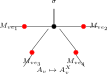
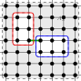
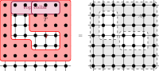
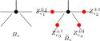
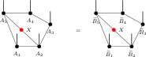
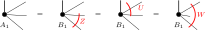
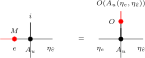

- Boxes
- definitions
- Ellipses
- theorems and lemmas
- Blue border
- the statement of this result is ready to be formalized; all prerequisites are done
- Orange border
- the statement of this result is not ready to be formalized; the blueprint needs more work
- Blue background
- the proof of this result is ready to be formalized; all prerequisites are done
- Green border
- the statement of this result is formalized
- Green background
- the proof of this result is formalized
- Dark green background
- the proof of this result and all its ancestors are formalized
- Dark green border
- this is in Mathlib
Let \(A\) be an MPS tensor in irreducible form II and let \(U : G \to \mathrm{GL}_d(\mathbb {C})\) be a representation of a group \(G\) on the physical leg, acting unitarily (\(U(g)\, U(g)^{\dagger } = \mathbb {1}\)). Assume moreover the periodic equal-case Fundamental Theorem of MPS (Theorem 22.25) as an explicit hypothesis on the pair \((d, D)\), expressed by the hypothesis \(d\, D\). If \(A\) is on-site symmetric under \(U\) — that is, the twisted tensor \(\widetilde{A}_g\) has the same MPV family as \(A\) for every \(g \in G\) — then for each \(g \in G\) there exists a positive period \(m_g\) and a \(\mathbb {Z}_{m_g}\)-gauge equivalence between \(A\) and \(\widetilde{A}_g\).
Concretely there are matrices \(Z_g\) and \(Y_g\), with \(Z_g^{m_g} = \mathbb {1}\) and \([A^i, Z_g] = 0\), satisfying, for every physical index \(i\),
Let \(A\) and \(B\) be MPS tensors of bond dimension \(D\), and fix a chain length \(n \ge 1\). Assume that \(A\) is injective and that the combined tensors of the two constant chains \((A, \ldots , A)\) and \((B, \ldots , B)\) generate the same MPV family. Then there exist an invertible matrix \(Z \in \mathrm{GL}_D(\mathbb {C})\) and a scalar \(\lambda \in \mathbb {C}^{\times }\) with \(\lambda ^n = 1\) such that
for every physical index \(i\).
Let \(n\) be positive, let \(0 {\lt} L\) with \(3L \le n\), and let \(A\) and \(B\) be tensors of \(D \times D\) matrices over physical dimension \(d\), each \(L\)-block injective, whose matrix product vectors agree at system size \(n\): \(V^{(n)}(A)_\sigma = V^{(n)}(B)_\sigma \) for every configuration \(\sigma \). Then there are invertible matrices \(Z_v\), one per bond of the closed chain (\(v = 1, \ldots , n\), \(n + 1 \equiv 1\)), with
This is the first corollary following the general normal-PEPS theorem of [ MGRPG\(^{+}\)18 , Section 4 ] specialized to one site-independent tensor: the source states the corollary for site-dependent families, and its conclusion is the per-bond gauge family delivered here. The source’s translation-invariant corollary (a single gauge \(Z\) and a constant \(\lambda \) with \(\lambda ^n = 1\)) refines this conclusion and is not part of this statement. Positivity of the physical and bond dimensions is not assumed: a vanishing bond dimension makes the conclusion trivial, and a vanishing physical dimension contradicts block injectivity.
Let \(A\) and \(B\) be tensors on the closed chain of \(n\) sites (the cycle graph on \(n\) vertices, one tensor per site with two virtual legs), with the same positive physical dimension and positive bond dimensions, and let \(0 {\lt} L\) with \(n \ge 3L\). Suppose blocking any \(L\) consecutive sites gives an injective tensor, for \(A\) and for \(B\), and the two MPS generate the same state. Then the defining tensors are related by a local gauge: there are invertible matrices, one on each bond, whose endpoint actions transform \(A_i\) into \(B_i\) at every site with no leftover scalar. This is the source’s family \(Z_i\) (\(i = 1, \dots , n\), \(n + 1 \equiv 1\)) with \(B_i = Z_i^{-1} A_i Z_{i+1}\), the first corollary following the general normal-PEPS theorem in [ MGRPG\(^{+}\)18 , Section 4 ] , the statement for MPS without translation invariance at a fixed system size. The positive physical and bond dimensions are the counterexample-backed corrections carried over from the injective Fundamental Theorem (Theorem 24.204), and \(0 {\lt} L\) is implicit in the source’s blocking of \(L\) consecutive sites; the equality of the bond dimensions is not assumed but derived, and the connectivity of the cycle is proved, not assumed.
In the setting of Corollary 24.343, with the bond dimensions of the two tensors equal and positive and the arcs of \(L\) consecutive sites injective for each tensor, any two families of invertible bond matrices realizing the scalar-free gauge relation are proportional at every bond: \(Z'_i = c \cdot Z_i\) for a nonzero scalar \(c\) depending on the bond. This is the uniqueness clause of the first corollary following the general normal-PEPS theorem of [ MGRPG\(^{+}\)18 , Section 4 ] : the gauges \(Z_i\) are unique up to a multiplicative constant. Neither equality of the two states nor connectivity is needed, as in the general uniqueness clause.
Let \(n\) be positive, let \(0 {\lt} L\) with \(3L \le n\), and let \(A\) and \(B\) be tensors of \(D \times D\) matrices, each \(L\)-block injective. If two families \(Z\) and \(Z'\) of invertible matrices on the bonds of the closed chain both satisfy \(B^i = Z_v^{-1} A^i Z_{v+1}\) at every site, then they are proportional by a single constant: there is a nonzero scalar \(c\) with \(Z'_v = c\, Z_v\) at every bond. This is the uniqueness clause of the first corollary following the general normal-PEPS theorem of [ MGRPG\(^{+}\)18 , Section 4 ] , for one site-independent tensor. Equality of the two states is not needed.
Let \(n\) be positive, let \(0 {\lt} L\) with \(2L + 1 \le n\), and let \(A\) and \(B\) be tensors of \(D \times D\) matrices over physical dimension \(d\), each \(L\)-block injective, whose matrix product vectors agree at system size \(n\). Then there are invertible matrices \(Z_v\), one per bond of the closed chain (\(v = 1, \ldots , n\), \(n + 1 \equiv 1\)), with
This is the per-bond gauge family of Corollary 24.348, delivered at the source’s strengthened bound \(n \ge 2L + 1\) in place of \(n \ge 3L\) ( [ MGRPG\(^{+}\)18 ] , the corollary after Lemma 5 in its closing section “Normal MPS: alternative proof”).
Let \(n\) be positive, let \(0 {\lt} L\) with \(3L \le n\), and let \(A\) and \(B\) be tensors of \(D \times D\) matrices over physical dimension \(d\), each \(L\)-block injective, whose matrix product vectors agree at system size \(n\): \(V^{(n)}(A)_\sigma = V^{(n)}(B)_\sigma \) for every configuration \(\sigma \). Then there are an invertible matrix \(Z\) and a constant \(\lambda \) with \(\lambda ^n = 1\) such that
This is the translation-invariant corollary of [ MGRPG\(^{+}\)18 , Section 4 ] , the statement for TI MPS following the first corollary after the general normal-PEPS theorem. Positivity of the bond dimension is not assumed: a vanishing bond dimension makes the conclusion trivial.
Let \(0 {\lt} L\) and let \(A\) and \(B\) be tensors of \(D \times D\) matrices, each \(L\)-block injective. If invertible matrices \(Z\), \(Z'\) and constants \(\lambda \), \(\lambda '\) satisfy \(B^i = \lambda \, Z^{-1} A^i Z\) and \(B^i = \lambda '\, Z'^{-1} A^i Z'\) for every \(i\), then there is a nonzero scalar \(c\) with \(Z' = c\, Z\). This is the uniqueness clause of the translation-invariant corollary of [ MGRPG\(^{+}\)18 , Section 4 ] for TI MPS. No system size enters the statement: equality of the two states is not needed, nor are the root-of-unity conditions on \(\lambda \) and \(\lambda '\).
Let \(0 {\lt} L\) with \(2L + 1 \le n\), and let \(A\) and \(B\) be tensors of \(D \times D\) matrices over physical dimension \(d\), each \(L\)-block injective, whose matrix product vectors agree at system size \(n\): \(V^{(n)}(A)_\sigma = V^{(n)}(B)_\sigma \) for every configuration \(\sigma \). Then there are an invertible matrix \(Z\) and a constant \(\lambda \) with \(\lambda ^n = 1\) such that
This is the strengthened closed-chain corollary of [ MGRPG\(^{+}\)18 ] (the corollary after Lemma 5 in its closing section “Normal MPS: alternative proof”), improving the system-size bound of Corollary 24.351 from \(n \ge 3L\) to \(n \ge 2L + 1\). The uniqueness clause of the source corollary — the gauge \(Z\) is unique up to a multiplicative constant — needs no system size and is Corollary 24.352. Positivity of the bond dimension is not assumed: a vanishing bond dimension makes the conclusion trivial.
Let \(0 {\lt} L\) with \(2L + 1 \le n\), and let \(A\) and \(B\) be site-dependent chains on \(n\) sites, each window injective at length \(L\), generating the same closed-chain state. Then the chains are gauge equivalent: there are invertible matrices \(Z_v\), one per bond of the closed chain, with
for every site \(v\) and every \(i\), indices cyclic. This is the closed-chain corollary of the closing section of [ MGRPG\(^{+}\)18 ] assembled from its site-dependent Lemma 5 at every bond; the source displays the corollary for translation-invariant tensors (Corollary 24.358), with the site-dependent Lemma 5 as its engine.
For \(s\in [0,1]\), \(t\in [0,1]\), and positive-definite matrices \(A_1,A_2,B_1,B_2\), the map \((A,B)\mapsto \Re \operatorname{tr}(A^s B^{1-s})\) is jointly concave:
Obtained from Theorem 18.15 by taking \(K=\mathbb {1}\).
For \(s\in [0,1]\), \(t\in [0,1]\), matrix \(K\), and positive-definite matrices \(A_1,A_2,B\), the map \(A\mapsto \Re \operatorname{tr}(K^\dagger A^s K B^{1-s})\) is concave:
For \(s\in [0,1]\), \(t\in [0,1]\), matrix \(K\), and positive-definite matrices \(A,B_1,B_2\), the map \(B\mapsto \Re \operatorname{tr}(K^\dagger A^s K B^{1-s})\) is concave:
Assume a same-state reduction hypothesis for \((d,D)\). Let \(\mathbf{A} = (A_0, \ldots , A_{n-1})\) be an injective non-translation-invariant chain of length \(n \ge 3\). Suppose the state generated by \(\mathbf{A}\) is translation-invariant, i.e. it equals the state generated by the cyclically shifted chain \((A_1, \ldots , A_{n-1}, A_0)\). Then \(\mathbf{A}\) admits a translation-invariant description with the same bond dimension: there exists an injective tensor \(B\) such that the constant chain \((B, \ldots , B)\) generates the same state as \(\mathbf{A}\). Explicitly, \(B^i = A_0^i\, Z_0^{-1}\) (right multiplication, not conjugation), where \(Z_0\) is extracted from the cyclic shift.
Suppose \(A\) and \(B\) have the same bond dimension on every edge, and that these bond dimensions are positive. Let \(C\) be the gauge action of \(X\) on \(B\), reindexed along this bond-dimension equality, and assume that the \(R\)-blocked family of \(C\) is linearly independent. If the two two-block scalar proportionalities of the blocked weights of \(A\) and \(C\) over \(R\) and over \(S=R\cup \{ v\} \) hold, with ratios \(c_R\) and \(c_S\) and with \(c_R\ne 0\), then the per-vertex gauge relation
holds at every local configuration \(\eta \) at \(v\) and every physical index \(\sigma \).
Let \(A\) and \(B\) be PEPS tensors on the discrete \(n\times m\) torus with \(n,m{\gt}1\), with equal bond dimensions and positive bond dimensions, generating the same state, and let \(X\) be a family of invertible matrices, one on each edge. Suppose that at every site \(v\) a region \(R_v\) not containing \(v\) is supplied together with the two two-block scalar proportionalities of the blocked weights of \(A\) and of the gauge-absorbed second tensor over \(R_v\) and over \(R_v\cup \{ v\} \), with ratios \(c_R(v)\) and \(c_S(v)\) satisfying \(c_R(v)\ne 0\) and whose quotient \(c_S(v)/c_R(v)\) is a single scalar \(\lambda \) independent of \(v\), and with the gauge-absorbed region block linearly independent. If, in addition, a single comparison region whose block and complement block are both blocked-tensor injective is supplied, then \(\lambda \) raised to the number of torus sites is one:
Suppose that for any two tensors in irreducible form II with the same MPV family there is \(m {\gt} 0\) making them gauge equivalent up to an \(m\)-th root of unity (Theorem 22.25). Let \(A\) be in irreducible form II and let \(M\) be a matrix such that \(B := A_M\) is also in irreducible form II and \(\mathcal{V}(A) = \mathcal{V}(B)\). Then there is \(m {\gt} 0\) such that \(A\) and \(B\) are gauge equivalent up to an \(m\)-th root of unity.
Let \((A_x)_{x \in X}\) be a finite separated normal-canonical family whose blocks have positive virtual bond dimension. Then there is a positive integer \(L\) such that every blocked tensor \(A_x^{[L]}\) is one-site injective. The same conclusion holds simultaneously for two finite separated normal-canonical families whose blocks have positive virtual bond dimension.
Here the family is a basis of normal-canonical representatives in the sense of Definition 10.9; the blocks are distinct and the weight moduli are non-increasing but need not be strictly ordered. It assumes that the representative family has already been selected; it does not reconstruct the full CPSV sector decomposition with repeated copies inside one sector. The restriction is recorded in docs/paper-gaps/ft_one_copy_scope_restriction.tex.
Let \(A\) be an MPS tensor with bond dimension \(D \ge 1\), satisfying \(\sum _i (A^i)^\dagger A^i=\mathbb {1}\), and suppose that \(A\) is primitive with a positive-definite fixed point. If some Kraus operator \(A^{i_0}\) is invertible, then
Let \(A\) be an MPS tensor with bond dimension \(D \ge 1\), satisfying \(\sum _i (A^i)^\dagger A^i=\mathbb {1}\), and suppose that \(A\) is primitive with a positive-definite fixed point. If some Kraus operator \(A^{i_0}\) is non-invertible and has an eigenvector \(\varphi \ne 0\) with nonzero eigenvalue \(\mu \), then
The Cartesian presentation of the AKLT tensor has \(d = 3\), \(D = 2\), and \(A^x = \sigma _x\), \(A^y = \sigma _y\), \(A^z = \sigma _z\), the three Pauli matrices. This is the rotationally natural form used in [ CPGSV21 ] (around line 1159); it is the AKLT state in the Cartesian basis of the spin-\(1\) site, the counterpart of the \(|m\rangle \)-basis form of Definition 15.12.
The AKLT factor system on \(\mathbb {Z}_2 \times \mathbb {Z}_2\) is \(\omega (g,h) = (-1)^{(g_1 + g_2)\, h_1}\) (the value \(-1\) when \(g_1 + g_2 = 1\) and \(h_1 = 1\), and \(1\) otherwise). It is the factor system of the explicit projective representation with virtual gauges \(i\sigma _y\) and \(\sigma _z\); the diagonal term \(g_1 h_1\) relative to the cluster case reflects \((i\sigma _y)^2 = -I\).
Set \(d = 3\) (spin-1) and \(D = 2\). The AKLT tensor is the family \(\{ A^0, A^1, A^2\} \subset M_{2}(\mathbb {C})\) defined via the Pauli matrices by
where \(\sigma _z = |0\rangle \! \langle 0| - |1\rangle \! \langle 1|\), so equivalently \(A^1 = \frac{1}{\sqrt{3}} \sigma _+\) and \(A^2 = -\frac{1}{\sqrt{3}} \sigma _-\) for \(\sigma _+ = \sqrt{2} |0\rangle \! \langle 1|\) and \(\sigma _- = \sqrt{2} |1\rangle \! \langle 0|\). Equivalently, the matrices are the Clebsch–Gordan coefficients coupling spin-\(1\) and spin-\(\tfrac 12\) to spin-\(\tfrac 12\).
For an MPS tensor \(A\), let \(\operatorname{alg}(A)\) be the unital \(\mathbb {C}\)-subalgebra of \(M_{D}(\mathbb {C})\) generated by the matrices \(\{ A^i\} _{i=0}^{d-1}\):
For \(r, s\), let \(P_{\mathrm{top}} = C_{r,s}^\dagger C_{r,s}\) and \(P_{\mathrm{bot}} = \mathbb {1}- P_{\mathrm{top}}\). Both are PSD (for \(P_{\mathrm{bot}}\), by Lemma 16.41) and \(P_{\mathrm{top}} + P_{\mathrm{bot}} = \mathbb {1}\).
Given \(r\) blocks with bond dimensions \((D_k)_{k=1}^r\), per-block tensors \(\{ A_k^i\} \), and scaling factors \((\mu _k)_{k=1}^r\), the associated block-diagonal tensor is the tensor of total bond dimension \(D = \sum _{k=1}^r D_k\) defined by
For a fixed system size \(N\), a block length \(L\le N\), and an MPO tensor \(M\) such that \(\rho ^{(N)}(M)\) is positive semidefinite, the \(L\)-block entropy \(S_L^{(N)}(M)\) is the von Neumann entropy of the reduced state of the first \(L\) of \(N\) spins of the normalized state \(\sigma ^{(N)}(M) = \rho ^{(N)}(M) / \operatorname{tr}[\rho ^{(N)}(M)]\).
For natural numbers \(r, s\), let \(C = C_{r,s} \in \mathbb {C}^{r \times (r+s)}\) be the rectangular \(r \times (r+s)\) matrix whose rows are the first \(r\) rows of the identity on \(\mathbb {C}^{r+s}\): \(C_{ij} = 1\) if \(j = i {\lt} r\) and \(0\) otherwise.
Given a tensor \(A\) and a blocking length \(L\), the \(L\)-blocked tensor is the tensor with physical index set \(\{ 0,\ldots ,d{-}1\} ^L\) (hence physical dimension \(d^L\)) and the same bond dimension \(D\), whose matrices are indexed by words \((i_1, \ldots , i_L) \in \{ 0,\ldots ,d{-}1\} ^L\):
Blocking coarse-grains \(L\) neighbouring sites into one tensor: the inner virtual bonds are contracted, the \(L\) physical legs merge into a single composite index, and the two outer bonds remain as the bond of \(A^{[L]}\).
For a fixed blocked length \(m\), the fixed-length form of the block-injective canonical-form condition is
Equivalently,
This is the fixed-length form of the block-injective canonical-form condition of [ CPGSV21 , lines 2113–2117 ] .
A basis of normal tensors (BNT) for a total tensor \(A_{\mathrm{tot}}\) consists of \(g\) block tensors \((A_1, \ldots , A_g)\) with bond dimensions \((D_1, \ldots , D_g)\) such that each \(A_j\) is normal (Definition 2.31); at each system size \(N\) the MPV of \(A_{\mathrm{tot}}\) lies in the span of the block MPVs \(\{ |V^{(N)}(A_j)\rangle \} _{j=1}^g\); and for sufficiently large \(N\) those block MPVs are linearly independent. This is [ CPGSV21 , Definition IV.2 ] . In the canonical-form characterization of [ CPGSV16 , Section 2.3 ] , a BNT is a minimal family of representatives for \(\widetilde A_k^i = e^{i\phi _k} X_k A_j^i X_k^{-1}\) among the normal blocks.
The coefficient form of a basis of normal tensors: each block \(A_j\) is a CPSV normal tensor (Definition 9.4), the MPV of \(A\) is given at every length by explicit coefficients \(c_j^{(N)} \in \mathbb {C}\) with \(|V^{(N)}(A)\rangle = \sum _{j=1}^{g} c_j^{(N)} |V^{(N)}(A_j)\rangle \), and the block MPVs \(\{ |V^{(N)}(A_j)\rangle \} \) are eventually linearly independent.
Here, a block-injective canonical form for a tensor consists of:
a number of blocks \(r \ge 1\),
bond dimensions \(D_1, \ldots , D_r\),
injective tensors \(\{ A_k^i\} _{i=0}^{d-1}\) with \(A_k^i \in M_{D_k}(\mathbb {C})\) for each block \(k \in \{ 1,\ldots ,r\} \),
scaling factors \(\mu _1, \ldots , \mu _r \in \mathbb {C}\).
The associated tensor is the block-diagonal tensor
This block-injective formulation of the canonical form is used in [ PGVWC07 ] ; see also [ CPGSV21 ] for the normal canonical form.
Let a closed chain on \(n \ge 1\) sites carry one tensor of \(D \times D\) matrices over physical dimension \(d\) per site, \(A_0, \dots , A_{n-1}\). The arc product of a word \(x = x_1 \cdots x_\ell \) read from site \(s\) is
site indices cyclic. The chain is window injective at length \(L\) when, for every site \(s\), the arc products of the length-\(L\) words read from \(s\) span the full matrix algebra. This is the site-dependent setting of the closing section of [ MGRPG\(^{+}\)18 ] (“Normal MPS: alternative proof”): an MPS on five sites in which the blocking of any two consecutive tensors is injective, for a general window length \(L\).
For \(N {\gt} 0\) and \(L \le N\), define the periodic parent-Hamiltonian ground space
where the condition \(\psi |_{[i,i+L-1]} \in G_L(A)\) means that for every choice of physical indices outside the window, the restriction of \(\psi \) to that window lies in \(G_L(A)\). The one-index notation \(G_L(A)\) denotes the local ground space \(\mathcal G_L\) of [ CPGSV21 , Section IV.C ] . The two-index notation \(\mathcal G_{N,L}(A)\) used here denotes the periodic intersection of those local constraints over all translated length-\(L\) windows on the \(N\)-site ring. When \(N = 0\) or \(L {\gt} N\), set \(\mathcal{G}_{N,L}(A) := \top \) by convention.
For a linear map \(T : M_{D}(\mathbb {C}) \to M_{D}(\mathbb {C})\), the channel determinant \(\det T\) is the determinant of the matrix of \(T\) with respect to the standard matrix-unit basis of \(M_{D}(\mathbb {C})\). This is the quantity studied in [ Wol12 , Section 6.1 ] .
The Choi matrix of a linear map \(T : M_{D}(\mathbb {C}) \to M_{D}(\mathbb {C})\) is
Concretely, \(\tau _{(i_1,i_2),(j_1,j_2)} = \frac{1}{D}\, (T(E_{i_2 j_2}))_{i_1 j_1}\) where \(E_{i_2 j_2}\) is the matrix unit. This is the Choi–Jamiol\- kowski convention of [ Wol12 , Proposition 2.1 ] .
The cluster-state factor system on \(\mathbb {Z}_2 \times \mathbb {Z}_2\) is \(\omega (g,h) = (-1)^{g_2\, h_1}\) (the value \(-1\) when \(g_2 = 1\) and \(h_1 = 1\), and \(1\) otherwise). It is the factor system of the explicit projective representation with virtual gauges \(\sigma _z\) and \(\sigma _x\), both squaring to the identity, so there is no diagonal term.
Set \(d = D = 2\). The cluster-state tensor is the family \(\{ A^0, A^1\} \subset M_{2}(\mathbb {C})\) defined by
where \(|\pm \rangle = \tfrac {1}{\sqrt{2}}(|0\rangle \pm |1\rangle )\). The review [ CPGSV21 ] writes the reflected convention \(A^0 = |0\rangle \! \langle +|\), \(A^1 = |1\rangle \! \langle -|\); the transpose taken here is the same state read in the opposite direction and carries the same SPT order.
Two cocycles \(\omega _1,\omega _2\) are cohomologous (written \(\omega _1 \sim \omega _2\)) if there exists \(\varphi \colon G \to \mathbb {C}^{\times }\) such that, for all \(g,h \in G\),
The commutator form of the Lindblad equation writes the generator as
where \([A,B] = AB - BA\). This is [ Wol12 , Equation (7.22) ] .
Transfer-map covariance is the identity that the transfer map commutes with virtual conjugation: \(\mathcal{E}(V X V^\dagger ) = V\, \mathcal{E}(X)\, V^\dagger \). In doubled-layer notation, the virtual operators slide through the local transfer cell:

For an idempotent \(P \in M_{D}(\mathbb {C})\), the subspace \(\{ X \mid P X P = X\} \) and the corner \(\{ P\, X\, P \mid X \in M_{D}(\mathbb {C})\} \) are identified as \(\mathbb {C}\)-linear spaces by the identity on underlying matrices.
A linear map \(E : M_{D}(\mathbb {C}) \to M_{D}(\mathbb {C})\) is completely positive (CP) if it admits a Kraus representation: there exist operators \(\{ K_i\} _{i=0}^{r-1}\) with \(K_i \in M_{D}(\mathbb {C})\) such that, for every \(X \in M_{D}(\mathbb {C})\),
By Choi’s theorem, this is equivalent to \(E \otimes \operatorname{id}_n\) being positive for all \(n\).
Given an MPS tensor \(A\) and a vector \(\varphi \in \mathbb {C}^D\), the cumulative vector span is
This is [ SPGWC10 , proof of Lemma 2(a) ] .
Let \(T : M_{D}(\mathbb {C}) \to M_{D}(\mathbb {C})\). A block-permutation structure for \(T\) consists of a finite index set \(\iota \), a family of orthogonal projections \(P_k \in M_{D}(\mathbb {C})\) for \(k \in \iota \), and a permutation \(\sigma \in \mathrm{Sym}(\iota )\) (not necessarily a single cycle—in general \(\sigma \) may have multiple disjoint cycles), such that
for every \(k \in \iota \) and \(X \in M_{D}(\mathbb {C})\).
Every edge of the cycle graph on \(n \ge 3\) vertices joins a site to its cyclic successor, so sites and bonds are in bijection, and every site has exactly two incident bonds: the bond shared with its cyclic predecessor and the bond shared with its cyclic successor. The cycle tensor of a tensor \(A = (A^i)_{i=0}^{d-1}\) of \(D \times D\) matrices places one copy of \(A\) at every site of the closed chain of \(n\) sites, every bond of dimension \(D\), with the row index of \(A^i\) read from the bond shared with the predecessor and the column index from the bond shared with the successor.
A family of compressed sector tensors \((C_k)_{k=0}^{m-1}\) on corner bond spaces forms a cyclic sector decomposition of the blocked tensor \(A^{(m)}\) if there exist orthogonal projections \(P_0,\dots ,P_{m-1}\) on the ambient bond space such that \(\sum _k P_k = \mathbb {1}\), the projections satisfy the cyclic-shift relation \(\mathcal{E}_A^\dagger (P_{k+1}) = P_k\) with the index \(k+1\) taken cyclically modulo \(m\), each \(P_k\) commutes with every blocked letter \(P_k A^{(m)}_i = A^{(m)}_i P_k\), and \(V^{(N)}(C_k)_\sigma = \operatorname{tr}(P_k (A^{(m)})^\sigma )\) for every word \(\sigma \), and each block carries a \(\ast \)-algebra isomorphism \(\varphi _k : M_{\dim C_k}(\mathbb {C}) \xrightarrow {\sim } P_k \cdot M_D(\mathbb {C}) \cdot P_k\) (multiplicative and adjoint-preserving) intertwining the compressed adjoint transfer map with the sector adjoint transfer map on the corner of \(P_k\). This is the inverse cyclic indexing of the off-diagonal convention in [ DlCCSPG17 , Appendix A ] . There the same adjoint transfer map is written \(E^*\), and the source projectors satisfy \(E^*(P_u)=P_{u+1}\) together with \(A^i=\sum _u P_u A^i P_{u+1}\). Here \(P_k\) corresponds to the source sector \(u=-k \pmod m\), which turns the source shift into the displayed adjoint-transfer relation.
The set of density matrices in \(M_{D}(\mathbb {C})\) is
A linear map \(T : M_{D}(\mathbb {C}) \to M_{D}(\mathbb {C})\) is doubly-stochastic if \(T(\mathbb {1}) \propto \mathbb {1}\) and the reduced density matrix \(\operatorname{tr}_{1}[\tau ]\) of its Choi matrix \(\tau = (T \otimes \operatorname{id})(|\Omega \rangle \! \langle \Omega |)\) is proportional to the identity. This is the normal form in [ Wol12 , Proposition 2.8 ] .
A family of linear maps \(T : \mathbb {R}\to (M_{D}(\mathbb {C}) \to _{\ell } M_{D}(\mathbb {C}))\) is a dynamical semigroup if
(semigroup law) \(T_{t+s} = T_t \circ T_s\) for all \(t,s \ge 0\); and
(initial condition) \(T_0 = \operatorname{id}\).
This is [ Wol12 , Equation (7.1) ] .
For an edge \(e = (u,w)\) with \(u {\lt} w\) and gauge \(X_e \in \mathrm{GL}(D_e)\), the gauge matrix applied at vertex \(v\) is \(X_e\) if \(v = u\) and \((X_e^{-1})^\top \) if \(v = w\). Diagrammatically, the ordered edge carries opposite endpoint actions:

Given a word \(w = (i_1, \ldots , i_L) \in \{ 0,\ldots ,d{-}1\} ^L\), the word evaluation is the matrix product
with the convention that the empty word evaluates to the identity: \(A^\varnothing = \mathbb {1}_D\). In tensor-network notation,
in which each black node denotes the same local tensor \(A\), the virtual legs remain open, and the physical legs are labelled by the word \((i_1,\ldots ,i_L)\).
Two tensors \(A\) and \(B\) are eventually nonzero proportional if, for all sufficiently large \(N\), there is a nonzero scalar \(c_N \in \mathbb {C}\) such that \(|V^{(N)}(A)\rangle = c_N |V^{(N)}(B)\rangle \). This auxiliary form is used with the eventual linear-independence statement Lemma 10.4.
Given a generator \(L \in \mathrm{End}_{\mathbb {C}}(M_{D}(\mathbb {C}))\), the exponential semigroup is
For \(\sigma \in \{ 0,\ldots ,d{-}1\} ^{N}\) and a starting site \(i\), write
for the word defined by
A Fitting decomposition of a linear endomorphism \(f : V \to V\) on a finite-dimensional vector space over an algebraically closed field consists of:
\(f\) is nilpotent on the generalized \(0\)-eigenspace,
\(f\) is invertible on each generalized \(\mu \)-eigenspace for \(\mu \neq 0\),
the generalized eigenspaces span \(V\),
the generalized eigenspaces are linearly independent.
Given a linear map \(E : M_{D}(\mathbb {C}) \to M_{D}(\mathbb {C})\) and a fixed point \(\rho \) with \(E(\rho ) = \rho \) and \(\operatorname{tr}(\rho ) \neq 0\), the fixed-point projection is the rank-one map
This projects onto the span of \(\rho \) along the kernel of the trace functional. When the fixed point is unique up to scaling, this span is the full fixed-point space.
Two tensors \(A\) and \(B\) of the same bond dimension \(D\) are gauge equivalent if there exists an invertible matrix \(X \in \mathrm{GL}_D(\mathbb {C})\) such that, for every \(i \in \{ 0,\ldots ,d{-}1\} \),
In tensor-network notation,

the black node denotes the tensor named in the surrounding formula, the upper leg is the physical index \(i\), and the two red side nodes denote the gauge matrices acting on the virtual legs.
Two tensors \(A\) and \(B\) are gauge-phase equivalent if there exist \(X \in \mathrm{GL}_D(\mathbb {C})\) and \(\zeta \in \mathbb {C}\setminus \{ 0\} \) such that, for every physical index \(i\),
Two gauge families are equivalent modulo balanced edge scalars if there is a nonzero scalar \(c_e\) on each edge such that the corresponding endpoint actions satisfy \(X_{v,e}=c_{v,e}Y_{v,e}\), and \(\prod _{e\ni v}c_{v,e}=1\) for every vertex \(v\).
The gauged tensor at vertex \(v\) is \(A^X_v\). For each incident edge \(ie\), write \(M_{ie}\) for the matrix specified by Definition 24.7, applied at the vertex \(v\) to the gauge on the underlying edge of \(ie\). Then \(A^X_v(\eta , \sigma ) = \sum _{\eta '} (\prod _{ie} M_{ie}(\eta (ie), \eta '(ie))) A_v(\eta ', \sigma )\). In tensor-network notation, one inserts the appropriate gauge matrix on each incident virtual leg of the local tensor:

A generator decomposition consists of a completely positive map \(\phi : M_{d}(\mathbb {C}) \to M_{d}(\mathbb {C})\) and a matrix \(\kappa \in M_{d}(\mathbb {C})\), defining the linear map
This is [ Wol12 , Equation (7.14) ] .
Set \(d = D = 2\). The GHZ tensor is the family \(\{ A^0, A^1\} \subset M_{2}(\mathbb {C})\) defined by
For a system of \(N\) sites the resulting MPV is the GHZ state
The virtual \(\mathbb {Z}_2\) representation on the bond space is the homomorphism \(\mathbb {Z}_2 \to M_{2}(\mathbb {C})\) sending the identity to \(I\) and the generator to \(\sigma _z = \operatorname{diag}(1, -1)\).
Given per-block gauges \(X_k \in \mathrm{GL}_{D_k}(\mathbb {C})\), first form the dependent block-diagonal element \(\bigoplus _k X_k\) and then reindex the dependent block-coordinate index to the standard index \(\{ 0,\dots ,\sum _k D_k-1\} \) of the assembled tensor. The resulting element of \(\mathrm{GL}_{\sum _k D_k}(\mathbb {C})\) is the global gauge used in the conjugation formula for \(\bigoplus _k \mu _k A_k\).
Let
be the canonical computational-basis identification. The local ground space under this \(\ell ^2\) identification is
The map \(\Gamma _L\) above is a \(\mathbb {C}\)-linear map
In tensor-network notation,

the upper chain denotes the word tensor \(A^\sigma \) with open physical indices \(\sigma _1,\ldots ,\sigma _L\), and the lower red node denotes the boundary matrix \(X\) inserted on the closing virtual bond before taking the trace. The chain length \(L\) is fixed by the surrounding formula, not by an extra label inside the diagram.
Condition (4): there exists a nontrivial projector \(P\) and a Lindblad form \((H, \{ L_j\} )\) for \(L\) such that \((1-P)L_j P = 0\) and \((1-P)\kappa P = 0\) for all \(j\), where \(\kappa = iH + \frac{1}{2}\sum _j L_j^\dagger L_j\).
The structure used below records only the idempotent-product consequence of the parent commuting Hamiltonian condition of [ CPGSV16 , Appendix D.2 ] . It consists of commuting idempotent endomorphisms \(P_{AX}\) and \(P_{XB}\) such that, for the idempotent \(P_K\) associated to \(K\),
In the source, this is the equation obtained from local projectors \(Q_{AX}\) and \(Q_{XB}\) satisfying \([Q_{AX},Q_{XB}]=0\) and \(K_{AXB}=(K_{AX}\otimes H_B)\cap (H_A\otimes K_{XB})\).
An MPS tensor \(A\) has an invariant projection if there exists an orthogonal projection \(P\) with \(P \neq 0\), \(P \neq \mathbb {1}\), and \((\mathbb {1}- P) A^i P = 0\) for all \(i\). A tensor is irreducible if it has no nontrivial invariant projection (Definition 9.16).
A completely positive map \(E\) on \(M_{D}(\mathbb {C})\) has the spectral properties of [ Wol12 , Theorem 6.4 ] if there exist a positive real number \(r\), a positive definite right eigenvector \(\rho \), and a positive definite left eigenvector \(\sigma \) for the adjoint map such that \(E(\rho ) = r \rho \), \(E^\dagger (\sigma ) = r \sigma \), every positive semidefinite right eigenvector for eigenvalue \(r\) is a scalar multiple of \(\rho \), and the spectral radius of \(E\) is equal to \(r\).
String order exists for \(u\) with respect to a boundary state \(\Lambda \) if there exist boundary matrices \(X, Y\) and a positive constant \(c {\gt} 0\) such that \(c \le \| R_L(u;X,Y)\| \) for all \(L\), where \(R_L(u;X,Y)\) is the boundary-refined string-order parameter. Thus some boundary-refined string-order sequence does not decay to zero.
String order is here an existence statement over the virtual matrices \(X,Y\), for a fixed twist \(u\); no claim is made for any particular boundary choice. The definition in [ PGWS\(^{+}\)08 ] quantifies existentially over a local unitary \(u \ne \mathbb {1}\) and physical endpoint operators \(x,y\), and requires a positive limit \(\lim _{N\to \infty }|S_N| {\gt} 0\) rather than a lower bound uniform in the length; that paper also notes that the correlator for a particular endpoint choice can vanish even when the symmetry is present.
A Hayashi Markov decomposition of a tripartite state \(\rho _{ABC}\) consists of a finite direct-sum decomposition
together with a unitary change of basis on \(B\), a probability vector \((p_j)_j\), and density matrices \(\rho _{A B_j^L}\) and \(\rho _{B_j^R C}\) such that, in the adapted basis, the state becomes
The terminology follows Hayashi’s presentation of quantum Markov structure [ Hay06 ] ; the block decomposition used by the MPDO argument is the structure theorem of [ HJPW04 ] .
An MPO tensor is in horizontal canonical form if its doubled-index MPS tensor generates the same MPV family as a block-diagonal tensor \(\bigoplus _k \mu _k A_k\) whose blocks are injective, left-canonical, and have nonzero weights \(\mu _k\). It also includes a finite-length block-separation condition: there is a length \(L\) such that
for every word \(w\) of length \(L\) implies \(\Delta _k=0\) for every block \(k\).
Associated to an instrument are the total channel \(\sum _i \Phi _i\), the unnormalized update \(\rho \mapsto \Phi _i(\rho )\) for each outcome \(i\), the outcome probability \(p_i(\rho ) = \operatorname{tr}(\Phi _i(\rho ))\), and the normalized posterior state \(\Phi _i(\rho ) / p_i(\rho )\) whenever \(p_i(\rho ) \neq 0\).
A linear map \(E : M_{D}(\mathbb {C}) \to M_{D}(\mathbb {C})\) is irreducible if whenever \(P\) is an orthogonal projection satisfying \(E(P M_{D}(\mathbb {C}) P) \subseteq P M_{D}(\mathbb {C}) P\), then \(P = 0\) or \(P = \mathbb {1}\). This is [ Wol12 , Theorem 6.2(1) ] . The definition applies to any linear map; complete positivity is not required.
A tensor \(A\) is in irreducible form if it is block-diagonal
where each block \(A_j\) is an \(m_j\)-periodic tensor. Following [ DlCCSPG17 , Section II ] , the phases are fixed by the convention \(\mu _j{\gt}0\), so the weights are positive real scalars. It extends the normal canonical form (Definition 9.26), which requires the stronger condition that every block is \(1\)-periodic.
A collection of scaling factors \((\mu _k)_{k=1}^r\) and block tensors \((A_k)_{k=1}^r\) satisfies the canonical form conditions if:
each \(A_k\) is injective,
each \(A_k\) satisfies the TP normalization \(\sum _i (A_k^i)^\dagger A_k^i = \mathbb {1}\),
the moduli are non-increasing: \(|\mu _1| \ge |\mu _2| \ge \cdots \ge |\mu _r|\),
all \(\mu _k \neq 0\),
the self-overlap converges: \(O_{A_k A_k}(N) \to 1\) for each \(k\).
Only this one-sided normalization is assumed; no unital condition is assumed here. Condition (5) is a primitivity hypothesis: for a primitive channel ( [ Wol12 , Theorem 6.7(3) ] ), \(T^n(\rho ) \to \rho _\infty \) for every initial state, which forces the self-overlap to converge to \(1\). See also [ Wol12 , Theorem 6.8 ] for the completely-positive characterisation and Chapter 7 for the transfer-operator gap proof.
A linear map \(L : M_{d}(\mathbb {C}) \to M_{d}(\mathbb {C})\) is conditionally completely positive (CCP) if it admits a generator decomposition, i.e. there exist a CP map \(\phi \) and a matrix \(\kappa \) such that \(L(\rho ) = \phi (\rho ) - \kappa \rho - \rho \kappa ^\dagger \). This is condition 1 of [ Wol12 , Proposition 7.2 ] .
The parent Hamiltonian with block length \(L\) on \(N\) sites has commuting local terms if \(h_i h_j = h_j h_i\) for all \(i,j \in \{ 0,\ldots ,N{-}1\} \). This records the translated commutation equation \([\tau _j(P_L),P_L]=0\) from [ CPGSV16 , Definition 3.9 ] ; the same source definition also requires the ground space to be spanned, for \(N{\gt}L\), by the periodic MPS vectors of the BNT components.
Given a \(*\)-subalgebra \(S \subseteq M_{D}(\mathbb {C})\), a linear map \(P : M_{D}(\mathbb {C}) \to M_{D}(\mathbb {C})\) is a conditional expectation onto \(S\) if it is idempotent, unital, has range contained in \(S\), and satisfies \(P(X)=X\) for all \(X \in S\).
Given an endomorphism \(P_K\) and sets of observables \(\mathcal{O}_A\), \(\mathcal{O}_B\), regions \(A\) and \(B\) are decorrelated w.r.t. \(K\) when \(P_K \circ O_A \circ (1 - P_K) \circ O_B \circ P_K = 0\) for all \(O_A \in \mathcal{O}_A\), \(O_B \in \mathcal{O}_B\).
A linear map \(\mathcal{S}\) between matrix algebras is trace-preserving completely positive if it has a Kraus form \(\mathcal{S}(X) = \sum _{i} A_i X A_i^\dagger \) with \(\sum _i A_i^\dagger A_i = I\). The Kraus operators may be rectangular, so the input and output dimensions need not agree.
An MPO tensor \(M\) satisfies the local purification RFP condition if it is an LPDO whose purifying tensor \(A\), viewed as a matrix product state tensor on the combined spin–ancilla index, is a pure-state renormalization fixed point. Thus
This local condition is motivated by the purification tensor formula [ CPGSV16 , lines 744–747 ] , but is weaker than the source purification RFP definition; the latter remains open.
For the single-block convention used here, local orthogonality means
The source local-orthogonality condition for a BNT family is instead the collection of mixed-sector equations
Thus this definition records the one-block idempotence convention, not the full BNT-level condition of [ CPGSV16 , Definition 3.5 ] .
The nearest-neighbor commuting condition is the length-\(2\) specialization of the preceding commutation equation. For every \(i,j\in \{ 0,\ldots ,N{-}1\} \),
The source definition [ CPGSV16 , Definition 3.9 ] also requires the corresponding parent Hamiltonian to have \(L=2\) and to have the prescribed ground-space spanning property for \(N{\gt}2\).
This condition records the commutation equation and the zero-energy equation for the nearest-neighbor parent terms:
This is the ground-vector part of the condition appearing in [ CPGSV16 , Theorem 3.10(iii) ] : the MPS vector has zero energy for the translated two-site parent terms, and those terms commute. The missing source assertion is that the whole parent-Hamiltonian ground space is spanned by the corresponding periodic MPS vectors from the BNT components, as recorded in Definition 13.127.
Scaling factors \((\mu _k)_{k=1}^r\) and block tensors \((A_k)_{k=1}^r\) satisfy the normal canonical form conditions if:
each \(A_k\) is irreducible,
each \(A_k\) satisfies \(\sum _i (A_k^i)^\dagger A_k^i = \mathbb {1}\),
each \(\mathcal{E}_{A_k}\) is primitive (equivalently, \(\sigma _\partial (\mathcal{E}_{A_k}) = \{ 1\} \)),
\(|\mu _1| \ge |\mu _2| \ge \cdots \ge |\mu _r|\),
all \(\mu _k \neq 0\),
all bond dimensions are positive.
Here “normal” is the spectral sense of [ CPGSV16 ] , which by [ SPGWC10 , Proposition 3 ] is equivalent to the eventual block-injectivity formulation of Definition 2.31.
An MPO tensor \(M\) is a renormalization fixed point if there exist two trace-preserving completely positive maps \(\mathcal{S}, \mathcal{T}\) on the physical indices such that \(\mathcal{S}[M_2(X)] = M_1(X)\) and \(\mathcal{T}[M_1(X)] = M_2(X)\) for every virtual operator \(X\), where \(M_1(X)_{ij} = \operatorname{tr}(M^{ij} X)\) and \(M_2(X)_{(i_1 i_2)(j_1 j_2)} = \operatorname{tr}(M^{i_1 j_1} M^{i_2 j_2} X)\) are the one- and two-site physical operators obtained by closing one or two tensors with \(X\). This condition is strictly stronger than transfer-map idempotence for general mixed states, and coincides with it for pure states. This is [ CPGSV16 , Definition 4.1, line 657 ] .
An MPO tensor \(M\) that generates an MPDO and whose finite-chain operators \(\rho ^{(N)}(M)\) all have nonzero trace (so the normalized states are well-defined) saturates the area law if \(I_L = I_{L+1}\) for all \(1 \le L {\lt} \lfloor N/2 \rfloor \) and all \(N\); that is, the mutual information is constant, \(I_1 = I_2 = \cdots = I_{\lfloor N/2 \rfloor }\). This is [ CPGSV16 , Definition 4.6, line 811 ] .
Injective tensors \(A\) and \(B\), both symmetric under an on-site representation \(U \colon G \to \mathrm{GL}_{d}(\mathbb {C})\), are in the same SPT phase if there exist virtual cocycles \(\omega _A,\omega _B\) with corresponding projective representations that intertwine the respective twisted tensors and satisfy \(\omega _A\sim \omega _B\) (cohomologous).
In the single-block convention, an MPS tensor has zero correlation length when
both hold. The source definition combines CID with BNT-level local orthogonality, namely the equations \(\mathcal{E}_{j,j'}=0\) for \(j\ne j'\).
A PEPS tensor \(A\) is vertex-injective if, at every vertex \(v\), the family of physical vectors
indexed by virtual configurations \(\eta \) on the edges incident to \(v\) is linearly independent in \(\mathbb {C}^d\). Equivalently, extending \(A_v\) by linearity to a map from the free vector space on virtual configurations into the physical space \(\mathbb {C}^d\) gives a linear map with trivial kernel. This matches the injectivity formulation of [ MGRPG\(^{+}\)18 , Section 3 ] , where the local tensor is interpreted as a map from virtual configurations to the physical space.
A Kossakowski form consists of \(H = H^\dagger \), a finite family of matrices \(\{ F_k\} _{k=0}^{n-1}\), and a positive semidefinite matrix \(C \in M_{n}(\mathbb {C})\), defining
In Wolf’s formula one takes \(\{ F_k\} \) to be a basis of traceless matrices; here we keep only the algebraic data needed for the conversion to Lindblad form.
The Kraus commutant is \(\{ K_i, K_i^\dagger \} ' = \{ X \in M_{D}(\mathbb {C}) : [X, K_i] = [X, K_i^\dagger ] = 0 \forall i\} \). It is a \(*\)-subalgebra of \(M_{D}(\mathbb {C})\).
For operators \(\{ K_i\} _{i=0}^{d-1} \subseteq M_{D}(\mathbb {C})\), the associated Kraus map and adjoint Kraus map are
The Kraus family is unital when \(\sum _i K_i K_i^\dagger = \mathbb {1}\) and trace-preserving when \(\sum _i K_i^\dagger K_i = \mathbb {1}\).
A Lindblad form consists of a Hermitian matrix \(H = H^\dagger \) (the Hamiltonian) and a family of matrices \(\{ L_j\} _{j=0}^{r-1}\) (the Lindblad operators), defining the linear map
where \([A,B] = AB - BA\) and \(\{ A,B\} _+ = AB + BA\). This is [ Wol12 , Equation (7.21) ] .
An MPS tensor \(A\) has local symmetry under a unitary \(u\) with respect to a boundary state \(\Lambda \) if there exist a unitary matrix \(V\) and a phase \(\mu \) with \(|\mu | = 1\) such that \(V^\dagger \Lambda V = \Lambda \) and, for every physical index \(i\),
The unitary \(V\) intertwines the physical action of \(u\) with a virtual conjugation, and the boundary state \(\Lambda \) is invariant under \(V\).
For each site index \(i \in \{ 0,\ldots ,N{-}1\} \), the translated local term is determined by
For a completely positive, trace-preserving qubit channel \(T' : M_{2}(\mathbb {C}) \to M_{2}(\mathbb {C})\), write \(\widehat{T'}\) for its matrix in the normalized Pauli basis \(\{ \sigma _{0}/\sqrt{2},\sigma _{1}/\sqrt{2}, \sigma _{2}/\sqrt{2},\sigma _{3}/\sqrt{2}\} \). The channel is in diagonal Lorentz normal form when it is unital and every off-diagonal entry of \(\widehat{T'}\) is zero.
For a completely positive, trace-preserving qubit channel \(T' : M_{2}(\mathbb {C}) \to M_{2}(\mathbb {C})\), write \(\widehat{T'}\) in the normalized Pauli basis. The channel is in non-diagonal Lorentz normal form when, for some \(x \in [0,1]\),
Trace preservation supplies the first row of the displayed matrix.
For a completely positive, trace-preserving qubit channel \(T' : M_{2}(\mathbb {C}) \to M_{2}(\mathbb {C})\), write \(\widehat{T'}\) in the normalized Pauli basis. The channel is in singular Lorentz normal form when
equivalently, every input state is mapped to \((1+\sigma _{3})/2\). Trace preservation supplies the first row of the displayed matrix.
An MPO tensor is an LPDO if there exist a Kraus dimension \(d_K\), an inner bond dimension \(D'\), a bond-space identification \(e : \{ 0, \ldots , D - 1\} \simeq \{ 0, \ldots , D' - 1\} \times \{ 0, \ldots , D' - 1\} \) (equivalently, \(D\) and \((D')^2\) have the same cardinality), and matrices \(A^{(i,k)} \in M_{D'}(\mathbb {C})\) such that, for all physical indices \(i,j\),
where \(\otimes \) denotes the Kronecker product, \(\overline{(\cdot )}\) denotes entrywise complex conjugation, and \((\cdot )_{e,e}\) denotes reindexing along \(e\) back to \(\{ 0, \ldots , D - 1\} \). See [ CPGSV16 , Section 4.3 ] .
The auxiliary predicates state three matrix-theoretic ingredients used in the rank-one step of [ CPGSV16 , Appendix C.2, Lemma C.5 ] : constant traces of all positive powers, existence of a rank-one factorization \(T = a b^\top \), and the conditional Perron–Frobenius implication from primitivity together with constant trace powers to such a factorization.
This conditional implication is not a globally provable theorem. As a universal statement over primitive non-negative matrices it is false; a concrete \(3 \times 3\) counterexample appears in the archive, and the deviation from the source is documented in docs/paper-gaps/cpgsv17_pf_rank_one.tex. The corrected criterion proved here adds positive semidefiniteness and trace normalization, which provide the diagonalizability needed to turn the trace-power condition into a rank-one factorization.
The maximally entangled state on \(\mathbb {C}^d \otimes \mathbb {C}^d\) is the rank-one projector
Concretely, \((|\Omega \rangle \! \langle \Omega |)_{(i_1,i_2),(j_1,j_2)} = \frac{1}{d} \delta _{i_1 j_1}\delta _{i_2 j_2}\) and \(\operatorname{tr}(|\Omega \rangle \! \langle \Omega |) = 1\).
The mixed transfer operator (or cross transfer operator) for two MPS tensors \(A\) and \(B\) of the same bond dimension \(D\) is the linear map \(F_{AB} : M_{D}(\mathbb {C}) \to M_{D}(\mathbb {C})\) defined by
For MPS tensors \(A\) of bond dimension \(D_1\) and \(B\) of bond dimension \(D_2\) (possibly \(D_1 \neq D_2\)), the rectangular mixed transfer operator is \(F_{AB}^{\mathrm{rect}} : M_{D_1 \times D_2}(\mathbb {C}) \to M_{D_1 \times D_2}(\mathbb {C})\) defined by
A family of support \(*\)-algebras \(\{ \mathcal{A}_n\} _{n \ge 0}\), one at every blocking size, equipped with blocking maps \(m_n : \mathcal{A}_n \otimes \mathcal{A}_n \to \mathcal{A}_{2n}\) and inclusion maps \(\iota _n : \mathcal{A}_n \to \mathcal{A}_{n+1}\) such that, after viewing all elements inside the ambient bond-space matrix algebra, \(m_n\) is ordinary matrix multiplication and \(\iota _n\) is the ambient inclusion.
A dependent diagonal matrix family indexed by the blocked multiplication triples \((n,i,j,k)\), where \(i\) and \(j\) label basis elements of \(\mathcal{A}_n\) and \(k\) labels a basis element of \(\mathcal{A}_{2n}\). This is a blocked-basis analog of the uniform BNT-label family in [ CPGSV16 , Theorem 4.14(ii) ] ; the remaining uniformity gap is recorded in docs/paper-gaps/cpgsv17_blocked_chi_uniformity.tex.
A comparison between the BNT-label coefficients and the chosen blocked-basis coefficients consists of a BNT-label assignment together with the equality
This is a blocked-basis comparison: the left hand side is expanded in the chosen basis of \(\mathcal A_{2n}\), so the statement is not itself the same-length BNT product law. This records the coefficient-comparison statement separately from the construction of the label maps from the MPDO tensor.
The BNT-label assignment consists, for every positive blocked length \(n\), of a source label map \(\sigma _n\) from the chosen basis of \(\mathcal A_n\) and a target label map \(\tau _n\) from the chosen basis of \(\mathcal A_{2n}\) to the fixed BNT labels. It also gives the combined label map \(\sigma _n \sqcup \tau _n\) on the disjoint union of these two blocked bases.
The same-length coefficient system \(c^{(L)}_{\alpha ,\beta ,\gamma }\) from [ CPGSV16 , Theorem 4.14(ii) ] , indexed by fixed BNT labels \(\alpha ,\beta ,\gamma \). The coefficient is attached to the length-\(L\) product \(O_L(M_\alpha )O_L(M_\beta )\), not to the blocked-basis multiplication \(\mathcal A_n\times \mathcal A_n\to \mathcal A_{2n}\). When a diagonal \(\chi \)-family has already been constructed, it also canonically determines the coefficient family \(c^{(L)}_{\alpha ,\beta ,\gamma } = \operatorname {tr}(\chi _{\alpha ,\beta ,\gamma }^{L}) = \sum _r\chi _{\alpha ,\beta ,\gamma ,r}^{\, L}\), as in [ CPGSV16 , Appendix C.4 ] .
A BNT-label trace-scalar family and a BNT-label coefficient system have idempotent coefficient form when, for every BNT label \(\gamma \),
This is the idempotent condition in [ CPGSV16 , Theorem 4.14(ii) ] , stated separately from the trace-power formula.
A BNT-label operator family records, for each chain length \(L\), the operators \(O_L(M_\alpha )\) indexed by the fixed BNT labels \(\alpha \). The ambient algebra at length \(L\) is left abstract here; the later comparison step must relate it to the chosen blocked support algebras.
A BNT-label coefficient system and a diagonal \(\chi \)-family are compatible when, for every positive length \(L\),
The same matrix \(\chi _{\alpha ,\beta ,\gamma }\) is used for all positive \(L\).
A BNT-label operator family and a BNT-label coefficient system have same-length product form when, for every positive length \(L\),
This is the product identity appearing in [ CPGSV16 , Theorem 4.14(ii) ] , stated independently of the blocked-basis multiplication \(\mathcal A_n\times \mathcal A_n\to \mathcal A_{2n}\).
The BNT-label theorem data consist of the fixed BNT-label coefficient system, the same-length BNT operator family and product identity, the trace scalars and idempotent condition, the positive length-independent \(\chi \)-witness, and the comparison with the chosen blocked bases. They also determine the pulled-back blocked-basis \(\chi \)-family. These data are the source-side hypotheses from which the blocked-basis consequences below are derived. In the source-side special case where the coefficient family is canonically determined by the same \(\chi \)-family, theorem data are built from that \(\chi \)-family, its positivity, and the product, idempotent, and blocked-comparison statements for the resulting canonical coefficients. The same product and idempotent predicates may also be rephrased using the canonical coefficient family determined by the \(\chi \)-matrices carried by the data, with the corresponding displayed equations.
- MPOTensor.BNTLabelTheoremData
- MPOTensor.BNTLabelTheoremData.same_length_product_form
- MPOTensor.BNTLabelTheoremData.idempotent_coefficient_form
- MPOTensor.BNTLabelTheoremData.same_length_product_form_ofChi
- MPOTensor.BNTLabelTheoremData.idempotent_coefficient_form_ofChi
- MPOTensor.BNTLabelTheoremData.same_length_product_eq_sum_ofChi
- MPOTensor.BNTLabelTheoremData.idempotent_eq_sum_ofChi
- MPOTensor.BNTLabelTheoremData.positive_chi_pos_entries
- MPOTensor.BNTLabelTheoremData.positive_chi_trace_power
- MPOTensor.BNTLabelTheoremData.labelAssignment
- MPOTensor.BNTLabelTheoremData.sourceLabel
- MPOTensor.BNTLabelTheoremData.targetLabel
- MPOTensor.BNTLabelTheoremData.positiveBlockedChi
- MPOTensor.BNTLabelTheoremData.ofChi
An existential BNT-label theorem witness consists of the finite BNT-label type, the same-length operator spaces, their algebraic structure, and the corresponding BNT-label theorem data, including the pulled-back blocked-basis \(\chi \)-family. The construction of such a witness from an MPDO tensor is the outstanding step toward [ CPGSV16 , Theorem 4.14(ii) ] . The proposition-level form is the nonemptiness of this witness type. In the source-side special case where the coefficients are canonically determined by a \(\chi \)-family, the witness is obtained from that same \(\chi \)-family together with the remaining product, idempotent, and blocked-comparison statements. For any such witness, the product and idempotent predicates can be rephrased with the canonical coefficient family determined by its \(\chi \)-matrices, with the corresponding displayed equations.
- MPOTensor.BNTLabelTheoremWitness
- MPOTensor.HasBNTLabelTheoremWitness
- MPOTensor.BNTLabelTheoremWitness.toTheoremData
- MPOTensor.BNTLabelTheoremWitness.coeffs
- MPOTensor.BNTLabelTheoremWitness.operators
- MPOTensor.BNTLabelTheoremWitness.traceScalars
- MPOTensor.BNTLabelTheoremWitness.positiveChi
- MPOTensor.BNTLabelTheoremWitness.blockedComparison
- MPOTensor.BNTLabelTheoremWitness.same_length_product_form
- MPOTensor.BNTLabelTheoremWitness.idempotent_coefficient_form
- MPOTensor.BNTLabelTheoremWitness.same_length_product_form_ofChi
- MPOTensor.BNTLabelTheoremWitness.idempotent_coefficient_form_ofChi
- MPOTensor.BNTLabelTheoremWitness.same_length_product_eq_sum_ofChi
- MPOTensor.BNTLabelTheoremWitness.idempotent_eq_sum_ofChi
- MPOTensor.BNTLabelTheoremWitness.positive_chi_pos_entries
- MPOTensor.BNTLabelTheoremWitness.positive_chi_trace_power
- MPOTensor.BNTLabelTheoremWitness.labelAssignment
- MPOTensor.BNTLabelTheoremWitness.sourceLabel
- MPOTensor.BNTLabelTheoremWitness.targetLabel
- MPOTensor.BNTLabelTheoremWitness.positiveBlockedChi
- MPOTensor.BNTLabelTheoremWitness.ofChi
- MPOTensor.BNTLabelTheoremWitness.hasBNTLabelTheoremWitness
- MPOTensor.BNTLabelTheoremWitness.ofChi_hasBNTLabelTheoremWitness
A family of diagonal complex matrices \(\chi _{\alpha ,\beta ,\gamma }\) indexed by ordered triples drawn from a common index type, each of a specified size. This is the matrix \(\chi _{\alpha ,\beta ,\gamma }\) of [ CPGSV16 , Theorem 4.14(ii) ] .
Every Hayashi decomposition witness \(h_\eta \) canonically produces an explicit neighboring \(\eta \)-family by Kronecker-multiplying the sector-reduced states on the neighboring bond spaces:
Positive semidefiniteness of each \(\eta _{k,h}\) follows from the fact that partial traces preserve positivity and that positive semidefiniteness is closed under Kronecker products. This is the sector-reduced extraction; the remaining connection to [ CPGSV16 , Appendix C.2 ] is the identification of this family with the inverse-map construction in the original simple-MPDO tensor coordinates.
For a three-site density operator \(\rho _{ABC}\), the local \(\eta \)-structure is the quantum Markov decomposition on the middle subsystem \(B\) produced by equality in strong subadditivity. Concretely, after a unitary change of basis on \(B\), one has a finite direct-sum decomposition
such that
Fix a Hayashi decomposition witness \(h_\eta \). An explicit neighboring \(\eta \)-family is a dependent family \((\eta _{k,h})\) indexed by sector pairs, where \(\eta _{k,h}\) acts on the neighboring bond space \(B_k^{R} \otimes B_h^{L}\). Requiring positivity for each pair gives the corresponding positive \(\eta \)-data.
Every explicit neighboring \(\eta \)-family determines a sector-by-sector trace matrix. We give both its complex-valued form and the real-part version, which is the direct data for the real Perron–Frobenius matrix \(T\) used in the rank-one step.
A transfer-map fusion-isometry datum at blocked size \(n\) for an MPO tensor consists of a subspace \(\mathcal{A}_n \subseteq M_D(\mathbb {C})\) together with linear maps
such that
where \(E_n\) denotes the blocked transfer map.
The blocked multiplication coefficients are in trace-power form when, for every positive blocked size \(n\) and every multiplication triple \((i,j,k)\), the coefficient \(c^{(n)}_{i,j,k}\) equals
Equivalently, by Theorem 21.87, it is the trace of the \(n\)-th power of the corresponding diagonal matrix. The exponent \(n\) is the source blocking length of the two factors in \(\mathcal{A}_n\); the product is expanded in the basis of \(\mathcal{A}_{2n}\).
A binary compatibility predicate between an abstract structure-coefficient family \(c^{(L)}_{\alpha ,\beta ,\gamma }\) and a diagonal \(\chi \) family: the pair \((c, \chi )\) is said to be in trace-power form when
for every \(L \ge 0\) and every triple \((\alpha , \beta , \gamma )\), where \(r_{\alpha ,\beta ,\gamma }\) is the size of \(\chi _{\alpha ,\beta ,\gamma }\). This is the formal analog of the target identity of [ CPGSV16 , Theorem 4.14(ii) ] ; the existential version—“there exists \(\chi \) for which \((c,\chi )\) has trace-power form”—is obtained by quantifying over \(\chi \).
A simple MPO tensor \(K\) is called injective if its doubled-index MPS tensor is injective. For such a tensor, the chosen decomposition map of the doubled-index MPS furnishes a concrete inverse tensor \(K^{-1}\) together with right- and left-physical realization maps that turn virtual bond insertions back into local physical operators.
An MPO tensor is a Gibbs state of a nearest-neighbor commuting Hamiltonian if every finite-chain operator admits the equivalent positive-operator presentation \(\rho ^{(N)} = c \prod _i B_{i,i+1}\) with \(c {\gt} 0\) and commuting nearest-neighbor factors. The projector-limit convention in [ CPGSV16 ] identifies this with the exponential Gibbs form.
This is the conjunction of the GSNNCH condition with the doubled-index transfer condition
It is the currently formalized analogue of the ZCL clause in item (iii) of the simple-MPDO equivalence in [ CPGSV16 ] ; the source physical-trace condition is Definition 21.2.
A positive blocked \(\chi \) trace-power witness consists of a blocked \(\chi \) family, positivity of all its diagonal entries, and the positive-length trace-power identity for the blocked multiplication coefficients. This is the blocked-basis analog of the positive diagonal matrices in [ CPGSV16 , Theorem 4.14(ii) ] ; the uniform BNT-label gap is recorded in docs/paper-gaps/cpgsv17_blocked_chi_uniformity.tex.
A positive BNT-label \(\chi \) witness consists of a length-independent diagonal \(\chi _{\alpha ,\beta ,\gamma }\)-family, positivity of every diagonal entry, and the positive-length trace-power identity for the BNT-label coefficients. This is the coefficient statement of [ CPGSV16 , Theorem 4.14(ii) ] ; constructing the witness from an MPDO tensor and comparing it to blocked bases remain separate obligations. If the coefficient family is chosen canonically from the same \(\chi \)-family, positivity of the diagonal entries alone gives such a witness.
An MPO tensor \(M\) satisfies the algebra-structure formulation used here when there exist algebra-structure data whose support algebra at every positive blocking size coincides with the fixed-point algebra of the adjoint blocked transfer map. This is a nontrivial algebraic condition, but it is still weaker than the full coefficient formulation of [ CPGSV16 , Theorem 4.14(ii) ] ; that formulation also includes the coefficient family \(c_{\alpha ,\beta ,\gamma }^{(L)}\).
For words \(u = (i_1,\ldots ,i_N)\) and \(v = (j_1,\ldots ,j_N)\) in \(\{ 0,\ldots ,d{-}1\} ^N\), the word evaluation is
The empty pair of words evaluates to \(\mathbb {1}_D\), and word pairs of different lengths evaluate to \(0\).
An MPO tensor \(M\) satisfies the doubled-index transfer condition when its completely positive transfer map is idempotent:
This is the condition obtained from the doubled-index MPS view. It is not the physical-trace condition of Definition 21.2.
The physical-trace transfer of an MPO tensor \(M\) is the virtual matrix obtained by contracting the ket and bra physical legs of one tensor:
This is the transfer object appearing in the zero-correlation-length condition of [ CPGSV16 , Definition 4.2, lines 736–741 ] .
An MPO tensor has source zero correlation length when, for some real number \(\lambda {\gt}0\),
hold. The nonzero condition excludes the degenerate zero transfer, and the positive scalar makes the condition invariant under rescaling of \(M\).
An MPO tensor is a family of matrices
indexed by a ket index \(i\) and a bra index \(j\). Diagrammatically,

The black node denotes the tensor \(M\), the horizontal legs are virtual, the upper leg is the ket index \(i\), and the lower leg is the bra index \(j\).
By combining the pair \((i,j)\) into a single physical index in \(\{ 0,\ldots ,d^2-1\} \), one obtains an MPS tensor with physical dimension \(d^2\) and bond dimension \(D\):
identifying \(\{ 0,\ldots ,d{-}1\} \times \{ 0,\ldots ,d{-}1\} \) with \(\{ 0,\ldots ,d^2{-}1\} \) via the product encoding.
A (translation-invariant, PBC) MPS tensor with physical dimension \(d\) and bond dimension \(D\) is a collection of matrices
indexed by a physical index \(i \in \{ 0, \ldots , d{-}1\} \). Such a tensor defines an MPV family. Diagrammatically,
The black node denotes the tensor \(A\), the horizontal legs are virtual, and the upper leg is the physical index \(i\).
The matrix product vector (MPV) of a tensor \(A\) at system size \(N\) is the vector
Equivalently, for a configuration \(\sigma = (i_1, \ldots , i_N) \in \{ 0,\ldots ,d{-}1\} ^N\), we write
The coefficient function \(\sigma \mapsto V^{(N)}(A)_\sigma \) gives the components; the displayed ket is the corresponding vector in \((\mathbb {C}^d)^{\otimes N}\). For a general word \(w\), we also write
The MPV family generated by \(A\) is the collection \(\mathcal{V}(A) = \bigl\{ |V^{(N)}(A)\rangle \bigr\} _{N \ge 1}\). The coefficient \(V^{(N)}(A)_\sigma \) is the periodic contraction
of \(N\) copies of the local tensor \(A\), with the outer virtual legs closed by the trace.
Two blocks \(A\) and \(B\) are MPV-phase equivalent if there is a nonzero scalar \(\zeta \) such that, for every system size \(N\) and every physical word,
The two bond dimensions are allowed to differ.
For two finite nonzero-weight block families, a common MPV phase cover consists of a third finite family of blocks, a map from each nonzero-weight block family onto that common family, and MPV-phase equivalences between each block and its common representative. Both maps are required to be surjective, so the common family contains no unused representative.
The MPV inner product between two tensors \(A\) and \(B\) at system size \(N\) is
i.e. the Euclidean inner product on \(\mathbb {C}^{d^N}\) (conjugate-linear in the first argument).
The MPV overlap between two tensors \(A\) (of bond dimension \(D_1\)) and \(B\) (of bond dimension \(D_2\)) at system size \(N\) is
Diagrammatically, the overlap contracts the MPV ring of \(A\) against the conjugate ring of \(B\) along their shared physical indices, both virtual rings closed by the trace:
This is the bilinear overlap (without complex conjugation) used later. By Lemma 2.49, it is the complex conjugate of the Hilbert-space inner product from Definition 2.47.
For a finite family of blocks, put \(j \sim k\) when there is a nonzero scalar factor \(\zeta \) such that
for every length \(N\). The associated tuple enumerates the finite quotient, chooses one representative per class, records the scalar relating the representative to each member, and proves that distinct representatives are not MPV-phase equivalent.
We regard \(|V^{(N)}(A)\rangle \) as an element of \(\mathbb {C}^{d^N}\) indexed by configurations \(\sigma \in \{ 0,\ldots ,d{-}1\} ^N\), with \(\sigma \)-component \(V^{(N)}(A)_\sigma \) as in Definition 2.4. This allows us to use the standard Euclidean inner product on \(\mathbb {C}^{d^N}\).
A multi-cycle decomposition of \(T : M_{D}(\mathbb {C}) \to M_{D}(\mathbb {C})\) consists of a finite cycle index \(\iota \), a per-cycle period \(m : \iota \to \mathbb {N}_{{\gt}0}\), a projection family \(P_{c,k} \in M_{D}(\mathbb {C})\) for \(c \in \iota \) and \(k \in \{ 0,\ldots ,m(c){-}1\} \) consisting of orthogonal projections. For every \(c \in \iota \) and \(k \in \{ 0,\ldots ,m(c){-}1\} \), the per-cycle cyclic action is
The multiplicative-domain factorisations are \(T(P_{c,k}\, X) = T(P_{c,k})\, T(X)\) and \(T(X\, P_{c,k}) = T(X)\, T(P_{c,k})\).
A multi-cycle decomposition gives a single-index block-permutation structure on the sigma index \(\Sigma _{c \in \iota } \{ 0,\ldots ,m(c){-}1\} \): the permutation is the sigma-product of per-cycle cyclic shifts \(k \mapsto k+1\) (whose cycle decomposition has one cycle per \(c \in \iota \)), the projections are \((c, k) \mapsto P_{c,k}\), and the multiplicative-domain factorisations descend componentwise. The resulting map forgets the explicit cycle-indexing.
For the same fixed system size \(N\), block length \(L\le N\), and positive semidefiniteness of \(\rho ^{(N)}(M)\), the mutual information between a block of \(L\) spins and the rest is \(I_L = S_L^{(N)}(M) + S_{N-L}^{(N)}(M) - S_N^{(N)}(M)\).
For a POVM \(\{ E_i\} \), each effect \(E_i \ge 0\) admits a square-root factorisation \(E_i = M_i^\dagger M_i\) with \(M_i \in M_{D}(\mathbb {C})\). The operators \(M_i\) are the Naimark Kraus square roots.
The Naimark projectors on \(\mathbb {C}^D \otimes \mathbb {C}^n\) are
Fix a chain length \(n\). A non-translation-invariant periodic MPS chain consists of sitewise tensors
where each \(A_k^i \in M_{D}(\mathbb {C})\). For a basis configuration \(\sigma = (\sigma _0,\dots ,\sigma _{n-1})\), its coefficient is
Two such chains generate the same chain state if these coefficients agree for every \(\sigma \). The chain is injective if each local tensor \(A_k\) is injective in the usual single-site sense. Finally, two chains are cyclically gauge equivalent if there are invertible bond matrices \(Z_0,\dots ,Z_{n-1}\) such that
for every site \(k\) and physical index \(i\), with indices understood modulo \(n\) so that \(Z_n = Z_0\). Locally, this gauge relation is represented by

where the black node denotes the site tensor named in the surrounding formula and the two red side nodes denote the bond gauges on the neighboring virtual legs.
Two tensors \(A\) and \(B\) (of possibly different bond dimensions) generate nonzero proportional MPV families if for every \(N\) there is a nonzero scalar \(c_N \in \mathbb {C}\) such that \(|V^{(N)}(A)\rangle = c_N |V^{(N)}(B)\rangle \). This is the projective reading of the proportionality hypothesis in [ CPGSV16 , Theorem 2.10 ] .
A family is in normal canonical form with BNT separation if it satisfies Definition 9.26 and distinct blocks of the same bond dimension are not gauge-phase equivalent. The weight moduli are non-increasing but need not be strictly decreasing, so equal-modulus blocks are allowed; the grouping into a BNT is governed by gauge-phase equivalence, not by distinctness of moduli. Repeated equal-modulus copies of one basis tensor are not separate blocks here; they appear as the weights \(\mu _{j,q}\) in \(c_N^{(j)} = \sum _q \mu _{j,q}^N\) in the sector decomposition below.
For local dimension \(d\) and chain length \(N\), the \(N\)-site Hilbert space is
This is the computational-basis identification used throughout the chapter for periodic-chain states.
A tensor \(A\) of physical dimension \(d\) and bond dimension \(D\) is a normal tensor if, after the spectral-radius normalization of [ CPGSV16 ] , (i) \(A\) admits no nontrivial invariant orthogonal projection and (ii) the associated CPM \(\mathcal{E}_A(X) = \sum _i A^i X (A^i)^\dagger \) has peripheral spectrum \(\sigma _\partial (\mathcal{E}_A)=\{ 1\} \).
Fix an MPS tensor and a right fixed point of its transfer map. Write the tensor as \(A\) and the fixed point as \(\rho ^R\). Under the hypotheses of Theorem 6.11, that fixed point exists and is unique up to scaling; we normalize it so that \(\operatorname{tr}(\rho ^R)=1\). For a local observable \(X \in M_{D}(\mathbb {C})\) define
For a Kraus map \(E\), define
and
We follow the convention that \(\mathcal{A}_R(E)\) controls right multiplication and \(\mathcal{A}_L(E)\) controls left multiplication. These are the two one-sided multiplicative domains from [ Wol12 , Equations (5.11)–(5.12) ] .
Let \(A\) be an MPS tensor with Kraus family \(\{ A^i\} _{i=0}^{d-1}\), and let \(X \in M_{D}(\mathbb {C})\). The one-step augmentation of \(A\) by \(X\) is the tensor \(\widetilde A\) with physical dimension \(d+1\) whose first Kraus operator is \(X\) and whose remaining Kraus operators are those of \(A\):
For a finite family of matrices \(\{ C_i\} _{i \in \iota }\) and a defect block \(S\), one forms an isometric dilation whose rows are the adjoints of the matrices \(C_i\) together with the adjoint of \(S\). One also forms the scalar block-diagonal matrix whose \(\iota \)-blocks carry prescribed weights and whose defect block carries a single scalar.
An MPS tensor \(B\) with physical dimension \(d\) and bond dimension \(D\) is \(p\)-refinable if there exist another such tensor \(A\) and an isometry \(W : \mathbb {C}^d \to (\mathbb {C}^d)^{\otimes p}\) (encoded as a matrix \(W \in M_{d^p \times d}(\mathbb {C})\) with \(W^{\dagger } W = \mathbb {1}\)) such that the \(p\)-blocked tensor \(A^{[p]}\) matches the \(W\)-image of \(B\) at the level of MPV coefficients:
for every \(N \in \mathbb {N}\) and every \(\tau \in \{ 0,\ldots ,d^p-1\} ^N\).
In Dirac notation, this encodes \(|V_{pN}(A)\rangle = W^{\otimes N}\, |V_N(B)\rangle \) for all \(N\).
For two blocks \(A\) and \(B\), the length-\(S\) pair word tuple is \(w \mapsto (A^w,B^w)\). We also use the subalgebra of \(M_{D_A}(\mathbb {C})\times M_{D_B}(\mathbb {C})\) generated by the one-letter pairs \((A_i,B_i)\). The pair product-span condition says that the length-\(S\) tuples span \(M_{D_A}(\mathbb {C})\times M_{D_B}(\mathbb {C})\). Equivalently, in the trace-dual formulation of the same product-span condition, the only pair of test matrices \((\Delta _A,\Delta _B)\) whose trace pairing with every length-\(S\) tuple vanishes is \((0,0)\). The cumulative variant replaces one fixed length by all word lengths at most \(S\), and the all-length variant allows every finite word.
- MPSTensor.pairAlgSpan
- MPSTensor.pairWordTuple
- MPSTensor.PairWordTupleSpanTop
- MPSTensor.PairTraceSeparatingAt
- MPSTensor.pairEvalWordTuple
- MPSTensor.pairCumulativeSpan
- MPSTensor.PairCumulativeWordTupleSpanTop
- MPSTensor.PairTraceSeparatingUpTo
- MPSTensor.PairTraceSeparatingAll
- MPSTensor.pairAllWordsSpan
- MPSTensor.PairAllWordsSpanTop
Fix a finite target set \(T\) of block indices. A length-\(S\) block-separating equation for \(k\) against \(T\) is a choice of coefficients \(c_\omega \) such that
The pairwise version requires this equation for each ordered pair of distinct blocks, with \(T=\{ j\} \).
For a basis of normal tensors \(A=(A_j)_{j=1}^g\) and nonzero weights \(\mu _j\), let
The ground space on the \(N\)-site ring considered in this section is
Let \(B\) be a canonical-form tensor with BNT components \(A_1,\ldots ,A_g\). The source parent-Hamiltonian spanning condition is that, for every \(N{\gt}L\),
This is the ground-space clause in [ CPGSV16 , Definition 3.9 ] . It is separate from the commutation equation \([\tau _j(P_L),P_L]=0\) and from the zero-energy equation for a single periodic MPS vector.
Let \(X \in M_{d \cdot d'}(\mathbb {C})\) be a bipartite matrix indexed by
The left partial trace \(\operatorname{tr}_A(X)\) and right partial trace \(\operatorname{tr}_B(X)\) are the \(d' \times d'\) and \(d \times d\) matrices defined by
Let \(f\) be a boundary edge of \(R\) and let \(Z\) be an invertible matrix on the bond space of \(f\). The orientation-adapted absorbing gauge is
It is the absorbing matrix on \(f\) for which the gauge action on the region coefficient reproduces the conjugation \(Z\, (\cdot )\, Z^{-1}\).
If \(R\subseteq S\), a physical configuration on \(R\) and a physical configuration on \(S\setminus R\) assemble to a physical configuration on \(S\):
The blocked-middle local gauge formula at \(v\) is the assertion that there are matrices \(X_e\in \mathrm{GL}(D_A(e))\), one on each incident edge, such that for all local virtual configurations \(\eta \) and physical indices \(\sigma \),
Let \(f\) be an edge crossing the boundary of \(R\), and let \(M\in M_{D_f}(\mathbb {C})\). The bond-inserted region insert \(I_{A,R,f,M}\) is the insert on \(R\) defined by
Thus the complement boundary value \(\nu \) is fixed away from \(f\), while the matrix \(M\) couples the two \(f\)-labels. This is the one-bond insertion in the region/complement coefficient of [ MGRPG\(^{+}\)18 , Section 3 ] .
Let \(v\notin R\). Given a crossing-edge label \(\mu \) for \(R\cup \{ v\} \) and a local virtual configuration \(\eta \) on the edges incident to \(v\), the crossing-edge label \(\beta (\mu ,\eta )\) of \(R\) is read off these two configurations: a crossing edge of \(R\) incident to \(v\) has become internal to \(R\cup \{ v\} \), so its label is taken from \(\eta \); a crossing edge of \(R\) not incident to \(v\) is also a crossing edge of \(R\cup \{ v\} \), so its label is taken from \(\mu \).
Suppose that every matrix \(X\in M_{D_A(f)}(\mathbb {C})\) has a matrix \(Y\in M_{D_B(f)}(\mathbb {C})\) with matching region-inserted coefficients:
Choosing one such \(Y\) for each \(X\) defines a forward coefficient transfer \(T_f:M_{D_A(f)}(\mathbb {C})\to M_{D_B(f)}(\mathbb {C})\).
For a vertex \(v\), the complementary block \(V\setminus \{ v\} \) defines a two-block tensor on the same incident shared bonds. Its coefficient is the contraction of all tensors away from \(v\), with the incident bond indices left open at the complement endpoints:
Let \(R\subseteq S\) be regions in a finite graph, and let \(C\) be a region insert on \(R\). Write \(\Phi _{R,S}\) for the coefficient obtained by contracting the added block \(S\setminus R\) between the boundary of \(R\) and the boundary of \(S\). The bare corner extension is
The normalized corner extension of \(C\) from \(R\) to \(S\) is the region insert
where \(P_{V\setminus S}\) is the product of bond dimensions over the edges not crossing the boundary of \(V\setminus S\). This is the open-boundary form of the extension used in the overlapping-window proof sketch of [ MGRPG\(^{+}\)18 , Section 4, proof of Theorem 3 ] .
For two PEPS tensors \(A\) and \(B\) and an edge \(e\), this property is
For an edge \(e=(u,v)\), the boundary data consist of the virtual index on \(e\), the remaining virtual indices incident to \(u\), and the remaining virtual indices incident to \(v\). These are the indices over which the endpoint tensors couple to the blocked middle region.
For an edge \(e=(u,v)\), inserted-edge boundary data consist of two independent indices on the bond \(e\), together with the residual virtual indices incident to \(u\) and to \(v\). These are the boundary indices used when a matrix is inserted on the distinguished bond.

An ordinary middle configuration for the edge-blocked contraction restricts to a virtual configuration on all edges except the distinguished edge. This is the first reindexing map needed to compare the identity insertion with the ordinary edge-blocked middle tensor.
Let \(e=(u,v)\) and \(M_e=V\setminus \{ u,v\} \). An edge-middle kernel descent datum is indexed by boundary labels \(\rho \) consisting of the two residual endpoint configurations. It assigns to every finitely supported coefficient family \(c=(c_{\rho })_{\rho }\) a finite kernel descent datum \(K_c(S)\) such that
and
For an edge \(e=(u,v)\), the middle physical configurations are the physical indices on the vertices in \(V\setminus \{ u,v\} \). A global physical configuration restricts to such a middle configuration.
A comparison from finite-region injectivity to the edge-middle tensor records the following assertion: if the middle vertex region \(V\setminus \{ u,v\} \) is injective after blocking, then the middle tensor in the edge-blocked three-site chain is injective. This isolates the finite-region contraction claim in [ MGRPG\(^{+}\)18 , Section 3 ] .
For the edge-blocked three-site chain at \(e=(u,v)\), the middle tensor is the family obtained by fixing the two residual endpoint boundaries and evaluating the open middle contraction on the middle physical index. Its injectivity is the middle-block part of the assertion following the edge-blocking diagram.
Fixing the edge-centered boundary data, the blocked middle tensor is the sum over global virtual configurations compatible with those data of the product of local tensor entries over the middle region \(V\setminus \{ u,v\} \). The graph-local contraction is read as a three-site chain:
The ordinary and open middle contractions may be written using only the middle physical configuration, rather than a physical configuration on all vertices. This is the middle tensor in the three-site chain obtained after the edge blocking in arXiv:1804.04964, Section 3.
Conversely, a compatible open middle configuration becomes an ordinary middle configuration after the fixed edge-boundary index is restored on the distinguished edge. Together with the restriction map, this gives the finite reindexing underlying the identity-insertion specialization.
Fixing the residual boundary configurations at the endpoint vertices \(u\) and \(v\) but leaving the bond \(e\) out of the middle region, the open middle tensor is the contraction over all virtual indices away from \(e\) that are compatible with those boundary configurations.
Let \(V\) be a vertex type with decidable equality. A finite kernel descent datum is a predicate \(K\) on finite subsets \(S\subseteq V\) together with implications
In the edge-blocking proof, \(K(S)\) is the assertion that the boundary coefficients \(c_{\rho }\), with the virtual indices exposed at that stage, give zero after the tensors in \(S\) have been contracted.
Fix \(A\), \(B\), a bond-dimension equality, and a vertex \(v\). Let \(\mathcal T^A_v\) be the local tensor map of \(A\), let \(L^A_v\) be the chosen left inverse of \(\mathcal T^A_v\), and let \(\Pi ^A_v=\mathcal T^A_vL^A_v\). The factorized local gauge datum consists of the following two identities for local virtual configurations \(\eta ,\eta '\):
with \(X_e\in \mathrm{GL}(D_A(e))\) on each incident edge. This is the local output required from the blocked-middle reduction in [ MGRPG\(^{+}\)18 , Section 3 ] .
Fix a horizontal reference edge and write the staircase corner as \(s=(a,b)\). For coordinate intervals write
The two end windows of the overlapping-window chain are
Their end pair is \(S=W_{\mathrm{left}}\cup W_{\mathrm{right}}\). The staircase patch is the union
and the corner cut out by the two end windows is
Completing \(C\) by one row gives the \(L\times K\) rectangle
These cyclic rectangles are the regions used in the staircase chaining and corner-stripping step of [ MGRPG\(^{+}\)18 , proof sketch, lines 2320–2445 ] .
Let \(K\), \(E_{012}\), \(E_2\), and \(E_{12}\) be complex vector spaces. A contraction-map family for the union-injectivity lemma in [ MGRPG\(^{+}\)18 , Section 4 ] consists of three linear maps \(\mathcal C_{\{ 0,1,2\} }:K\to E_{012}\), \(\mathcal C_{\{ 2\} }:K\to E_2\), and \(\mathcal C_{\{ 1,2\} }:K\to E_{12}\).
A matrix on one edge incident to \(v\) acts on the coefficient space of local virtual configurations by applying the matrix to that edge coordinate and summing over the input edge index while keeping the residual virtual configuration fixed.
For a physical operator \(O\) on the local physical space at \(v\), define its virtual pullback by
This is the local injectivity step used in the physical-to-virtual direction of the insertion-algebra argument in [ MGRPG\(^{+}\)18 , Section 3 ] .
Around one edge, the normal proof uses a blocking into three injective regions: a red region containing one endpoint, a blue region containing the other endpoint, and an injective complementary region. The three regions are pairwise disjoint and cover the whole vertex set. The edge-blocking hypotheses are precisely this one-edge datum at every edge; the red, blue, and complementary regions are read off from it. The local blocking picture used in the proof of [ MGRPG\(^{+}\)18 , Theorem 3 ] :

For each site, the normal theorem assumes two injective regions with injective complements that differ exactly at that site. This is the one-site comparison used after the edge gauges have been obtained. Diagrammatically, in the square-lattice proof this is the comparison between the source regions \(R\) and \(S=R\cup \{ v\} \):

The general normal theorem assumes both the edge-centred blockings into three injective regions and the one-site comparison regions with injective complements. These two assumptions are collected as the normal PEPS blocking hypotheses; the same hypotheses give the corresponding edge and one-site consequences without restating the separate edge and one-site assumptions.

- TNLean.PEPS.NormalPEPSBlockingHypotheses
- TNLean.PEPS.NormalPEPSBlockingHypotheses.injective_chain_at_edge
- TNLean.PEPS.NormalPEPSBlockingHypotheses.endpoint_disjoint_cover_at_edge
- TNLean.PEPS.NormalPEPSBlockingHypotheses.endpoint_injective_disjoint_cover_at_edge
- TNLean.PEPS.NormalPEPSBlockingHypotheses.mem_withSite_iff
In the square-lattice normal theorem, every \(2\times 3\) and \(3\times 2\) rectangular region is assumed injective. The corresponding abstract hypotheses specify which finite regions have these two shapes and assert injectivity for all of them. In the coordinate square-lattice specialization, these two families are the contiguous coordinate \(2\times 3\) and \(3\times 2\) rectangles.
In the translationally invariant square-lattice proof, the source paper assumes that every \(2\times 3\) and \(3\times 2\) region is injective. The formal statement here is the corresponding abstract, scope-restricted hypothesis bundle: it records the rectangular injectivity assumptions, the size bound \(n,m\geq 7\) with \(|V|=nm\), and three finite regions \(R\), \(S\), and \(T\) whose injectivity is assumed directly. It does not by itself assert that these regions are the displayed square-lattice unions, nor that their translated variants give the edge-centred blocking around every edge. Conversely, for the coordinate square lattice with \(n,m\geq 7\), the rectangular hypotheses, union closure, and a rectangular cover of the displayed \(T\)-region yield this abstract \(R,S,T\) structure, with \(R\) and \(S\) obtained from their rectangular decompositions and \(T\) obtained from the supplied cover. The source regions are:


At a coordinate offset \((a,b)\) the comparison square is the \(3\times 3\) contiguous coordinate rectangle with lower-left corner \((a,b)\). The comparison region is this square with its lower-left corner \((a,b)\) removed, presented as the union of the \(2\times 3\) contiguous rectangle at \((a+1,b)\) and the \(3\times 2\) contiguous rectangle at \((a,b+1)\). This is an auxiliary one-site comparison pair carrying its omitted site at the lower-left corner; it is the reflected counterpart of the displayed regions \(R\) and \(S\), whose omitted site \(S\setminus R\) sits at the lower-right corner, placed at an arbitrary offset rather than at a fixed origin. The interior window at \((a,b)\) for a finite \(n\times m\) lattice is the placement margin \(4\le a\), \(a+9\le n\), \(4\le b\), \(b+9\le m\), under which every boundary edge of the comparison square and of the comparison region carries the interior margins of the open edge-blocking geometry.
A rectangular cover of a square-lattice region is a nonempty finite family of regions whose union is exactly the given region, and each member is a contiguous \(2\times 3\) or \(3\times 2\) rectangle. The two cases used in the proof are the cover of the local displayed \(T\)-region and the cover of the finite-lattice complementary block \(A_3\).

A translated edge window records that a chosen edge is one of the translated horizontal or vertical edge pictures, together with a rectangular cover of the complementary block. Such a window gives the one-edge blocking datum for that edge, hence the three injective regions used in the edge-blocked chain. The coordinate right and upward edges obtain such windows directly from the corresponding translated picture. Equivalently, an actual coordinate right or upward edge obtains such a window when it has the necessary room around it for the translated \(5\times 7\) or \(7\times 5\) frame and the complementary cover is supplied. The same criterion applies to an arbitrary horizontal or vertical square-lattice edge after identifying it with its coordinate right or upward representative. The oriented margin-and-cover datum is the same criterion written as per-edge data in the rectangular coordinate model; it directly supplies the one-edge blocking datum, its three injective regions, and the identities \(u_e\in R_e\), \(v_e\in B_e\), \(R_e\cap B_e=R_e\cap C_e=B_e\cap C_e=\varnothing \), and \(R_e\cup B_e\cup C_e=V\). The boundary obstruction lemmas show that these translated-window and margin-cover criteria are interior criteria, not the final every-edge construction in the open square-lattice model.
- TNLean.PEPS.NormalSquareTranslatedEdgeWindow
- TNLean.PEPS.NormalSquareTranslatedEdgeWindow.blockingDatum
- TNLean.PEPS.NormalSquareTranslatedEdgeWindow.injective_chain
- TNLean.PEPS.NormalSquareTranslatedEdgeWindow.endpoint_disjoint_cover
- TNLean.PEPS.normalSquareTranslatedEdgeWindow_rightEdge_margins
- TNLean.PEPS.normalSquareTranslatedEdgeWindow_upEdge_margins
- TNLean.PEPS.not_leftBoundaryRightEdge_window
- TNLean.PEPS.not_leftBoundaryRightEdge_window_seven
- TNLean.PEPS.not_rightMarginRightEdge_window
- TNLean.PEPS.not_rightMarginRightEdge_window_seven
- TNLean.PEPS.not_bottomBoundaryUpEdge_window
- TNLean.PEPS.not_bottomBoundaryUpEdge_window_seven
- TNLean.PEPS.not_topMarginUpEdge_window
- TNLean.PEPS.not_topMarginUpEdge_window_seven
- TNLean.PEPS.not_fourSidedBoundaryWindow_seven
- TNLean.PEPS.not_forall_normalSquareTranslatedEdgeWindow_seven
- TNLean.PEPS.normalSquareHorizontalTranslatedEdgeWindow
- TNLean.PEPS.normalSquareVerticalTranslatedEdgeWindow
- TNLean.PEPS.normalSquareHorizontalTranslatedEdge_sub_eq_rightEdge
- TNLean.PEPS.normalSquareVerticalTranslatedEdge_sub_eq_upEdge
- TNLean.PEPS.squareLatticeRightEdgeWindow
- TNLean.PEPS.squareLatticeUpEdgeWindow
- TNLean.PEPS.squareLatticeRightEdgeWindow_of_margins
- TNLean.PEPS.squareLatticeUpEdgeWindow_of_margins
- TNLean.PEPS.horizontalSquareLatticeEdgeWindow
- TNLean.PEPS.horizontalSquareLatticeEdgeWindow_of_margins
- TNLean.PEPS.verticalSquareLatticeEdgeWindow
- TNLean.PEPS.verticalSquareLatticeEdgeWindow_of_margins
- TNLean.PEPS.IsNormalSquareHorizontalEdgeMargins
- TNLean.PEPS.IsNormalSquareVerticalEdgeMargins
- TNLean.PEPS.NormalSquareEdgeMarginCover
- TNLean.PEPS.NormalSquareEdgeMarginCover.window
- TNLean.PEPS.NormalSquareEdgeMarginCover.blockingDatum
- TNLean.PEPS.NormalSquareEdgeMarginCover.injective_chain
- TNLean.PEPS.NormalSquareEdgeMarginCover.endpoint_disjoint_cover
- TNLean.PEPS.normalSquareEdgeMarginCover_rightEdge_bounds
- TNLean.PEPS.normalSquareEdgeMarginCover_upEdge_bounds
- TNLean.PEPS.not_leftBoundaryRightEdge_marginCover
- TNLean.PEPS.not_leftBoundaryRightEdge_marginCover_seven
- TNLean.PEPS.not_rightMarginRightEdge_marginCover
- TNLean.PEPS.not_rightMarginRightEdge_marginCover_seven
- TNLean.PEPS.not_bottomBoundaryUpEdge_marginCover
- TNLean.PEPS.not_bottomBoundaryUpEdge_marginCover_seven
- TNLean.PEPS.not_topMarginUpEdge_marginCover
- TNLean.PEPS.not_topMarginUpEdge_marginCover_seven
- TNLean.PEPS.not_fourSidedBoundaryMarginCover_seven
For tensor families \(A,\widetilde B\), the post-absorption comparison holds when \(h:D_A=D_{\widetilde B}\) and the following equality holds. For each edge \(e\), write \(\phi _{h_e}:M_{D_A(e)}(\mathbb {C}) \to M_{D_{\widetilde B}(e)}(\mathbb {C})\) for the matrix-algebra transport induced by \(h_e:D_A(e)=D_{\widetilde B}(e)\). Then, for every matrix \(X\in M_{D_A(e)}(\mathbb {C})\) and every physical configuration \(\sigma \),
A region insertion transfer along a boundary edge \(f\in \partial R\) consists of maps
such that, for every inserted matrix and every pair of physical configurations,
The forward map is required to satisfy
Suppose coefficient transfers exist in both directions:
Assume also that the two tensors have the same state and the same bond dimensions, all \(B\)-bond dimensions are positive, and the region and complement-region blocked maps of \(B\) are injective. If the forward choice is multiplicative,
then \(T_f\) and \(S_f\) form a region insertion transfer.
Suppose the forward and reverse boundary matrix transfers are realized on the two tensors, the two tensors have the same state and the same bond dimensions, and the region and complement-region blocked maps of \(B\) are injective. Then the maps \(T_f\) and \(S_f\) form a region insertion transfer:
together with \(T_f(XY)=T_f(X)T_f(Y)\) and \(T_f(I)=I\).
The out-of-region endpoint of \(f\in \partial R\) is the endpoint outside \(R\). It is the in-region endpoint of the same edge viewed as an edge of \(\partial (V\setminus R)\). The blocked-region map is
and injectivity of the blocked tensor gives a left inverse. In particular,
- TNLean.PEPS.regionBoundaryEdgeOutVertex
- TNLean.PEPS.regionBoundaryEdgeOutVertex_not_mem
- TNLean.PEPS.regionBoundaryEdgeOutVertex_mem_compl
- TNLean.PEPS.regionBoundaryEdgeInVertex_compl_eq_outVertex
- TNLean.PEPS.regionBlockedTensorMap
- TNLean.PEPS.regionBlockedTensorMap_injective_of_injective
- TNLean.PEPS.regionBlockedTensorMap_ker_eq_bot_of_injective
- TNLean.PEPS.regionBlockedLeftInverse
- TNLean.PEPS.regionBlockedLeftInverse_comp_regionBlockedTensorMap
- TNLean.PEPS.regionBlockedLeftInverse_apply_regionBlockedTensorMap
- TNLean.PEPS.regionBlockedTensorMap_apply
- TNLean.PEPS.regionBlockedTensorMap_single
- TNLean.PEPS.regionBlockedLeftInverse_regionBlockedWeight
The incident-form condition associated with the region resonance asserts that, for every matrix \(X\) inserted on \(f\), the virtual pullback \(W_X\) of the in-region endpoint operator is in incident-matrix form:
Let \(v\) be the endpoint of \(f\) lying in \(R\). A matrix transfer \(T_f\) is realized on the region if, for every matrix \(X\) inserted on \(A\)’s boundary bond and every local virtual coefficient \(c\) for \(B\) at \(v\),
This is the region version of the physical-to-virtual insertion relation in [ MGRPG\(^{+}\)18 , Section 3, lines 254–582 ] .
For a finite vertex region \(R\subseteq V\), its complement is \(V\setminus R\). Equivalently, a vertex lies in the complement exactly when it does not lie in \(R\).
The edges crossing the boundary of \(R\) are the same edges crossing the boundary of \(V\setminus R\). Thus a boundary configuration \(\eta \) for \(R\) determines the boundary configuration \(\eta ^c\) for the complement by reading the same edge labels through this identification.
For a finite region \(R\subseteq V\), the complement block \(V\setminus R\) is a two-block tensor over the same crossing bonds:
This is the complementary block in the region/complement comparison of [ MGRPG\(^{+}\)18 , Section 3 ] .
A region-injectivity hypothesis assigns to each finite vertex region the assertion that the tensor obtained by blocking that region is injective. This predicate is used for regions such as \(R\), \(S\), \(T\), and their complements in the normal PEPS proof. The union-closure hypothesis records the conclusion supplied by the source union-of-injective-regions lemma: the union of two injective regions is injective.
For two region-injectivity assignments on the same vertex set, a region is doubly injective when it is injective for each of the two. The general normal theorem blocks two states by one shared geometry, and its final comparison contracts both tensors over the same regions, so its blocking hypotheses are instantiated at the doubly injective assignment of the two tensors.
Let \(f\) be an edge crossing the boundary of \(R\), and let \(M\in M_{D_f}(\mathbb {C})\). The region insertion coefficient is
It is the coefficient obtained by inserting \(M\) on the boundary bond \(f\) between the region \(R\) and its complement.
For a finite region \(R\subseteq V\), the blocked tensor of \(R\) may be read as a two-block tensor with a one-point external boundary and shared bonds the edges crossing the boundary of \(R\):
This is the region block used in the one-block-against-complement step of [ MGRPG\(^{+}\)18 , Section 3 ] .
Let \(V\) be a finite vertex set. For two regions \(A,B\subseteq V\), define the four regions \(A\setminus B\), \(A\cap B\), \(B\setminus A\), and \(V\setminus (A\cup B)\). These are the four regions used in the proof of Lemma 24.211. They also form an indexed family over \(\{ 0,1,2,3\} \) in the order \(A\setminus B\), \(A\cap B\), \(B\setminus A\), \(V\setminus (A\cup B)\).
The row-cut factorization assertion is the following statement. Let \(A\) and \(B\) be MPS tensors with physical alphabet \(\{ 0,\ldots ,15\} \) and bond space \(\mathbb {C}^4\). If \(A\) and \(B\) are \(1\)-block injective and generate the same MPV family, then there exist \(Z\in \mathrm{GL}_4(\mathbb {C})\) and \(\lambda \in \mathbb {C}\) such that \(Z\) is a per-edge product matrix and, for all physical indices \(i\in \{ 0,\ldots ,15\} \),
This is the additional product conclusion needed by a row-wise one-dimensional reduction before it could imply the per-edge conclusion of [ MGRPG\(^{+}\)18 , Theorem 3 ] .
A matrix \(M\in M_{4}(\mathbb {C})\) is a per-edge product on two collected vertical bonds if, under the identification
there are matrices \(Y_0,Y_1\in M_{2}(\mathbb {C})\) such that, for all \(r,s,r',s'\in \{ 0,1\} \),
For a singleton block \(\{ v\} \), the blocked physical index is the original physical index and the blocked tensor is
Its injectivity is \(\operatorname {inj}(T_{A,\{ v\} })\). The comparison with a region-injectivity predicate \(\kappa \) records the implication
The finite \(n\times m\) square lattice is represented by pairs of coordinates. The corresponding square-lattice graph has horizontal and vertical nearest-neighbor edges; the two elementary adjacency lemmas record the right-neighbor and upper-neighbor cases used for translated edge blockings, and the corresponding coordinate edges name those two nearest-neighbor edges as elements of the edge set. These named right and upward edges have the expected horizontal and vertical orientations. Every edge of this graph is horizontal or vertical, but not both. Since edges are represented by ordered endpoint pairs, a horizontal edge is oriented from left to right and is exactly the coordinate right edge from its left endpoint; similarly, a vertical edge is oriented from bottom to top and is exactly the coordinate upward edge from its lower endpoint. A coordinate rectangle is a product of a horizontal coordinate set and a vertical coordinate set. The \(2\times 3\) and \(3\times 2\) coordinate-product predicates assert only that these two coordinate sets have cardinalities \(2,3\) and \(3,2\), respectively. Contiguous coordinate rectangles are products of contiguous coordinate intervals, and the contiguous \(2\times 3\) and \(3\times 2\) predicates name the rectangular blocks used in the normal square-lattice theorem. The displayed region \(R\) is the union of a \(2\times 3\) contiguous rectangle with the \(3\times 2\) contiguous rectangle occupying its upper two rows and extending one column to the right. The displayed region \(S\) is the union of two \(2\times 3\) contiguous rectangles shifted by one horizontal coordinate, hence the full \(3\times 3\) square spanned by them. The displayed local-window model for \(T\) is the complement, inside a local \(5\times 6\) coordinate window, of the vertical \(2\times 3\) edge block and the horizontal \(3\times 2\) edge block shown in the source picture. The finite-lattice complementary block is the whole finite square lattice with those two edge blocks removed; this is the block denoted \(A_3\) in the proof of [ MGRPG\(^{+}\)18 , Theorem 3 ] . The source shapes are:
- TNLean.PEPS.SquareLatticeVertex
- TNLean.PEPS.squareLatticeHorizontalNeighbor
- TNLean.PEPS.squareLatticeVerticalNeighbor
- TNLean.PEPS.squareLatticeGraph
- TNLean.PEPS.IsHorizontalSquareLatticeEdge
- TNLean.PEPS.IsVerticalSquareLatticeEdge
- TNLean.PEPS.squareLatticeRectangle
- TNLean.PEPS.squareLatticeFull
- TNLean.PEPS.squareLatticeCoordinateInterval
- TNLean.PEPS.squareLatticeContiguousRectangle
- TNLean.PEPS.IsTwoByThreeSquareLatticeProduct
- TNLean.PEPS.IsThreeByTwoSquareLatticeProduct
- TNLean.PEPS.IsTwoByThreeContiguousSquareLatticeRectangle
- TNLean.PEPS.IsThreeByTwoContiguousSquareLatticeRectangle
- TNLean.PEPS.normalSquareRegionR
- TNLean.PEPS.normalSquareRegionS
- TNLean.PEPS.normalSquareRegionTVerticalBlock
- TNLean.PEPS.normalSquareRegionTHorizontalBlock
- TNLean.PEPS.normalSquareRegionTHole
- TNLean.PEPS.normalSquareRegionT
- TNLean.PEPS.normalSquareEdgeComplementRegion
- TNLean.PEPS.squareLatticeGraph_adj
- TNLean.PEPS.squareLatticeGraph_adj_right
- TNLean.PEPS.squareLatticeGraph_adj_up
- TNLean.PEPS.squareLatticeRightEdge
- TNLean.PEPS.squareLatticeUpEdge
- TNLean.PEPS.squareLatticeRightEdge_isHorizontal
- TNLean.PEPS.squareLatticeUpEdge_isVertical
- TNLean.PEPS.squareLatticeEdge_horizontal_or_vertical
- TNLean.PEPS.squareLatticeEdge_not_horizontal_and_vertical
- TNLean.PEPS.horizontalSquareLatticeEdge_coords
- TNLean.PEPS.horizontalSquareLatticeEdge_eq_rightEdge
- TNLean.PEPS.verticalSquareLatticeEdge_coords
- TNLean.PEPS.verticalSquareLatticeEdge_eq_upEdge
A PEPS tensor on \(G\) with physical dimension \(d\) consists of a bond dimension \(D_e\) for every edge \(e\), together with a local tensor at each vertex \(v\) whose virtual indices are indexed by the edges incident to \(v\) and whose physical index lies in \(\{ 0,\ldots ,d-1\} \). The local tensor at \(v\) has one physical leg and one virtual leg for each incident edge:
Let \(\phi :G\simeq G'\) be a graph isomorphism. The transported tensor \(A^\phi \) on \(G'\) has bond dimension
at every edge \(e'\) of \(G'\). Its local tensor at \(w\in G'\) is the local tensor of \(A\) at \(\phi ^{-1}(w)\), with virtual indices moved through the incident-edge bijection induced by \(\phi \).
For three virtual leg spaces \(\alpha ,\beta ,\gamma \) and an endomorphism \(Z\) of \(\beta \otimes \gamma \), define the induced endomorphism of \(\alpha \otimes \beta \otimes \gamma \) by acting as the identity on the \(\alpha \) leg and as \(Z\) on the remaining two legs. This is the \(I_\alpha \otimes Z\) form appearing after the first tensor is inverted in [ MGRPG\(^{+}\)18 , Section 3 ] .
For an endomorphism \(W\) of \(\alpha \otimes \gamma \), define the induced endomorphism of \(\alpha \otimes \beta \otimes \gamma \) by acting as \(W\) on the outer two legs and as the identity on the middle \(\beta \) leg. This is the third residual form in [ MGRPG\(^{+}\)18 , Section 3 ] .
For an endomorphism \(U\) of \(\alpha \otimes \beta \), define the induced endomorphism of \(\alpha \otimes \beta \otimes \gamma \) by acting as \(U\) on the first two legs and as the identity on the \(\gamma \) leg. This is the \(U\otimes I_\gamma \) form in [ MGRPG\(^{+}\)18 , Section 3 ] .
The discrete \(n\times m\) torus has vertex set \(\mathbb {Z}/n\mathbb {Z}\times \mathbb {Z}/m\mathbb {Z}\). Its graph joins \((x,y)\) to \((x+1,y)\) and to \((x,y+1)\), with the coordinates read cyclically. Translation by \((a,b)\) is the graph automorphism
The induced action on edges sends an edge with unordered endpoint pair \(\{ u,v\} \) to the edge with unordered endpoint pair \(\{ \tau _{a,b}(u),\tau _{a,b}(v)\} \); in particular it preserves the horizontal and vertical orientation classes. For a general graph isomorphism \(\phi :G\simeq G'\), the same endpoint action gives a bijection on edges and a bijection from the edges incident to \(v\) to the edges incident to \(\phi (v)\).
- TNLean.PEPS.TorusVertex
- TNLean.PEPS.torusGraph
- TNLean.PEPS.torusGraph_adj_right
- TNLean.PEPS.torusGraph_adj_up
- TNLean.PEPS.Edge.map
- TNLean.PEPS.Edge.equiv
- TNLean.PEPS.IncidentEdge.equiv
- TNLean.PEPS.translateEquiv
- TNLean.PEPS.translate
- TNLean.PEPS.translateEdge
- TNLean.PEPS.translateEdge_isHorizontal
- TNLean.PEPS.translateEdge_isVertical
- TNLean.PEPS.translateIncidentEdge
A PEPS tensor \(A\) on the discrete torus is translation invariant if
for every translation \(\tau _{a,b}\). This formalizes the setting of [ MGRPG\(^{+}\)18 , Theorem 3 ] , where one tensor is repeated at every site of a periodic lattice.
A bond-dimension function on the torus is orientation-uniform with horizontal dimension \(D_h\) and vertical dimension \(D_v\) if, for every horizontal edge \(e_h\) and every vertical edge \(e_v\),
The reference horizontal edge is the right edge at the origin, and the reference vertical edge is the up edge at the origin.
Fix a vertex \(v\). The single-vertex tensor \(A_v\) is regarded as a two-block tensor whose shared bonds are the edges incident to \(v\), whose external boundary is a one-point space, and whose physical index is the physical index at \(v\):
Let \(W\) be the left end window of a horizontal staircase with parameters \((L,K)\) and lower-left coordinate \((a,b)\), and let \(e\) be its reference edge. Suppose that
Then \(e\in \partial W\). Suppose also that the blocked tensors of \(B\) on \(W\) and \(V\setminus W\) are injective, that all bond dimensions of \(B\) are positive, and that the bond dimensions of \(A\) and \(B\) at \(e\) are identified by \(\iota _e:M_{D_A(e)}(\mathbb {C})\simeq M_{D_B(e)}(\mathbb {C})\). If \(Z\in \mathrm{GL}(D_B(e))\) satisfies, for every matrix \(M\) and physical configurations \(\sigma ,\tau \),
then these objects form the coefficient-identity witness at \(e\) with witness region \(W\) and with both gauge entries equal to \(Z\).
Let \(W\) be the left end window around the reference edge \(e\), placed with lower-left coordinate \((a,b)\). Suppose that every cyclic \(L\times K\) window of \(B\) is blocked-tensor injective, unions of injective regions are injective, all bond dimensions of \(B\) are positive, and
with
Suppose also that the bond dimensions of \(A\) and \(B\) at \(e\) are identified by \(\iota _e:M_{D_A(e)}(\mathbb {C})\simeq M_{D_B(e)}(\mathbb {C})\), and let \(Z\in \mathrm{GL}(D_B(e))\). If the conjugation identity
holds for every \(M,\sigma ,\tau \), then the coefficient-identity witness of Definition 24.327 is obtained for the region \(W\). The hypotheses supply the injectivity of both \(W\) and its complement at the minimal torus size.
Let \(A_k, B_k\) be MPS tensors of bond dimension \(D_k\) with \(A_k\) injective and \(\mathcal{V}(A_k) = \mathcal{V}(B_k)\) for each block \(k \in \{ 0, \ldots , r{-}1\} \). The per-block linear extension \(T_k : M_{D_k}(\mathbb {C}) \to M_{D_k}(\mathbb {C})\) is the unique \(\mathbb {C}\)-linear map satisfying \(T_k(A_k^i) = B_k^i\) for every physical index \(i\).
Let \(A\) be an MPS tensor with physical dimension \(d\) and bond dimension \(D\), and assume it is on-site symmetric under a group action \(U : G \to \mathrm{GL}_d(\mathbb {C})\). The tensor \(A\) satisfies the periodic projective-rigidity hypothesis if one may choose a family of virtual gauges \(Y : G \to \mathrm{GL}_D(\mathbb {C})\) and a scalar \(2\)-cochain \(u : G \times G \to \mathbb {C}^{\times }\) such that
every \(Y_g\) realises the intertwining from [ DlCCSPG17 , Corollary 4.1 ] with the twisted tensor \(\widetilde{A}_g\) for some accompanying \(Z_g\) (with \(Z_g^{m_g} = \mathbb {1}\) and \([A^i, Z_g] = 0\)); and
the family obeys the projective multiplication law on the bond space: \(Y_h\, Y_g = u(g, h)\, Y_{gh}\).
The injective case reduces the rigidity to scalar uniqueness of gauges (cf. §12.2); in the genuinely periodic setting the bond-space commutant of \(A\) is generated by the \(Z_g\) matrices, so coherence of the factor system \(u\) is an independent analytic assumption.
For site-periodic tensors \(A,B\) at fixed period \(m\):
equality of the induced site-periodic states;
cyclic gauge equivalence.
An irreducible MPS tensor \(A\) of bond dimension \(D\) is \(m\)-periodic (for some \(m \ge 1\)) if the peripheral spectrum of its transfer map \(\mathcal{E}_A\) is exactly the \(m\)-th roots of unity \(\{ e^{2\pi i k/m} : 0 \le k {\lt} m\} \). A \(1\)-periodic tensor is exactly an irreducible tensor with primitive transfer map (Definition 4.49).
The peripheral eigenvalues of a linear map \(E\) on a finite-dimensional space are the eigenvalues \(\lambda \) on the unit circle: \(|\lambda | = 1\). For a channel, the spectral radius is \(1\) [ Wol12 , Proposition 6.1 ] , so these coincide with the eigenvalues of maximal modulus.
The condition \(|\lambda | = 1\) is appropriate for channels, since the spectral radius of a channel is \(1\); for a general linear map with spectral radius \(r \neq 1\) the condition would generalise to \(|\lambda | = r\).
Fix \((d,D,p)\). This states the combined root-existence statement: whenever a blocked tensor \(C\) in irreducible form II has the same MPV family as a blocked root \(A^{[p]}\), one can replace \(A\) by a left-canonical tensor \(A'\) with \(\mathcal E_C = \mathcal E_{A'^{[p]}}\).
Fix \((d,D,p)\). This sharpened reconstruction hypothesis asks for a CPTP map \(\mathcal E'\) such that \(\mathcal E_C = (\mathcal E')^p\) and the Choi/Kraus rank of \(\mathcal E'\) is at most \(d\), whenever \(C\) is related to \(A^{[p]}\) by a blocked \(\mathbb Z_m\)-gauge witness.
Fix \((d,D,p)\). This hypothesis says that if \(m \ge 1\) and a blocked tensor \(C\) in irreducible form II is \(\mathbb Z_m\)-gauge equivalent to \(A^{[p]}\), then there exists a tensor \(A'\) with \(\sum _i (A'^i)^\dagger A'^i = \mathbb {1}\) and \(\mathcal E_C = \mathcal E_{A'^{[p]}}\).
Fix \((d,D,p)\). This hypothesis says that whenever a blocked tensor \(C\) in irreducible form II has the same MPV family as a blocked root \(A^{[p]}\), there exists an integer \(m \ge 1\) and a \(\mathbb Z_m\)-gauge equivalence between \(C\) and \(A^{[p]}\).
Given an on-site symmetry datum \((u, \sigma )\), the permutation-twisted tensor at group element \(g\) is
In tensor-network notation the local tensor is unchanged and only the physical leg is relabelled:
For an MPO tensor \(M\), the one- and two-site physical operators obtained by closing one or two tensors with a virtual operator \(X\) are \(M_1(X)_{ij} = \operatorname{tr}(M^{ij} X)\) and \(M_2(X)_{(i_1 i_2)(j_1 j_2)} = \operatorname{tr}(M^{i_1 j_1} M^{i_2 j_2} X)\), both linear in \(X\).
Let \(A\) be an injective tensor. For \(X \in M_{D}(\mathbb {C})\), define the \(d \times d\) matrix \(O_A(X) \in M_{d}(\mathbb {C})\) by
so that row \(i\) of \(O_A(X)\) contains the decomposition coefficients of \(A^i X\) in the spanning set \(\{ A^j\} \). Diagrammatically, the inserted virtual matrix is re-expressed as a physical operation on the same local tensor:

The map \(X \mapsto O_A(X)\) is \(\mathbb {C}\)-linear.
The product algebra automorphism is the \(\mathbb {C}\)-algebra equivalence
defined by \(T(M)_k = T_k(M_k)\), where each \(T_k\) is the per-block linear extension. It is an algebra automorphism since each \(T_k\) is a multiplicative, unital, bijective linear map. Diagrammatically, this is the componentwise map on the product algebra obtained by applying the corresponding extension to each summand.
A positive operator-valued measure with \(n\) outcomes on \(\mathbb {C}^D\) is a family \(\{ E_i\} _{i=0}^{n-1}\) of positive semidefinite operators on \(\mathbb {C}^D\) satisfying the resolution of identity
Given an isometry \(V : \mathbb {C}^D \to \mathbb {C}^{d'}\) with \(V^\dagger V = \mathbb {1}_D\) and a family \(\{ P_i\} _{i=0}^{n-1}\) of positive semidefinite operators on \(\mathbb {C}^{d'}\) summing to the identity, the pulled-back operators
form a POVM. In particular, any projective measurement on the dilation (a special case of a PSD resolution of identity) pulls back to a POVM.
\(A\) has primitive irreducible cyclic sectors of period \(m \ge 1\) if there is a family \((C_k)_{k=1}^m\) with \(A^{[m]} \sim \bigoplus _{k=1}^{m} C_k\) (unit weights), each \(C_k\) left-canonical, with primitive transfer map, tensor-irreducible, and of positive bond dimension.
Assume \(D {\gt} 0\). A tensor \(A\) together with a matrix \(\rho \in M_{D}(\mathbb {C})\) is primitive if
and, if \(P\) is the fixed-point projection associated to \(\rho \), then \(\rho _{\mathrm{spec}}(\mathcal{E}_A - P) {\lt} 1\). When the choice of \(\rho \) is irrelevant, we simply say that \(A\) is a primitive MPS tensor. This is weaker than the primitive condition of [ SPGWC10 ] , which requires \(\rho {\gt} 0\); see Remark 8.65. The stronger positive-definite hypothesis is imposed separately in Lemma 8.66 and Theorem 8.76.
For an MPS tensor \(A\), a system size \(N\), and a block length \(L\le N\), the \(L\)-block entropy \(S_L^{(N)}(A)\) is the von Neumann entropy of the reduced state of the first \(L\) spins of
The tensor saturates the area law if \(S_L^{(N)}(A) = S_{L+1}^{(N)}(A)\) for all \(1 \le L {\lt} \lfloor N/2 \rfloor \) and all \(N\). This is [ CPGSV16 , Definition 3.13, line 600 ] .
Given a finite family \(\{ \psi _i\} _{i \in \iota }\) of (unnormalized) vectors in \(\mathbb {C}^D\), its pure-ensemble density is \(\rho = \sum _i |\psi _i\rangle \! \langle \psi _i|\). Weights \(p_i \geq 0\) with \(\sum p_i = 1\) can be absorbed by replacing \(\psi _i \mapsto \sqrt{p_i} \psi _i\).
If \(L \le N\) and \(\tau \in \{ 0,\ldots ,d{-}1\} ^{L}\), write
for the configuration defined by
The index \(r\) in the first case is unique because \(L\le N\).
Two tensors \(A\) and \(B\) of the same bond dimension satisfy finite-length MPV agreement from \(N_0\) onward if they generate the same MPV family for all system sizes \(N \ge N_0\), meaning that for every \(N \ge N_0\) and \(\sigma \in [d]^N\),
A same-state reduction hypothesis for dimensions \((d,D)\) is the assertion that whenever \(\mathbf{A}\) is an injective \(n\)-site chain with \(n \ge 3\) and \(\mathbf{A},\mathbf{B}\) generate the same chain state, then the combined tensors of \(\mathbf{A}\) and \(\mathbf{B}\) generate the same MPV family.
Given a sector decomposition \(P\), the BNT canonical-form predicate records the minimal BNT hypotheses of [ CPGSV16 ; CPGSV21 ] without any equal-modulus or strict-ordering condition on the raw sector weights. It asserts that each basis block has positive bond dimension, is irreducible, and left-canonical; the normalized self-overlap of every basis block converges to \(1\); the basis MPV family is eventually linearly independent; distinct same-dimension basis blocks are not gauge-phase equivalent after identifying equal bond dimensions; and the [ CPGSV16 , Section 2.3 ] canonical-form normalization holds,
The MPV expansion takes the raw two-layer form
matching [ CPGSV16 , Section 2.3 ] and [ CPGSV21 , Definition IV.2 ] . The canonical-form normalization admits every example of the source paper (in particular \(C \oplus D\), \(C \oplus (-C)\), \(C \oplus (1/2) C\), and \(C \oplus (-C) \oplus (1/2) C\)) and is not derivable from the per-block normality hypotheses alone.
Let the sectors of two decompositions \(P\) and \(Q\) be matched by \(\beta :J(Q)\simeq J(P)\), with sector phases \(\zeta _k\). A copy-weight matching consists of copy permutations \(\tau _k\) such that, for all sectors \(k\) and copies \(q\),
This is the copy-level conclusion of [ CPGSV16 , Appendix MPV proof, line 1188 ] .
A sector-weight tuple over \(g\) basis blocks consists of multiplicities \(r_j {\gt} 0\), nonzero weights \(\mu _{j,q}\) for \(q \in \{ 1,\ldots ,r_j\} \), and the sector coefficients
A sector decomposition consists of the basis blocks \((A_j)_{j=1}^g\) together with these multiplicities and weights.
For an MPO tensor \(K\), this records the local ingredients of [ CPGSV16 , Appendix C.2 ] , the commuting-form property, and the doubled-index transfer condition
The local component consists of the hypotheses used in the entropy-side argument for commuting form.
This structure records the local ingredients of [ CPGSV16 , Appendix C.2 ] : a normalized three-site reduced state with equality in strong subadditivity, the resulting local \(\eta \)-structure, and the rank-one conclusion for the auxiliary primitive matrix \(T\), supplied here through the conditional rank-one criterion of Theorem 21.44.
An SL-filtering for \(D \times D\) matrices is a completely positive map of the form \(\Phi (X) = S X S^{\dagger }\) where \(S \in M_{D}(\mathbb {C})\) satisfies \(\det S = 1\). Such maps are invertible and have Kraus rank 1.
For an irreducible channel \(E\) on \(M_{D}(\mathbb {C})\) (with \(D \ge 1\)), the stationary state is the unique density-matrix fixed point \(\rho _\infty \) satisfying \(E(\rho _\infty ) = \rho _\infty \), \(\rho _\infty {\gt} 0\), and \(\operatorname{tr}(\rho _\infty ) = 1\). Uniqueness follows from the quantum Perron–Frobenius theorem (Theorem 6.11).
Given Kraus operators \(\{ K_j\} _{j=0}^{r-1}\) with \(K_j \in M_{D}(\mathbb {C})\), the Stinespring isometry \(V : \mathbb {C}^D \to \mathbb {C}^D \otimes \mathbb {C}^r\) is the \((D \cdot r) \times D\) matrix
This implements \(V = \sum _j K_j \otimes |j\rangle \).
For a boundary state \(\Lambda \) and boundary matrices \(X,Y \in M_{D}(\mathbb {C})\), the boundary string order parameter is
The ordinary string order parameter is the special case \(X=Y=\mathbb {1}\). The matrices \(X,Y\) act on the virtual level. In the string correlator of [ PGWS\(^{+}\)08 ] the string of twists is instead flanked by local operators \(x,y\) acting on physical sites; expanding such operators in the transfer picture produces particular virtual matrices, and [ PGWS\(^{+}\)08 ] argues that for injective tensors, physical operators on sufficiently many sites produce every virtual matrix. That comparison is not formalized here, and the results below are stated for the virtual form.
The string order parameter for twist \(u\) and stationary state \(\Lambda \) at length \(L\) is
In tensor-network notation this is the length-\(L\) doubled chain with a copy of \(u\) inserted on each physical rung:

The boundary matrix \(\Lambda \) is contracted into the virtual boundary, the red nodes labelled \(u\) sit on the physical rungs, and the right boundary is traced.
For a positive semidefinite matrix \(\rho \ge 0\), the support projection \(P\) is the orthogonal projection onto the range of \(\rho \). Via the spectral decomposition \(\rho = U \operatorname{diag}(\lambda _1,\ldots ,\lambda _D) U^\dagger \),
where \(\mathbf{1}_{\lambda _j{\gt}0}\) is \(1\) if \(\lambda _j {\gt} 0\) and \(0\) otherwise.
Given a linear map \(T : M_{D}(\mathbb {C}) \to M_{D}(\mathbb {C})\), the tensor extension \(T \otimes \operatorname{id}\) acts on bipartite matrices \(X \in M_{D \times D}(\mathbb {C})\) by applying \(T\) to each “slice”:
where \(X^{(i_2,j_2)}_{ab} = X_{(a,i_2),(b,j_2)}\) is the bipartite slice.
A Kraus map is trace-preserving if \(\sum _{i=0}^{d-1} K_i^\dagger K_i = \mathbb {1}\). Equivalently, the adjoint Kraus map is unital. This is the standard MPS normalization condition. In the later gauge language it is the left-canonical condition, so Kadison–Schwarz arguments are often applied to the adjoint map.
For a tripartite matrix \(\rho _{ABC}\) on \(\mathbb {C}^{d_A} \otimes \mathbb {C}^{d_B} \otimes \mathbb {C}^{d_C}\), the partial trace over \(A\) is
The transfer map associated to a tensor \(A\) is the linear map \(\mathcal{E}_A : M_{D}(\mathbb {C}) \to M_{D}(\mathbb {C})\) defined by
Diagrammatically, the transfer map is the double-layer contraction

in which the upper node denotes \(A\), the lower node denotes \(A^\dagger \), and the physical index is summed over between them.
Given nonzero weights \((\mu _k)_{k=1}^r\) and blocks \((B_k)_{k=1}^r\), the single-copy sector decomposition has \(r\) sectors, one basis block \(B_k\) per sector, multiplicity \(1\), and sector weight \(\mu _k\). As a finite sum,
Given an MPS tensor \(A\) and a physical-index matrix \(u\), the twisted transfer map is
Diagrammatically one inserts the physical operator \(u\) on the doubled local transfer cell:

The upper and lower black nodes denote \(A_n\) and \(A_{n'}^\dagger \), and the red node labelled \(u\) couples the physical legs.
For observables \(X,Y \in M_{D}(\mathbb {C})\) and \(n\ge 0\),
Equivalently: insert \(X\) at site \(0\), propagate by \(\mathcal{E}_A^n\), then insert \(Y\) and take the trace.

For a unitary matrix \(U \in \mathcal{U}(D)\), the unitary channel is \(T(\rho ) = U\rho U^\dagger \). It is automatically a quantum channel.
An MPO tensor is in vertical canonical form if its diagonal MPS tensor \(\{ M^{ii}\} _{i=0}^{d-1}\) generates the same MPV family as a block-diagonal tensor obtained from a basis of normal tensors by repeating each block according to a multiplicity and weighting each copy by a positive scalar. This is the flattened form of the decomposition \(\bigoplus _\alpha \mu _\alpha \otimes M_\alpha \) from [ CPGSV16 , Proposition 4.13 ] .
Let \(A\) be an \(m\)-periodic irreducible tensor of bond dimension \(D\). A \(Z\)-gauge transformation of \(A\) is a diagonal unitary matrix \(Z \in M_{D}(\mathbb {C})\) satisfying:
\(Z\) commutes with every Kraus operator: \([A^i, Z] = 0\) for all physical indices \(i\), and
\(Z^m = \mathbb {1}_D\) (all diagonal entries are \(m\)-th roots of unity).
Replacing \(A\) by \(ZA\) (i.e. \(A^i \mapsto Z A^i\)) leaves the MPV family invariant for lengths \(N\) that are multiples of \(m\), because the factor \(\operatorname{tr}(Z^N) = \operatorname{tr}(\mathbb {1}) = D\) for \(N \equiv 0 \pmod{m}\). Two tensors \(A, B\) are \(Z\)-gauge equivalent if there exists an invertible \(Y\) and a \(Z\)-gauge transformation \(Z\) for \(A\) such that \(Z A^i = Y B^i Y^{-1}\) for all \(i\).
If no nonzero trace functional vanishes on all finite pair words, then there is a finite \(S\) such that vanishing on every word of length at most \(S\) already forces the test pair to be zero. For a finite family of ordered block pairs, these bounds can be replaced by one common bound.
- MPSTensor.pairEvalWordTuple_mem_pairCumulativeSpan
- MPSTensor.pairCumulativeSpan_mono
- MPSTensor.PairTraceSeparatingUpTo.mono
- MPSTensor.pairTraceSeparatingUpTo_of_pairTraceSeparatingAt
- MPSTensor.pairTraceSeparatingAt_of_pairWordTupleSpanTop
- MPSTensor.pairWordTupleSpanTop_iff_pairTraceSeparatingAt
- MPSTensor.pairCumulativeWordTupleSpanTop_of_pairTraceSeparatingUpTo
- MPSTensor.pairTraceSeparatingUpTo_of_pairCumulativeWordTupleSpanTop
- MPSTensor.pairCumulativeWordTupleSpanTop_iff_pairTraceSeparatingUpTo
- MPSTensor.pairCumulativeWordTupleSpanTop_of_pairWordTupleSpanTop
- MPSTensor.pairCumulativeWordTupleSpanTop_of_pairTraceSeparatingAt
- MPSTensor.pairAllWordsSpanTop_of_pairTraceSeparatingAll
- MPSTensor.pairTraceSeparatingAll_of_pairAllWordsSpanTop
- MPSTensor.pairAllWordsSpanTop_iff_pairTraceSeparatingAll
- MPSTensor.exists_pairCumulativeWordTupleSpanTop_of_pairAllWordsSpanTop
- MPSTensor.exists_pairTraceSeparatingUpTo_of_pairTraceSeparatingAll
- MPSTensor.exists_pairTraceSeparatingUpTo_iff_pairTraceSeparatingAll
- MPSTensor.exists_forall_pairTraceSeparatingUpTo_of_forall_pairTraceSeparatingAll
Let
If the periodic-boundary comparison with block-diagonal boundary conditions gives
then
Assume \(0{\lt}N\), \(L\le N\), and that for every block \(j\), the length-\(N-L\) word products of \(A_j\) span the full matrix algebra. Suppose that, for every block \(j\), every boundary-crossing interval beginning at \(i\), and every outside word \(\rho \) of length \(N-L\), there is a matrix \(E_{j,i,\rho }\) such that for every word \(\beta \) before the cut, of length \(i+L-N\),
Then, for every block \(j\),
Assume \(0{\lt}N\), \(L\le N\), and \(L+L_0\le N\). Suppose each block \(A_j\) is \(L_0\)-block-injective and satisfies the normalization equation
Suppose also that the boundary-crossing matrix identities of Lemma 13.255 hold for every outside word \(\rho \) of length \(N-L\). Then, for every block \(j\),
Assume \(0{\lt}N\) and \(L\le N\). Fix block-diagonal boundary conditions \(X_j\). Suppose that, for every block \(j\), every cyclic interval beginning at \(i\) with \(N{\lt}i+L\), and every configuration \(\tau \),
Then, for every block \(j\),
Assume \(0{\lt}N\), \(L\le N\), and \(L+L_0\le N\). Suppose each block \(A_j\) is \(L_0\)-block-injective and satisfies
Fix block-diagonal boundary conditions \(X_j\). For every boundary-crossing interval beginning at \(i\), suppose there are matrices \(C^j_{i,\rho }\), indexed by outside words \(\rho \) of length \(N-L\), such that for every word \(\beta \) before the cut, of length \(i+L-N\),
Then, for every block \(j\),
Assume \(0{\lt}N\) and \(L\le N\). Fix block-diagonal boundary conditions \(X_j\). Suppose that, for every block \(j\), every boundary-crossing interval beginning at \(i\), and every configuration \(\tau \), there is a matrix \(Y_{j,i,\tau }\) such that, for every word \(\beta \) of length \(a=i+L-N\),
Then, for every block \(j\),
Assume \(0{\lt}N\), \(L\le N\), and \(L+L_0\le N\). Suppose each block \(A_j\) is \(L_0\)-block-injective and satisfies
Assume also that the simultaneous tuples \(w\mapsto (A^1_w,\ldots ,A^g_w)\) at the middle-word length \(m\) span the full product algebra \(\prod _jM_{D_j}(\mathbb {C})\). Fix complex numbers \(\mu _j\) and block-diagonal boundary conditions \(X_j\). For every boundary-crossing interval beginning at \(i\), suppose there are matrices \(C^j_{i,\rho }\), indexed by outside words \(\rho \) of length \(N-L\), such that for every word \(\beta \) before the cut, outside word \(\rho \), and middle word \(w\),
Then, for every block \(j\),
Assume \(0{\lt}N\), \(L\le N\), and let the cyclic interval beginning at \(i\) cross the boundary cut, so \(N{\lt}i+L\). Write \(a=i+L-N\). For a local word \(\sigma \) of length \(L\), set
Then the corresponding coefficient of the \(j\)-th block component is
Assume \(0{\lt}N\), \(L\le N\), and let the cyclic interval beginning at \(i\) cross the boundary cut, so \(N{\lt}i+L\). Put \(a=i+L-N\). Suppose that there is a matrix \(E\) such that for every word \(\beta \) of length \(a\),
Then
Assume \(0{\lt}N\), \(L\le N\), and let the cyclic interval beginning at \(i\) cross the boundary cut, so \(N{\lt}i+L\). Put \(a=i+L-N\). Suppose that there is a matrix \(Y\) such that for every word \(\beta \) of length \(a\),
Then
Let \(B=\bigoplus _{j=1}^g\mu _jA_j\), and fix block-diagonal boundary conditions \(X_j\). For every cyclic restriction \(R_{i,\tau }\) from \(N\) sites to \(L\) sites,
Let
Suppose that every vector \(\psi \in \mathcal G_{N,L}(B)\) can be written as
Then
Let \(B=\bigoplus _{j=1}^g\mu _jA_j\), with \(\mu _j\ne 0\), and suppose
Then every local constraint of \(\psi \) gives
Fix block-diagonal boundary conditions \(X_j\). If the cyclic window beginning at \(i\) stays inside the chosen linear interval, \(i+L\le N\), then for every block \(j\),
With the hypotheses and notation of Lemma 13.240, assume in addition that \(L+L_0\le N\). Let
Suppose that whenever
the corresponding boundary conditions satisfy the block-diagonal boundary-condition equations: for every boundary-crossing interval \(i\), every word \(\beta \) before the cut, and every outside word \(\rho \) of length \(N-L\),
Then there are block-diagonal boundary conditions \(X_j\) with
and, for every \(j\),
With the hypotheses and notation of Lemma 13.240, assume in addition that \(L+L_0\le N\). Let
Suppose that whenever
there are matrices \(C^j_{i,\rho }\) such that, for every boundary-crossing interval \(i\), every outside word \(\rho \) of length \(N-L\), and every word \(\beta \) before the cut,
Then there are block-diagonal boundary conditions \(X_j\) with
and, for every \(j\),
With the hypotheses and notation of Lemma 13.240, assume in addition that \(L+L_0\le N\). Assume also that, for some middle-word length \(m\), the simultaneous tuples \(w\mapsto (A^1_w,\ldots ,A^g_w)\) with \(w\in \{ 0,\ldots ,d{-}1\} ^m\) span the full product algebra \(\prod _jM_{D_j}(\mathbb {C})\). Let
Suppose that whenever
there are matrices \(C^j_{i,\rho }\) such that, for every boundary-crossing interval \(i\), every outside word \(\rho \) of length \(N-L\), every word \(\beta \) before the cut, and every word \(w\) of length \(m\),
Then there are block-diagonal boundary conditions \(X_j\) with
and, for every \(j\),
Let \(B=\bigoplus _{j=1}^g\mu _jA_j\). Suppose every \(\psi \in \mathcal G_{N,L}(B)\) admits block-diagonal boundary conditions \(X_j\) such that
and, for every \(j\),
Then
Let \(B=\bigoplus _{j=1}^g\mu _jA_j\). Fix block-diagonal boundary conditions \(X_j\). Suppose that, for every \(j\),
Then
Let \(S\) be a family of virtual matrices. If each sector projection satisfies
and a boundary matrix \(X\) commutes with every \(M\) in \(S\),
then, for every sector \(j\),
and hence, for distinct sectors \(j\) and \(k\),
Thus \(X\) is block diagonal with respect to the sector decomposition.
Let \(B=\bigoplus _j\mu _jA^j\), and assume \(\mu _j\ne 0\) for every block \(j\). Suppose
Assume also that the length-\(m\) simultaneous word tuples span the product algebra. Then, for every outside configuration \(\tau \), with \(\rho =\tau _{m+1}\cdots \tau _{M-1}\), there are matrices \(E_j\) such that
for every block \(j\) and all boundary letters \(a,b\).
In the setting of Lemma 13.247, assume that the length-\(m\) simultaneous word tuples span the product algebra and that
Then there are matrices \(E_j\) such that, for every block \(j\) and all boundary letters \(a,b\),
Let \(B=\bigoplus _j\mu _jA^j\), and assume \(\mu _j\ne 0\) for every block \(j\). Suppose
If the length-\(m\) simultaneous word tuples span the product algebra, then for every outside configuration \(\tau \) and every block \(j\),
In the setting of Lemma 13.247, assume that the length-\(m\) simultaneous word tuples span the product algebra and that
Then, for every block \(j\),
Write \(N=M+1\) and let the local length be \(m+2\le M+1\). Consider the cyclic interval beginning at the last site \(M\). For an outside configuration \(\tau \), put
Then the \(j\)-th component of the last crossing-window restriction has the left-boundary trace form
Write \(N=M+1\) and let the local length be \(m+2\le M+1\). Consider the cyclic interval beginning at the last site \(M\). For an outside configuration \(\tau \), put
Then the block sum of the last crossing-window restrictions has the left-boundary trace form
Let
Set
If, for every \(M\ge L\),
then
Let \(A\) be an MPS tensor and let \(L_0,K\ge 0\). Let \(X\) be a matrix, and let \(Y_{c_b}\) be a matrix for each iterated block index \(c_b\) of the complement. Suppose that, for every block letter \(b\) of the alphabet \(\{ 0,\ldots ,d{-}1\} ^{L_0}\) and every iterated block index \(c_b\) of the complement, with \(w(b)\) the length-\(L_0\) word of \(b\) and \(\widetilde{w(c_b)}\) the length-\(L_0K\) complement word obtained by concatenating the blocks of \(c_b\),
Then there is a family \(Y'_c\), indexed by the length-\(L_0K\) words \(c\), with
for every length-\(L_0\) word \(s\) and every length-\(L_0K\) word \(c\).
Let \(A^1,\ldots ,A^g\) be block tensors whose length-\(m\) simultaneous word tuples span the product algebra. If, for every word \(w\) of length \(m\), two blockwise matrix families \(X_j\) and \(Y_j\) satisfy
then \(X_j=Y_j\) for every block \(j\).
Let \(T_a = (T_a(i))_i\) be a family of tuples spanning the full product algebra \(\prod _i M_{n_i}(\mathbb {C})\), and let \(c_i\neq 0\) be nonzero scalars. Then, for every sector \(k\), the sector projection \(P_k\) lies in the span of the scaled dependent block-diagonal matrices
If the simultaneous length-\(m\) block-word tuples
span the full product algebra \(\prod _j M_{D_j}(\mathbb {C})\) and every \(\mu _j\) is nonzero, then the pulled-back length-\(m\) word products of \(\bigoplus _j\mu _j A_j\) span every virtual sector projection \(P_j\). If a virtual matrix \(X\) commutes with the pulled-back word product for every word \(\omega \) of length \(m\),
then, for distinct sectors \(j\) and \(k\),
Under the hypotheses of Lemma 13.223, an \((n+2)\)-site vector satisfies
if and only if
for every physical index \(a,b\).
Let \(A^1,\ldots ,A^g\) be block tensors with common word-span separation at length \(n\), and suppose
for every block \(j\). If \(\psi \in (\mathbb {C}^d)^{\otimes (n+2)}\) satisfies
for every physical index \(a,b\), then
If every ordered pair of distinct blocks admits a common-length pairwise block-separating equation, then for each \(k\) there are coefficients \(c_\omega ^{(k)}\) with
Hence common block injectivity plus pairwise separation implies the finite-length blockwise physical–virtual correspondence of the block-injectivity proposition in [ CPGSV16 , Section 2.3 ] and the block-injective canonical-form trace-separation condition.
- MPSTensor.pointwise_mul_mem_span_wordTuple_add
- MPSTensor.hasBlockSelectorOn_empty
- MPSTensor.HasBlockSelectorOn.mul
- MPSTensor.hasBlockSelectorOn_finset_of_pairBlockSeparatingWords
- MPSTensor.hasBlockSelectorWords_of_forall_hasBlockSelectorOn_univ_erase
- MPSTensor.hasBlockSelectorWords_of_pairBlockSeparatingWords
- MPSTensor.propBlockInjective_of_common_blockInjective_of_pairBlockSeparatingWords
- MPSTensor.wordTupleSpanTop_of_common_blockInjective_of_pairBlockSeparatingWords
- MPSTensor.hasBiCF_of_common_blockInjective_of_pairBlockSeparatingWords
Let \(A^1,\ldots ,A^g\) be block tensors with the following common word-span property: for a fixed \(m\), the simultaneous tuples
span the full product algebra \(\prod _j M_{D_j}(\mathbb {C})\). Suppose that matrices \(C^j_a,D^j_b\in M_{D_j}(\mathbb {C})\) satisfy, for all physical indices \(a,b\) and all words \(w\) of length \(m\),
Then
for every block \(j\) and all \(a,b\).
Let \(A^1,\ldots ,A^g\) be block tensors whose length-\(m\) simultaneous word tuples span the product algebra. Let \(C^j_a\in M_{D_j}(\mathbb {C})\) be matrices indexed by blocks \(j\) and physical letters \(a\). Suppose that, for every pair of boundary letters \(a,b\) and every word \(w\) of length \(m\), a vector \(\psi \) has the left-boundary trace form
and if
then there are matrices \(E_j\) such that, for every block \(j\) and all \(a,b\),
Let \(\bigoplus _k \mu _k A_k\) be a block-diagonal tensor whose blocks are injective, left-canonical, weighted by nonzero scalars, and jointly block-injective in the sense that for some blocking length \(L\) the tuple of trace pairings against length-\(L\) block words is faithful across all blocks simultaneously. If two physical operators induce the same first-site action on every MPV generated by this tensor, then their first-site insertions agree on each block \(A_k\).
Let \(A^1,\ldots ,A^g\) be block tensors with the common word-span property at length \(m\). Suppose that \(C^j_\rho \in M_{D_j}(\mathbb {C})\) is indexed by a block \(j\) and a word \(\rho \) of some fixed length \(M\), and that \(D^j_\beta \in M_{D_j}(\mathbb {C})\) is indexed by a block \(j\) and a word \(\beta \) of some fixed length \(K\). If, for every word \(\rho \) of length \(M\), every word \(\beta \) of length \(K\), and every middle word \(w\) of length \(m\),
then
for every block \(j\) and all words \(\beta ,\rho \). In particular, taking \(D^j_\beta =X_jA^j_\beta \) gives
Let \(A_1,\ldots ,A_g\) be normalized representatives of a basis of normal tensors: each representative is irreducible, the family is left-canonical, the self-overlaps are normalized, and no two distinct same-dimensional representatives are gauge-phase equivalent, and let
Assume each block is injective at length \(L_0\), assume \(\sum _aA^j_aA^{j\dagger }_a=I\) for every \(j\), and suppose
If every vector \(\psi \in \mathcal G_{N,L}(B)\) can be written as
then
and the sum \(\bigvee _jG_N(A_j)\) is internal.
With the hypotheses and notation of Lemma 13.237, suppose every vector \(\psi \in \mathcal G_{N,L}(B)\) has block-diagonal boundary conditions \(X_j\) such that
and, for every \(j\),
Then
and the sum defining \(\bigvee _jG_N(A_j)\) is internal.
With the hypotheses and notation of Lemma 13.268, assume in addition that \(L+L_0\le N\). Assume further that, for every
and every block-diagonal boundary representation
the block-diagonal boundary-condition equations hold: for every block \(j\), boundary-crossing interval \(i\), word \(\beta \) before the cut, and outside word \(\rho \) of length \(N-L\), there is a matrix \(E_{j,i,\rho }\) such that
Then
and the \(N\)-site ground spaces \(G_N(A_j)=\mathcal G_{N,N}(A_j)\) have internal sum.
With the hypotheses and notation of Lemma 13.237, every vector
has a unique family \((\psi _j)_{j=1}^g\) such that
With the hypotheses and notation of Lemma 13.237, every vector
admits block-diagonal boundary conditions \(X_j\) such that
for every \(j\).
With the hypotheses and notation of Lemma 13.237, one has
and the sum defining the right-hand side is internal.
With the hypotheses and notation of Lemma 13.237, set
Then, for every \(N\ge L\),
and the sum defining \(S_N\) is internal: if
then \(\phi _j=0\) for every \(j\).
Let \(A_1,\ldots ,A_g\) be normalized representatives of a basis of normal tensors: each representative is irreducible, the family is left-canonical, the self-overlaps are normalized, and no two distinct same-dimensional representatives are gauge-phase equivalent. Suppose \(L_0{\gt}0\), and for every block \(j\) the map
is injective. Assume also the normalization
For nonzero scalars \(\mu _j\), set
If
then, for every \(N\ge L\),
With the hypotheses and notation of Lemma 13.268, assume in addition that \(L+L_0\le N\). Assume further that, for every
and every block-diagonal boundary representation
there are matrices \(C^j_{i,\rho }\) such that, for every boundary-crossing interval \(i\), every outside word \(\rho \) of length \(N-L\), and every word \(\beta \) before the cut,
Then
and the \(N\)-site ground spaces \(G_N(A_j)=\mathcal G_{N,N}(A_j)\) have internal sum.
With the hypotheses and notation of Lemma 13.268, assume in addition that \(L+L_0\le N\). Assume also that, for some middle-word length \(m\), the simultaneous tuples \(w\mapsto (A^1_w,\ldots ,A^g_w)\) with \(w\in \{ 0,\ldots ,d{-}1\} ^m\) span the full product algebra \(\prod _jM_{D_j}(\mathbb {C})\). Assume further that, for every
and every block-diagonal boundary representation
there are matrices \(C^j_{i,\rho }\) such that, for every boundary-crossing interval \(i\), every outside word \(\rho \) of length \(N-L\), every word \(\beta \) before the cut, and every word \(w\) of length \(m\),
Then
and the \(N\)-site ground spaces \(G_N(A_j)=\mathcal G_{N,N}(A_j)\) have internal sum.
Under the hypotheses of Lemma 13.212, assume in addition the normalization
for every block \(j\). Let
Then
Let \(A^1,\ldots ,A^r\) be normalized representatives of a basis of normal tensors: each representative is irreducible, the family is left-canonical, the self-overlaps are normalized, and no two distinct same-dimensional representatives are gauge-phase equivalent. Assume \(L{\gt}1\), and assume that, for every block \(j\),
Set
Suppose that \(p{\gt}0\) and let \(s_0\) be a starting length. Assume that, for every block \(j\),
and that, for every \(0\le s{\lt}p+q\) and every block \(j\),
Assume also the normalization
for every block \(j\). Then there is \(N\) such that, for every \(n\ge N\), if
then
Let \(A^1,\ldots ,A^r\) be normalized representatives of a basis of normal tensors: each representative is irreducible, the family is left-canonical, the self-overlaps are normalized, and no two distinct same-dimensional representatives are gauge-phase equivalent. Fix \(L_0{\gt}0\). Assume that, for every block \(j\), the map
is injective, and that the homogeneous word spans at the two source lengths are full:
Then for every ordered pair \(k\ne j\) there are coefficients \(c^{k,j}_\omega \) such that
Consequently the simultaneous block-word tuples at length
span the full product algebra
- MPSTensor.hasPairBlockSeparatingWords_threeBlock_of_blocksNotGaugePhaseEquiv_c1
- MPSTensor.propBlockInjective_of_blocksNotGaugePhaseEquiv_directSum_c1
- MPSTensor.wordTupleSpanTop_of_blocksNotGaugePhaseEquiv_directSum_selectors_c1
- MPSTensor.exists_wordTupleSpanTop_of_blocksNotGaugePhaseEquiv_directSum_selectors_c1
Let \(A^1,\ldots ,A^r\) be normalized representatives of a basis of normal tensors: each representative is irreducible, the family is left-canonical, the self-overlaps are normalized, and no two distinct same-dimensional representatives are gauge-phase equivalent. Suppose \(L_0{\gt}0\), and for every block \(j\) the map
is injective. Assume also the normalization
Then there is a length \(N\) such that, for every \(n\ge N\), with
one has
Let \(A^1,\ldots ,A^r\) be normalized representatives of a basis of normal tensors: each representative is irreducible, the family is left-canonical, the self-overlaps are normalized, and no two distinct same-dimensional representatives are gauge-phase equivalent. Suppose \(L_0{\gt}0\), and for every block \(j\) the map
is injective. Assume also the normalization
Set
For every \(n\ge N\), set
and the two consecutive sums are internal direct sums:
With this notation,
If two finite families of blocks have asymptotically orthonormal overlaps within each family and their MPV spans agree for every system size \(N\), then for all sufficiently large \(N\) there exists an invertible matrix \(U_N\) expressing the MPV states of one family as linear combinations of the MPV states of the other.
Let \(I\) be a finite index set and let \((A_i)_{i \in I}\) be a finite family of tensors such that \(O_{A_iA_i}(N) \to 1\) for each \(i\), and \(O_{A_iA_j}(N) \to 0\) whenever \(i \neq j\). Then the MPV states \(\{ |V^{(N)}(A_i)\rangle \} _{i \in I}\) are linearly independent for all sufficiently large \(N\).
Let \(v_1, \ldots , v_g\) and \(w_1, \ldots , w_g\) be two linearly independent families in a complex vector space with the same span. Then there exists an invertible matrix \(U \in \mathrm{GL}_g(\mathbb {C})\) such that
for every \(j\).
If \(1 {\lt} L\) and \(N \ge L + 1\), then for each normal tensor \(A_j\) in the basis the vector \(V^{(N)}(A_j)\) lies in \(\mathcal G_{N,L}(\bigoplus _k \mu _k A_k)\).
Let \((A_j)_{j=1}^g\) be a finite family of tensors such that \(O_{A_jA_j}(N) \to 1\) for each \(j\) and \(O_{A_iA_j}(N) \to 0\) for \(i \neq j\). Then the MPV states \(\{ |V^{(N)}(A_j)\rangle \} _{j=1}^g\) are linearly independent for all sufficiently large \(N\).
Let \((A_j)_{j=1}^{g_A}\) and \((B_k)_{k=1}^{g_B}\) be two families of injective tensors of positive bond dimension satisfying the TP normalization \(\sum _i (A_j^i)^\dagger A_j^i = \mathbb {1}\) and \(\sum _i (B_k^i)^\dagger B_k^i = \mathbb {1}\), whose self-overlaps converge to \(1\) and whose cross-overlaps within each family converge to \(0\). If for every system size \(N\),
then \(g_A = g_B\), and there is a permutation \(\pi \) of the common block index set such that \(A_j\) and \(B_{\pi (j)}\) have the same bond dimension and are gauge-phase equivalent for each \(j\).
Let \((A_j)_{j=1}^{g_A}\) and \((B_k)_{k=1}^{g_B}\) be finite families of tensors. Suppose the overlaps inside each family are asymptotically orthonormal, and suppose every mixed overlap \(O_{A_jB_k}(N)\) tends to \(0\). Then the combined MPV family
is linearly independent for all sufficiently large \(N\).
Let \(A\) be \(L_0\)-block-injective, with \(L_0{\gt}0\), and let \(L_0\le M\). Suppose two length-\((L_0+1)\) restrictions of a state \(\psi \) at the same cyclic support are represented by
If these two restrictions are equal, then for every physical letter \(j\),
In particular, the last-site boundary-crossing condition satisfies
and the second boundary-crossing condition satisfies
Consequently, for every word \(\sigma \) of length \(L_0\), the two displayed implications remain true after right multiplication by \(A^\sigma \).
- MPSTensor.cyclicRestrictₗ_first_products_eq_of_restriction_eq
- MPSTensor.cyclicRestrictₗ_wrappedMiddleBackground_eq_of_complement_eq
- MPSTensor.cyclicRestrictₗ_mirrorMiddleBackground_eq_of_complement_eq
- MPSTensor.wrappedMiddleBackground_first_products_eq_of_complement_eq
- MPSTensor.mirrorMiddleBackground_first_products_eq_of_complement_eq
- MPSTensor.wrappedMiddleBackground_first_products_eq_of_complement_eq_right_word
- MPSTensor.mirrorMiddleBackground_first_products_eq_of_complement_eq_right_word
Let \(A\) be \(L_0\)-block-injective with \(L_0{\gt}0\), and let \(L_0\le M\). Let \(\psi \) be a state on the chain of length \(M+1\). Suppose that matrices \(Y_r(\rho )\), for \(0\le r\le L_0-1\), represent the length-\((L_0+1)\) cyclic restrictions beginning at the sites \(M+1-L_0+r\):
Then
For \(L_0=1\), both products are empty.
Let \(A\) be \(L_0\)-block-injective, with \(L_0{\gt}0\), and let \(L_0\le M\). Let \(\psi \) be a state on the chain of length \(M+1\), and let the matrices \(Y_i(\tau )\) represent its length-\((L_0+1)\) cyclic restrictions:
Fix a boundary letter \(\eta \) and a complementary word \(\mu \). Let \(\rho ^+\) and \(\rho ^-\) be two boundary conditions satisfying
If the adjacent-window comparison gives, for every physical letter \(j\) and every word \(\sigma \) of length \(L_0\),
then the same product equation holds for \(\tau ^+_\eta (\mu )\) and \(\tau ^-_\eta (\mu )\):
Let \(A\) be \(L_0\)-block-injective with \(L_0{\gt}0\). Let \(X\) be a boundary matrix, and let \(Y_v\) be a matrix for each complementary word \(v\) of length \(K\). Suppose that, for every word \(u\) of length \(L_0\) and every word \(v\) of length \(K\),
Then, for every physical letter \(j\),
This is the boundary-matrix commutation step obtained from the coordinate form of the closure-property comparison in [ CPGSV21 , Section IV.C, lines 2049–2090 ] .
Let \(L_0{\gt}0\) and \(L_0\le M\), and set
With \(R_j\) as in Lemma 13.95,
Let \(A\) be \(L_0\)-block-injective with \(L_0{\gt}0\). Let \(X\) be a boundary matrix, let \(W_\eta \) and \(V_\eta \) be matrix families indexed by a physical letter \(\eta \), and let \(\mu \) be a word. Suppose that, for every physical letter \(j\),
Suppose also that, for every \(\eta \) and every \(j\),
Then, for every \(\eta \) and every \(j\),
Let \(A\) be \(L_0\)-block-injective with \(L_0{\gt}0\) and \(D\ge 1\), and let \(L_0\le M\). Let \(\psi =\Gamma _{M+1}(X)\), and suppose that matrices \(Y_i(\rho )\) represent all length-\((L_0+1)\) cyclic restrictions of \(\psi \). Then, for every boundary condition \(\rho \) and every physical letter \(j\),
For \(\rho =\tau ^-_\eta (\mu )\) this is the transport identity supplied by the adjacent-window argument, with the single factor \(A^j\) following \(Y_{M+1-L_0}(\tau ^-_\eta (\mu ))\). The padded identity, whose corresponding factor is \(A^jA^\sigma \), is supplied separately.
For a canonical-form record \(C\), the assembled tensor \(T_C\) is definitionally equal to the weighted block-diagonal tensor \(\bigoplus _k \mu _k^C\, A_k^C\), where \(\mu _k^C\) are the block weights and \(A_k^C\) are the block tensors stored in \(C\).
Let \((\mu _k, A_k)_{k=1}^r\) be a weighted block family. Assume each \(A_k\) is injective and left-canonical, \(\sum _i (A_k^i)^\dagger A_k^i = \mathbb {1}\), that \(O_{A_kA_k}(N) \to 1\) for each \(k\), and that distinct equal-dimension blocks are not gauge-phase equivalent. Then the blocks form a basis of normal tensors for the block-diagonal tensor \(\bigoplus _k \mu _k A_k\).
Let \(0 {\lt} L\) with \(2L + 1 \le n\), and let \(A\) and \(B\) be site-dependent chains on \(n\) sites, each window injective at length \(L\), generating the same closed-chain state. Then for every site \(p\) there is an invertible matrix \(Z\) with
for every word \(w\) of length \(n\). The statement for one repeated tensor is Lemma 24.356.
Let \(0 {\lt} L\) with \(2L + 1 \le n\), let \(A\) and \(B\) be site-dependent chains on \(n\) sites, each window injective at length \(L\), generating the same closed-chain state, and fix a site \(r\). Then there is a linear map \(\Phi \) of the matrix algebra, unital and multiplicative, such that for every matrix \(X\) and every word \(w\) of length \(n\),
and \(\Phi \) is the unique linear map with this pairing property. This is the closing clause of Lemma 5 of [ MGRPG\(^{+}\)18 ] — the maps \(O_1 \mapsto X\) and \(O_3^T \mapsto X\) are uniquely defined and are algebra homomorphisms — in the site-dependent setting of the source, with the algebra structure carried by the insertions: \(\Phi \) sends an insertion on the bond \((r+L-1,\, r+L)\) of the first chain to the bond operator extracted on the second.
On fixed-length periodic chains, cyclic gauge equivalence is reflexive, symmetric, and transitive.
For each block index \(j\) with \(\mu _{j} \neq 0\), and whenever \(0{\lt}N\) and \(L\le N\), the periodic-boundary ground space of the block \(A_j\) embeds into the corresponding ground space of the direct-sum tensor:
If \(0{\lt}N\), \(L\le N\), and \(\psi \in \mathcal G_{N,L}(A)\), then for every cyclic window and every outside configuration there is a boundary matrix \(Y\) such that the corresponding restricted \(L\)-site state is \(\Gamma _L(Y)\).
Let \(0 {\lt} L\) with \(2L + 1 \le n\), let the closed chain on \(n\) sites carry one tensor of \(D \times D\) matrices per site, window injective at length \(L\), and fix a site \(r\). Let \(C_0, \ldots , C_L\) be deformed window tensors around the bond \((r+L-1,\, r+L)\): each \(C_j\) assigns a matrix to every word of length \(L\), read as replacing the blocked tensor of the \(L\)-site window starting at site \(r + j\). Suppose the deformed states agree for consecutive window positions: for every \(j {\lt} L\), every prefix \(p\) of \(j\) sites read from \(r\), every assignment \(u\) on the \(L + 1\) sites covered by the two windows, and every suffix \(s\) on the remaining sites,
Then the deformation is a virtual operation on the bond: there is a matrix \(X\) with
for all length-\(L\) words \(a\), \(b\), and \(X\) is unique. This is Lemma 5 of [ MGRPG\(^{+}\)18 ] in the site-dependent setting in which the source states it, with the deformed window tensors arising as physical operators contracted with the blocked windows they act on; Lemma 24.355 is its constant specialization.
Let \(\mathbf{A} = (A_0, \ldots , A_{n-1})\) be an \(n\)-site chain and let \(\zeta \in \mathbb {C}\). If \(\zeta \mathbf{A}\) denotes the chain obtained by replacing each site tensor \(A_k\) with \(\zeta A_k\), and if \(\widetilde{\mathbf{A}}\) denotes the combined tensor of \(\mathbf{A}\), then
Let \(A \in M_{m \times n}(\mathbb {C})\) and \(B \in M_{n \times m}(\mathbb {C})\). Then the charpoly-root entropy sum is invariant under the cyclic swap \(AB \mapsto BA\):
with roots counted with algebraic multiplicity.
Let \(A\) be an MPS tensor, let \(L_0{\gt}0\), and let \(L_0\le M\). Suppose the two boundary-crossing restrictions of length \(L_0+1\) are represented by boundary matrices \(Y^+_{\eta ,\mu }\) and \(Y^-_{\eta ,\mu }\):
If, for every physical letter \(j\),
then
Let \(L_0{\gt}0\) and \(L_0\le M\). Let \(Y_i(\tau )\) represent the length-\((L_0+1)\) cyclic restrictions of \(\psi \). Fix a complementary word \(\mu \). If, for every boundary letter \(\eta \) and physical letter \(j\),
then for every \(\eta \),
Let \(A\) be \(L_0\)-block-injective with \(L_0{\gt}0\), and let \(L_0\le M\). Let \(\psi \) be a state on the chain of length \(M+1\), and let \(Y_i(\tau )\) be matrices satisfying
Suppose that, for every outside letter \(\eta \),
Then there are boundary conditions \(\rho ^+_{j,\sigma }\) and \(\rho ^-_{j,\sigma }\) such that, for every complementary position \(k\),
and, for every physical letter \(j\) and every word \(\sigma \) of length \(L_0\),
Let \(A\) be \(L_0\)-block-injective with \(L_0{\gt}0\), and let \(L_0\le M\). Let \(\psi \) be a state on the chain of length \(M+1\), and let \(Y_i(\tau )\) be matrices satisfying
Fix a complementary word \(\mu \) and a matrix \(X\). Suppose that, for every boundary letter \(\eta \) and every physical letter \(j\),
Suppose also that, for every \(\eta \), \(j\), and every pair of words \(\sigma ,\alpha \) of length \(L_0\),
Then there are boundary conditions \(\rho ^+_{j,\sigma }\) and \(\rho ^-_{j,\sigma }\) satisfying the complementary-word equations
and the product equation
Let \(A\) be \(L_0\)-block-injective with \(L_0{\gt}0\), and let \(L_0\le M\). Let \(\psi \) be a state on the chain of length \(M+1\), and let \(Y_i(\tau )\) be matrices satisfying
Fix a complementary word \(\mu \) and a matrix \(X\). Suppose that, for every boundary letter \(\eta \) and every physical letter \(j\),
Suppose also that, for every \(\eta \), \(j\), and every word \(\sigma \) of length \(L_0\),
Then there are boundary conditions \(\rho ^+_{j,\sigma }\) and \(\rho ^-_{j,\sigma }\) such that, for every complementary position \(k\),
and, for every physical letter \(j\) and every word \(\sigma \) of length \(L_0\),
Let \(A\) be \(L_0\)-block-injective with \(L_0{\gt}0\), and let \(L_0\le M\). Let \(\psi \) be a state on the chain of length \(M+1\), and let \(Y_i(\tau )\) be matrices satisfying
Fix a complementary word \(\mu \) of length \(M+1-(L_0+1)\). Suppose that, for every boundary letter \(\eta \) and every physical letter \(j\),
Then there are boundary conditions \(\rho ^+_{j,\sigma }\) and \(\rho ^-_{j,\sigma }\) such that, for every complementary position \(k\),
and, for every physical letter \(j\) and every word \(\sigma \) of length \(L_0\),
Let \(A\) be \(L_0\)-block-injective with \(L_0{\gt}0\), \(L_0{\lt}M\), and \(D\ge 1\). Let
and assume that every cyclic restriction of length \(L_0+1\) belongs to \(G_{L_0+1}(A)\). Then there are boundary matrices \(Y_\nu \), indexed by nonempty complementary words \(\nu \) of length \(M+1-(L_0+1)\), such that for every word \(\alpha \) of length \(L_0\),
Let \(A\) be \(L_0\)-block-injective with \(L_0{\gt}0\), and let \(L_0\le M\). Let \(\psi \) be a state on the chain of length \(M+1\), and suppose matrices \(Y_i(\rho )\) represent the length-\((L_0+1)\) cyclic restrictions
Then, for every boundary condition \(\rho \),
Each side has \(M+2-L_0\) one-site factors, with site labels read modulo \(M+1\).
Let \(A\) be \(L_0\)-block-injective with \(L_0{\gt}0\), and let \(L_0\le M\). Let \(\psi \) be a state on the chain of length \(M+1\), and suppose matrices \(Y_i(\rho )\) represent the length-\((L_0+1)\) cyclic restrictions
Then, for every boundary condition \(\rho \),
For \(L_0=1\), both products are empty. The same equation remains true after multiplying both sides on the right by any matrix \(R\).
Let \(A\) be \(L_0\)-block-injective with \(L_0{\gt}0\), \(D\ge 1\), and \(L_0\le M\). Suppose \(\psi =\Gamma _{M+1}(X)\), and suppose matrices \(Y_i(\tau )\) represent the length-\((L_0+1)\) cyclic restrictions
Then, for every physical letter \(j\) and boundary condition \(\tau \),
Let \(A\) be \(L_0\)-block-injective with \(L_0{\gt}0\) and \(L_0\le M\). Let \(\psi \) be a vector on \(M+1\) sites, and suppose the two length-\((L_0+1)\) boundary restrictions are represented by
If these two restrictions are equal, then for every physical letter \(j\),
Thus the first-letter restriction of the preceding equality is precisely the displayed product equation.
Let \(A\) be \(L_0\)-block-injective with \(L_0{\gt}0\), \(D\ge 1\), and \(L_0\le M\). Suppose \(\psi =\Gamma _{M+1}(X)\), and suppose matrices \(Y_i(\tau )\) represent the length-\((L_0+1)\) cyclic restrictions
For every boundary letter \(\eta \), every physical letter \(j\), and every complementary word \(\mu \),
Let \(A\) be \(L_0\)-block-injective with \(L_0{\gt}0\) and \(D\ge 1\), let \(L_0{\lt}M\), and let
For every boundary letter \(\eta \) and complementary word \(\mu \), the boundary-crossing restriction equality in the closure-property comparison in [ CPGSV21 , lines 2078–2079 ] is
Let \(A\) be \(L_0\)-block-injective with \(L_0{\gt}0\) and \(D\ge 1\), let \(L_0{\lt}M\), and let
Let \(R_j\) denote restriction to first physical letter \(j\). For every outside letter \(\eta \), complementary word \(\mu \), and physical letter \(j\), one has
This is the one-letter coordinate form of the local closure-property comparison corresponding to [ CPGSV21 , lines 2078–2079 ] .
Let \(A\) be \(L_0\)-block-injective with \(L_0{\gt}0\), and let \(L_0\le M\). Fix a complementary word \(\mu \), a matrix \(X\), and a family of matrices \(Y_i(\tau )\). Suppose that, for every boundary letter \(\eta \), every physical letter \(j\), and every pair of words \(\sigma ,\alpha \) of length \(L_0\),
Then, for every \(\eta \), \(j\), and \(\sigma \),
Let \(A\) be \(L_0\)-block-injective with \(L_0{\gt}0\), and let \(L_0\le M\). Fix a complementary word \(\mu \), a matrix \(X\), and a family of matrices \(Y_i(\tau )\). Suppose that, for every boundary letter \(\eta \), every physical letter \(j\), and every word \(\sigma \) of length \(L_0\),
Then, for every \(\eta \) and \(j\),
Let \(A\) be \(L_0\)-block-injective with \(L_0{\gt}0\) and \(L_0\le M\). Let \(\psi \) be a vector on \(M+1\) sites, and let \(Y_i(\tau )\) represent the length-\((L_0+1)\) cyclic restrictions of \(\psi \). Assume that for every boundary letter \(\eta \),
Then for every boundary letter \(\eta \), physical letter \(j\), and length-\(L_0\) words \(\alpha ,\sigma \),
Suppose CF summands are grouped by BNT representative, every original copy weight is nonzero, and every summand assigned to a representative has that representative’s bond dimension. Then the total bond dimension of the resulting BNT sector decomposition is the sum of the original block dimensions.
Suppose a single family of boundary matrices \(Y_\mu \), indexed by words \(\mu \) on the complementary sites, satisfies the two one-sided identities
for every pair of physical letters \(a,b\). Then \(X\) commutes with every word product \(A^a A^\mu A^b\) obtained by adjoining one letter on each side of the word \(A^\mu \).
Let \(s \subseteq \mathbb {C}\) be a finite set. Assume that for every \(\mu \in s\) there exists an exponent \(p_\mu {\gt} 0\) with \(\mu ^{p_\mu } = 1\). Then there exists \(p {\gt} 0\) such that \(\mu ^p = 1\) for all \(\mu \in s\).
Let \(A_\beta \) be the products over wrapped words of length \(K\), let \(A_\rho \) be the products over complementary words of length \(M\), and let \(X\in M_D(\mathbb {C})\) be a matrix. Suppose that the complementary-word products satisfy
and that there are matrices \(C_\rho \), indexed by complementary words, such that for every wrapped word \(\beta \) and complementary word \(\rho \),
Then, for every complementary word \(\rho \), there is a matrix \(E_\rho \) such that for every wrapped word \(\beta \),
Let \(A^1,\ldots ,A^g\) be block tensors with the common word-span property at length \(m\). Fix matrices \(X_j\). Suppose that \(C^j_\rho \) is indexed by a block \(j\) and a complementary word \(\rho \) of length \(M\). Assume that, for every wrapped word \(\beta \) of length \(K\), every complementary word \(\rho \), and every middle word \(w\) of length \(m\),
If each block satisfies
then, for every block \(j\) and every complementary word \(\rho \), there is a matrix \(E_{j,\rho }\) such that, for every wrapped word \(\beta \),
Let \(A^i=\bigoplus _j\mu _j A_j^i\) be in block-injective canonical form, with \(A_1,\ldots ,A_g\) a basis of normal tensors. Assume \(1 {\lt} L\) and \(N \ge L + 1\), and suppose that for each block \(k\) there are coefficients \(c_\omega ^{(k)}\) such that
If every vector in \(\mathcal G_{N,L}\! \left(\bigoplus _j \mu _j A_j\right)\) has a boundary matrix representation commuting with all length-\((1 + S)\) direct-sum words, then
Together with the forward inclusion, this gives the corresponding conditional equality. In the parent-ground-space formulation, the same hypotheses imply containment in \(\operatorname{span}\{ V^{(N)}(A_j): j=1,\ldots ,g\} \). This is the block-injective ground-space argument of [ CPGSV21 , lines 2120–2128 ] , where the re-growing step is restricted to block-diagonal boundary conditions.
Let \(A^i=\bigoplus _j\mu _j A_j^i\) be in block-injective canonical form, and assume \(1{\lt}L\), \(N \ge L+1\), and \(0{\lt}m\). If
and every vector in \(\mathcal G_{N,L}\! \left(\bigoplus _j \mu _j A_j\right)\) comes with a boundary matrix representation commuting with all length-\(m\) direct-sum words, then
Combined with the forward inclusion, this gives the corresponding conditional equality. In the parent-ground-space formulation, the same hypotheses imply containment in \(\operatorname{span}\{ V^{(N)}(A_j): j=1,\ldots ,g\} \).
Let \(B^i=\bigoplus _j\mu _j A_j^i\), and assume \(1{\lt}L\), \(N \ge L+1\), and \(0{\lt}m\). Assume that every virtual sector projection \(P_j\) lies in the pulled-back span of the length-\(m\) words \(B^\omega \), and assume that every vector \(\psi \in \mathcal G_{N,L}\! \left(\bigoplus _j\mu _j A_j\right)\) has a boundary matrix \(X\) with
for the boundary-crossing words \(\omega \). Then
with equality after the forward inclusion. This is a conditional form of the block-diagonal boundary-condition step in [ CPGSV21 , lines 2126–2128 ] .
If a cyclic \((L+1)\)-window is represented by a boundary matrix \(Y\), then deleting one endpoint gives
Hence two adjacent cyclic windows whose restrictions agree on the common length-\(L\) overlap have boundary matrices satisfying
Consequently, for a finite chain of adjacent overlaps indexed by \(0\le r{\lt}n\),
one has
In particular, if the two endpoint words are named by the equations
with site labels read modulo \(N\), then the same transport identity is written as
- MPSTensor.cyclicRestrictₗ_restrictFirst_groundSpaceMap
- MPSTensor.cyclicRestrictₗ_restrictLast_groundSpaceMap
- MPSTensor.adjacent_cyclicRestrictₗ_witness_overlap
- MPSTensor.adjacent_cyclicRestrictₗ_witness_overlap_common_background
- MPSTensor.boundary_witness_product_of_adjacent_overlaps
- MPSTensor.adjacent_cyclicRestrictₗ_witness_product
- MPSTensor.adjacent_cyclicRestrictₗ_witness_product_common_background
- MPSTensor.adjacent_cyclicRestrictₗ_witness_product_common_background_named
If \(L\le N\) and the cyclic supports \(S_i\) and \(S_j\) do not meet, then the Hilbert-space local terms have non-negative ordered cross term:
On a nonempty periodic chain, longer cyclic-window constraints imply all shorter cyclic-window constraints: if \(L' \le L \le N\), then \(\mathcal G_{N,L}(A) \subseteq \mathcal G_{N,L'}(A)\).
Let \(f:\mathbb {R}\to \mathbb {R}\) be convex on \([0,\infty )\), let \(A\) be a positive semidefinite matrix on a finite-dimensional space indexed by \(n\), and let \(v\in \mathbb {C}^n\) satisfy \(\langle v,v\rangle =1\). Then
where \(f(A)\) is defined by the Hermitian continuous functional calculus.
If \(A\) and \(B\) are length-\(L\) block-injective, the map \(Z\mapsto (t\mapsto \operatorname{tr}(A_tZ))\) has image dimension \(D_A^2\), and similarly for \(B\). Therefore an inclusion \(\mathcal G_L^A\subseteq \mathcal G_L^B\), together with \(D_B\le D_A\), forces \(D_A=D_B\) and \(\mathcal G_L^A=\mathcal G_L^B\). In particular, the three-block trace relation from Lemma 13.202 gives this equality whenever the ordering \(D_B\le D_A\) is available. If the inclusion comes from the strictly larger block, \(D_B{\lt}D_A\), then the same dimension step already contradicts the existence of the three-block trace relation. More generally, let \(H\) be a source hypothesis which excludes the simultaneous conclusion
Then the three-block intersection vanishes:
With injectivity at the three-block length, the strict-size branch gives
One such source hypothesis is non-proportionality of the periodic MPS vectors at a sufficiently long chain length:
Indeed,
by equality of the periodic-boundary constraint spaces, followed by injective uniqueness. For same-dimensional normalized BNT representatives that are not gauge-phase equivalent, the non-equivalence condition supplies this non-proportionality at arbitrarily large chain lengths; the direct-sum injectivity hypotheses remain explicit. Combining the equal-dimension and unequal-dimension branches over all ordered block pairs gives one common positive length \(S_0\) with
For an ordered pair of blocks, the trace-separation conclusion has the form
Equivalently, the homogeneous pair span is full:
Concatenating words propagates this equality to positive multiples of \(S\), and hence to a finite period window for every ordered pair. Combining that window with the conditional period-window homogenization theorem gives a single length \(S_0\) such that
The same conclusion applies to the corresponding normal canonical-form hypotheses with a basis of normal tensors once one-site injectivity is supplied explicitly, since those hypotheses carry the irreducibility and normalization assumptions used in the direct-sum comparison.
- MPSTensor.leftTraceWordMap_injective_of_isNBlkInjective
- MPSTensor.leftTraceWordMap_range_finrank_eq_of_isNBlkInjective
- MPSTensor.leftTraceWordMap_range_eq_of_range_le_of_isNBlkInjective_of_dim_ge
- MPSTensor.leftTraceWordMap_range_eq_of_three_block_trace_relation_left_of_dim_ge
- MPSTensor.not_three_block_trace_relation_left_of_isNBlkInjective_of_dim_gt
- MPSTensor.groundSpace_finrank_eq_of_isNBlkInjective
- MPSTensor.bondDim_eq_of_groundSpace_eq_of_isNBlkInjective
- MPSTensor.bondDim_eq_and_groundSpace_eq_of_groundSpace_le_of_isNBlkInjective_of_dim_ge
- MPSTensor.bondDim_eq_and_groundSpace_eq_of_three_block_trace_relation_left_of_dim_ge
- MPSTensor.groundSpace_inf_eq_bot_of_not_bondDim_eq_and_groundSpace_eq_of_dim_ge
- MPSTensor.pairTraceSeparatingAt_threeBlock_of_isNBlkInjective_of_dim_gt
- MPSTensor.pairTraceSeparatingAt_threeBlock_of_isNBlkInjective_of_dim_ne
- MPSTensor.chainGroundSpace_eq_of_groundSpace_eq
- MPSTensor.mpvSubmodule_ne_of_not_exists_mpv_eq_smul
- MPSTensor.not_exists_mpv_eq_smul_of_not_exists_forall_mpv_eq_mul
- MPSTensor.not_bondDim_eq_and_groundSpace_eq_of_mpvSubmodule_ne
- MPSTensor.groundSpace_inf_eq_bot_of_exists_not_forall_mpv_eq_mul_of_dim_ge
- MPSTensor.pairTraceSeparatingAt_of_groundSpace_inf_eq_bot_of_injective_groundSpaceMap
- MPSTensor.pairTraceSeparatingAt_of_groundSpace_inf_eq_bot_of_isNBlkInjective
- MPSTensor.pairTraceSeparatingAt_threeBlock_of_exists_not_forall_mpv_eq_mul_of_dim_ge
- MPSTensor.groundSpace_inf_eq_bot_of_blocksNotGaugePhaseEquiv_same_dim_of_dim_ge
- MPSTensor.pairTraceSeparatingAt_threeBlock_of_blocksNotGaugePhaseEquiv_same_dim_of_dim_ge
- MPSTensor.forall_pairTraceSeparatingAt_threeBlock_of_blocksNotGaugePhaseEquiv
- MPSTensor.exists_forall_pairTraceSeparatingAt_threeBlock_of_blocksNotGaugePhaseEquiv
The von Neumann entropy of a Hermitian matrix is the \(-x\log x\) sum over the real parts of the roots of its characteristic polynomial \(\chi _\rho \):
The Hilbert-space local projector \(P_L^{\mathrm{ES}}(A)\) is positive. Consequently, every summand \(R_{i,\tau }^{\dagger } P_L^{\mathrm{ES}}(A) R_{i,\tau }\) is positive, and so is the finite sum over \(\tau \).
If \(w = (J_1, \ldots , J_m)\) is a word in the blocked alphabet, where each \(J_k\) is an \(L\)-tuple in \(\{ 0, \ldots , d{-}1\} ^L\), then concatenating the block words gives a word \(\widetilde{w}\) of length \(mL\) in the original alphabet and one has
If a finite family of vectors is linearly independent for all sufficiently large \(N\), and two finite linear combinations of that family are equal for all sufficiently large \(N\), then the corresponding coefficients are equal for all sufficiently large \(N\).
Let two site-dependent chains \(A\), \(B\) on \(n\) sites generate the same closed-chain state, let \(k + q = n\), and suppose the \(A\)-arc products of length \(k\) read from a site \(s\) and of length \(q\) read from \(s + k\) each span the full matrix algebra. Then there is a linear map \(\Lambda \) of the matrix algebra with \(\Lambda (A_{(s)}^{x}) = B_{(s)}^{x}\) for every word \(x\) of length \(k\).
Let \(0 {\lt} L\) with \(2L + 1 \le n\), and let \(A\) and \(B\) be tensors of \(D \times D\) matrices over physical dimension \(d\), each \(L\)-block injective, whose matrix product vectors agree at system size \(n\). Then there is an invertible matrix \(Z\) with
for every word \(w\) of length \(n\). This captures the insertion correspondence of Lemma 5 of [ MGRPG\(^{+}\)18 ] and its algebra-homomorphism clause for one site-independent tensor: the map sending an insertion on one network to the corresponding insertion on the other is an automorphism of the matrix algebra, hence inner.
Let \(A\) and \(B\) be tensors of \(D \times D\) matrices over physical dimension \(d\), let \(n = k + q\), and suppose the length-\(k\) and length-\(q\) word products of \(A\) each span the full matrix algebra. If the matrix product vectors of \(A\) and \(B\) agree at system size \(n\), then there is a linear map \(\Lambda \) of the matrix algebra with \(\Lambda (A^{x_1} \cdots A^{x_k}) = B^{x_1} \cdots B^{x_k}\) for every word \(x\) of length \(k\). The same holds when, instead of the traces, the word products of the two tensors are themselves equal at length \(n\). This is the operator-transport mechanism underlying Lemma 5 of [ MGRPG\(^{+}\)18 ] : an operator expanded over the window products of one network is re-read in the other.
Let \(P_i\) be a finite family of symmetric projections and let \(\gamma \le 1\). Suppose an interaction predicate has at most \(m{\gt}0\) off-diagonal neighbours in each row, noninteracting ordered cross terms are non-negative, and interacting pairs satisfy the norm-compression estimate
Then \(H=\sum _iP_i\) satisfies \(H^2\ge \gamma H\) as a quadratic form. The same conclusion holds from a separate compression coefficient \(\eta \) whenever \(\eta \le (1-\gamma )/m\).
Let \(P_i\) be a finite family of symmetric projections and let \(\gamma \le 1\). Suppose an interaction predicate \(i\sim j\) has at most \(m\) off-diagonal neighbours in each row for some positive integer \(m\). If noninteracting ordered cross terms are non-negative and, on each interacting pair,
then \(H=\sum _i P_i\) satisfies \(H^2\ge \gamma H\) as a quadratic form.
Let \(R_j\) be restriction to first letter \(j\):
For \(\phi ,\psi \in (\mathbb {C}^d)^{\otimes (L+1)}\),
If \(A\) is a primitive MPS tensor with PSD fixed point \(\rho \), then every fixed point \(\sigma \) of \(\mathcal{E}_A\) is proportional to \(\rho \): \(\sigma = \frac{\operatorname{tr}(\sigma )}{\operatorname{tr}(\rho )} \rho \).
Let \(P\) and \(Q\) be two BNT canonical forms (Definition 10.27), each admitting a unit-modulus copy weight in every basis sector, possibly with different sector counts and different bond dimensions before matching. If their block-diagonal tensors generate the same MPV family (Definition 2.12), then the basis sectors are bijectively matched by a permutation \(\beta \), each matched basis pair is gauge-phase equivalent (Definition 2.23), the matched copy multiplicities agree, and the copy weights agree up to a unit-modulus phase \(\zeta \) and a copy-index reindexing. This is the sector-data form of the equal-case theorem [ CPGSV16 , Corollary 2.11, lines 354–361 and appendix 1172–1192 ] ; the corresponding global gauge corollary is recorded in Chapter 11.
Assume that every block dimension is nonzero. Under the hypotheses of Lemma 23.58, the product-algebra automorphism determined by the per-block linear extensions decomposes into a block permutation together with inner conjugation on each block: there exist a permutation \(\sigma \) of the blocks, compatible block-dimension equalities, and invertible matrices \(X_k\) such that, after reindexing the target block \(\sigma (k)\) back to block \(k\), the action on the \(k\)th matrix block is \(M \mapsto X_k M X_k^{-1}\).
Let \(\{ A_k\} _{k=0}^{r-1}\) and \(\{ B_k\} _{k=0}^{r-1}\) be two families of MPS tensors with block dimensions \(D_k\), each \(A_k\) injective, and \(\mathcal{V}(A_k) = \mathcal{V}(B_k)\) for all \(k\). Then:
Per-block gauge equivalence: \(B_k^i = X_k\, A_k^i\, X_k^{-1}\) for some \(X_k \in \mathrm{GL}_{D_k}(\mathbb {C})\), for every \(k\) and \(i\).
Global gauge equivalence: the block-diagonal tensors \(\bigoplus _k \mu _k A_k\) and \(\bigoplus _k \mu _k B_k\) are gauge equivalent.
Explicitly, for \(X=\bigoplus _k X_k\),
Let \(A_k, B_k\) be block families, and let \(X_k \in \mathrm{GL}_{D_k}(\mathbb {C})\) and scalars \(\zeta _k \in \mathbb {C}\) satisfy \(B_k^i = \zeta _k \cdot X_k A_k^i X_k^{-1}\) for every block \(k\) and physical index \(i\). If the weights satisfy \(\mu _A(k) = \mu _B(k) \zeta _k\), then the weighted block-diagonal tensors \(\bigoplus _k \mu _A(k) A_k\) and \(\bigoplus _k \mu _B(k) B_k\) are gauge equivalent.
Diagrammatically, the hypothesis is that the two local gauges
and 
produce the same target tensor \(B^i\) from the same source tensor \(A^i\). If \(X, Y \in \mathrm{GL}_D(\mathbb {C})\) both conjugate an MPS tensor \(A\) to the same tensor \(B\) (i.e. \(B^i = X A^i X^{-1} = Y A^i Y^{-1}\) for all \(i\)), then \(Y^{-1} X\) commutes with every \(A^i\).
Let \(A\) be an injective tensor. If \(X, Y \in \mathrm{GL}_{D}(\mathbb {C})\) both satisfy \(B^i = X\, A^i\, X^{-1} = Y\, A^i\, Y^{-1}\) for all \(i\), then there exists a nonzero scalar \(u \in \mathbb {C}^{\times }\) such that \(Y = u \cdot X\).
Let \(n\) be positive, let \(A\) and \(B\) be tensors of \(D \times D\) matrices over physical dimension \(d\) with \(A\) being \(L\)-block injective, and let \(Z_v\) (\(v = 1, \ldots , n\), \(n + 1 \equiv 1\)) be invertible matrices with \(B^i = Z_v^{-1} A^i Z_{v+1}\) at every site \(v\) and every \(i\). Then for every site \(v\) there is a nonzero scalar \(c\) with \(Z_{v+1} = c\, Z_v\).
If \(\psi \in G_{K+L}(A)\), then every fixed-prefix suffix restriction of \(\psi \) lies in \(G_L(A)\). For a vector in \(G_{L+1}(A)\), fixing either endpoint gives the expected left or right multiplication of its boundary matrix.
Suppose the length-\(L\) simultaneous block-word tuples span \(\prod _j M_{D_j}(\mathbb {C})\), and suppose the simultaneous identity tuple \((I,\ldots ,I)\) lies in the span of the length-\(S\) simultaneous block-word tuples. Then the length-\(L+S\) simultaneous block-word tuples span \(\prod _j M_{D_j}(\mathbb {C})\). In particular, two full homogeneous spans at lengths \(L\) and \(S\) give a full homogeneous span at length \(L+S\).
For a positive-definite Choi matrix \(\tau \), the infimum of \(\operatorname{tr}\! [(S_{2} \otimes _{k} S_{1}) \tau (S_{2} \otimes _{k} S_{1})^{\dagger }]\) over \(S_{1}, S_{2} \in M_{D}(\mathbb {C})\) with \(\det S_{1} = \det S_{2} = 1\) is attained. Not yet proved—requires compactness of bounded subsets of \(\operatorname{SL}(D, \mathbb {C})\) and the extreme-value theorem.
If \(A\) is a primitive MPS tensor with positive-definite fixed point \(\rho \), then the transfer map \(\mathcal{E}_A\) is irreducible.
The proof uses fixed-point uniqueness (Lemma 8.63): every PSD fixed point is proportional to \(\rho \), so Wolf’s criterion for irreducibility (positive-definite fixed point implies irreducibility) applies directly.
The composition of two trace-preserving completely positive maps is again trace-preserving completely positive. If \(\mathcal{S}\) has Kraus operators \(A_i\) and \(\mathcal{T}\) has Kraus operators \(B_j\), then \(\mathcal{S} \circ \mathcal{T}\) has Kraus operators \(A_i B_j\).
Let \(A\) be a tensor of \(D \times D\) matrices over physical dimension \(d\), \(L\)-block injective with \(0 {\lt} L\). Then \(A\) is \(m\)-block injective for every \(m \ge L\). This is the chain form of the statement that any region of at least the blocking size is injective, derived in the closing section of [ MGRPG\(^{+}\)18 ] (“Normal MPS: alternative proof”) from its union lemma.
Assume \(\mu _{j} \neq 0\) for every block index \(j\). Whenever \(0{\lt}N\) and \(L\le N\), the linear sum of the blockwise ground spaces with periodic boundary conditions is contained in the direct-sum tensor’s ground space with periodic boundary conditions:
where \(j\) ranges over all block indices.
Let \(A^i=\bigoplus _j\mu _j A_j^i\) be in block-injective canonical form, where \(A_1,\ldots ,A_g\) is a basis of normal tensors. The linear sum of the blockwise ground spaces with periodic boundary conditions is contained in the ground space of the block-diagonal tensor on the \(N\)-site ring:
Let a site-dependent chain on \(n \ge 1\) sites be window injective at length \(L\) with \(0 {\lt} L\). Then for every \(m \ge L\) and every site \(s\), the arc products of the length-\(m\) words read from \(s\) span the full matrix algebra. This is the site-dependent form of the remark that any region of at least the blocking size is injective ( [ MGRPG\(^{+}\)18 ] , closing section, cf. Lemma 24.353).
Let \(A\) be a block tensor, and let \(C_a,E\in M_D(\mathbb {C})\) satisfy
for all physical indices \(a,b\). For a word \(\sigma =(\sigma _1,\ldots ,\sigma _{n+2})\), define
Then \(\alpha \in G_{n+2}(A)\).
Let \(A^1,\ldots ,A^g\) be block tensors, and let \(C^j_a,E^j\in M_{D_j}(\mathbb {C})\) satisfy
for every block \(j\) and all physical indices \(a,b\). For a word \(\sigma =(\sigma _1,\ldots ,\sigma _{n+2})\), define
Then
Let \(A^1,\ldots ,A^g\) be block tensors with common word-span separation at length \(n\), and suppose that
for every block \(j\). Suppose a vector \(\psi \in (\mathbb {C}^d)^{\otimes (n+2)}\) has the left-boundary trace decomposition
and suppose that the two trace decompositions agree for every middle word:
Then
Assume \(\psi \) on \(K+L_0+1\) sites satisfies the left ground condition on the first \(K+L_0\) sites and the suffix ground condition on every fixed prefix of length \(K\). Then there exist matrices \((Z_j)_j\) and \((Y_u)_u\) such that
and for all \(j\) and \(u\),
The Hilbert-space parent Hamiltonian is the sum of the Hilbert-space local terms \(H_{N,\mathrm{ES}} = \sum _i h_{i,\mathrm{ES}}\), and each local term admits the exact cyclic-averaging formula
For \(L\le N\), a Hilbert-space local term \(h_{i,\mathrm{ES}}\) annihilates a vector \(v\) iff every restriction of \(v\) to the cyclic length-\(L\) window starting at \(i\), with the outside configuration fixed, lies in \(G_L^{\mathrm{ES}}(A)\).
Let \(A\) be an MPS tensor and let \(P\) be an orthogonal projection. If, for every physical index \(i\),
then
for all \(X \in M_{D}(\mathbb {C})\).
Let \(A\) be injective and fix an interaction range \(L \ge 2\) as in Definition 13.10. Let \(h_L(A) := \Pi _{G_L(A)^\perp }\) be the \(L\)-site parent interaction, and for each chain length and site \(i\) let \(h_i\) denote its translate as in Definition 13.16. For every pair of overlapping terms \(h_i\) and \(h_j\) with \(0 {\lt} d_N(i,j) {\lt} L\), where \(d_N(i,j) := \min (|i-j|,\, N-|i-j|)\) is the cyclic distance on the ring (i.e. whose \(L\)-site supports share at least one site under periodic boundary conditions), the source martingale argument asks for constants \(c_{\{ i,j\} }\) and \(\gamma {\gt} 0\), independent of \(N\), for which the martingale condition of Theorem 13.182 holds. Cirac–Perez-Garcia–Schuch–Verstraete [ CPGSV21 , Section IV.C ] obtain the MPS gap from the principal-angle bound
where \(\theta _s\) is the smallest non-zero principal angle between the kernels of two local terms at cyclic distance \(s\). For the explicit cyclic-window constants displayed here, the remaining quantitative comparison is the overlapping-window estimate used as a hypothesis in Theorem 13.184; the preceding lemmas reduce the martingale inequality and the spectral gap to that estimate. (When \(L = 1\) the interaction terms have disjoint supports, so there are no overlapping pairs and the spectral gap follows directly without the martingale argument.)
Assume \(A\) is \(L_0\)-block-injective with \(L_0{\gt}0\) and \(M \ge L_0\). If the second boundary-crossing reduced cyclic interval has boundary matrices \(Y_\tau \), then
for every physical letter \(j\), where \(C^-_\tau \) is the complementary word seen from the second cyclic position.
For an MPS tensor \(A\), the pure-state operator \(|V^{(N)}(A)\rangle \! \langle V^{(N)}(A)|\) equals the MPDO generated by the tensor \(M^{ij} = A^i \otimes \overline{A^j}\), acting on a bond space of dimension \(D^2\):
This is the single-ancilla case of the purification picture of [ CPGSV16 ] ; it lets the MPDO block-entropy theory apply to pure-state block entropies.
Let \(a,b\in \{ 0,\ldots ,d{-}1\} \), and let \(u,v\) be words of equal length. Writing \(au,bv\) for adding the letters at the beginning and \(ua,vb\) for adding them at the end,
For each basis state \(\sigma = (\sigma _1, \ldots , \sigma _N)\) of the blocked system, where each \(\sigma _k\) is an \(L\)-tuple in \(\{ 0, \ldots , d{-}1\} ^L\), there exists a basis state \(\widetilde{\sigma } = (\widetilde{\sigma }_1, \ldots , \widetilde{\sigma }_{NL})\) of the original system such that
For an MPO tensor \(M\) and a configuration \(\sigma \), the matrix product vector of the diagonal tensor \(i\mapsto M^{ii}\) equals the matrix product vector of the doubled-index tensor \(\widehat{M}\) evaluated on the diagonal-paired configuration \(k\mapsto (\sigma _k,\sigma _k)\):
Suppose the doubled-index tensor \(\widehat{M}\) shares its matrix product vector family with a block-diagonal assembly \(\bigoplus _k \mu _k\, A_k\) of blocks \(A_k\) on the doubled index, as in a horizontal canonical form. Then the diagonal tensor of \(M\) generates the same matrix product vector family as the block-diagonal assembly \(\bigoplus _k \mu _k\, A_k^{\mathrm{diag}}\) on the single-spin index, where \(A_k^{\mathrm{diag}}(i) = A_k(i,i)\) is the diagonal restriction of each block:
For an MPO tensor \(M\) and a configuration \(\sigma \), the matrix product vector of the diagonal tensor equals the diagonal entry of the generated operator,
since both equal \(\operatorname {tr}\bigl(M^{\sigma _1\sigma _1}\cdots M^{\sigma _N\sigma _N}\bigr)\).
Let \(e : \{ 0,\ldots ,r'-1\} \simeq \{ 0,\ldots ,r-1\} \) be a bijection of block indices. For weights \(\mu _k\), block tensors \(A_k\), word length \(N\), and configuration \(\sigma \), the coefficient of the block-diagonal MPV is unchanged by reindexing the blocks along \(e\):
Let \(g\) be a block count, \(\dim ,\operatorname{mult}:\{ 1,\dots ,g\} \to \mathbb N\), weights \(\omega _{\alpha j}\in \mathbb C\) for \(j\le \operatorname{mult}_\alpha \), and blocks \(A_\alpha \) of bond dimension \(\dim _\alpha \). The vertical-assembled tensor is the block-diagonal assembly over the flattened index \((\alpha , j)\) that repeats \(A_\alpha \) with weight \(\omega _{\alpha j}\), written \(\bigoplus _\alpha \bigoplus _j \omega _{\alpha j}\, A_\alpha \). Its matrix product vector decomposes as
Nonzero proportionality implies weak proportionality and eventual nonzero proportionality, is symmetric, and equality of MPV families is the special case with scalar \(1\).
If a family is in normal canonical form with BNT separation and each block is also normal in the algebraic sense, then the blocks form a basis of normal tensors for the associated block-diagonal tensor. The blocks here are distinct representatives.
Let \((A_a)_{a\in I}\), \((C_a)_{a\in I}\), and \((D_b)_{b\in I}\) be matrices in \(M_D(\mathbb {C})\), indexed by a finite alphabet. If
for all \(a,b\in I\), and if
then
for all \(a,b\in I\).
In particular, the same calculation applies when the alphabet is the finite set of words of a fixed length and \(A_\beta \) denotes \(A_{\beta _1}\cdots A_{\beta _K}\).
The same argument also applies when the normalized family is indexed by a finite set \(J\), while \((A_b)_{b\in I}\) and \((D_b)_{b\in I}\) are indexed by a set \(I\). If \((B_a)_{a\in J}\) and \((C_a)_{a\in J}\) are indexed by \(J\), and if for all \(a\in J\) and \(b\in I\),
then with
one has
This includes the case where \(I\) and \(J\) are word sets of different lengths.
- MPSTensor.pgvwc07_boundary_matrix_identities_of_indexed_compatibility
- MPSTensor.pgvwc07_boundary_matrix_identities_of_compatibility
- MPSTensor.pgvwc07_boundary_word_matrix_identities_of_compatibility
- MPSTensor.pgvwc07_boundary_matrix_identities_of_two_index_compatibility
- MPSTensor.pgvwc07_boundary_word_matrix_identities_of_two_length_compatibility
Let \(A\) be periodic of period \(m\). Let \(P_0,\ldots ,P_{m-1}\) be orthogonal projections with
If
then \(U=0\).
Let \(A\) be \(L_0\)-block-injective with \(L_0{\gt}0\). If two boundary matrices have the same product with every one-site tensor on one fixed side, then the two boundary matrices are equal.
Let \(X \in S_1(A)\), and let \(\widetilde A\) be the one-step augmentation of \(A\) by \(X\). If \(A\) is normal, then \(\widetilde A\) is normal, and
Let \(X \in S_1(A)\), and let \(\widetilde A\) be the one-step augmentation of \(A\) by \(X\). Then
for every \(n \ge 0\).
Let \(S_m\subseteq (\mathbb {C}^d)^{\otimes m}\) be subspaces, and let \(0{\lt}L\le N\). Suppose that every non-wrapping length-\(L\) interval of \(\psi \), for every fixed choice of the complementary sites, lies in \(S_L\). Suppose also that, for every \(m\ge L\),
Then \(\psi \in S_N\).
If the defect block satisfies
then the dilation is an isometry, compressing the weighted scalar block-diagonal matrix gives
the defect relation rewrites as
and strict positivity of all weights together with \(t{\gt}0\) implies positive definiteness of the scalar block-diagonal matrix. If all weights are nonzero and the defect scalar is nonzero, the inverse diagonal has reciprocal weights, and compressing this inverse gives
Let \(w_i\ge 0\) and \(t{\gt}0\). If the defect block satisfies
then
Let \(P_i\) be a finite family of symmetric projections and let \(H=\sum _i P_i\). If the ordered off-diagonal forms obey
with row sums \(\sum _{j\ne i} c_{ij}\le 1\) and \(\gamma \le 1\), then \(H^2\ge \gamma H\) as a quadratic form.
Let \(A\) be \(L_0\)-block-injective with \(L_0{\gt}0\) and \(L_0\le M\). If an outside configuration \(\rho \) has the same word \(\mu \) as \(\tau ^+_\eta (\mu )\) on the sites outside the last-site cyclic window, then the two matrices representing that restriction agree:
The same assertion holds for the second boundary-crossing window: if \(\rho \) has the same outside word as \(\tau ^-_\eta (\mu )\), then
This is the boundary-matrix independence step used to choose one representative outside configuration for each outside word in the closure-property matrix comparison.
Let \(0 {\lt} L\) with \(2L + 1 \le n\), let \(B\) be a tensor of \(D \times D\) matrices over physical dimension \(d\), \(L\)-block injective, and let \(C_0, \ldots , C_L\) be deformed window tensors: each \(C_j\) assigns a matrix to every word of length \(L\), read as replacing the blocked tensor of the \(L\)-site window starting \(j\) sites left of a fixed bond of the closed chain on \(n\) sites. Suppose the deformed states agree for consecutive window positions: for every \(j {\lt} L\), every prefix \(p\) of \(j\) sites, every assignment \(u\) on the \(L + 1\) sites covered by the two windows, and every suffix \(s\) on the remaining sites,
where \(B^{p}\) and \(B^{s}\) denote the word products over the prefix and suffix. Then the deformation is a virtual operation on the bond: there is a matrix \(X\) with
for all length-\(L\) words \(a\), \(b\), and \(X\) is unique. This is Lemma 5 of [ MGRPG\(^{+}\)18 ] (its closing section, “Normal MPS: alternative proof”), specialized to one site-independent tensor; the source states it for site-dependent tensors on five sites with \(L = 2\), with the deformed window tensors arising as physical operators contracted with the blocked windows they act on; the site-dependent form, in the setting in which the source states the lemma, is Lemma 24.362, and this statement is its constant specialization. The algebra-homomorphism clause of the source lemma is established with the insertion correspondence in Lemma 24.356.
If \(A\) is \(L_0\)-block-injective, \(q \ge 1\), and \(k \le qL_0\), then the two one-sided annihilation statements are:
The left-handed form is
If one of the two blocks is injective, then the corresponding coordinate projection of the pair algebra generated by the simultaneous one-letter pairs is the full matrix algebra. Every finite pair word lies in this pair algebra, and the all-word linear span is the submodule generated by the pair algebra. If the pair algebra is the graph of an algebra automorphism of the matrix algebra, Skolem–Noether turns this graph case into gauge-phase equivalence, so under non-gauge-equivalence the graph branch is impossible. For two blocks of unequal bond dimensions, the graph branch is also impossible because it would identify matrix algebras with different finite dimensions over \(\mathbb {C}\).
- MPSTensor.pairAlgSpan_map_fst_eq_top_of_isInjective
- MPSTensor.pairAlgSpan_map_snd_eq_top_of_isInjective
- MPSTensor.pairEvalWordTuple_mem_pairAlgSpan
- MPSTensor.pair_mul_mem_pairAllWordsSpan
- MPSTensor.pairAlgSpan_toSubmodule_le_pairAllWordsSpan
- MPSTensor.pairAllWordsSpanTop_of_pairAlgSpan_eq_top
- MPSTensor.pairTraceSeparatingAll_of_pairAlgSpan_eq_top
- MPSTensor.gaugePhaseEquiv_of_pairAlgSpan_eq_graph_algEquiv
- MPSTensor.not_pairAlgSpan_eq_graph_algEquiv_of_not_gaugePhaseEquiv
- MPSTensor.subdirect_matrix_pair_eq_top_of_dim_ne
- MPSTensor.pairAlgSpan_eq_top_of_injective_dim_ne
- MPSTensor.matrixPairSubalgebra_eq_top_of_axes
- MPSTensor.matrixPairSubalgebra_eq_top_of_leftAxisIdeal_eq_top
- MPSTensor.matrixPairSubalgebra_eq_top_of_rightAxisIdeal_eq_top
- MPSTensor.matrixPairSubalgebra_eq_graph_algEquiv_of_axisIdeals_eq_bot
- MPSTensor.subdirect_matrix_pair_eq_top_or_eq_graph_algEquiv
- MPSTensor.pairTraceSeparatingAll_of_injective_dim_ne
Homogeneous identity-padding witnesses multiply by concatenation of words. Therefore, if one has a positive period and a full residue window of homogeneous pair spans, then the simultaneous identity pair lies in all sufficiently large homogeneous pair spans. Combined with all-length pair trace separation, this period-window input gives one homogeneous pair trace-separation length. This does not prove the block-separation span condition of [ PGVWC07 ] by itself: fullness of spans up to a bounded length is weaker than the exact homogeneous input used here.
- MPSTensor.pairEvalWordTuple_mem_span_pairWordTuple_length
- MPSTensor.pair_mul_mem_span_pairWordTuple_add
- MPSTensor.pairIdentity_mem_pairWordTupleSpan_zero
- MPSTensor.pairIdentity_mem_pairWordTupleSpan_mul
- MPSTensor.pairIdentity_mem_pairWordTupleSpan_add
- MPSTensor.pairIdentity_mem_pairWordTupleSpan_add_mul
- MPSTensor.pairIdentity_mem_pairWordTupleSpan_eventually_of_period_window
- MPSTensor.pairIdentity_mem_pairWordTupleSpan_eventually_of_pairWordTupleSpanTop_period_window
- MPSTensor.pairIdentity_mem_pairWordTupleSpan_eventually_of_pairAllWordsSpanTop_period_window
- MPSTensor.pairWordTupleSpanTop_of_pairCumulativeWordTupleSpanTop_of_identity_padding
- MPSTensor.pairTraceSeparatingAt_of_pairTraceSeparatingUpTo_of_identity_padding
- MPSTensor.exists_pairTraceSeparatingAt_of_pairTraceSeparatingUpTo_of_eventual_identity_padding
- MPSTensor.exists_pairTraceSeparatingAt_of_pairAllWordsSpanTop_of_identity_padding
- MPSTensor.exists_forall_pairTraceSeparatingAt_of_pairTraceSeparatingAll_of_identity_padding
- MPSTensor.exists_forall_pairTraceSeparatingAt_of_pairTraceSeparatingAll_of_identity_period_windows
- MPSTensor.exists_forall_pairTraceSeparatingAt_of_pairSpanTop_period_windows
- MPSTensor.exists_pairTraceSeparatingAt_of_not_gaugePhaseEquiv_of_pairWordTupleSpanTop_period_window
- MPSTensor.exists_pairTraceSeparatingAt_of_injective_dim_ne_of_pairWordTupleSpanTop_period_window
- MPSTensor.pairAlgSpan_eq_top_of_injective_not_gaugePhaseEquiv
- MPSTensor.pairTraceSeparatingAll_of_injective_not_gaugePhaseEquiv
- MPSTensor.pairTraceSeparatingAll_of_injective_not_gaugePhaseEquiv_cast_left
- MPSTensor.pairTraceSeparatingAll_and_exists_pairTraceSeparatingUpTo_of_injective_not_gaugePhaseEquiv
- MPSTensor.exists_pairTraceSeparatingAt_of_pairTraceSeparatingUpTo_of_identity_period_window
At a fixed length \(S\), the pair trace-separation criterion is dual to full pair product-span. Therefore a pair trace-separation witness supplies a linear combination of word evaluations that is identity on the first block and zero on the second. A common witness for all ordered distinct pairs gives pairwise block-separating words at the same length.
- MPSTensor.pairWordTupleSpanTop_of_pairTraceSeparatingAt
- MPSTensor.hasBlockSelectorOn_of_pairWordTupleSpanTop
- MPSTensor.hasBlockSelectorOn_of_pairTraceSeparatingAt
- MPSTensor.hasPairBlockSeparatingWords_of_forall_pairWordTupleSpanTop
- MPSTensor.hasPairBlockSeparatingWords_of_forall_pairTraceSeparatingAt
- MPSTensor.exists_hasPairBlockSeparatingWords_of_exists_forall_pairTraceSeparatingAt
Fix \(L{\gt}1\) and let \(i\sim _L j\) mean that the cyclic supports of the length-\(L\) windows at \(i\) and \(j\) meet. Suppose uniformly for every \(N\ge 2L\) that overlapping off-diagonal terms satisfy
Then the explicit norm lower bound with constant \(1/(4L)\) follows for vectors in \((\mathcal G_{N,L}^{\mathrm{ES}}(A))^\perp \).
Fix \(L{\gt}1\), and let \(m=2(L-1)\). Suppose uniformly for every \(N\ge 2L\) and every overlapping off-diagonal pair that
If \(\gamma {\gt}0\), \(\gamma \le 1\), and \(\eta \le (1-\gamma )/m\), then \(0{\lt}\gamma \) and, for every admissible \(N\) and every \(v\in (\mathcal G_{N,L}^{\mathrm{ES}}(A))^\perp \),
In particular, if \(\eta \ge 0\) and \(\eta m{\lt}1\), then \(0{\lt}1-\eta m\) and, for every admissible \(N\) and every \(v\in (\mathcal G_{N,L}^{\mathrm{ES}}(A))^\perp \),
Fix \(L{\gt}1\). Suppose uniformly for every \(N\ge 2L\) and every overlapping off-diagonal pair that
Then the explicit norm lower bound with constant \(1/(4L)\) follows for vectors in \((\mathcal G_{N,L}^{\mathrm{ES}}(A))^\perp \).
Fix \(L{\gt}1\) and let \(i\sim _L j\) mean that the cyclic supports of the length-\(L\) windows at \(i\) and \(j\) meet. Suppose uniformly for every \(N\ge 2L\) that overlapping off-diagonal terms satisfy
Then \(1/(4L){\gt}0\), and the explicit norm lower bound with constant \(1/(4L)\) follows for vectors in \((\mathcal G_{N,L}^{\mathrm{ES}}(A))^\perp \).
Let \(H_{N,L}^{\mathrm{ES}}(A)\) be the Hilbert-space representative of the parent Hamiltonian. If a constant \(\gamma {\gt} 0\) satisfies the uniform quadratic-form estimate
for every \(N \ge 2L\) and every vector \(v\), then
for every \(v \in (\mathcal G_{N,L}^{\mathrm{ES}}(A))^\perp \). In particular, with \(L{\gt}1\) and \(\gamma = 1/(4L)\), the explicit gap-bound conclusion follows once this same quadratic-form estimate (??) is supplied.
Fix \(L{\gt}1\) and set \(m=2(L-1)\). Suppose uniformly for every \(N\ge 2L\) that the hypotheses of the fixed-chain finite-overlap martingale reduction hold with \(\gamma =1/(4L)\) and this value of \(m\). Then \(1/(4L){\gt}0\), and the explicit norm lower bound with constant \(1/(4L)\) follows for vectors in \((\mathcal G_{N,L}^{\mathrm{ES}}(A))^\perp \).
For a fixed chain length \(N\), let \(m\) be a positive integer and let \(\gamma \le 1\). Suppose an overlap predicate on local windows has at most \(m\) overlapping off-diagonal windows in each row. If non-overlapping local terms have non-negative ordered cross terms, and overlapping local terms satisfy the finite-overlap principal-angle estimate
and the Hilbert-space local terms are symmetric projections, then the Hilbert-space Hamiltonian satisfies \(H_{N,L}^{\mathrm{ES}}{}^2\ge \gamma H_{N,L}^{\mathrm{ES}}\) as a quadratic form.
For a fixed chain length \(N\), let \(m{\gt}0\) and \(\gamma \le 1\). Suppose an overlap predicate on local windows has at most \(m\) overlapping off-diagonal windows in each row, non-overlapping local terms have non-negative ordered cross terms, and overlapping local terms satisfy
Then \(H_{N,L}^{\mathrm{ES}}{}^2\ge \gamma H_{N,L}^{\mathrm{ES}}\) as a quadratic form. The same conclusion holds from a separate coefficient \(\eta \) satisfying \(\eta \le (1-\gamma )/m\).
By definition, for \(B=\bigoplus _{j=1}^g \mu _j A_j\) one has
Assume uniformly for every \(N\ge 2L\) that the Hilbert-space local terms satisfy the ordered row-sum estimate (??) with \(\gamma =1/(4L)\). If \(L{\gt}1\), then \(1/(4L){\gt}0\) and, for every \(v\in (\mathcal G_{N,L}^{\mathrm{ES}}(A))^\perp \),
For a fixed chain length \(N\), suppose the Hilbert-space local terms \(h_{i,\mathrm{ES}}\) satisfy the ordered row-sum estimate
with \(\sum _{j\ne i}c_{ij}\le 1\) and \(\gamma \le 1\). Then the Hilbert-space parent Hamiltonian satisfies
for every vector \(v\).
Let \(\omega \) be a physical configuration on the full vertex set. If \(\omega _R\) and \(\omega _{V\setminus R}\) are its restrictions to \(R\) and to the complement, then
For a finite kernel descent datum and any finite \(R\subseteq V\),
More generally, if \(K(\varnothing )\Longrightarrow Q\), then \(K(R)\Longrightarrow Q\).
Under the bounds
a boundary edge of the end pair is a boundary edge of one of the two end windows, and it is not the reference edge. Conversely, any boundary edge of one end window other than \(e\) is a boundary edge of \(S\).
If \(2L\le W\), the complement of either end window splits as the opposite end window and the complement of the end pair:
If \(L,K{\gt}0\), \(2L\le W\), and \(2K\le H\), then the corner is disjoint from the end pair and the patch decomposes as
Under the one-orientation \(L\times K\) torus-window injectivity hypotheses, the two end windows and the completed corner are injective regions:
Let \((R_i)_{i\in s}\) be a nonempty finite family of possibly overlapping regions. If the blocked tensor of each \(R_i\) is injective and every virtual bond dimension is positive, then the blocked tensor of their union \(\bigcup _{i\in s} R_i\) is injective. This is the finite iteration of the overlapping union lemma, with no disjointness assumption.
Let \((R_i)_{i\in s}\) be a nonempty finite family of pairwise-disjoint regions. If the blocked tensor of each \(R_i\) is injective and every virtual bond dimension is positive, then the blocked tensor of their union \(\bigcup _{i\in s} R_i\) is injective.
Let \(V\) be a finite vertex set. Write \(\operatorname {inj}(R)\) for the assertion that the PEPS tensor blocked to the region \(R\subseteq V\) is injective. For two possibly overlapping regions \(A,B\subseteq V\),
The union-injectivity proof in [ MGRPG\(^{+}\)18 , Section 4 ] blocks the network into four parts \(A\setminus B\), \(A\cap B\), \(B\setminus A\), and \((A\cup B)^c\), and applies the two available left inverses in sequence:
Taking a boundary tensor \(X\) on \((A\cup B)^c\) with \(\mathcal C_{\{ 0,1,2\} }(X)=0\), injectivity of \(A\) gives \(\mathcal C_{\{ 2\} }(X)=0\); reinserting \(A\cap B\) and applying injectivity of \(B\) then gives \(X=0\):
Let \(P_0=A\setminus B\), \(P_1=A\cap B\), \(P_2=B\setminus A\), and \(P_3=(A\cup B)^c\). Let \(K\) be the boundary vector space attached to \(P_3\), and let \(\mathcal C_{\{ 0,1,2\} }:K\to E_{012}\), \(\mathcal C_{\{ 2\} }:K\to E_2\), and \(\mathcal C_{\{ 1,2\} }:K\to E_{12}\) be the three contraction maps in the proof of the union-injectivity lemma in [ MGRPG\(^{+}\)18 , Section 4 ] . If
and \(\mathcal C_{\{ 1,2\} }(X)=0\Longrightarrow X=0\), then \(\ker \mathcal C_{\{ 0,1,2\} }=\{ 0\} \).
Fix an edge \(e\) and a partition of the vertex set into the three edge-centred blocks \(R\), \(B\), \(C\) (red, blue, complementary) of the normal PEPS proof, with the red block carrying one endpoint of \(e\) and the blue block the other. If the blue block \(B\) and the complementary block \(C\) are each injective and every virtual bond dimension is positive, then their union \(B\cup C=V\setminus R\) is injective.
Let \(A,B\subseteq V\) be two possibly overlapping regions. If the blocked tensors of \(A\) and of \(B\) are each injective and every virtual bond dimension is positive, then the blocked tensor of their union \(A\cup B\) is injective. This is Lemma 24.211 with the explicit positive-bond hypothesis carried by the formalization; the overlap is no longer required to be empty.
Fix a region \(R\) and a site \(v\notin R\), and let \(\mu \) be a boundary label of \(S=R\cup \{ v\} \). Two local configurations at \(v\) that are both consistent with \(\mu \) and carry the same \(R\)-boundary label coincide.
Assume rectangular injectivity and union closure. On a finite \(n\times m\) lattice, if \(2\le a\), \(2\le b\), \(a+5\le n\), and \(b+5\le m\) then the complement of the comparison square at \((a,b)\) is injective, being the union of its four surrounding bands, and the complement of the comparison region at \((a,b)\) is injective, being that union together with one further corner rectangle.
Assume rectangular injectivity and union closure. On a finite \(n\times m\) lattice, if \(a+3\le n\) and \(b+3\le m\) then the comparison region at \((a,b)\) is injective, being the union of a \(2\times 3\) and a \(3\times 2\) rectangle, and the comparison square at \((a,b)\) is injective, being a \(3\times 3\) rectangle.
On a finite \(n\times m\) lattice, if \(2\le a\), \(1\le b\), \(a+3\le n\), and \(b+3\le m\) then the complement of the comparison region at \((a,b)\) is the union of the same four bands of Lemma 24.259 together with the \(3\times 2\) corner rectangle
which contains the omitted corner \((a,b)\).
For any offset \((a,b)\) a vertex with coordinates \((x,y)\) lies in the comparison region at \((a,b)\) if and only if
Let \(v\) be a lattice vertex and place the comparison region at \(v\)’s own coordinates. Then \(v\) lies outside that region, and inserting \(v\) back in recovers the full \(3\times 3\) comparison square placed at \(v\)’s coordinates.
On a finite \(n\times m\) lattice, if \(a+3\le n\) and \(b+3\le m\) then the complement of the comparison square at \((a,b)\) is the union of the four coordinate bands
The finite-lattice complementary block around the edge is disjoint from the two displayed edge blocks, and its union with them is the full finite square lattice. The local-window \(T\) region is contained in this finite-lattice complementary block.
In the normalized horizontal-edge \(5\times 7\) frame with lower-left corner \((0,0)\), any rectangular cover of the local \(T\)-region extends to a rectangular cover of the edge-complementary block \(A_3\) by adjoining the two top-collar contiguous \(3\times 2\) rectangles. In the normalized vertical-edge \(7\times 5\) frame with lower-left corner \((0,0)\), any rectangular cover of the rotated local \(T\)-region extends to a rectangular cover of the vertical edge-complementary block by adjoining the two right-collar contiguous \(2\times 3\) rectangles.
If the finite-lattice complementary block \(A_3\) has a nonempty finite cover by contiguous \(2\times 3\) and \(3\times 2\) rectangles, then rectangular injectivity and finite union closure imply that \(A_3\) is injective. The same criterion applies to every vertical edge-complementary block: a nonempty finite cover of that block by contiguous \(2\times 3\) and \(3\times 2\) rectangles implies injectivity of the vertical edge-complementary block. In the normalized horizontal-edge \(5\times 7\) frame, it is enough to give such a cover of the local \(T\)-region, since adjoining the two top-collar \(3\times 2\) rectangles gives a cover of \(A_3\).
In the normalized horizontal-edge \(5\times 7\) frame, the finite-lattice complementary block \(A_3\) is the local-window \(T\)-region together with two top-collar contiguous \(3\times 2\) rectangles. Consequently, if the local \(T\)-region is injective, then rectangular injectivity and union closure imply that \(A_3\) is injective. There is also a transposed \(7\times 5\) horizontal-frame collar identity with two contiguous \(2\times 3\) right-collar rectangles. For the rotated vertical edge-blocking regions, the corresponding complement is the rotated local \(T\)-region together with the same two right-collar rectangles; hence rotated \(T\)-injectivity, and hence a rectangular cover of rotated \(T\), implies injectivity of the vertical complementary block.

- TNLean.PEPS.normalSquareEdgeComplementRegion_eq_T_union_topCollar
- TNLean.PEPS.normalSquareEdgeComplementRegion_eq_T_union_rightCollar
- TNLean.PEPS.normalSquareVerticalRegionTHole
- TNLean.PEPS.normalSquareVerticalRegionT
- TNLean.PEPS.mem_normalSquareVerticalRegionTHole
- TNLean.PEPS.mem_normalSquareVerticalRegionT
- TNLean.PEPS.normalSquareVerticalEdgeComplement_eq_verticalT_union_rightCollar
- TNLean.PEPS.NormalSquareLatticeRectangleInjectivityHypotheses.topCollar_injective
- TNLean.PEPS.NormalSquareLatticeRectangleInjectivityHypotheses.rightCollar_injective
- TNLean.PEPS.NormalSquareLatticeRectangleInjectivityHypotheses.verticalComp_injective
- TNLean.PEPS.NormalSquareLatticeRectangleInjectivityHypotheses.verticalComp_inj_of_cover
In the normalized \(5\times 7\) horizontal-edge frame, the red block is the vertical \(2\times 3\) block, the blue block is the horizontal \(3\times 2\) block, and the complementary block is the finite-lattice edge complement \(A_3\). The distinguished edge is a horizontal edge of the square-lattice graph. The left endpoint of the distinguished edge lies in the red block, the right endpoint lies in the blue block, the three regions are pairwise disjoint, and their union is the whole finite square lattice. If the local \(T\)-region is injective, rectangular injectivity and union closure give injectivity of all three blocks; in particular a rectangular cover of \(T\) suffices. The normalized \(7\times 5\) vertical-edge frame has the analogous red and blue rectangular blocks, a distinguished vertical edge, and the same set-theoretic blocking data; at this stage its complementary-block injectivity is either kept as an explicit hypothesis or obtained from rotated \(T\)-injectivity, and therefore from a rectangular cover of rotated \(T\), by the vertical collar lemma. In both cases the named blocking datum supplies the corresponding three injective regions for the edge-blocked chain.
- TNLean.PEPS.normalSquareHorizontalEdge
- TNLean.PEPS.normalSquareHorizontalEdge_isHorizontal
- TNLean.PEPS.normalSquareHorizontalEdgeRed
- TNLean.PEPS.normalSquareHorizontalEdgeBlue
- TNLean.PEPS.normalSquareHorizontalEdgeComplement
- TNLean.PEPS.normalSquareHorizontalEdge_blockingDatum
- TNLean.PEPS.normalSquareHorizontalEdge_blockingData
- TNLean.PEPS.normalSquareHorizontalEdge_blockingData_of_TCover
- TNLean.PEPS.normalSquareHorizontalEdge_injective_chain
- TNLean.PEPS.normalSquareHorizontalEdge_blockingDatum_of_TCover
- TNLean.PEPS.normalSquareHorizontalEdge_injective_chain_of_TCover
- TNLean.PEPS.normalSquareVerticalEdge
- TNLean.PEPS.normalSquareVerticalEdge_isVertical
- TNLean.PEPS.normalSquareVerticalEdgeRed
- TNLean.PEPS.normalSquareVerticalEdgeBlue
- TNLean.PEPS.normalSquareVerticalEdgeComplement
- TNLean.PEPS.normalSquareVerticalEdge_blockingDatum
- TNLean.PEPS.normalSquareVerticalEdge_blockingData
- TNLean.PEPS.normalSquareVerticalEdge_blockingData_of_verticalT
- TNLean.PEPS.normalSquareVerticalEdge_blockingData_of_verticalTCover
- TNLean.PEPS.normalSquareVerticalEdge_blockingDatum_of_verticalT
- TNLean.PEPS.normalSquareVerticalEdge_blockingDatum_of_verticalTCover
- TNLean.PEPS.normalSquareVerticalEdge_injective_chain
- TNLean.PEPS.normalSquareVerticalEdge_injective_chain_of_verticalT
- TNLean.PEPS.normalSquareVerticalEdge_injective_chain_of_verticalTCover
For any coordinate origin whose horizontal blocking window lies in the finite square lattice, there is a distinguished horizontal edge with the same relative position as in the normalized picture. The translated red region is the \(2\times 3\) block, the translated blue region is the \(3\times 2\) block, and the complementary region is the finite-lattice complement of their union. If this complementary region is injective, these three regions form the one-edge blocking datum; if it has a rectangular cover, rectangular injectivity and union closure supply that complementary injectivity. In both forms the datum supplies the three injective regions used in the edge-blocked chain. The distinguished edge is the corresponding coordinate right edge. At coordinate origin \(0,0\), the translated edge and the three translated regions specialize to the normalized horizontal picture.
- TNLean.PEPS.normalSquareHorizontalTranslatedEdge
- TNLean.PEPS.normalSquareHorizontalTranslatedEdgeRed
- TNLean.PEPS.normalSquareHorizontalTranslatedEdgeBlue
- TNLean.PEPS.normalSquareHorizontalTranslatedEdgeComplement
- TNLean.PEPS.normalSquareHorizontalTranslatedEdge_isHorizontal
- TNLean.PEPS.normalSquareHorizontalTranslatedEdge_eq_rightEdge
- TNLean.PEPS.normalSquareHorizontalTranslatedEdge_blockingDatum
- TNLean.PEPS.normalSquareHorizontalTranslatedEdge_injective_chain
- TNLean.PEPS.normalSquareHorizontalTranslatedEdge_blockingDatum_of_complementCover
- TNLean.PEPS.normalSquareHorizontalTranslatedEdge_injective_chain_of_complementCover
- TNLean.PEPS.horizontalTranslatedEdge_zero
- TNLean.PEPS.horizontalTranslatedRed_zero
- TNLean.PEPS.horizontalTranslatedBlue_zero
- TNLean.PEPS.horizontalTranslatedComp_zero
For an interior horizontal or vertical edge with the corresponding interior margins, the translated edge-blocking datum is built with no rectangular cover: its complementary-block injectivity is the interior \(A_3\) injectivity. A family of these cover-free interior data over all edges assembles the normal edge-blocking hypotheses, with the injective chain, endpoint membership, pairwise disjointness, and coverage at every edge.
Scope restriction (interior edge). The construction supplies data only at edges with interior margins. Edges near the lattice boundary of the open rectangular model lack such margins; on a translation-invariant lattice every edge is interior. The source comparison is recorded in docs/paper-gaps/peps_normal_ft_section3_route.tex.
Let the two edge blocks be removed at an interior position of a sufficiently large lattice, with one row and column of room below and to the left and further room above and to the right. Then the complementary block \(A_3\) is the union of four full-length bands around the removed blocks — below, above, left, and right — together with two filler rectangles inside the bounding box of the removed blocks. Each band is a large contiguous rectangle and each filler is a source rectangle, all avoiding the removed blocks, so rectangular injectivity and union closure prove \(A_3\) injective with no rectangular-cover hypothesis. The transposed statement holds for the rotated vertical complementary block.
Scope restriction (interior edge). The removed blocks must sit in the interior. The fixed origin window has its corner forced and so has no rectangular cover; the source object is the full-lattice complement \(A_3\), which has room only at an interior edge. The source comparison is recorded in docs/paper-gaps/peps_normal_ft_section3_route.tex.
For the displayed regions \(R\) and \(S\) with the same lower-left corner, \(R\) is contained in \(S\). The difference \(S\setminus R\) is exactly the lower-right site of the \(3\times 3\) square: in coordinates, the site one obtains by shifting two steps horizontally and zero steps vertically from the lower-left corner.
If region injectivity is closed under unions, then the coordinate square-lattice rectangular injectivity hypotheses imply that the displayed regions \(R\) and \(S\) are injective.
If the displayed \(3\times 3\) window containing \(R\) and \(S\) lies in the finite square lattice, then \(R\) is the union of a contiguous \(2\times 3\) rectangle and a contiguous \(3\times 2\) rectangle, while \(S\) is the union of two contiguous \(2\times 3\) rectangles.
Fix a square-lattice PEPS tensor with every bond dimension positive whose blocked tensor is injective on every contiguous \(2\times 3\) and \(3\times 2\) rectangle. Then the displayed regions \(R\) and \(S\) are injective. If moreover the displayed region \(T\) has a cover by such rectangles, then \(T\) is injective too. The union closure used here is supplied by the overlapping union lemma, so no single-vertex injectivity is assumed.
For the displayed local \(T\)-region inside its \(5\times 6\) coordinate window, if the smaller edge-block bounds \(x_0 + 5 \leq n\) and \(y_0 + 5 \leq m\) hold in the finite \(n\times m\) square lattice, then the coordinate square-lattice rectangular injectivity hypotheses imply that the vertical \(2\times 3\) block and horizontal \(3\times 2\) block removed from the window are injective. If, in addition, region injectivity is closed under unions, then the union of these two removed edge blocks is injective.
If the displayed local \(T\)-region has a nonempty finite cover by contiguous \(2\times 3\) and \(3\times 2\) rectangles, then rectangular injectivity and finite union closure imply that \(T\) is injective. The rotated vertical local \(T\)-region has the same conditional injectivity criterion.
The present origin-based local-window model for the displayed \(T\)-region admits no nonempty finite cover by contained contiguous \(2\times 3\) and \(3\times 2\) rectangles whenever the ambient lattice contains the \(5\times 6\) window. The origin-based rotated local-window model used for vertical edges has the analogous obstruction whenever the ambient lattice contains the \(6\times 5\) window. The normalized \(5\times 6\) and \(6\times 5\) cases are recorded as corollaries. The present origin-based horizontal edge-complement model has the analogous obstruction whenever the ambient lattice contains the \(5\times 7\) frame; the normalized \(5\times 7\) case is again recorded as a corollary. The present origin-based vertical edge-complement model has the corresponding obstruction whenever the ambient lattice contains the \(7\times 5\) frame; the normalized \(7\times 5\) case is recorded as a corollary.
- TNLean.PEPS.not_squareLatticeRectangleCover_of_forced_points
- TNLean.PEPS.not_normalSquareRegionT_rectangleCover_at_origin
- TNLean.PEPS.not_normalSquareRegionT_rectangleCover_five_by_six
- TNLean.PEPS.not_normalSquareVerticalRegionT_rectangleCover_at_origin
- TNLean.PEPS.not_normalSquareVerticalRegionT_rectangleCover_six_by_five
- TNLean.PEPS.not_normalSquareEdgeComplementRectangleCover_at_origin
- TNLean.PEPS.not_normalSquareEdgeComplementRectangleCover_five_by_seven
- TNLean.PEPS.not_normalSquareVerticalEdgeComplementRectangleCover_at_origin
- TNLean.PEPS.not_normalSquareVerticalEdgeComplementRectangleCover_seven_by_five
The two edge blocks removed from the displayed local \(T\)-region lie inside the local \(5\times 6\) coordinate window. They are disjoint from each other and from this local \(T\) region, and their union with it is exactly that local window.
- TNLean.PEPS.normalSquareRegionTHole_subset_window
- TNLean.PEPS.normalSquareRegionTVerticalBlock_disjoint_horizontalBlock
- TNLean.PEPS.normalSquareRegionT_disjoint_THole
- TNLean.PEPS.normalSquareRegionT_disjoint_verticalBlock
- TNLean.PEPS.normalSquareRegionT_disjoint_horizontalBlock
- TNLean.PEPS.normalSquareRegionT_union_THole
- TNLean.PEPS.normalSquareRegionT_union_verticalBlock_union_horizontalBlock
If the two edge blocks cut out of the displayed \(T\)-region lie in the finite square lattice, then they are respectively a contiguous \(2\times 3\) rectangle and a contiguous \(3\times 2\) rectangle.
For any coordinate origin whose vertical blocking window lies in the finite square lattice, there is a distinguished vertical edge with the same relative position as in the normalized vertical picture. The translated red region is the \(3\times 2\) block, the translated blue region is the \(2\times 3\) block, and the complementary region is the finite-lattice complement of their union. If this complementary region is injective, these three regions form the one-edge blocking datum; if it has a rectangular cover, rectangular injectivity and union closure supply that complementary injectivity. In both forms the datum supplies the three injective regions used in the edge-blocked chain. The distinguished edge is the corresponding coordinate upward edge. At coordinate origin \(0,0\), the translated edge and the three translated regions specialize to the normalized vertical picture.
- TNLean.PEPS.normalSquareVerticalTranslatedEdge
- TNLean.PEPS.normalSquareVerticalTranslatedEdgeRed
- TNLean.PEPS.normalSquareVerticalTranslatedEdgeBlue
- TNLean.PEPS.normalSquareVerticalTranslatedEdgeComplement
- TNLean.PEPS.normalSquareVerticalTranslatedEdge_isVertical
- TNLean.PEPS.normalSquareVerticalTranslatedEdge_eq_upEdge
- TNLean.PEPS.normalSquareVerticalTranslatedEdge_blockingDatum
- TNLean.PEPS.normalSquareVerticalTranslatedEdge_injective_chain
- TNLean.PEPS.normalSquareVerticalTranslatedEdge_blockingDatum_of_complementCover
- TNLean.PEPS.normalSquareVerticalTranslatedEdge_injective_chain_of_complementCover
- TNLean.PEPS.verticalTranslatedEdge_zero
- TNLean.PEPS.verticalTranslatedRed_zero
- TNLean.PEPS.verticalTranslatedBlue_zero
- TNLean.PEPS.verticalTranslatedComp_zero
A contiguous rectangle whose width is at least two and whose height is at least three is the union of the source \(2\times 3\) rectangles sliding over it, so rectangular injectivity and union closure prove it injective. The transposed statement holds for a contiguous rectangle of width at least three and height at least two.
Let \(L,K{\gt}0\), let \(s=(a,b)\) be a staircase corner on the torus, and assume \(a+2L\le n\) and \(2K\le m\). Let \(e\) be the horizontal reference edge from \((a+L-1,b+K-1)\) to \((a+L,b+K-1)\), and let \(W_j\) be the \(j\)th staircase window based at \(s\). Then the left endpoint
lies in \(W_j\) if and only if \(1\le j\).
Under the union-closure hypothesis for region injectivity, if the indexed subfamilies \(\{ 0,1\} \) and \(\{ 1,2\} \) in the four-region decomposition are injective, then the inside subfamily \(\{ 0,1,2\} \) is injective. Equivalently, injectivity of the two source-paper regions \((A\setminus B)\cup (A\cap B)\) and \((A\cap B)\cup (B\setminus A)\) gives injectivity of \((A\setminus B)\cup (A\cap B)\cup (B\setminus A)=A\cup B\).
In the four-region decomposition, the left-only and right-only parts are disjoint from the overlap and from each other. Each inside part, and hence the union of the three inside regions, is disjoint from the outside region. In indexed form, the pieces forming \(A\) are disjoint from the pieces forming \(A^c\), and the pieces forming \(B\) are disjoint from the pieces forming \(B^c\), both as explicit binary unions and as finite unions over the corresponding selected indexed subfamilies. The indexed four-region family is pairwise disjoint.
- TNLean.PEPS.regionOnlyLeft_disjoint_overlap
- TNLean.PEPS.regionOnlyRight_disjoint_overlap
- TNLean.PEPS.regionOnlyLeft_disjoint_onlyRight
- TNLean.PEPS.regionOnlyLeft_disjoint_outside
- TNLean.PEPS.regionOverlap_disjoint_outside
- TNLean.PEPS.regionOnlyRight_disjoint_outside
- TNLean.PEPS.regionInside_disjoint_outside
- TNLean.PEPS.regionUnionPart_zero_one_disjoint_two_three
- TNLean.PEPS.regionUnionPart_biUnion_zero_one_disjoint_two_three
- TNLean.PEPS.regionUnionPart_one_two_disjoint_zero_three
- TNLean.PEPS.regionUnionPart_biUnion_one_two_disjoint_zero_three
- TNLean.PEPS.regionUnionPart_inside_disjoint_three
- TNLean.PEPS.regionUnionPart_pairwise_disjoint
Let \(V\) be a finite vertex set and let \(A,B\subseteq V\). The left-only and overlap regions reconstruct \(A\), the overlap and right-only regions reconstruct \(B\), the three inside regions reconstruct \(A\cup B\), and all four regions reconstruct \(V\). The same identities also hold in the indexed four-region family: pieces \(0\) and \(1\) reconstruct \(A\), pieces \(1\) and \(2\) reconstruct \(B\), and pieces \(0,1,2\) reconstruct \(A\cup B\). These same reconstructions are available as finite unions over the corresponding subfamilies of the indexed four-region family. Piece \(3\) is the complement of \(A\cup B\), equivalently the complement of the three inside indexed pieces, and also \(A^c\cap B^c\). The singleton subfamily \(\{ 3\} \) gives the outside block. Pieces \(2,3\) reconstruct \(A^c\), equivalently the complement of pieces \(0,1\), and pieces \(0,3\) reconstruct \(B^c\), equivalently the complement of pieces \(1,2\), again both as explicit unions and as finite unions over the indexed subfamilies. Conversely, pieces \(0,1\) are the complement of pieces \(2,3\), pieces \(1,2\) are the complement of pieces \(0,3\), and adding all four pieces reconstructs \(V\). Equivalently, each vertex lies in one of the four regions, and the indexed four-region family has union \(V\). In fact, every vertex belongs to exactly one indexed piece.
- TNLean.PEPS.regionOnlyLeft_union_overlap
- TNLean.PEPS.regionOverlap_union_onlyRight
- TNLean.PEPS.regionOutsideUnion_eq_regionComplement_union
- TNLean.PEPS.regionThreePart_union
- TNLean.PEPS.regionFourPart_union
- TNLean.PEPS.regionFourPart_cases
- TNLean.PEPS.regionUnionPart_zero
- TNLean.PEPS.regionUnionPart_one
- TNLean.PEPS.regionUnionPart_two
- TNLean.PEPS.regionUnionPart_three
- TNLean.PEPS.regionUnionPart_three_eq_regionComplement_union
- TNLean.PEPS.regionUnionPart_zero_union_one
- TNLean.PEPS.regionUnionPart_biUnion_zero_one
- TNLean.PEPS.regionUnionPart_one_union_two
- TNLean.PEPS.regionUnionPart_biUnion_one_two
- TNLean.PEPS.regionUnionPart_zero_union_one_union_two
- TNLean.PEPS.regionUnionPart_biUnion_zero_one_two
- TNLean.PEPS.regionUnionPart_biUnion_three
- TNLean.PEPS.regionUnionPart_biUnion_three_eq_regionComplement_zero_one_two
- TNLean.PEPS.regionUnionPart_three_eq_regionComplement_left_inter_right
- TNLean.PEPS.regionUnionPart_two_union_three_eq_regionComplement_left
- TNLean.PEPS.regionUnionPart_biUnion_two_three_eq_regionComplement_left
- TNLean.PEPS.regionUnionPart_biUnion_two_three_eq_regionComplement_zero_one
- TNLean.PEPS.regionUnionPart_zero_union_three_eq_regionComplement_right
- TNLean.PEPS.regionUnionPart_biUnion_zero_three_eq_regionComplement_right
- TNLean.PEPS.regionUnionPart_biUnion_zero_three_eq_regionComplement_one_two
- TNLean.PEPS.regionUnionPart_two_union_three_eq_regionComplement_zero_union_one
- TNLean.PEPS.regionUnionPart_zero_union_three_eq_regionComplement_one_union_two
- TNLean.PEPS.regionUnionPart_zero_union_one_eq_regionComplement_two_union_three
- TNLean.PEPS.regionUnionPart_one_union_two_eq_regionComplement_zero_union_three
- TNLean.PEPS.regionUnionPart_biUnion
- TNLean.PEPS.regionUnionPart_exists_unique
Membership in a coordinate rectangle is coordinatewise membership, the contiguous coordinate interval has the expected coordinate inequalities, membership in a contiguous coordinate rectangle is the conjunction of the four bounding inequalities, and membership in \(R\) is the disjunction of membership in the \(2\times 3\) lower-left piece or in the shifted \(3\times 2\) upper piece. Membership in \(S\) is the disjunction of membership in the left \(2\times 3\) piece or in the horizontally shifted \(2\times 3\) piece. Membership in the local-window \(T\) region is membership in the local \(5\times 6\) window together with nonmembership in the union of the two displayed edge blocks. Bounded contiguous coordinate rectangles of sizes \(2\times 3\) and \(3\times 2\) satisfy, respectively, the predicates for contiguous \(2\times 3\) and contiguous \(3\times 2\) square-lattice rectangles. The cardinality of a coordinate rectangle is the product of the two coordinate cardinalities, and the full coordinate rectangle is the whole finite vertex set.
- TNLean.PEPS.mem_squareLatticeRectangle
- TNLean.PEPS.mem_squareLatticeCoordinateInterval
- TNLean.PEPS.mem_squareLatticeContiguousRectangle
- TNLean.PEPS.mem_normalSquareRegionR
- TNLean.PEPS.mem_normalSquareRegionS
- TNLean.PEPS.mem_normalSquareRegionTVerticalBlock
- TNLean.PEPS.mem_normalSquareRegionTHorizontalBlock
- TNLean.PEPS.mem_normalSquareRegionTHole
- TNLean.PEPS.mem_normalSquareRegionT
- TNLean.PEPS.mem_normalSquareEdgeComplementRegion
- TNLean.PEPS.isTwoByThreeContiguousSquareLatticeRectangle_of_bounds
- TNLean.PEPS.isThreeByTwoContiguousSquareLatticeRectangle_of_bounds
- TNLean.PEPS.card_squareLatticeRectangle
- TNLean.PEPS.squareLatticeFull_eq_univ
Under the coordinate square-lattice rectangular injectivity hypotheses, every bounded contiguous \(2\times 3\) rectangle and every bounded contiguous \(3\times 2\) rectangle is injective.
The coordinate square-lattice rectangular injectivity hypotheses determine abstract rectangular injectivity hypotheses, with the two abstract rectangular families taken to be the contiguous coordinate \(2\times 3\) and \(3\times 2\) rectangles.
Let \(B_1,K_1\subseteq V\setminus T\) and \(B_2,H_2\subseteq T\). Fix boundary data \(c_1\) on \(V\setminus K_1\) and \(c_2\) on \(H_2\), and physical labels \(\sigma _1\) on \(B_1\) and \(\sigma _2\) on \(B_2\). Set
Then the boundary-compatible double sum collapses to the multiplicity of the interior bonds of \(T\) times the single merged sum:
Let \(B\) be a PEPS tensor on a torus whose periods \(W,H\) satisfy \(1{\lt}W\) and \(1{\lt}H\). Assume the one-orientation \(L\times K\) window-injectivity hypotheses for \(B\), union closure for injective regions, positive bond dimensions, and
together with
Let \(W_{\mathrm L}\) be the left end window and let \(e\) be the reference edge. If \(M,M'\in M_{D_B(e)}(\mathbb {C})\) satisfy
for every physical configuration \(\sigma \) on \(W_{\mathrm L}\) and \(\tau \) on \(V\setminus W_{\mathrm L}\), then \(M=M'\).
Let \(p{\gt}0\). Suppose the length-\(p\) simultaneous block-word tuples span \(\prod _j M_{D_j}(\mathbb {C})\), and suppose that for every \(0\le r{\lt}p\), the length-\(s+r\) simultaneous block-word tuples span \(\prod _j M_{D_j}(\mathbb {C})\). Assume also the normalization
for every block \(j\). Then there is a length \(N\) such that, for every \(n\ge N\), if
then
Let \(p{\gt}0\). Suppose the length-\(p\) simultaneous block-word tuples span \(\prod _j M_{D_j}(\mathbb {C})\), and suppose that for every \(0\le r{\lt}p\), the length-\(s+r\) simultaneous block-word tuples span \(\prod _j M_{D_j}(\mathbb {C})\). Then there is a length \(N\) such that, for every \(n\ge N\), the length-\(n\) simultaneous block-word tuples span \(\prod _j M_{D_j}(\mathbb {C})\). More concretely, one may take \(N=s\): writing
the span at length \(s+r\) propagates to the span at length \(n\) by multiplying \(q\) times by the period-\(p\) span.
Let \(S_m\subseteq (\mathbb {C}^d)^{\otimes m}\) be subspaces, and let \(0{\lt}L\le N\). Suppose that \(G_L(A)\subseteq S_L\). Suppose also that, for every \(m\ge L\),
Then the periodic local constraints imply
Both periodic relations are equivalence relations (reflexive, symmetric, transitive).
Let \(E(X) = \sum _i K_i X K_i^\dagger \) be a Kraus map that is unital (\(\sum _i K_i K_i^\dagger = \mathbb {1}\)), and assume:
the adjoint Kraus map \(E^*(X) = \sum _i K_i^\dagger X K_i\) has a positive definite fixed point \(\rho {\gt} 0\), and
\(E\) is irreducible.
Then \(\mathrm{peripheral}(E)\) is closed under powers: if \(\mu \in \mathrm{peripheral}(E)\) then \(\mu ^n \in \mathrm{peripheral}(E)\) for every \(n \in \mathbb {N}\).
Let \(E : M_{D}(\mathbb {C}) \to M_{D}(\mathbb {C})\) be a linear map, and assume that \(E\) has a nonzero fixed point \(\rho \neq 0\). Let \(p {\gt} 0\). If every peripheral eigenvalue \(\mu \) of \(E\) satisfies \(\mu ^p = 1\), then \(\mathrm{peripheral}(E^p) = \{ 1\} \).
For prepared trace-preserving primitive irreducible NTs of positive bond dimension with all copy weights nonzero, grouping CF summands by BNT representative preserves the total bond dimension: the collapsed sector decomposition has total bond dimension equal to the sum of the original block dimensions.
If \(A\) is a primitive MPS tensor with PSD fixed point \(\rho \) and \(\rho \) is positive definite, then \(A\) is an irreducible tensor. This is part of [ SPGWC10 , Proposition 3 ] (see also [ CPGSV16 , Section 2.3 ] ).
Suppose
Then the sum of the local spaces \(G_n(A^j)\) is direct: if
then \(\phi _j=0\) for every \(j\). In particular, for the normalized BNT hypotheses above, this directness holds for every
Let \(J\) be a finite set of \(r\) blocks, and let \((A_j)_{j\in J}\) be a finite family of tensors with common block injectivity at length \(L\). Suppose there are length-\(S\) block-separating equations: for each block \(k\),
Then the simultaneous length-\((L+S)\) block-word evaluations span \(\prod _j M_{D_j}(\mathbb {C})\). If the block-separating equations are first obtained from pairwise block-separating equations at length \(S\), the same conclusion holds at length \(L+(r-1)S\).
Let \(0 {\lt} L\) with \(2L + 1 \le n\) and \(0 {\lt} D\), and let \(A\) and \(C\) be tensors of \(D \times D\) matrices over physical dimension \(d\), each \(L\)-block injective, with equal word products at length \(n\): \(C^{w_1} \cdots C^{w_n} = A^{w_1} \cdots A^{w_n}\) for every word \(w\) of length \(n\). Then there is a constant \(\lambda \) with \(\lambda ^n = 1\) and \(C^i = \lambda A^i\) for every \(i\).
Let \(A\) be an MPS tensor, let \(L\le N\), put \(m=N-L\), and write \(c=(\operatorname{tr}\rho ^{(N)})^{-1}\). Then the pure block entropy is the charpoly-root entropy sum of the \(D^2\times D^2\) bond environment:
with roots counted with algebraic multiplicity.
Let \(H\) be a positive semidefinite self-adjoint operator on a finite-dimensional complex Hilbert space, and suppose that, for all \(v\),
i.e. \(H^2 \ge \gamma H\) as a quadratic form, for some \(\gamma {\gt} 0\). Then for every \(v\) in the orthogonal complement of \(\ker H\),
In particular, every positive eigenvalue of \(H\) is at least \(\gamma \). The positive-semidefiniteness hypothesis is essential: without it, \(H = -\mathrm{Id}\) with \(\gamma = 2\) satisfies the quadratic-form inequality vacuously but violates the norm bound.
Let \(A\) be a normal MPS tensor with bond dimension \(D \ge 1\). Suppose that a Kraus operator \(A^{i_0}\) is non-invertible and that there exists a vector \(\varphi \in \mathbb {C}^D\) and a nonzero scalar \(\mu \) such that \(A^{i_0}\varphi =\mu \varphi \). Then, for every \(\psi \in \mathbb {C}^D\),
For an MPS tensor \(A\) with \(V^{(N)}(A)\neq 0\), the reduced state \(\rho _L^{(N)}(A)\) of the first \(L\) spins is a density matrix: it is positive semidefinite and has unit trace.
Let \(0 {\lt} L {\lt} n\) with \(n \ge 3\), let the bond dimension be positive, and suppose \(A\) is \(L\)-block injective. Then for every arc of \(L\) consecutive sites of the closed chain, the blocked tensor of the arc of the cycle tensor of \(A\) is injective.
Let \(A\) be a renormalization fixed point. For every \(L\ge 1\) and \(m\ge 1\), the operator-Schmidt Grams of the \(L\)-block and of the \(m\)-site complement are the one-site Grams:
Assume a same-state reduction hypothesis for \((d,D)\). Let \(\mathbf{A}\) and \(\mathbf{B}\) be \(n\)-site chains with common bond dimension \(D\), with \(n \ge 3\), and assume that \(\mathbf{A}\) is injective. If \(\mathbf{A}\) and \(\mathbf{B}\) generate the same chain state, then the combined tensors of \(\mathbf{A}\) and \(\mathbf{B}\) generate the same MPV family.
Let \(A\) be an MPS tensor of bond dimension \(D\). For a length-\(\ell \) configuration \(\sigma \) and a length-\(m\) configuration \(\tau \), write the operator-Schmidt factors as
The \(D^2\times D^2\) Gram matrix of the left factor equals the \(\ell \)-fold transfer map evaluated on a matrix unit:
the sum running over length-\(\ell \) configurations \(\sigma \). The Gram of the right factor \(R_m\) of an \(m\)-spin complement satisfies the bond-swapped identity
the sum running over length-\(m\) configurations \(\tau \).
Let \(P\) and \(Q\) be BNT canonical forms with the same MPV family, matched by a bijection \(\beta :J(Q)\simeq J(P)\) with bond-dimension equalities and a gauge-phase equivalence between \(Q_k\) and \(P_{\beta (k)}\) for every \(k\). Then each sector carries a unit-modulus phase \(\zeta _k\), and eventually
This is the equal-MPV coefficient comparison of [ CPGSV16 , Appendix MPV proof, lines 1187–1188 ] .
Let \(P\) be a BNT canonical form, let \(Q\) be a sector decomposition, and assume \(P_{\mathrm{tot}}\) and \(Q_{\mathrm{tot}}\) have the same MPV family. Suppose that there is a bijection
and scalars \(\zeta _k \in \mathbb {C}\) such that, for every \(k \in J(Q)\), every length \(N\), and every spin configuration \(\sigma \) of length \(N\),
Then for every \(k \in J(Q)\) there is \(N_0\) such that, for all \(N{\gt}N_0\),
This is the coefficient-comparison step of [ CPGSV16 , Appendix MPV proof, lines 1187–1188 ] in full-basis form.
Let \(P\) and \(Q\) each be a BNT canonical form, and suppose every mixed overlap \(O_{P_j Q_k}(N)\) tends to \(0\). Then the union family
is linearly independent for all sufficiently large \(N\). This is [ CPGSV16 , Appendix A ] .
Let the sectors of \(P\) and \(Q\) be matched by \(\beta :J(Q)\simeq J(P)\), with nonzero sector phases \(\zeta _k\). If the matched-sector coefficient identities
hold eventually, then the phases \(\zeta _k\) determine a copy-weight matching \(\nu _{k,q}=\zeta _k^{-1}\mu _{\beta (k),\tau _k(q)}\). This is, sector by sector, [ CPGSV16 , Appendix MPV proof, line 1188 ] .
Let \(P\) and \(Q\) be BNT canonical forms whose total tensors have the same MPV family. Then there are a bijection \(\beta :J(Q)\simeq J(P)\), bond-dimension equalities, unit-modulus phases \(\zeta _k\), and block gauges \(X_k\) such that
For the same phases there is a copy-weight matching: after a permutation of the copies inside each matched sector,
Under the hypotheses of Lemma 10.42, the per-sector multiplicities agree and there is a permutation \(\tau \) of the per-copy index set identifying the individual weights up to the gauge phase: for every \(q\),
This is the per-copy realisation of [ CPGSV16 , Appendix A ] : the multiset equality from Lemma 10.42 is upgraded to a concrete indexing between the matched \(P\)- and \(Q\)-copies.
Let \(P, Q\) be sector decompositions with weights \(\mu _{j,q}\) and \(\nu _{k,q'}\), and fix indices \(j_0\), \(\tilde k_0\), and a nonzero scalar \(\zeta \in \mathbb {C}\setminus \{ 0\} \). Suppose that for every \(N {\gt} N_0\),
Then the per-sector multiplicities agree, \(r_{j_0}(P) = r_{\tilde k_0}(Q)\), and the rescaled per-copy weight multisets coincide. This is [ CPGSV16 , Appendix A ] read on a single matched sector.
Let \(P\) and \(Q\) be BNT canonical forms. If, for every length \(N\) and word \(\sigma \), a sector \(P_j\) and a sector \(Q_k\) have MPV families related by
then \(|\zeta |=1\).
Let \(A\) and \(B\) be left-canonical tensors with period \(m\), and let \(\bar A\sim \bigoplus _u A_u\) and \(\bar B\sim \bigoplus _v B_v\) be unit-weight cyclic sector decompositions whose sectors are left-canonical. Suppose \(d_{u_0}=e_{v_0}\), \(d_{u_0}\ne 0\), and, after identifying the virtual spaces, \(A_{u_0}\sim _{\mathrm{gp}}B_{v_0}\). Then for every \(l\in \mathbb Z_m\) there is an equality \(d_{u_0+l}=e_{v_0+l}\) and, after this identification,
Let \(A\) and \(B\) be left-canonical tensors with cyclic sector decompositions \(\{ A_u\} _{u\in \mathbb Z_m}\) and \(\{ B_v\} _{v\in \mathbb Z_m}\). For every \(u,v\in \mathbb Z_m\) and every \(N{\gt}0\),
Let \(A\) and \(B\) be left-canonical tensors with period \(m\), and let \(\bar A\sim \bigoplus _u A_u\) and \(\bar B\sim \bigoplus _v B_v\) be unit-weight cyclic sector decompositions whose sectors are left-canonical. Assume \(d_u\ne 0\) and \(A_u\) is normal for every \(u\). Fix \(q\in \mathbb Z_m\) and assume that for every \(u\) there are \(d_u=e_{u+q}\), \(\zeta _u\ne 0\), and \(X_u\in \mathrm{GL}_{d_u}(\mathbb {C})\) such that \(B_{u+q}^\alpha =\zeta _u X_u A_u^\alpha X_u^{-1}\) for every blocked physical index \(\alpha \). The source obtains a phase-only product identity after absorbing these sector gauges into the \(B\)-sectors: with \(Q_v\) the cyclic sector projectors of \(B\), it writes
The contraction input is then, for every physical block \((i_1,\ldots ,i_m)\),
Then there are a phase \(\xi \) and an invertible matrix \(U\) such that \(A^i=e^{i\xi }UB^iU^{-1}\) for every physical index \(i\).
For any invertible \(C \in M_{D}(\mathbb {C})\) and any linear map \(E\) on \(M_{D}(\mathbb {C})\), the similarity transforms by \(C\) and \(C^{-1}\) compose to the identity:
Let \(E\) be an irreducible completely positive map on \(M_{D}(\mathbb {C})\), let \(C \in M_{D}(\mathbb {C})\) be invertible (\(\det C \neq 0\)), and let \(c {\gt} 0\). Define the similarity-transformed map
Then \(E'\) is also irreducible.
For \(n \ge 3\) and every configuration \(\sigma = (i_1, \ldots , i_n)\), the state coefficient of the cycle tensor of \(A\) at \(\sigma \) is the matrix product vector component \(V^{(n)}(A)_\sigma = \operatorname{tr}\! (A^{i_1} \cdots A^{i_n})\).
Let \(K : \{ 0,\ldots ,r-1\} \to M_{D}(\mathbb {C})\) and \(L : \{ 0,\ldots ,s-1\} \to M_{D}(\mathbb {C})\) be two Kraus families. Write \(K\mathbin {+\! +}L\) for their concatenation as a family indexed by \(\{ 0,\ldots ,r+s-1\} \). Then
If \(A\) is a primitive MPS tensor with positive-definite fixed point \(\rho \), then \(A\) is strongly irreducible in the sense of [ SPGWC10 , Proposition 3(c) ] : \(\mathcal{E}_A\) is irreducible, the fixed point \(\rho \) is positive definite, and the peripheral spectrum of \(\mathcal{E}_A\) is \(\{ 1\} \).
If each block satisfies \(B_k^i=X_k A_k^i X_k^{-1}\), then the weighted direct sums satisfy, for every physical index \(i\),
where \(X\) is the flattened block-diagonal gauge of Definition 23.47. Consequently the two assembled tensors are gauge equivalent with this explicit witness.
Let \(A_1, A_2\) and \(B_1, B_2\) be injective MPS tensors with the same bond dimension \(D\). Suppose that for all \(X \in M_{D}(\mathbb {C})\) (on the internal bond), all \(Y \in M_{D}(\mathbb {C})\) (on the external bond), and all physical indices \(i,j\),
Diagrammatically, inserting \(X\) on the bond between the two sites (Eq. ??):

while the insertion \(Y\) on the outer trace bond (Eq. ??) is:

so the two hypotheses distinguish the internal and external virtual loops of the two-site periodic chain.
Then there exists a nonzero scalar \(\lambda \in \mathbb {C}^{\times }\) such that
for all physical indices \(i, j\).
Under the hypotheses of Lemma 13.201, the length-\(L\) spaces \(\mathcal G_L^A\) and \(\mathcal G_L^B\) satisfy
If the corresponding nonzero middle matrix exists on both sides, then \(\mathcal G_L^A=\mathcal G_L^B\).
- MPSTensor.leftTraceWordMap
- MPSTensor.groundSpaceMap_eq_leftTraceWordMap
- MPSTensor.groundSpace_eq_leftTraceWordMap_range
- MPSTensor.leftTraceWordMap_range_le_of_three_block_trace_relation_left
- MPSTensor.leftTraceWordMap_range_eq_of_three_block_trace_relation
- MPSTensor.groundSpace_le_of_three_block_trace_relation_left
- MPSTensor.groundSpace_eq_of_three_block_trace_relation
Let \(A\) and \(B\) be tensors with virtual bond dimensions \(D_A\) and \(D_B\). Assume that \(A\) is \(L\)-block injective. Let \(\Delta _A\in M_{D_A}(\mathbb {C})\) with \(\Delta _A\neq 0\), and let \(\Delta _B\in M_{D_B}(\mathbb {C})\). Suppose that, for all words \(u,v,t\) of length \(L\),
Then for every \(Z\in M_{D_A}(\mathbb {C})\) there is a matrix \(W\in M_{D_B}(\mathbb {C})\) such that, for all words \(t\) of length \(L\),
This is the trace-dual algebraic step in the two-block case of the direct-sum lemma of [ PGVWC07 ] .
For any linear endomorphism \(T\) on \(M_{D_1 \times D_2}(\mathbb {C})\), the operator trace can be expanded as
where \(E_{pq} \in M_{D_1 \times D_2}(\mathbb {C})\) is the matrix with \(1\) in position \((p,q)\) and \(0\) elsewhere.
If \(\rho _{ABC}\) is Hermitian, then \(\operatorname{tr}_A(\rho _{ABC})\), \(\operatorname{tr}_C(\rho _{ABC})\), and \(\operatorname{tr}_{AC}(\rho _{ABC})\) are all Hermitian. The same holds for bipartite partial traces \(\operatorname{tr}_A(\rho _{AB})\) and \(\operatorname{tr}_B(\rho _{AB})\).
The Hilbert-space local projector \(P_L^{\mathrm{ES}}(A)\) is a symmetric projection, and every Hilbert-space local term \(h_{i,\mathrm{ES}}\) on the \(N\)-site chain is a symmetric projection.
Let \(L\le N\) and let \(h_{i,\mathrm{ES}},h_{j,\mathrm{ES}}\) be Hilbert-space local terms whose cyclic \(L\)-windows are site-disjoint: no site of the periodic chain has cyclic offset \({\lt}L\) from both \(i\) and \(j\). Then the terms commute pointwise: for every vector \(v\),
and their ordered cross term is non-negative:
Each Hilbert-space local term \(h_{i,\mathrm{ES}}\) is positive, hence the full Hilbert-space parent Hamiltonian \(H_{N,\mathrm{ES}}\) is positive.
Fix a physical letter \(\eta \) used outside the complementary sites. Suppose the two one-sided boundary matrix families \(Y^+\) and \(Y^-\) have been extracted from the cyclic windows. If, for every word on the complementary sites \(\mu \), these boundary matrices agree on the boundary conditions built from \(\eta \),
then there is a single family \(Y_\mu \) satisfying
for all letters \(a,b\).
If \(C \in M_{D}(\mathbb {C})\) is nonzero, then
This is the matrix-factorization input used in [ PGVWC07 , Lemma 3 ] .
Let \(A^1,\ldots ,A^r\) be blocks satisfying the normalization
and assume that every block is injective at length \(L\):
If there are block-separating equations of length \(S\), then, for every \(n\ge L+(r-1)S\),
In particular, for normalized BNT representatives satisfying the displayed unital normalization, if \(L_0{\gt}0\) and \(\Gamma _{L_0}^{A^j}\) is injective for every block \(j\), the same conclusion holds with
If \(u\) is unitary, then replacing Kraus operators \(\{ A_i\} \) by their unitary mixtures \(\{ \sum _j u_{ij} A_j\} \) preserves the channel:
Let \(A = (A_0, A_1, A_2)\) and \(B = (B_0, B_1, B_2)\) be two 3-site injective periodic chains with common bond dimension \(D \ge 1\) and \(\mathcal{V}(A) = \mathcal{V}(B)\) (same MPV family). Then at the middle bond there exists an invertible matrix \(Z \in \mathrm{GL}_D(\mathbb {C})\) such that the virtual-insertion trace coefficients agree after conjugation:
for all \(X \in M_{D}(\mathbb {C})\) and all physical indices \(i_0, i_1, i_2\).
In [ MGRPG\(^{+}\)18 , Lemma 1 ] , the statement is given for arbitrary chain length \(n \ge 3\) and any bond position, with uniqueness of \(Z\) up to scalar. The chain-level generalization to arbitrary \(n \ge 3\) and any bond position is not pursued here.
On a chain of length \(N=M+1\), with \(L_0\le M\), fix a physical letter \(\eta \) used outside the complementary sites and a word \(\mu \) of length \(M+1-(L_0+1)\). Write \(\tau ^+_\eta (\mu )\) for the boundary condition at the support crossing the last site and \(\tau ^-_\eta (\mu )\) for the boundary condition at the second boundary-crossing support. Their exposed complements are both exactly \(\mu \).
Let \(A\) be \(L_0\)-block-injective with \(L_0{\gt}0\). Fix two matrix families \(Y^+\) and \(Y^-\) and the two reindexed boundary conditions \(\tau ^+_\eta (\mu )\) and \(\tau ^-_\eta (\mu )\). If, for every physical letter \(j\),
then
Assume \(A\) is \(L_0\)-block-injective with \(L_0{\gt}0\) and \(M \ge L_0\). If the reduced cyclic interval crossing the last site has boundary matrices \(Y_\tau \), then for every physical letter \(j\) one has
where \(C^+_\tau \) is the complementary word seen by that cyclic interval.
Let \(M\) generate an MPDO whose finite-chain operator \(\rho ^{(N)}(M)\) is positive semidefinite with nonzero trace. For every block length \(L\) with \(2L+1\le N\),
The implication
shows that this contains the range of [ CPGSV16 , Proposition 4.5, line 801 ] .
Let \(A\) be an MPS tensor with \(V^{(N)}(A)\neq 0\). For every block length \(L\) with \(2L+1\le N\) (covering \(1\le L{\lt}\lfloor N/2\rfloor \)),
This is the pure-state area law of [ CPGSV16 , Section 3, line 599 ] .
Let \(A\) be an MPS tensor of bond dimension \(D\ge 1\) with \(V^{(N)}(A)\neq 0\). For every block length \(L\le N\),
uniformly in \(L\) and \(N\). This is the area law of [ CPGSV16 , Section 3, line 599 ] : the block entropy is bounded by a constant independent of the block size.
Let \(A\) be an MPS tensor of bond dimension \(D\ge 1\) with \(V^{(N)}(A)\neq 0\). For the purification MPDO of \(A\), whose generated operator is the pure state \(|V^{(N)}(A)\rangle \langle V^{(N)}(A)|\), the mutual information between a block of \(L\) spins and the rest satisfies
uniformly in \(L\) and \(N\).
If \(A\) is injective and \(L\ge 2\), then on an \((L+1)\)-site chain the kernels of the two adjacent Hilbert-space \(L\)-site local terms have common kernel equal to the Hilbert-space \((L+1)\)-site MPS ground space:
There exist integers \(n\), block sizes \(d_1,\ldots ,d_n \ge 1\), multiplicities \(m_1,\ldots ,m_n \ge 1\), and a \(\mathbb {C}\)-algebra isomorphism from the adjoint-fixed-point \(*\)-subalgebra to
such that
If the Kraus map is trace-preserving and has a positive definite fixed point \(\rho {\gt} 0\) with \(E(\rho ) = \rho \), then \(\mathrm{Fix}(E^*)\) is a \(*\)-subalgebra of \(M_{D}(\mathbb {C})\).
Let \(L\) be a GKSL generator in Lindblad form with Hamiltonian \(H\) and Lindblad operators \(\{ L_j\} \). Define the adjoint generator \(L^*\) by \(\operatorname {tr}(\rho \, L^*(A)) = \operatorname {tr}(L(\rho )\, A)\). If \(L\) has a faithful stationary state \(\rho _0 {\gt} 0\) with \(L(\rho _0) = 0\), then for any \(A\):
That is, \(\ker (L^*) \subseteq \{ H, L_j, L_j^\dagger \} '\). This is [ Wol12 , Theorem 7.2 ] .
The AKLT factor system (Theorem 15.19), built from the anticommuting gauges \(i\sigma _y\) and \(\sigma _z\) (Theorem 15.16), is not a coboundary: its commutator phase on the two generators is \(-1\). Its class in \(H^2(\mathbb {Z}_2 \times \mathbb {Z}_2, \mathrm{U}(1)) \cong \mathbb {Z}_2\) is therefore non-trivial, so the AKLT chain realizes a non-trivial SPT phase rather than a trivial product state.
The AKLT tensor is not injective at a single site: \(\operatorname{span}_{\mathbb {C}}\{ A^0, A^1, A^2\} \) is the three-dimensional space of traceless matrices \(\mathfrak {sl}(2,\mathbb {C})\), which is a proper subspace of \(M_{2}(\mathbb {C})\).
The AKLT tensor is on-site symmetric under the \(\mathbb {Z}_2 \times \mathbb {Z}_2\) subgroup of \(\mathrm{SO}(3)\) generated by two commuting \(\pi \)-rotations about orthogonal axes, acting on the spin-\(1\) physical index.

Let \(A_1,\ldots ,A_g\) be the blocks in a block-injective canonical form, and assume that their MPV families are pairwise different:
Let \(L_0\) be a common injectivity length. Assume the multi-block range used in [ PGVWC07 , Theorem 12 ] :
Set
The open-segment recursion in [ PGVWC07 , Theorem 12 ] says that, for every \(m\ge L\),
Let \(H_{S_L,N}\) denote the periodic parent Hamiltonian whose local ground space is \(S_L\). The periodic-boundary conclusion of the same theorem is
for every \(N\ge L+L_0\).
For nonzero weights \((\mu _k)_{k=1}^r\), blocks \((B_k)_{k=1}^r\), and any \(p\ge 1\),
where \(\sim \) denotes generation of the same MPV family at every length.
If \(A\) is \(L_0\)-block-injective with \(L_0 {\gt} 0\), \(m \ge L_0\), and \(X \in M_{D}(\mathbb {C})\) commutes with every length-\(m\) product \(A^\omega \), then \(X\) already commutes with every length-\(L_0\) product \(A^u\).
Assume \(A\) is \(L_0\)-block-injective with \(L_0 {\gt} 0\). Let \(\{ Z_u\} _{|u|=L_0}\) be a family indexed by words of length \(L_0\). If for some \(K \ge 0\) and every suffix word \(w\) of length \(K\) there exists \(Y_w \in M_{D}(\mathbb {C})\) such that, for every word \(u\) of length \(L_0\),
then there exists \(X \in M_{D}(\mathbb {C})\) with \(Z_u = A^u X\) for every word \(u\) of length \(L_0\).
Let \(A\) be left-canonical, irreducible, primitive, of positive bond dimension. For every \(P{\gt}0\), the blocked tensor \(A^{[P]}\) is irreducible: there is no orthogonal projection \(Q\) with \(Q \ne 0\), \(Q \ne \mathbb {1}\) such that, for every \(P\)-blocked index \(\alpha \),
Let \(A\) be a left-canonical irreducible tensor whose adjoint transfer map has peripheral spectrum \(\{ \gamma ^j : 0 \le j {\lt} m\} \) for a primitive \(m\)th root of unity \(\gamma \), with blocked cyclic-sector decomposition \((C_u)_{u=1}^m\), \((P_u)_{u=1}^m\), and linear isomorphisms \(\varphi _u : M_{\dim C_u}(\mathbb {C}) \xrightarrow {\sim } P_u M_{D}(\mathbb {C}) P_u\). Assume explicitly that the \(P_u\) are orthogonal projections summing to \(\mathbb {1}\) and satisfying \(\mathcal{E}_{A^\dagger }(P_{u+1})=P_u\), that each sector has nonzero bond dimension, and that the compression maps satisfy
Here \(P_uA^{[m]}\) denotes the blocked tensor with letters \(P_u(A^{[m]})^\alpha \). Then every sector tensor satisfies \(\sigma _\partial (\mathcal{E}_{C_u})=\{ 1\} \) and is tensor-irreducible.
Let \(A\) be an irreducible MPS tensor with \(D {\gt} 0\) and \(\sum _i (A^i)^\dagger A^i = \mathbb {1}\). Then there exists a blocking length \(p {\gt} 0\) such that \(\sigma _\partial (\mathcal{E}_{A^{[p]}}) = \{ 1\} \).
If the Lindblad data of a GKSL generator are block-upper-triangular with respect to some nontrivial projector \(P\), then there exists a density matrix \(\rho _0\) with nontrivial kernel satisfying \(L(\rho _0) = 0\). This is [ Wol12 , Proposition 7.6, (4)\(\Rightarrow \)(2) ] .
Suppose \(A\) generates the same MPV family as \(\bigoplus _{k=1}^r B_k\), where each \(B_k\) is irreducible with at least one nonzero Kraus operator. Then there are nonzero weights \((\mu _k)_{k=1}^r\) and blocks \((C_k)_{k=1}^r\) such that, for every \(N\) and every \(\sigma \),
each \(C_k\) irreducible and left-canonical, \(\sum _i (C_k^i)^\dagger C_k^i = \mathbb {1}\), with positive bond dimension. This is the blockwise form used in the arbitrary-tensor trace-preserving gauge below.
Let \((A_j)_{j=1}^g\) and \((B_j)_{j=1}^g\) be injective families of positive bond dimension satisfying trace-preserving normalization, with self-overlaps tending to \(1\) and off-diagonal overlaps tending to \(0\) within each family. If the spans of the MPV states agree for every system size \(N\), then there is a permutation \(\pi \) of \(\{ 1, \ldots , g\} \) such that \(A_j\) and \(B_{\pi (j)}\) have the same bond dimension and are gauge-phase equivalent.
Let \(A\) be \(L_0\)-block-injective, with \(L_0{\gt}0\), and let \(L_0\le M\). Let \(\psi \) be a state on the chain of length \(M+1\), and let the matrices \(Y_i(\tau )\) represent its length-\((L_0+1)\) cyclic restrictions:
Fix a boundary letter \(\eta \) and a complementary word \(\mu \). Suppose that, for each physical letter \(j\) and word \(\sigma \) of length \(L_0\), boundary conditions \(\rho ^+_{j,\sigma }\) and \(\rho ^-_{j,\sigma }\) satisfy, for every complementary position \(k\),
If, for every \(j\) and \(\sigma \),
then, for every \(j\) and \(\sigma \),
Let \(A\) be \(L_0\)-block-injective with \(L_0{\gt}0\) and \(D\ge 1\). Let \(\psi \in \mathcal G_{M+1,L_0+1}(A)\) have an open-chain representation \(\psi =\Gamma _{M+1}(X)\). Let \(Y_i(\tau )\) be matrices satisfying
If \(L_0{\lt}M\), then for every letter \(\eta \) used in the two boundary conditions, every word \(\mu \) on the complementary sites, and every physical letter \(j\),
This is the one-site product equality used to compare the two boundary matrices in the periodic-boundary comparison.
Let \(A\) be \(L_0\)-block-injective with \(L_0{\gt}0\) and \(D\ge 1\). Let \(\psi \in \mathcal G_{M+1,L_0+1}(A)\) have an open-chain representation \(\psi =\Gamma _{M+1}(X)\). Let \(Y_i(\tau )\) be matrices satisfying
If \(L_0{\lt}M\), then for every boundary letter \(\eta \), complementary word \(\mu \), physical letter \(j\), and word \(\sigma \) of length \(L_0\),
Let \(A\) be injective with \(D \ge 1\), and let \(\psi = \Gamma _{N}(X)\) for some boundary matrix \(X \in M_{D}(\mathbb {C})\). If every cyclic restriction of length \(L\) of \(\psi \) lies in \(G_{L}(A)\), with \(N \ge 2\) and \(1 {\lt} L \le N\), then, for every \(j = 0,\ldots ,d-1\),
Let \(A\) be injective, assume \(u u^\dagger = \mathbb {1}\), and let \(\Lambda \) be a positive definite boundary state with \(\operatorname{tr}(\Lambda )=1\) and \(\mathcal{E}_A^\dagger (\Lambda )=\Lambda \). If \(V\) is a unitary and \(\mu \) a phase satisfying, for every physical index \(i\),
then
Let \(A\) be a left-canonical normal MPS tensor with bond dimension \(D {\gt} 0\). Then there is a positive blocking length \(L \le D^4\) such that the blocked tensor \(A^{[L]}\) is one-site injective.
This is the blocked-injectivity form of the quantum Wielandt input used in the Fundamental Theorem for translation-invariant tensors. It corresponds to the statement in [ CPGSV16 , Section II, line 332 ] that every normal tensor becomes injective after at most \(D^4\) blockings, using the index estimate of [ SPGWC10 , Theorem 1 ] . The Lean statement includes the left-canonical/trace-preserving hypothesis because that is the canonical-form context in which the blocked-injectivity input is consumed.
Let \(\alpha , \beta : \{ 0, \ldots , n-1\} \to \mathbb {C}\). If \(\sum _i \alpha _i^k = \sum _i \beta _i^k\) for \(1 \le k \le n\), then the multisets \(\{ \alpha _i\} \) and \(\{ \beta _i\} \) are equal.
Two variants relax the equal-cardinality assumption. If \(\alpha : \{ 0, \ldots , m-1\} \to \mathbb {C}\) and \(\beta : \{ 0, \ldots , n-1\} \to \mathbb {C}\) have no zero entries and their power sums agree for \(1 \le k \le \max (m,n)\), then \(m=n\) and the multisets are equal. Without a nonzero hypothesis, the list form \(\sum _{k=1}^{x_a} \lambda _{a,k}^N = \sum _{k=1}^{x_b} \lambda _{b,k}^N\) for \(1 \le N \le \max (x_a,x_b)\) gives equality of the nonzero multisets; if it also holds at \(N=0\) then \(x_a=x_b\) and the full lists agree.
Let \(D {\gt} 0\). Every continuous map from the compact convex set of density matrices in \(M_{D}(\mathbb {C})\) to itself has a fixed point.
Assume \(D {\gt} 0\). If \(A\) acts irreducibly on \(\mathbb {C}^D\), then the generated unital subalgebra is the full matrix algebra:
This is the complex finite-dimensional case of Burnside’s theorem (equivalently, Jacobson’s density theorem); see [ Jac09 ] .
Let \((\mu _k,A_k)_{k=1}^r\) be nonzero weights and injective left-canonical blocks with positive bond dimensions, non-increasing moduli \(|\mu _1|\ge \cdots \ge |\mu _r|{\gt}0\), and \(\sigma _\partial (\mathcal{E}_{A_k}) = \{ 1\} \). Then \((\mu _k,A_k)_{k=1}^r\) satisfies the canonical-form conditions of Definition 9.24, and \(O_{A_k A_k}(N) \to 1\) for every \(k\).
Let \(A\) be an irreducible MPS tensor in TP gauge (\(\sum _i (A^i)^\dagger A^i = \mathbb {1}\)) with \(D {\gt} 0\). Then there exist a unitary \(U\) and a diagonal positive definite \(\Lambda \) such that:
\(B^i := U^\dagger A^i U\) is TP,
\(\mathcal{E}_B(\Lambda ) = \Lambda \),
\(\Lambda \) is diagonal and positive definite,
\(A\) and \(B\) generate the same MPV family.
This is the left-canonical normalization step (Canonical Form II) of [ CPGSV16 , Appendix A ] . The unitary conjugation is a second step inside TP gauge, performed only after TP normalization.
If \(A\) is normal, \(D \ge 1\), and injective after blocking \(L_0{\gt}0\) sites, with \(N \ge 2\), \(L_0+1{\lt}N\), and \(L_0 {\lt} L \le N\), then
Let \(E\) be an irreducible quantum channel on \(M_{D}(\mathbb {C})\) with \(D {\gt} 0\), and let \(\rho \) be any density matrix. Then the Cesàro means
converge to the unique positive definite density-matrix fixed point of \(E\). This is [ Wol12 , Corollary 6.3 ] .
Let \(E\) be an irreducible quantum channel on \(M_{D}(\mathbb {C})\) with \(D {\gt} 0\). Then there exists a unique density matrix \(\sigma \) such that \(E(\sigma ) = \sigma \). Moreover \(\sigma \) is positive definite. This is the qualitative form of [ Wol12 , Corollary 6.3 ] .
If \(T(\rho ) = U\rho U^\dagger \) is a unitary channel, then \(\det T = 1\) and hence \(|\det T| = 1\).
Every quantum channel \(T : M_{D}(\mathbb {C}) \to M_{D}(\mathbb {C})\) admits a Stinespring isometry \(V\) on an ancilla space \(\mathbb {C}^r\) such that
Let \(E\) be an irreducible unital trace-preserving Schwarz map on \(M_{D}(\mathbb {C})\) with a positive-definite adjoint fixed point. Let \(\gamma \) be a primitive \(m\)-th root of unity such that the peripheral eigenvalues are exactly \(\{ \gamma ^k : k \in \{ 0,\ldots ,m{-}1\} \} \). Then \(m \mid D\).
If \(L\) is Hermiticity-preserving and \(P((L \otimes \operatorname{id})(|\Omega \rangle \! \langle \Omega |))P \ge 0\) where \(P = \mathbb {1}- |\Omega \rangle \! \langle \Omega |\), then \(L\) is CCP. This is [ Wol12 , Proposition 7.2 ] .
Let \(A\) be \(L_0\)-block-injective with \(L_0{\gt}0\) and \(D\ge 1\). Let \(\psi \) be a state on the chain of length \(M+1\) with open-chain representation \(\psi =\Gamma _{M+1}(X)\). Let \(Y_i(\tau )\) be matrices satisfying
If \(L_0{\lt}M\), then for every nonempty complementary word \(\mu \) there are boundary conditions \(\rho ^+_{j,\sigma }\) and \(\rho ^-_{j,\sigma }\), depending on the physical letter \(j\) and the word \(\sigma \) of length \(L_0\), such that, for every complementary position \(k\),
and, for every \(j\) and \(\sigma \),
Let \(A\) be \(L_0\)-block-injective with \(L_0{\gt}0\), \(L_0{\lt}M\), and \(D\ge 1\). Let
be an open-chain representation, and let \(Y_i(\tau )\) represent the length-\((L_0+1)\) cyclic restrictions of \(\psi \). Fix a complementary word \(\mu \). Suppose that, for every boundary letter \(\eta \), physical letter \(j\), and length-\(L_0\) words \(\sigma ,\alpha \),
Then there are boundary conditions \(\rho ^+_{j,\sigma }\) and \(\rho ^-_{j,\sigma }\) satisfying the complementary-word equations
and the product equation
Let \(A\) be \(L_0\)-block-injective with \(L_0{\gt}0\), \(L_0{\lt}M\), and \(D\ge 1\). Let
be an open-chain representation. Assume that for all \(i\) and \(\tau \),
In local coordinate notation, fix a nonempty word \(\mu \) on the sites outside the two cyclic windows. For every outside letter \(\eta \), choose the two outside configurations so that, for each index \(k\) of this outside word,
and put the letter \(\eta \) on the remaining sites. The notation \(\tau ^\pm _\eta (\mu )\) is a coordinate parametrization for the comparison used at the periodic boundary in [ CPGSV21 , Section IV.C, lines 2078–2079 ] ; it is not notation from the source. The corresponding boundary-crossing restriction equality is
Let \(A\) be \(L_0\)-block-injective with \(L_0{\gt}0\), \(L_0\le M\), and \(D\ge 1\). Let
be an open-chain representation, and let \(Y_i(\tau )\) represent the length-\((L_0+1)\) cyclic restrictions of \(\psi \). Fix a complementary word \(\mu \). Suppose that, for every boundary letter \(\eta \), physical letter \(j\), and length-\(L_0\) words \(\alpha ,\sigma \),
Then, for every boundary letter \(\eta \),
Let \(A\) be \(L_0\)-block-injective with \(L_0{\gt}0\), \(L_0{\lt}M\), and \(D\ge 1\). Let
be an open-chain representation, and let \(Y_i(\tau )\) represent the length-\((L_0+1)\) cyclic restrictions of \(\psi \). Fix a nonempty complementary word \(\mu \). Then for every boundary letter \(\eta \), physical letter \(j\), and length-\(L_0\) words \(\alpha ,\sigma \),
Let \(A\) be \(L_0\)-block-injective with \(L_0{\gt}0\), \(L_0{\lt}M\), and \(D\ge 1\). Let
be an open-chain representation, and let \(Y_i(\tau )\) represent the length-\((L_0+1)\) cyclic restrictions of \(\psi \). Fix a nonempty complementary word \(\mu \). Then for every boundary letter \(\eta \), physical letter \(j\), and length-\(L_0\) words \(\alpha ,\sigma \),
The cluster-state factor system (Theorem 15.34), built from the anticommuting gauges \(\sigma _z\) and \(\sigma _x\) (Theorem 15.31), is not a coboundary: its commutator phase on the two generators is \(-1\). Its class in \(H^2(\mathbb {Z}_2 \times \mathbb {Z}_2, \mathrm{U}(1)) \cong \mathbb {Z}_2\) is therefore non-trivial, so the cluster state realizes a non-trivial SPT phase.
The cluster-state tensor is not injective: \(\operatorname{span}_{\mathbb {C}}\{ A^0, A^1\} = \operatorname{span}_{\mathbb {C}}\{ |+\rangle \! \langle 0|, |-\rangle \! \langle 1|\} \) has dimension \(2\), not \(\dim M_{2}(\mathbb {C}) = 4\).
For every element \(g\) of \(\mathbb {Z}_2 \times \mathbb {Z}_2\), the length-\(2\) blocked cluster-state tensor has string order in the sense of Definition 12.38 for the twist by \(g\), with the maximally mixed boundary state \(\Lambda = \tfrac {1}{2}\mathbb {1}\) as its stationary boundary state.
The length-\(2\) blocked cluster-state tensor is on-site symmetric under \(\mathbb {Z}_2 \times \mathbb {Z}_2\). The two generators act on the \(4\)-dimensional blocked physical space \((\mathbb {C}^2)^{\otimes 2}\) by \(\sigma _x \otimes I\) and \(I \otimes \sigma _x\), which commute and each square to the identity, defining a linear representation of \(\mathbb {Z}_2 \times \mathbb {Z}_2\).
If the bond dimension satisfies \(D \ge 1\) and two projective representations \(\rho _1,\rho _2\) (with cocycles \(\omega _1,\omega _2\)) both arise as virtual representations of the same injective MPS tensor \(A\) under an on-site symmetry \(U\), then \(\omega _1 \sim \omega _2\).
For every original block \(B_k\), direct blocking at the common length \(p=m_k e_k\) agrees, as an MPV family, with the same block transported to the common blocked alphabet. Write \(\widetilde B_k\) for this common-alphabet image. Then
Each sector tensor in the common reblocked cyclic-sector family of Lemma 9.62 is trace-preserving (\(\sum _i (B^i)^\dagger B^i = \mathbb {1}\)), has primitive transfer map (\(\sigma _\partial (\mathcal{E}_B) = \{ 1\} \)), is tensor-irreducible, and has positive bond dimension.
The powered nonzero-part decomposition \(\bigoplus _k \mu _k^p B_k^{[p]}\) carries over under the common-alphabet identification of Lemma 9.68: the common-alphabet sectors have the same nonzero-part decomposition as the direct \(p\)-blocked tensors.
With \(p = m_k e_k\) for each \(k\), the iterated blocked tensor \((B_k^{[m_k]})^{[e_k]}\) agrees with \(B_k^{[p]}\) in MPV family, after the canonical identification of the \(p\)-blocked alphabet \(d^{[p]}\) with the \(e_k\)-fold tensor power of the \(m_k\)-blocked alphabet \(d^{[m_k]}\).
Let \((B_k)_{k=1}^r\) be a finite family of positive-bond-dimension MPS tensors, each admitting a blocking period \(p_k\) making its transfer map primitive. Then \(p = \operatorname {lcm}(p_1, \ldots , p_r)\) is a common period: \(\mathcal{E}_{B_k^{[p]}}\) is primitive for every \(k\).
Let \((B_k)_{k=1}^r\) be a finite family of positive-bond-dimension MPS tensors, each trace-preserving, primitive, and tensor-irreducible. Then there is a single \(L\ge 1\) such that each \(B_k^{[L]}\) is one-site injective, and this blocking preserves trace preservation, primitivity, and irreducibility for every block.
If an observable commutes with \(H\), with every \(L_j\), and with every \(L_j^\dagger \), then it lies in \(\ker (L^*)\).
If \(P_{AX}\) and \(P_{XB}\) are idempotent endomorphisms satisfying \(P_{AX} \circ P_{XB} = P_K\) and \(P_{AX} \circ P_{XB} = P_{XB} \circ P_{AX}\), and \(A\)-observables commute with \(P_{XB}\) while \(B\)-observables commute with \(P_{AX}\), then regions \(A\) and \(B\) are decorrelated w.r.t. \(K\). This is the idempotent-product form of the backward direction of [ CPGSV16 , Appendix D, Section D.2, Proposition D.3 ] .
Assume \(D_k \ge 1\) for all \(k\). Let \(T\) be a ring automorphism of \(\prod _{k=0}^{r-1} M_{D_k}(\mathbb {C})\), and let \(\pi \) be the induced permutation from Theorem 23.35. For each block index \(k\), the map
from \(M_{D_k}(\mathbb {C})\) to \(M_{D_{\pi (k)}}(\mathbb {C})\) is bijective.
Let \(P \in M_{D}(\mathbb {C})\) be an orthogonal projection of rank \(n\). The corner algebra \(PM_{D}(\mathbb {C})P\) is linearly isomorphic to the full matrix algebra \(M_{n}(\mathbb {C})\). The isomorphism is built from the spectral diagonalisation of \(P\) by conjugating the top-left \(n\times n\) block by the unitary diagonalising \(P\).
Let \(\rho \succeq 0\) on \(\mathbb {C}^D\) with support projection \(P = \mathrm{supp}(\rho )\), and let \(V : \mathbb {C}^D \to \mathbb {C}^k\) be a compression isometry satisfying \(V\, V^\dagger = \mathbb {1}_k\) and \(V^\dagger \, V = P\). Then the compression
is positive definite.
Let \(A\) be injective after blocking \(L_0{\gt}0\) sites and let \(D \ge 1\). Assume \(N \ge 2\) and \(L_0 {\lt} L \le N\). Suppose that, for every physical letter \(\eta \) used in the two boundary conditions and every boundary matrix obtained from an \(N\)-site chain ground state, the identities
hold for every physical letter \(j\) and every complementary word \(\mu \), and are supplemented, for every \(\mu \), by
Then
Every norm-continuous dynamical semigroup \(T\) on \(M_{D}(\mathbb {C})\) is of the form
for some generator \(L \in \mathrm{End}_{\mathbb {C}}(M_{D}(\mathbb {C}))\) and every \(t \ge 0\). This is [ Wol12 , Proposition 7.1 ] .
Under the hypotheses of Corollary 22.49 together with the periodic projective-rigidity hypothesis (Definition 22.50), the \(Y_g\) family defines a projective representation of \(G\) on the bond space: there exist a scalar \(2\)-cochain \(\omega : G \times G \to \mathbb {C}^{\times }\) and virtual gauges \(X : G \to \mathrm{GL}_D(\mathbb {C})\) satisfying
while for each \(g\) the matrix \(X(g^{-1})\) still realises the \(\mathbb {Z}_{m_g}\)-intertwining from [ DlCCSPG17 , Corollary 4.1 ] between \(A\) and the twisted tensor \(\widetilde{A}_g\).
For an injective trace-preserving MPS tensor, there exist \(C {\gt} 0\) and \(\xi {\gt} 0\) such that for all \(n \ge 0\) and all traceless \(X \in M_{D}(\mathbb {C})\) (i.e. \(\operatorname{tr}(X) = 0\)),
Traceless matrices lie in \(\ker P\), where \(P\) is the fixed-point projection. Since \(\mathcal{E}_A - P\) has spectral radius strictly less than \(1\), the Gelfand formula gives exponential decay at rate \(\xi = -1/\log \rho (\mathcal{E}_A - P)\).
If a constant \(C_{XY}\in \mathbb {R}\) and \(\lambda _2\in \mathbb {C}\) satisfy, for all \(n\ge 0\),
then the connected correlator satisfies that exponential decay bound. The source [ CPGSV21 , Section II.B.3 ] obtains this by combining the sum-of-exponentials expansion with the triangle inequality, and Sec. 4 provides the transfer-map gap condition \(|\lambda _j|{\lt}1\) for the subleading eigenvalues.
If coefficients \(c_j\in \mathbb {C}\) and eigenvalues \(\lambda _j\in \mathbb {C}\) (\(j=1,\dots ,D^2-1\)) satisfy, for all \(n\ge 0\),
then the connected correlator equals the stated sum of exponentials. The source [ CPGSV21 , Section II.B.3 ] states that the connected correlator is a sum of \(D^2-1\) pure exponentials \(C(X,Y;n) = \sum _{j\ge 2}^{D^2} c_{XY}(j)\lambda _j^n\), which always exists for a normal MPS via the transfer-map spectral decomposition.
For any finite Kraus-like families \(\{ A_i\} , \{ B_i\} \), the map \(T(X) = \sum _i A_i X B_i^\dagger \) satisfies \(4\, T = T_1 - T_2 + i\, T_3 - i\, T_4\) with each \(T_k\) a CP map given explicitly by a single-side Kraus sum of the combined families.
Let \(T_1, T_2 : M_{D}(\mathbb {C}) \to M_{D}(\mathbb {C})\) be CP maps with \(T_1 \le T_2\). Then there exist an ancilla dimension \(m\), Heisenberg-form Stinespring matrices \(V_1, V_2\) realizing \(T_1, T_2\) via \(T_i(A) = V_i^\dagger (A \otimes \mathbb {1}) V_i\), and a contraction \(\widetilde C\) on the dilation space with \(\widetilde C^\dagger \widetilde C \le \mathbb {1}\) such that
This is [ Wol12 , Theorem 2.3 ] .
Let \(T_1, T_2 : M_{D}(\mathbb {C}) \to M_{D}(\mathbb {C})\) be completely positive. There exist an ancilla dimension \(m\), a Kraus family \(K\) with Stinespring matrix \(V = V_K\), and positive semidefinite operators \(P_1, P_2 : \mathbb {C}^m \to \mathbb {C}^m\) with \(P_1 + P_2 = \mathbb {1}_m\) such that, for \(i = 1, 2\) and every \(A \in M_{D}(\mathbb {C})\),
Let \(\{ T_i\} _{i\in I}\) be a nonempty finite family of completely positive maps, let \(T : M_{D}(\mathbb {C}) \to M_{D}(\mathbb {C})\) satisfy \(\sum _{i\in I}T_i=T\), and suppose that \(T\) has a supplied Stinespring representation
Then there are positive semidefinite operators \(P_i\in M_{r}(\mathbb {C})\) with
For every \(i\in I\) and \(A\in M_{D}(\mathbb {C})\),
This is [ Wol12 , Theorem 2.4 ] , with the nonempty-family condition made explicit; see docs/paper-gaps/wolf_radon_nikodym_nonempty_family.tex.
Let \(P\) and \(Q\) be BNT canonical forms (Definition 10.27) whose total tensors \(P_{\mathrm{tot}}\), \(Q_{\mathrm{tot}}\) generate the same MPV family for every system size \(N\). Then their total bond dimensions coincide; writing the common value as \(D\), there is one invertible matrix \(X \in \mathrm{GL}_D(\mathbb {C})\) such that, for every physical index \(i\),
This is [ CPGSV16 , Corollary 2.11 ] on the BNT canonical-form surface; the canonical form of [ CPGSV16 , Section 2.3 ] , a direct sum of normal tensors with scalar weights, is a BNT canonical form. The reduction of an arbitrary pair of same-MPV tensors to a common BNT canonical form is Chapter 9.
Let \(P\) and \(Q\) be BNT canonical forms (Definition 10.27), with bases of normal tensors \((P_j)_{j=1}^{g_a}\) and \((Q_k)_{k=1}^{g_b}\). If the total tensors \(P_{\mathrm{tot}}\), \(Q_{\mathrm{tot}}\) generate eventually nonzero proportional MPV families — for all sufficiently large \(N\) there is a nonzero scalar \(c_N\) with \(V^{(N)}(P_{\mathrm{tot}})=c_N V^{(N)}(Q_{\mathrm{tot}})\) — then \(g_a=g_b\). After relabelling the basis of normal tensors of \(P\) by a bijection \(\beta :J(Q)\simeq J(P)\), there are scalars \(\zeta _k \in \mathbb {C}\) with \(|\zeta _k|=1\) and invertible matrices \(Y_k\) such that, for every \(k\) and every physical index \(i\),
Thus the paired normal tensors have the same bond dimension (\(\dim P_{\beta (k)}=\dim Q_k\)) and the same gauge-phase class.
Let \((A_j)_{j=1}^r\) be a family in which each \(A_j\) is injective and left-canonical, \(\sum _i (A_j^i)^\dagger A_j^i = \mathbb {1}\), and distinct equal-dimension blocks are not gauge-phase equivalent. Then \(O_{A_jA_k}(N) \to 0\) for every pair \(j \neq k\).
If \(A\) is normal, then \(T_{D^2 - d' + 1}(A) = M_{D}(\mathbb {C})\), where \(d' = \dim S_1(A) = \operatorname{kr}(A)\). This is the sharp form of [ SPGWC10 , Lemma 1 ] : the cumulative span already reaches \(M_{D}(\mathbb {C})\) by index \(D^2 - d' + 1 \le D^2\).
Let \(A\) be \(L_0\)-block-injective with \(L_0{\gt}0\) and \(D \ge 1\). If an \(N\)-site periodic-chain state satisfies all cyclic ground-space constraints at some range \(L_0+1 \le L \le N\), then it lies in the open-chain ground space \(G_N(A)\).
Let \(A\) be a left-canonical irreducible tensor. Then there is a period-removing length \(m\ge 1\) such that \(A^{[m]}\) admits:
left-canonical sector tensors \((C_k)_{k=1}^m\) of nonzero bond dimension,
a unit-weight direct-sum MPV decomposition \(A^{[m]} \sim \bigoplus _{k=1}^m C_k\),
orthogonal projections \((P_k)_{k=1}^m\) summing to \(\mathbb {1}\) with \(\mathcal{E}_{A^\dagger }(P_{k+1}) = P_k\),
commutation relations \(P_k A^{[m]}_i = A^{[m]}_i P_k\) for every blocked letter \(i\),
the sector trace formula \(f_{C_k}(\sigma )= \operatorname{tr}(P_k A^{[m]}_{\sigma _1}\cdots A^{[m]}_{\sigma _N})\),
linear isomorphisms onto the compression corners \(\varphi _k : M_{\dim C_k}(\mathbb {C}) \xrightarrow {\sim } P_k M_{D}(\mathbb {C}) P_k\),
transfer-intertwining identities \(\varphi _k(\mathcal{E}_{C_k^\dagger }(X)) = \mathcal{E}_{(P_kA^{[m]})^\dagger }(\varphi _k(X))\),
multiplicativity and adjoint compatibility \(\varphi _k(XY)=\varphi _k(X)\varphi _k(Y)\) and \(\varphi _k(X^\dagger )=\varphi _k(X)^\dagger \).
This is the cyclic-sector part of the period-removal step of [ CPGSV16 , Section 2.3 ] ; the projections \(P_k\) come from the peripheral spectrum of the adjoint transfer map ( [ Wol12 , Theorem 6.6 ] ).
If \(A\) is periodic with period \(m\), then the blocked tensor \(A^{(m)}\) admits a cyclic sector decomposition. Thus there are projectors \(P_u\) and corner tensors \(C_u=P_u A^{(m)}\) which reproduce the blocked matrix-product vectors, are left-canonical, have nonzero bond dimensions, and realize the cyclic adjoint-transfer relation of Lemma bdcf in [ DlCCSPG17 , lines 404–423 ] . The normality and non-repetition conclusions of Lemma bdcf are recorded separately in the component lemmas below.
Let \(A\) be a left-canonical irreducible tensor. Then there is a period \(m \ge 1\) and a unit-weight decomposition of \(A^{[m]}\) into sector blocks \((C_k)_{k=1}^m\), each of which is left-canonical, has primitive transfer map, is tensor-irreducible, and has nonzero bond dimension. Equivalently, the cyclic-sector decomposition of \(A^{[m]}\) already satisfies the trace-preservation, primitivity, and irreducibility hypotheses needed for the common-blocking step (Lemma 9.62).
If a periodic tensor admits a cyclic sector decomposition, then for every physical letter \(i\) there exists a family \(P_0,\ldots ,P_{m-1}\) such that
and
If a periodic tensor admits a cyclic sector decomposition, then for every \(k\) and every physical letter \(i\) there exists a family \(P_0,\ldots ,P_{m-1}\) such that
and
Let \(D \ge 1\) and let \(E\) be an irreducible completely positive map on \(M_{D}(\mathbb {C})\). Suppose \(\rho , \sigma \ge 0\) are nonzero positive semidefinite matrices satisfying \(E(\rho ) = r_1 \rho \) and \(E(\sigma ) = r_2 \sigma \) for real scalars \(r_1, r_2 {\gt} 0\). Then \(r_1 = r_2\).
For any PSD Hermitian matrix \(\rho \) with \(\operatorname{tr}(\rho ) = 1\) on an arbitrary finite index set, \(S(\rho ) \ge 0\). This is the analog of Theorem 19.2 for arbitrary finite index sets: it does not require the index set to be \(\{ 0,\ldots ,D{-}1\} \), so it applies to bipartite density matrices on \(\mathbb {C}^{d_A} \otimes \mathbb {C}^{d_B}\).
For any tripartite density matrix \(\rho _{ABC}\), equality in strong subadditivity holds if and only if \(\rho _{ABC}\) admits a quantum Markov decomposition on the middle subsystem \(B\).
This formulation introduces no new axiom: it is the same equality criterion as Theorem 19.18.
For any tripartite density matrix \(\rho _{ABC}\) on \(A \otimes B \otimes C\),
This formulation introduces no new axiom: it is the same strong-subadditivity statement as Theorem 19.15. The underlying axiom’s proof in [ LR73 ] is deferred to the umbrella entropy issue.
Let \(\rho \) be a Hermitian matrix indexed by a finite set \(J\), and let \(e : I \to J\) be a bijection from a finite set \(I\). The reindexed matrix on \(I\) with entries \(\rho _{e(i)\, e(j)}\) has the same von Neumann entropy as \(\rho \).
Under the hypotheses of Theorem 22.27, assume in addition that
Then every physical letter decomposes as
This is [ DlCCSPG17 , eq. Aoffdiag ] , written in the same inverse cyclic indexing convention.
Given a finite family \((B_k)_{k=1}^r\), each with primitive irreducible cyclic sectors, there is a common blocking length \(p\) such that each \(B_k^{[p]}\) admits a unit-weight direct-sum decomposition over a single common blocked alphabet \(d^{[p]}\) into left-canonical blocks with primitive transfer maps, tensor irreducibility, and positive bond dimensions.
If \(t_0 {\gt} 0\), \(T_{t_0}\) is irreducible, and \(\sigma \) is fixed for all times, then there exists a positive time step \(u\) such that
the slice \(T_u\) is a channel, \(T_u\) is irreducible, and \(T_u(\sigma )=\sigma \).
If two pure-state ensembles \(\{ \psi _i\} _{i \in \iota _1}\) and \(\{ \phi _j\} _{j \in \iota _2}\) induce the same pure-ensemble density operator and \(|\iota _2| \le |\iota _1|\), then there exists a tall isometric mixing matrix \(V \in \mathbb {C}^{\iota _1 \times \iota _2}\) with \(V^\dagger V = \mathbb {1}\) and \(\psi _i = \sum _j V_{ij} \phi _j\). The cardinality hypothesis is what makes \(V\) a tall isometry; the symmetric case \(|\iota _1| \le |\iota _2|\) follows by swapping the roles of the ensembles.
For every POVM \(\{ E_i\} \) on \(\mathbb {C}^D\) there exist a dilation dimension \(r\), an isometry \(V : \mathbb {C}^D \to \mathbb {C}^D \otimes \mathbb {C}^r\), and a projective measurement \(\{ P_i\} \) on the dilation satisfying \(E_i = V^\dagger P_i V\).
Suppose \(A\) generates the same MPV family as \(\bigoplus _k \mu _k A_k\), and that each \(A_k\) is irreducible, satisfies \(\sum _i (A_k^i)^\dagger A_k^i = \mathbb {1}\), and has primitive transfer map, all \(\mu _k \neq 0\), and all bond dimensions are positive. Then there exist a blocking length \(p {\gt} 0\), weights \((\nu _k)\), and blocked tensors \((B_k)\) such that \(A^{[p]}\) generates the same MPV family as \(\bigoplus _k \nu _k B_k\), and \((\nu _k, B_k)\) satisfies the normal canonical form conditions. The weight moduli need not be distinct; equal-modulus blocks are allowed.
Let \(T : M_{D}(\mathbb {C}) \to M_{D}(\mathbb {C})\) be a completely positive map whose Choi matrix is positive-definite (equivalently, \(T\) has full Kraus rank). Then there exist SL-filterings \(\Phi _{1}, \Phi _{2}\) such that \(\Phi _{2} \circ T \circ \Phi _{1}\) is doubly-stochastic. Not yet proved—proof blocked on Lemma 16.78.
Let \(E\) be an irreducible completely positive map on \(M_{D}(\mathbb {C})\), let \(A \ge 0\) be nonzero, and let \(t {\gt} 0\). Then
is positive definite. This is [ Wol12 , Theorem 6.2(3) ] .
Let \(E\) be an irreducible completely positive map on \(M_{D}(\mathbb {C})\), let \(A \ge 0\) be nonzero, and let \(t {\gt} 0\). Then the finite exponential truncation
is positive definite. This is the finite-sum core of [ Wol12 , Theorem 6.2(3) ] .
Fix an injective, trace-preserving MPS tensor \(A\) with positive definite fixed point \(\rho \). Let
be the corresponding fixed-point projection. Then there exist \(C {\gt} 0\) and \(0 {\lt} \delta \le 1\) such that for all \(n \ge 0\) and \(X \in M_{D}(\mathbb {C})\),
The transfer-map gap \(\delta \) exists by primitivity (Theorem 4.52, the complementary transfer-map gap).
For all \(t,s \in \mathbb {R}\), \(e^{(t+s)L} = e^{tL} \cdot e^{sL}\).
The map \(t \mapsto e^{tL}\) is continuous in the operator norm topology.
Let \(A\) be an irreducible MPS tensor with \(\sum _i (A^i)^\dagger A^i = \mathbb {1}\) and \(D {\gt} 0\). Then there exist a unitary \(U\) and a diagonal positive definite \(\Lambda \) such that, for \(B^i := U^\dagger A^i U\),
Let \(A\) be injective and let \(L{\gt}1\). Suppose that, for every \(N\ge 2L\) and every overlapping off-diagonal pair of cyclic length-\(L\) windows,
Then the parent Hamiltonian has the explicit gap constant
Concretely, if \(N \ge 2L\) and \(v \in (\mathcal G_{N,L}^{\mathrm{ES}}(A))^{\perp }\), then
Let \(L{\gt}1\). Put \(m=2(L-1)\). Suppose that there is a constant \(\eta \ge 0\) such that \(\eta m{\lt}1\), and suppose that, for every \(N\ge 2L\) and every overlapping off-diagonal pair of cyclic length-\(L\) windows,
Then the parent Hamiltonian has the gap constant \(1-\eta m{\gt}0\). Concretely, if \(N\ge 2L\) and \(v\in (\mathcal G_{N,L}^{\mathrm{ES}}(A))^\perp \), then
If two tensors generate the same MPV family, then the cyclic-sector decompositions on the two sides can be expressed at one common positive blocking length \(p\). For every \(N\ge 1\) and every blocked \(\sigma \), each blocked tensor equals its powered nonzero part,
and the two powered nonzero parts agree,
If \(A\) and \(B\) generate the same MPV family, then after the zero-block split and the trace-preserving gauge there are weighted nonzero-block tensors \(\bigoplus _j \mu ^A_j A_j\) and \(\bigoplus _k \mu ^B_k B_k\) with, for every \(N\ge 1\) and \(\sigma \),
and the two nonzero parts agree:
Each nonzero block has primitive irreducible cyclic sectors: for each \(j\), there is \(m_j\ge 1\) with a unit-weight sector decomposition \(A_j^{[m_j]} \sim \bigoplus _{u=1}^{m_j} C^A_{j,u}\), and similarly for \(B_k\).
Let \(C\) be a canonical-form record with block weights \(\mu _k^C\) and block tensors \(A_k^C\). Let \(\{ B_k\} \) be a family of MPS tensors on the same block dimensions, and assume that each \(A_k^C\) is injective and generates the same MPV family as \(B_k\). Then \(T_C\) and \(\bigoplus _k \mu _k^C\, B_k\) are gauge equivalent.
Let \(A\) be an injective MPS tensor and \(B\) a tensor of the same bond dimension. If \(A\) and \(B\) generate the same matrix-product vectors, then there is \(X \in \mathrm{GL}_{D}(\mathbb {C})\) with \(B^i = X A^i X^{-1}\) for all \(i\). In tensor-network notation the gauge conjugates the local tensor on its virtual legs, with the physical index \(i\) on the upper leg:
Let \(A\) be an injective tensor of bond dimension \(D \ge 1\), and let \(B\) be a tensor of the same bond dimension. If \(A\) and \(B\) agree on all MPV coefficients for system sizes \(N \ge N_0\) (for any threshold \(N_0\)), then \(A\) and \(B\) are gauge equivalent.
Let \((H, \{ L_j\} )\) be a Lindblad form. If the algebra generated by \(\{ L_j\} \) and \(\kappa \) is the entire matrix algebra \(M_d(\mathbb {C})\), then the Lindblad data do not admit a block-upper-triangular decomposition.
Let \(A\) and \(B\) be MPS tensors of bond dimension \(D\), let \(L\) be a blocking length, and let \(n\) be a chain length. Assume that \(A\) is \(L\)-block injective and that the combined tensors of the two constant blocked chains built from \(A^{[L]}\) and \(B^{[L]}\) generate the same MPV family. Then the two blocked chains are gauge equivalent.
Let \(\mathbf{A} = (A_0, \ldots , A_{n-1})\) and \(\mathbf{B} = (B_0, \ldots , B_{n-1})\) be two \(n\)-site chains with common bond dimension \(D\), and assume that \(\mathbf{A}\) is injective. Suppose that, after combining the site index and physical index into a single MPS tensor, the resulting two tensors generate the same MPV family. Then \(\mathbf{A}\) and \(\mathbf{B}\) are cyclically gauge equivalent.
Let \(\mathbf{A} = (A_0, \ldots , A_{n-1})\) and \(\mathbf{B} = (B_0, \ldots , B_{n-1})\) be two \(n\)-site chains with common bond dimension \(D\), and assume that \(\mathbf{A}\) is injective. Suppose that the combined tensors \(\widetilde{\mathbf{A}}\) and \(\widetilde{\mathbf{B}}\) are gauge-phase equivalent. Then there exist invertible matrices \(Z_0, \ldots , Z_{n-1} \in \mathrm{GL}_D(\mathbb {C})\) and a nonzero scalar \(\zeta \in \mathbb {C}^{\times }\) such that
for all sites \(k\) and physical indices \(i\), where \(k+1\) is interpreted cyclically modulo \(n\).
Assume a same-state reduction hypothesis for \((d,D)\). Let \(\mathbf{A}\) and \(\mathbf{B}\) be \(n\)-site chains with common bond dimension \(D\), with \(n \ge 3\), and assume that \(\mathbf{A}\) is injective. If \(\mathbf{A}\) and \(\mathbf{B}\) generate the same chain state, then \(\mathbf{A}\) and \(\mathbf{B}\) are cyclically gauge equivalent.
Suppose two normal PEPS generate the same state, can be blocked into three-site injective chains around every edge, and for every site admit two injective regions with injective complements that differ exactly at that site. Then their defining tensors are related by a local gauge, and the gauges are unique up to the scalar freedom allowed by the graph. This is the general normal-PEPS theorem in [ MGRPG\(^{+}\)18 , Section 4 ] , following its Theorem 3. A connected-graph form, with the blocking hypothesis stated as the source’s proof uses it (one blocking shared by the two states, each distinguished edge the entire bond of its chain), is Theorem 24.340; its per-edge uniqueness clause is Theorem 24.341. The source’s remark following the theorem, that for a translationally invariant system the gauges are also translationally invariant when the proportionality constants are not absorbed into them, is realized on the torus by Theorem 24.293: its gauge family is carried onto every edge by the translations from one reference matrix per orientation class, and its scalar \(\lambda \) is kept separate rather than absorbed.
Let \(A\) and \(B\) be PEPS tensors on a connected finite simple graph with the same positive physical dimension and positive bond dimensions, generating the same state. Suppose the normal blocking hypotheses hold at the doubly injective assignment of the two tensors: around every edge the network blocks into three doubly injective regions with the edge endpoints in the first two, and every site admits two doubly injective regions, with doubly injective complements, differing exactly at that site. Suppose moreover that at every edge the distinguished edge is the only edge of the graph joining its two adjacent blocks. Then the defining tensors are related by a local gauge: there are invertible matrices, one on each edge, whose endpoint actions transform \(A_v\) into \(B_v\) at every vertex, with no leftover scalar. This is the general normal-PEPS theorem in [ MGRPG\(^{+}\)18 , Section 4 ] , following its Theorem 3 (Theorem 24.337), with the source’s blocking hypothesis stated explicitly as its proof uses it, in two ways, neither of which restricts the source statement. First, the blockings are shared between the two states, each region injective for both tensors: the source blocks both states by one blocking (“they can be blocked”), its isomorphism lemma takes the two blocked chains over the same tripartition with all six blocks injective, and its final comparison contracts both tensors over the same one-site-different regions, whose injectivity for both tensors its comparison lemma requires. Second, the single-crossing hypothesis is the explicit statement of the source’s blocking around an edge: the chosen edge is the entire bond between the first two parties of the three-site chain. In the source, blocking around an edge groups all vertices except the two endpoints of the edge, so the edge is the bond between the first two parties; the regions in the proof of [ MGRPG\(^{+}\)18 , Section 4, proof of Theorem 3 ] enlarge those parties to injective blocks meeting only along the distinguished edge, and the gauge of the isomorphism lemma lives on that edge of the original network. The equality of the bond dimensions is not assumed; it is derived from the blocking hypotheses (Theorem 24.339), as in the source’s isomorphism lemma. The positive bond dimensions and the connectivity of the graph are the counterexample-backed corrections carried over from the injective Fundamental Theorem (Theorem 24.204); the absorption of the per-vertex constants into the gauges is exactly the step that requires connectivity.
The bond dimensions of the two tensors agree on every edge by Theorem 24.339. The union closure of injective regions for either tensor follows from the positive bond dimensions and Lemma 24.214. At every edge the shared blocking datum restricts to a datum for each tensor over the same three regions, so the per-edge gauge of the region insertion transfer (Theorem 24.175) and its orientation-adapted absorption give a family of invertible matrices realizing the absorbed inserted-coefficient equality at every edge. A gauge preserves blocked-region linear independence, so at every site the one-site comparison applies to the gauge-absorbed tensor: comparing the smaller region with its one-site completion yields two proportionality scalars whose ratio is a nonzero scalar \(\lambda _v\) with \(A_v\) equal to \(\lambda _v\) times the gauge action on \(B\) at \(v\). When the smaller region is empty its block is the count of global virtual configurations, and when the completion is the full vertex set its block is the closed state coefficient; in these degenerate cases the proportionality holds with scalar one, and every other comparison region has a boundary edge by connectivity. The per-vertex relations against the nonzero closed state force \(\prod _v \lambda _v = 1\), so on the connected graph a spanning-tree construction realizes the reciprocals of the scalars as oriented incidence products of edge scalars, which fold into the gauges as in the absorption step of the injective Fundamental Theorem (Theorem 24.130).
Let \(A\) and \(B\) be PEPS tensors on a finite simple graph with equal bond dimensions, the bond dimensions of the first tensor positive, satisfying the normal blocking hypotheses at the doubly injective assignment of the two tensors. Suppose two families of invertible matrices, one on each edge, each realize the scalar-free gauge relation of Theorem 24.340: at every vertex the endpoint actions of the family transform \(A_v\) into \(B_v\). Then the two families are proportional at every edge: \(X'_e = c\cdot X_e\) for a nonzero scalar \(c\) depending on the edge. This is the uniqueness clause of the general normal-PEPS theorem in [ MGRPG\(^{+}\)18 , Section 4 ] , following its Theorem 3, read against the scalar-free relation; neither equality of the two states nor connectivity is needed.
The inserted-edge coefficient is multilinear in the site tensors, one factor per site, so each scalar-free per-vertex relation makes every inserted coefficient of \(B\) equal the corresponding inserted coefficient of the gauge-absorbed \(A\): each family realizes the absorbed inserted-coefficient equality at every edge, with the roles of the two tensors exchanged. On the first block of the edge’s frame, whose blocked map and complement blocked map are injective for \(A\) by the blocking hypotheses and union closure (Lemma 24.214), the region insertion transfer is determined by the absorbed equality (Theorem 24.178), so the two orientation-adapted absorbing gauges induce the same conjugation and differ by a nonzero scalar; unwinding the orientation adaptation gives the proportionality of the gauges themselves.
Suppose PEPS tensors \(A\) and \(B\) are vertex injective with positive bond dimensions on a connected graph, generate the same state, and \(A\) satisfies the normal blocking hypotheses. Then their defining tensors are related by a local gauge. This is the vertex-injective specialization of the general normal-PEPS theorem: when each single tensor is already injective the gauge follows from the injective Fundamental Theorem, so the region blocking hypotheses are not used. The general region-injective theorem, in which only blocked regions are injective, remains open; the missing step is the region-level insertion-algebra isomorphism that produces the per-edge gauge after blocking.
Let \(A\) and \(B\) be translationally invariant normal square-lattice PEPS tensors such that every \(2\times 3\) and \(3\times 2\) region is injective. If they generate the same state on an \(n\times m\) region with \(n,m\geq 7\), then they are related by horizontal and vertical gauges \(X,Y\), up to a scalar \(\lambda \) satisfying \(\lambda ^{nm}=1\). This is [ MGRPG\(^{+}\)18 , Theorem 3 ] . Theorem 24.271 proves an interior-window form of this statement from the source hypotheses alone, without translation invariance and with per-vertex scalars in place of the single \(\lambda \); the gauge-equivalence conclusion on a general connected graph, from region injectivity alone, is Theorem 24.340. The present source-exact entry awaits a translation-invariance predicate on the open lattice, which would make the per-edge gauges one horizontal and one vertical matrix and the per-vertex scalars a single \(\lambda \) with \(\lambda ^{nm}=1\).
Let \(A\) and \(B\) be PEPS tensors on the open \(n\times m\) square lattice with the same positive physical dimension, equal and positive bond dimensions, generating the same state, and such that every contiguous \(2\times 3\) and \(3\times 2\) coordinate rectangle of either tensor is injective. Then there is a family of invertible matrices, one on each edge, such that:
at every edge with interior margins (for a horizontal edge with left endpoint \((x,y)\): \(3\le x\), \(x+7\le n\), \(4\le y\), \(y+6\le m\); for a vertical edge the mirrored margins), inserting any matrix on the edge of \(A\) gives the same coefficient as inserting it on the corresponding edge of the gauge-absorbed \(B\), for every physical configuration; and
every vertex \(v=(x,y)\) of the interior comparison window \(4\le x\le n-9\), \(4\le y\le m-9\) carries a nonzero scalar \(\lambda _v\) such that \(A_v\) equals \(\lambda _v\) times the gauge action of the family on \(B\) at \(v\), on every virtual configuration of the incident edges and every physical index.
This is the open-lattice form of [ MGRPG\(^{+}\)18 , Theorem 3 ] , restricted in two ways. First, the conclusion reaches only the interior: the absorbed equality holds at the edges with interior margins and the per-vertex relation at the window vertices, while vertices near the lattice boundary are not reached, the blocking frames of the open lattice requiring interior margins. Second, the scalars of distinct vertices are not asserted equal, and no condition \(\lambda ^{nm}=1\) is asserted: the single \(\lambda \) of the source comes from translation invariance, which is not assumed here, and without it a single scalar is false — rescaling the components of \(A\) at two interior vertices by \(\mu \) and \(\mu ^{-1}\) preserves the state and the rectangular injectivity but separates the two scalars. No lower bound on \(n\) or \(m\) is assumed; both conclusions are empty when the lattice is too small to contain interior edges or window vertices.
The union closure of injective regions follows from the positive bond dimensions and Lemma 24.214. The translated blocking frames at the edges with interior margins produce per-edge gauges, whose absorption into \(B\) gives the absorbed inserted-coefficient equality at every such edge. A gauge preserves blocked-region linear independence, so at every window vertex the region comparison applies to the gauge-absorbed tensor: comparing the \(3\times 3\) square at the vertex minus its corner with its one-site completion yields two proportionality scalars \(c_R\) and \(c_S\), every boundary edge of either region carrying interior margins, and the inserted-site extraction gives the per-vertex relation with the ratio \(\lambda _v = c_S/c_R\).
Let \(A\) and \(B\) be translationally invariant normal PEPS on the discrete torus such that every \(2\times 3\) and \(3\times 2\) region is injective. If they generate the same state on an \(n\times m\) region with \(n,m\geq 7\), then they are related by horizontal and vertical gauges \(X,Y\), up to a scalar \(\lambda \) satisfying \(\lambda ^{nm}=1\), and \(X\) and \(Y\) are unique up to a multiplicative constant. This is [ MGRPG\(^{+}\)18 , Theorem 3 ] on the torus geometry, where every edge is interior and translation acts freely. Theorem 24.293 proves this at the source’s sizes \(n,m\geq 7\) with the gauge family described by its translation covariance, and the uniqueness of \(X\) and \(Y\) up to a multiplicative constant is proved at the same sizes in Theorem 24.295 and Theorem 24.297; the present source-exact entry awaits only the reading of the gauge family as the two class matrices \(X\) and \(Y\).
Let \(A\) and \(B\) be translationally invariant PEPS tensors on the discrete \(n\times m\) torus with \(n,m\geq 7\), with positive physical dimension, equal and positive bond dimensions, generating the same state, and such that every contiguous \(2\times 3\) and \(3\times 2\) coordinate rectangle of either tensor is injective. Then there are a family of invertible matrices, one on each edge, carried onto each edge by the torus translations from a single matrix on a reference horizontal edge and a single matrix on a reference vertical edge, and a single scalar \(\lambda \) with \(\lambda ^{nm}=1\), such that at every site the tensor \(A\) equals \(\lambda \) times the gauge action of the family on \(B\). The family also realizes the absorbed inserted-coefficient equality at every edge: inserting any matrix on an edge of \(A\) gives the same coefficient as inserting it on the corresponding edge of the gauge-absorbed \(B\). This is [ MGRPG\(^{+}\)18 , Theorem 3 ] on the torus at the source’s sizes \(n,m\geq 7\), with the horizontal and vertical gauges \(X\), \(Y\) described by translation covariance: the stored orientation of a wraparound edge is reversed, so on the seam the family carries the transposed inverse of the class matrix, and a family that is literally one matrix per orientation class cannot realize the absorbed equality there. The translation covariance of the family, with the scalar \(\lambda \) kept separate rather than absorbed, realizes the remark of [ MGRPG\(^{+}\)18 ] following the general normal theorem: for a translationally invariant system the gauges are also translationally invariant, provided the proportionality constants are not absorbed into the gauges. The uniqueness of \(X\) and \(Y\) up to a multiplicative constant is not part of this statement; the uniqueness clause is Theorem 24.295 (per edge, against the absorbed equality), Theorem 24.296 (one constant per orientation class), and Theorem 24.297 (against the per-vertex relation itself).
The union closure of injective regions follows from the positive bond dimensions and Lemma 24.214. The reference blockings are anchored against the far seam: the removed blocks keep a margin of at least two rows and columns below and to the left and end exactly at the seam above and to the right, so the complementary region decomposes into wraparound-free rectangular bands on every torus with \(n,m\geq 7\). The coherent blocking frames at every edge produce per-edge gauges, whose absorption into \(B\) gives the absorbed inserted-coefficient equality at every edge; the absorbing family is built by transporting one reference gauge per orientation class, so it commutes with the torus translations. A gauge preserves blocked-region linear independence, so the region comparison applies to the gauge-absorbed tensor: comparing the corner region with its one-site completion yields proportionality scalars \(c_R\) and \(c_S\) such that, with \(\lambda =c_S/c_R\),
Translation covariance carries the same scalars to every site. Taking the product over all vertices and using the invariance of the closed state coefficient gives
Let \(A\) and \(B\) be vertex-injective PEPS tensors on a finite simple graph, and suppose every virtual bond of \(A\) and \(B\) has positive dimension and that the graph is connected. If they give the same PEPS state, then their corresponding virtual edge spaces have the same dimensions and, after identifying these spaces, there are invertible matrices \(X_e\), one for each edge, such that \(B_v\) is obtained from \(A_v\) by the oriented endpoint action of the matrices incident to \(v\).
Suppose that the corresponding virtual edge spaces of \(A\) and \(B\) are already identified, every virtual bond of \(A\) has positive dimension, and the graph is connected. If \(A\) and \(B\) are vertex-injective and give the same PEPS state, then there are invertible matrices \(X_e\), one for each edge, such that at every vertex the tensor \(B_v\) is obtained from \(A_v\) by the oriented endpoint action of the incident matrices.
Let every bond space be nonzero. If two gauge families relate the same vertex-injective PEPS tensor to the same target tensor, then their edge gauges differ by nonzero scalars \(c_e\) whose oriented product at every vertex is \(1\). Thus the correct graph quotient is by balanced edge scalars.
Let \(A\) be an injective tensor and assume that \(A\) and \(B\) generate the same MPV family. If \(X, Y \in \mathrm{GL}_{D}(\mathbb {C})\) both satisfy \(B^i = X\, A^i\, X^{-1} = Y\, A^i\, Y^{-1}\) for all \(i\), then there is a nonzero scalar \(u \in \mathbb {C}^{\times }\) such that \(Y = u \cdot X\).
Suppose \(A\) and \(B\) are vertex-injective PEPS tensors with the same PEPS state, that the corresponding virtual bond dimensions are equal, that every virtual bond of \(A\) has positive dimension, and that the graph is connected. The connectivity assumption is necessary: on a disconnected graph the per-vertex scalars produced by the reduction below cannot be absorbed into edge gauges, since on the empty graph on two vertices the products of the vertex scalars can agree while no edge gauge relates the two tensors. Choose an edge \(e=(u,v)\) and block all other vertices into one middle tensor. The three resulting tensors form an injective chain, so the one-dimensional injective comparison assigns an invertible matrix to the edge \(e\). Repeating this for every edge and absorbing these matrices into the second tensor family gives the post-absorption insertion equality of [ MGRPG\(^{+}\)18 , Section 3 ] : for every edge and every matrix, inserting that matrix on the edge in the first PEPS gives the same state as inserting it on the same edge in the modified second PEPS. Applying the local extraction at each vertex then gives one edge gauge family whose endpoint actions transform the first tensor family into the second:

Let \(A\) and \(B\) be normalized tensors, and let \(X \neq 0\) satisfy \(F_{AB}(X) = \mu X\) with \(|\mu | = 1\). Choose positive-definite fixed points \(\rho _A,\rho _B\) of the transfer maps and gauge to unital families \(A'^i = S_A^{-1} A^i S_A\) and \(B'^i = S_B^{-1} B^i S_B\) with \(S_A S_A^\dagger = \rho _A\) and \(S_B S_B^\dagger = \rho _B\). Then the transported matrix \(X' = S_A^{-1} X (S_B^\dagger )^{-1}\) is nonzero, the families \(A'\) and \(B'\) are unital, and for every \(i\) one has
Let \(A\) and \(B\) be tensors of the same bond dimension. Suppose there are invertible gauges taking them to families \(A'\) and \(B'\), an invertible matrix \(X'\), and a scalar \(\mu \) with \(|\mu | = 1\) such that, for every physical index \(i\),
Then \(A\) and \(B\) are gauge-phase equivalent.
Let \(A\) be an injective MPS tensor with on-site symmetry under a group representation \(U : G \to \mathrm{GL}_d(\mathbb {C})\). For each \(g \in G\), let \(X(g) \in \mathrm{GL}_D(\mathbb {C})\) satisfy \(\widetilde{A}_g^i = X(g)\, A^i\, X(g)^{-1}\) for all \(i\). Then for all \(g, h \in G\), there exists \(c(g,h) \in \mathbb {C}\) such that
In fact \(c(g,h) \ne 0\) since both sides are invertible, so \(c(g,h) \in \mathbb {C}^{\times }\). Diagrammatically, the two candidate gauges are competing local replacements for the same twisted tensor:

and both sides conjugate \(A^i\) to the same twisted tensor \(\widetilde{A}_{gh}^i\).
If \(L\) is a GKSL generator, then there exist a CP map \(\phi \) and a matrix \(\kappa \) such that
and \(\phi ^*(\mathbb {1}) = \kappa + \kappa ^\dagger \).
If two Lindblad forms \(F, F'\) induce the same generator and both have traceless Kraus operators, then their drift matrices differ by an imaginary scalar: \(\kappa ' = \kappa + i\lambda \, \mathbb {1}\) for some \(\lambda \in \mathbb {R}\). This is part of [ Wol12 , Proposition 7.4(2) ] .
For \(N\ge 2\), the common nearest-neighbour cyclic ground space of the GHZ tensor satisfies
This is the cyclic-window form of the two-fold degeneracy in [ CPGSV21 , line 2205 ] .
The matrix \(\sigma _z\) commutes with every GHZ matrix \(A^i\). A non-scalar matrix commuting with all \(A^i\) is the hallmark of a non-injective (\(\mathbb {Z}_2\)-injective) tensor: the on-site symmetry of Theorem 15.7 swaps the two one-dimensional injective blocks \(A^0 \leftrightarrow A^1\), while \(\sigma _z\) acts on each block by a phase.
Let \(\mathbb {Z}_2 = \{ 1, \sigma _x\} \) act on \(\mathbb {C}^2\) by the Pauli-\(X\) matrix \(\sigma _x\). The GHZ tensor is on-site symmetric under this action: for each \(g \in \mathbb {Z}_2\), the twisted tensor \(\widetilde A_g\) defines the same MPV family as \(A\), i.e. \(\mathcal{V}(A)=\mathcal{V}(\widetilde A_g)\).
If \(L(\rho ) = \phi (\rho ) - \kappa \rho - \rho \kappa ^\dagger \) with \(\phi \) CP and \(\phi ^*(\mathbb {1}) = \kappa + \kappa ^\dagger \), then \(L\) is a GKSL generator. This is [ Wol12 , Theorem 7.1, Equation (7.20) ] .
Assume \(A\) is \(L_0\)-block-injective with \(L_0 {\gt} 0\). If an element \(\psi \) on \(K + L_0 + 1\) sites satisfies the left ground condition on the first \(K + L_0\) sites and the suffix ground condition on every prefix of length \(K\), then \(\psi \in G_{K + L_0 + 1}(A)\).
Let \(A\) be injective after blocking \(L_0{\gt}0\) sites. Suppose there are matrices \(Y_\mu \) such that
for every pair of physical letters \(a,b\). Then
Let \(A\) be injective after blocking \(L_0{\gt}0\) sites, and fix a physical letter \(\eta \) used outside the complementary sites. Suppose that, for every boundary condition \(\tau \) and every physical letter \(j\),
where \(C^+_\tau \) and \(C^-_\tau \) are the complementary words exposed by the two boundary-crossing cyclic windows. Suppose also that the two boundary matrices satisfy
for every word \(\mu \) on the complementary sites, then
Under the hypotheses of Theorem 13.277, the corresponding periodic-boundary ground space is exactly the span of the BNT component vectors:
If \(P_K = P_{AX} \circ P_{XB}\) is idempotent-product data, then
where \(Q_{AX} = 1 - P_{AX}\) and \(Q_{XB} = 1 - P_{XB}\) are the complementary projectors. This is the algebraic identity obtained from the complementary projectors in [ CPGSV16 , Appendix D, Section D.2 ] ; it is not the full source parent commuting Hamiltonian condition.
If \(A\) and \(B\) are injective, both on-site symmetric under a unitary representation \(U\), and if \(\mathcal{E}_A(\mathbb {1})=\mathbb {1}\), \(\mathcal{E}_B(\mathbb {1})=\mathbb {1}\), \(\Lambda _A\) and \(\Lambda _B\) are positive definite, \(\operatorname{tr}(\Lambda _A)=1\), \(\operatorname{tr}(\Lambda _B)=1\), \(\mathcal{E}_A^\dagger (\Lambda _A)=\Lambda _A\), and \(\mathcal{E}_B^\dagger (\Lambda _B)=\Lambda _B\), then for every \(g \in G\), string order exists for \(A\) with twist \(U(g)\) if and only if it exists for \(B\). In particular, since Definition 12.60 implies on-site symmetry for both tensors, this theorem applies to tensors in the same SPT phase; it applies equally to symmetric tensors in different SPT phases.
Let \(A\) be an injective tensor, symmetric under a unitary representation \(U\). Assume \(\mathcal{E}_A(\mathbb {1})=\mathbb {1}\), \(\Lambda \) is positive definite, \(\operatorname{tr}(\Lambda )=1\), and \(\mathcal{E}_A^\dagger (\Lambda )=\Lambda \). Then string order exists for every group element \(g\).
For a tripartite density matrix \(\rho _{ABC}\),
holds if and only if \(\rho _{ABC}\) admits a quantum Markov decomposition on the middle subsystem \(B\).
This equality criterion is cited here as an input for the later MPDO arguments. It is the equality criterion needed by Appendix C of arXiv:1606.00608. The equality conditions are reviewed in [ Hay06 ; Rus02 ] ; the structural block-decomposition formulation used for MPDOs appears in [ HJPW04 ] .
Let \(E\) be a quantum channel and \(X = E(X)\) a Hermitian fixed point with decomposition \(X = P_+ - P_-\) into orthogonal positive and negative parts (\(P_\pm \ge 0\), \(\operatorname{tr}(P_+ P_-) = 0\)). Then \(E(P_+) = P_+\) and \(E(P_-) = P_-\). This is [ Wol12 , Proposition 6.8 ] .
If \(A\) is an irreducible tensor, \(D {\gt} 0\), and \(\mathbb {1}\in S_1(A)\), then \(A\) is normal. This assembles the full chain:
This corresponds to the irreducibility-to-normality direction of [ SPGWC10 , Proposition 3 ] . The Burnside step is supplied by Theorems 8.70 and 8.71.
If \(A\) is irreducible and unital, \(\mathcal{E}_A(\mathbb {1})=\mathbb {1}\), and \(\mathcal{E}_A(X)=X\), then \(X\) is a scalar multiple of \(\mathbb {1}\). This is the final fixed-point assertion in the proof of [ PGVWC07 , Theorem 4 ] .
Let \((H, \{ L_j\} )\) be a Lindblad form with \(\kappa = iH + \tfrac {1}{2}\sum _j L_j^\dagger L_j\), and let \(P\) be an orthogonal projection such that the generator preserves the compression \(P M_d(\mathbb {C}) P\). If \((1-P) L_j P = 0\) for every \(j\), then \((1-P) \kappa P = 0\).
Let \(\{ B_\alpha \} _{\alpha \in \iota _1}\) and \(\{ A_j\} _{j \in \iota _2}\) be finite Kraus families with \(|\iota _2| \le |\iota _1|\). Then the following are equivalent:
\(\sum _\alpha B_\alpha X B_\alpha ^\dagger = \sum _j A_j X A_j^\dagger \) for all \(X \in M_{D}(\mathbb {C})\).
There exists a matrix \(V = (V_{\alpha j})\) with \(V^\dagger V = \mathbb {1}\) such that \(B_\alpha = \sum _j V_{\alpha j} A_j\) for every \(\alpha \).
Suppose there exists an isometry \(V : \mathbb {C}^d \to \mathbb {C}^{d^2}\), written as coefficients \(V_{(i_1,i_2),j}\), such that
for all \(i_1,i_2 \in \{ 0,\ldots ,d-1\} \). Then \(A\) is a renormalization fixed point. This is the backward direction of [ CPGSV16 , Theorem 3.1 ] .
If \(\sum _\alpha B_\alpha X B_\alpha ^\dagger = \sum _j A_j X A_j^\dagger \) for all \(X\) and \(r_2 \le r_1\) (where \(\{ B_\alpha \} _{\alpha =0}^{r_1-1}\) is the larger family and \(\{ A_j\} _{j=0}^{r_2-1}\) the smaller), then there exists a rectangular isometry \(V\) (\(r_1 \times r_2\), \(V^\dagger V = \mathbb {1}_{r_2}\)) such that \(B_\alpha = \sum _j V_{\alpha j}\, A_j\).
Let \(W\) be an isometry between two Kraus index spaces, so \(W^\dagger W = \mathbb {1}\). If
then the Kraus families \(\{ K_j\} \) and \(\{ \widetilde K_\ell \} \) define the same completely positive map.
Let \(U\) be a unitary \(r \times r\) matrix (\(U^\dagger U = \mathbb {1}\)) and suppose \(K_j = \sum _\ell U_{j\ell } \tilde{K}_\ell \). Then \(\{ K_j\} \) and \(\{ \tilde{K}_\ell \} \) define the same Kraus map: for every \(X \in M_{D}(\mathbb {C})\),
Let \(\{ K_j\} _{j=0}^{r-1}\) and \(\{ K'_j\} _{j=0}^{r-1}\) be two Hilbert–Schmidt orthonormal Kraus families, and suppose
Then the transition matrix \(U\) is unitary: \(U^\dagger U = \mathbb {1}_r\).
Let \(\{ B_\alpha \} _{\alpha \in \iota }\) and \(\{ A_j\} _{j \in \iota }\) be two Kraus families with the same finite index set. Then the following are equivalent:
\(\sum _\alpha B_\alpha X B_\alpha ^\dagger = \sum _j A_j X A_j^\dagger \) for all \(X \in M_{D}(\mathbb {C})\).
There exists a unitary matrix \(U = (U_{\alpha j})\) such that \(B_\alpha = \sum _j U_{\alpha j} A_j\) for every \(\alpha \).
Let \(E^*\) be the adjoint of a trace-preserving Kraus map. If \(A \in M_{D}(\mathbb {C})\) admits a positive semidefinite dominant \(B\) commuting with \(A\) and satisfying \(A^\dagger A \le B\), then \(E^*(A^\dagger ) E^*(A) \le E^*(B)\) and \(E^*(A) E^*(A^\dagger ) \le E^*(B)\).
Let \(E^*(X) = \sum _i K_i^\dagger X K_i\) be the adjoint Kraus map of a trace-preserving Kraus family, and let \(A \in M_{D}(\mathbb {C})\) be normal. Then the Schwarz gap
is positive semidefinite. Equivalently,
This is the completely positive case of [ Wol12 , Proposition 5.1 ] .
Let \(\sigma \) be a fixed point of the adjoint transfer map \(\sum _i (A^i)^\dagger \sigma A^i = \sigma \), and let \(S\) be invertible with \(S^\dagger S = \sigma \). Define \(A'^i = S A^i S^{-1}\). Then \(\sum _i (A'^i)^\dagger A'^i = \mathbb {1}\), i.e. the gauged Kraus map is trace-preserving. This is the left-canonical normalization.
Assume:
\(H_n(A, \varphi ) = \mathbb {C}^D\) (length-\(n\) word products applied to \(\varphi \) span all of \(\mathbb {C}^D\)), and
for each standard basis vector \(e_j\), the rank-one operator \(|\varphi \rangle \! \langle e_j|\) lies in \(S_m(A)\).
Then \(S_{n+m}(A) = M_{D}(\mathbb {C})\).
For \(s\in [0,1]\), any matrix \(K\), and positive-definite matrices \(A_1,A_2,B_1,B_2\), the map \((A,B)\mapsto \operatorname{tr}(K^\dagger A^s K B^{1-s})\) is jointly concave:
A Lindblad form with Hamiltonian \(H\) and operators \(\{ L_j\} \) defines the same linear map as the generator decomposition \((\phi , \kappa )\) with \(\phi (\rho ) = \sum _j L_j \rho L_j^\dagger \) and \(\kappa = iH + \frac{1}{2}\sum _j L_j^\dagger L_j\). This is [ Wol12 , Equation (7.24) ] .
Let \(T : M_{D}(\mathbb {C}) \to M_{D}(\mathbb {C})\) be linear. If \(T(|v\rangle \! \langle v|) = |v\rangle \! \langle v|\) for every \(v \in \mathbb {C}^D\), then \(T = \operatorname{id}\). In particular, a quantum channel preserving every pure state equals the identity.
If \(\{ \sigma _i\} \) is trace-self-dual, then every linear map \(T : M_{D}(\mathbb {C}) \to M_{D}(\mathbb {C})\) admits the expansion
Let \(A\) be injective, and assume \(u u^\dagger = \mathbb {1}\), \(\mathcal{E}_A(\mathbb {1})=\mathbb {1}\), \(\Lambda \) is positive definite, \(\operatorname{tr}(\Lambda )=1\), and \(\mathcal{E}_A^\dagger (\Lambda )=\Lambda \). Then \(u\) is a local symmetry if and only if there exist a unitary \(V \in M_{D}(\mathbb {C})\) and a phase \(\mu \) with \(|\mu |=1\) such that
By Theorem 12.49, this witness form is equivalent to the peripheral-spectrum condition \(\rho (\mathcal{E}_u)=1\).
Under the factorized local gauge hypothesis, the local gauge formula follows. What remains open is to upgrade equality of the edge-blocked coefficients to the blocked-middle formula using the corresponding three-site injective-chain argument. The physical-realization and physical-to-virtual steps in that argument are recorded separately as Theorems 24.104 and 24.112. After Theorem 24.128 supplies the factorized local gauge hypothesis, injectivity on the star neighborhood provides a left inverse that isolates the local edge gauges:

For every qubit channel \(T : M_{2}(\mathbb {C}) \to M_{2}(\mathbb {C})\), there exist \(\operatorname{SL}(2, \mathbb {C})\)-filterings \(\Phi _{1}, \Phi _{2}\) such that the filtered channel \(T' = \Phi _{2} \circ T \circ \Phi _{1}\) is in one of the three Lorentz normal forms: diagonal, non-diagonal, or singular. Not yet proved—proof blocked on Lemma 16.78 and the Lorentz group classification of \(\operatorname{SL}(2, \mathbb {C})\) orbits.
Suppose \(P\) is an orthogonal projection satisfying, for every physical index \(i\),
Then there exist \(n,m\) with \(n + m = D\) and MPS tensors \(A_1, A_2\) of bond dimensions \(n\) and \(m\) such that \(A\) and the two-block tensor \(A_1 \oplus A_2\) generate the same MPV family in the sense of Definition 2.12.
Under the hypotheses of Theorem 9.9, assume in addition that \(P \neq 0\) and \(P \neq \mathbb {1}\). Then there exist \(n,m\) with \(n + m = D\), \(n {\lt} D\), and \(m {\lt} D\), together with block tensors \(A_1, A_2\), such that \(A\) and \(A_1 \oplus A_2\) generate the same MPV family in the sense of Definition 2.12.
Consider a frustration-free Hamiltonian
with projector interaction terms (\(h_i^2 = h_i\)). Suppose that for every unordered pair \(\{ i,j\} \) of overlapping terms there exist constants \(c_{\{ i,j\} } \ge 0\) and \(\gamma {\gt} 0\) satisfying
and suppose further that the coefficients attached to the terms overlapping \(h_i\) satisfy
for every \(i\). Then the smallest positive eigenvalue of \(H\) satisfies \(\lambda _{\min }^+(H) \ge \gamma \).
If \(\rho \) is positive semidefinite on a bipartite space \(A \otimes B\), then both reduced operators \(\operatorname{tr}_A \rho \) and \(\operatorname{tr}_B \rho \) are positive semidefinite.
Let \(T\) be a finite real square matrix. If \(T\) is positive semidefinite, normalized by \(\operatorname{tr}(T)=1\), and has constant traces on all positive powers, then \(T\) has a rank-one factorization. Consequently, under the same positive-semidefinite and trace-normalization hypotheses, the conditional rank-one criterion used in [ CPGSV16 , Lemma C.5 ] follows.
Let \(\varphi : M_{D}(\mathbb {C}) \to M_{E}(\mathbb {C})\) be a \(\mathbb {C}\)-algebra isomorphism. Then \(D = E\); let \(h\) denote this equality and \(\iota _h : M_{D}(\mathbb {C}) \to M_{E}(\mathbb {C})\) the canonical index-relabelling isomorphism. There is \(X \in \mathrm{GL}_{E}(\mathbb {C})\) with \(\varphi (M) = X\, \iota _h(M)\, X^{-1}\) for all \(M \in M_{D}(\mathbb {C})\).
Let \(E\) be a unital Kraus map. Then
and
Together these are the two one-sided characterizations from [ Wol12 , Theorem 5.7 ] .
If \(P_K = P_{AX} \circ P_{XB}\) is idempotent-product data, then
This is the algebraic consequence corresponding to equation (D.2) from [ CPGSV16 ] : \(K_{AXB} = (K_{AX} \otimes H_B) \cap (H_A \otimes K_{XB})\). The source equation itself also carries the tensor-product local-subspace hypotheses.
If an MPO tensor satisfies the algebra-structure formulation, then every adjoint fixed point of the blocked transfer map \(E_n\) at a positive blocking size \(n\) is already an adjoint fixed point of the unblocked transfer map \(E_1\).
Assume the doubled tensor is trace-preserving and the transfer map admits a positive-definite fixed point. If, for every positive blocked size \(n\), the adjoint fixed-point space of the blocked transfer map agrees with the adjoint fixed-point space of the original transfer map, then the algebra-structure formulation holds.
If the chosen blocked-basis coefficients are compared with the fixed BNT-label coefficient system, and that BNT-label system has a positive length-independent \(\chi \)-witness, then each positive-length blocked coefficient is the trace power of the corresponding BNT-label \(\chi \)-matrix:
Suppose that the chosen blocked-basis coefficients are compared with a fixed BNT-label coefficient system, and that this BNT-label system has a positive length-independent \(\chi \)-witness. Then the chosen blocked bases carry a positive blocked \(\chi \) trace-power witness. The construction is obtained by pulling back the BNT-label \(\chi _{\alpha ,\beta ,\gamma }\)-matrices along the source and target label maps.
- MPOTensor.BNTBlockedBasisCoefficientComparison.blockedLabel
- MPOTensor.BNTBlockedBasisCoefficientComparison.pulledBlockedChiFamily
- MPOTensor.BNTBlockedBasisCoefficientComparison.pulledBlockedChiFamily_toDiagonal_of_pos
- MPOTensor.BNTBlockedBasisCoefficientComparison.pulledBlockedChi_tracePowerCoeff_of_pos
- MPOTensor.BNTBlockedBasisCoefficientComparison.pulledBlockedChi_dim_of_pos
- MPOTensor.BNTBlockedBasisCoefficientComparison.pulledBlockedChi_trace_matrix_pow_of_pos
- MPOTensor.BNTBlockedBasisCoefficientComparison.toPositiveBlockedStructureChiTracePowerForm
If the BNT trace scalars satisfy the idempotent coefficient condition and the BNT-label coefficients come from a positive length-independent \(\chi \)-witness, then
If the BNT trace scalars satisfy the idempotent coefficient condition with the coefficient family canonically determined by a diagonal \(\chi \)-family, then
If the same-length BNT product identity holds and the BNT-label coefficients come from a positive length-independent \(\chi \)-witness, then for every \(L{\gt}0\),
If the same-length BNT product identity holds with the coefficient family canonically determined by a diagonal \(\chi \)-family, then for every \(L{\gt}0\),
BNT-label theorem data give the comparison between the blocked-basis coefficients and the BNT-label coefficients through the source and target label maps. Since the positive-length coefficients agree with the canonical coefficient family determined by the same \(\chi \)-matrices, the comparison can also be written with those canonical coefficients.
BNT-label theorem data give the coefficient identity \(c^{(L)}_{\alpha ,\beta ,\gamma } = \operatorname {tr}(\chi _{\alpha ,\beta ,\gamma }^{L})\) for every positive length \(L\). Equivalently, at every positive length, the coefficient family agrees with the canonical coefficient family determined by the same \(\chi \)-matrices.
BNT-label theorem data give a positive blocked-basis \(\chi \) trace-power witness by pulling the length-independent BNT-label \(\chi \)-family back along the blocked-basis comparison maps.
- MPOTensor.BNTLabelTheoremData.toPositiveBlockedStructureChiTracePowerForm
- MPOTensor.BNTLabelTheoremData.positiveBlockedChi_toDiagonal_of_pos
- MPOTensor.BNTLabelTheoremData.positiveBlockedChi_tracePowerCoeff_of_pos
- MPOTensor.BNTLabelTheoremData.positiveBlockedChi_dim_of_pos
- MPOTensor.BNTLabelTheoremData.positiveBlockedChi_trace_matrix_pow_of_pos
An existential BNT-label theorem witness gives the comparison between the blocked-basis coefficients and the BNT-label coefficients through the source and target label maps. The same comparison is also available with the canonical coefficient family determined by the witness’s \(\chi \)-matrices. The proposition-level nonempty form of the witness gives the same comparisons after choosing a witness.
- MPOTensor.BNTLabelTheoremWitness.blocked_coeff_eq
- MPOTensor.BNTLabelTheoremWitness.blockedComparison_ofChi
- MPOTensor.BNTLabelTheoremWitness.blocked_coeff_eq_ofChi
- MPOTensor.HasBNTLabelTheoremWitness.exists_blocked_coefficient_comparison
- MPOTensor.HasBNTLabelTheoremWitness.exists_blocked_coefficient_comparison_ofChi
An existential BNT-label theorem witness gives the formula \(c_{\alpha ,\beta ,\gamma }^{(L)} = \operatorname {tr}(\chi _{\alpha ,\beta ,\gamma }^{\, L})\) for every positive length \(L\). Equivalently, at positive lengths, its coefficient family agrees with the canonical coefficient family determined by the same \(\chi \)-matrices.
An existential BNT-label theorem witness gives a positive blocked-basis \(\chi \) trace-power witness for the chosen algebra-structure data. The blocked-basis \(\chi \)-family is the pullback of the BNT-label \(\chi \)-family along the source and target comparison maps. The proposition-level nonempty form of the witness gives the corresponding existential blocked-basis trace-power family, both in coefficient form and in matrix-trace form.
- MPOTensor.BNTLabelTheoremWitness.toPositiveBlockedStructureChiTracePowerForm
- MPOTensor.BNTLabelTheoremWitness.positiveBlockedChi_toDiagonal_of_pos
- MPOTensor.BNTLabelTheoremWitness.positiveBlockedChi_tracePowerCoeff_of_pos
- MPOTensor.BNTLabelTheoremWitness.positiveBlockedChi_dim_of_pos
- MPOTensor.BNTLabelTheoremWitness.positiveBlockedChi_trace_matrix_pow_of_pos
- MPOTensor.HasBNTLabelTheoremWitness.positive_blocked_chi_witness
- MPOTensor.HasBNTLabelTheoremWitness.exists_blocked_chi_trace_power_form
- MPOTensor.HasBNTLabelTheoremWitness.exists_blocked_chi_pullback
- MPOTensor.HasBNTLabelTheoremWitness.exists_blocked_coeff_eq_trace_pow
The \(\eta \)-local structure itself determines a commuting-form witness for every chain length \(N \ge 2\). In particular, the translated nearest-neighbor bonds commute and the MPDO at length \(N\) is a positive scalar multiple of their product. This is the commuting-form half of [ CPGSV16 , Proposition C.8 ] , taking the \(\eta \)-local data as given; deriving that data from the saturation of the area law is the deferred step recorded in Remark 21.153.
Once the \(\eta \)-local structure gives the commuting nearest-neighbor product form, adding the doubled-index transfer condition gives the corresponding GSNNCH branch.
The trace matrix induced by the extracted family is entrywise \(T_{k,h} = 1\) in both its complex-valued form and its real-valued form, matching the normalization \(T_{k,h} = a_k b_h\) used in \(a_k = b_h = 1\).
If the algebra tower is compatible with an MPO tensor \(M\), then every adjoint blocked fixed point of the blocked transfer map \(E_n\) belongs to \(\mathcal{A}_n\) and is recovered exactly from its extracted coefficient family.
A proposition-level BNT-label theorem witness contains the source-side same-length product law, the idempotent scalar law, the positive-length trace-power law, and positivity of the diagonal \(\chi _{\alpha ,\beta ,\gamma }\)-entries. After unpacking the witness, the same-length product and idempotent equations can first be written with the BNT-label coefficients \(c^{(L)}_{\alpha ,\beta ,\gamma }\), and then with the coefficients expressed as \(\operatorname {tr}(\chi _{\alpha ,\beta ,\gamma }^{\, L})\) and \(\operatorname {tr}(\chi _{\alpha ,\beta ,\gamma })\), respectively. At every positive length, the BNT-label coefficient family also agrees with the canonical coefficient family determined by these \(\chi \)-matrices. Consequently, the product and idempotent predicates may be stated directly using that canonical coefficient family, and the same displayed source equations hold with those canonical coefficients.
- MPOTensor.HasBNTLabelTheoremWitness.exists_source_predicates
- MPOTensor.HasBNTLabelTheoremWitness.exists_positive_length_coeff_eq_ofChi
- MPOTensor.HasBNTLabelTheoremWitness.exists_source_ofChi_predicates
- MPOTensor.HasBNTLabelTheoremWitness.exists_source_ofChi_equations
- MPOTensor.HasBNTLabelTheoremWitness.exists_source_coefficient_equations
- MPOTensor.HasBNTLabelTheoremWitness.exists_source_chi_trace_equations
For an injective simple MPO tensor, contracting \(K^{-1}\) with \(K\) recovers the matrix units on the virtual bond space. Likewise, every right virtual insertion admits a physical realization, this realization is multiplicative, and the analogous left-insertion statement also holds.
A one-site fusion-isometry datum implies transfer-map idempotence. Hence the fusion-isometry formulation, which supplies such data at every positive blocked size, implies the same condition.
Assume the doubled tensor is trace-preserving and the transfer map admits a positive-definite fixed point. If the transfer-map fusion criterion holds, then the MPO satisfies the algebra-structure formulation of the renormalization fixed-point condition.
Assume the doubled tensor is trace-preserving and the transfer map admits a positive-definite fixed point. If the transfer map is idempotent, then there exists a stationary family of support algebras, all equal to the fixed-point algebra of the adjoint transfer map, with multiplication given by matrix multiplication and inclusions given by the identity.
For every triple \((\alpha , \beta , \gamma )\), if \(\chi _{\alpha ,\beta ,\gamma }\) has size \(r_{\alpha ,\beta ,\gamma }\), then for every \(L \ge 0\),
where \(\chi _{\alpha ,\beta ,\gamma ,k}\) are the diagonal entries.
The finite-chain data associated to a translation-invariant bond retains the original local bond and the supplied lower bound \(2 \le N\), and the factor at site \(i\) is the translated copy of that local two-site bond.
For any tripartite density matrix \(\rho _{ABC}\) on \(A \otimes B \otimes C\),
where the left-hand side is the bipartite mutual information of the reduced state \(\rho _{AB} = \operatorname{tr}_C(\rho _{ABC})\) and the right-hand side is evaluated by expanding \(I(A{:}BC) = S(\rho _A) + S(\rho _{BC}) - S(\rho _{ABC})\).
Let \(V : \mathbb {C}^D \to \mathbb {C}^D \otimes \mathbb {C}^n\) satisfy \(V^\dagger P_i V = E_i\) for the canonical projectors \(P_i = \mathbb {1}_D \otimes |i\rangle \! \langle i|\). Then there exists an isometry \(W\) on the dilated space such that \(V = W V_0\), where \(V_0\) is the canonical Naimark isometry of \(\{ E_i\} \).
The Naimark projectors satisfy \(P_i^2 = P_i\), \(P_i^\dagger = P_i\), \(P_i P_j = 0\) for \(i \ne j\), and \(\sum _i P_i = \mathbb {1}_{\mathbb {C}^D \otimes \mathbb {C}^n}\).
If \(A, B \in M_{n}(\mathbb {C})\) satisfy \(\operatorname{tr}(A^k) = \operatorname{tr}(B^k)\) for all \(k \ge 1\), then \(A\) and \(B\) have the same characteristic polynomial. It is enough to assume this equality for \(1 \le k \le n\).
If \(A\) is normal, in left-canonical form, and for every chain length \(N \ge 2\) and every \(0\le i,j{\lt}N\) its length-two parent interaction satisfies the pairwise commutativity equation
then \(A\) is a renormalization fixed point.
If \(A\) is normal, then there exists a word \(w\) of length \(\le D^2\) such that \(\operatorname{tr}(A^w) \neq 0\). This is [ SPGWC10 , Lemma 1 ] . For the trace argument below, the nontrivial case is \(D \ge 1\); when \(D = 0\) the normality hypothesis is vacuous.
If \(A\) is normal and \(D \ge 2\), then there exists a word \(w\) of positive length \(1 \le |w| \le D^2 - \operatorname{kr}(A) + 1\) such that \(\operatorname{tr}(A^w) \neq 0\). This strengthens Theorem 8.19 by requiring \(|w| \ge 1\), a feature needed for the blocking argument in the general Wielandt bound below.
If \(A\) is a primitive MPS tensor with positive-definite fixed point \(\rho \), then \(A\) is normal (has eventually full Kraus rank). No aperiodicity assumption is needed.
This is the key connection between primitivity in Definition 8.59, formulated via a complementary transfer-map gap, and normality; it removes the need for the aperiodicity-based argument.
Let \(A\) be \(L_0\)-block-injective with \(D \ge 1\) and \(L_0 {\gt} 0\). If an \(N\)-site state satisfies the ground-space constraint on every non-wrapping contiguous interval of length \(L_0+1\), for every fixed choice of the complementary sites, with \(N \ge L_0+1\), then it lies in \(G_N(A)\).
If \(A\) is normal, \(D \ge 1\), and injective after blocking \(L_0{\gt}0\) sites, with \(N \ge 2\), \(L_0+1{\lt}N\), and \(L_0 {\lt} L \le N\), then
Let \(A\) and \(B\) be irreducible trace-preserving blocks whose self-overlaps converge to \(1\). If they are not gauge-phase equivalent, then for every lower bound \(N_0\) there is \(N \ge N_0\) such that \(|V^{(N)}(A)\rangle \) is not proportional to \(|V^{(N)}(B)\rangle \). Consequently, in an already separated same-dimensional BNT block family, any two distinct blocks have such non-proportional MPV states at arbitrarily large lengths.
Let \(A\) and \(B\) be irreducible MPS tensors of the same bond dimension with \(\sum _i (A^i)^\dagger A^i = \mathbb {1}\) and \(\sum _i (B^i)^\dagger B^i = \mathbb {1}\). If \(\| \langle V^{(N)}(A) | V^{(N)}(B) \rangle \| \to 1\), then \(A\) and \(B\) are gauge-phase equivalent.
Let \(A\) be left-canonical, and let \(P_0,\ldots ,P_{m-1}\) be orthogonal projections on the bond space. If the adjoint transfer map satisfies
for all \(k\), with indices taken modulo \(m\), then for every physical letter \(i\),
This is the single-site grading behind [ DlCCSPG17 , eq. Aoffdiag ] ; the compressed blocks of [ DlCCSPG17 , eq. Auprop ] use the inverse cyclic indexing convention of Definition 22.26.
For a unital Kraus map \(E\), both \(\mathcal{A}_R(E)\) and \(\mathcal{A}_L(E)\) are unital subalgebras of \(M_{D}(\mathbb {C})\).
Let \(E\) be an irreducible completely positive map on \(M_{D}(\mathbb {C})\), and let \(A, B \ge 0\) be nonzero positive semidefinite matrices with \(\operatorname{tr}(B A) = 0\). Then there exists \(t\) with \(1 \le t \le D - 1\) such that
Let \(B\) be an MPS tensor in irreducible form II. If \(B\) is \(p\)-refinable, then there exist a tensor \(A\), an isometry \(W : \mathbb {C}^d \to (\mathbb {C}^d)^{\otimes p}\), and the pullback tensor
such that \(C\) is again in irreducible form II, \(\mathcal E_C = \mathcal E_B\), and \(C\) has the same MPV family as \(A^{[p]}\).
Let \(A\) be an MPS tensor. Then there exists a blocking length \(p \ge 1\), nonzero weights \(\mu _k\), and blocks \(B_k\) over the blocked alphabet, such that:
every block has positive bond dimension;
every block is TP-normalized, primitive, irreducible, and injective;
\(A^{[p]}\) and \(\bigoplus _k \mu _k B_k\) generate the same MPV family at every positive length.
Moreover, under \(|\mu _k| \le 1\) for every \(k\) and \(|\mu _k|=1\) for at least one \(k\), there exists a sector decomposition \(P\) over the blocked alphabet in the BNT canonical form of Definition 10.27 such that \(A^{[p]}\) and \(P\) generate the same MPV family at every positive length; the identity upgrades to all lengths once the total bond dimension of \(P\) equals that of \(A^{[p]}\).
Let \(r \in \mathbb {N}\), and for each \(k = 1,\ldots ,r\) let \(D_k \in \mathbb {N}\), \(\mu _k \in \mathbb {C}\), and let \(B_k\) be an MPS tensor of physical dimension \(d\) and bond dimension \(D_k\). Assume:
positive bond dimensions: \(D_k {\gt} 0\) for all \(k\),
TP normalization: \(\sum _i (B_k^i)^\dagger B_k^i = \mathbb {1}\),
primitivity: \(\mathcal{E}_{B_k}\) is primitive for each \(k\),
irreducibility: each \(B_k\) is irreducible,
nonzero weights: \(\mu _k \neq 0\) for all \(k\),
bounded weights: \(|\mu _k| \le 1\) for all \(k\),
global unit witness: \(|\mu _k| = 1\) for some \(k\).
Then there exists a sector decomposition \(P\) such that \(P\) and \(\bigoplus _{k=1}^{r} \mu _k B_k\) generate the same MPV family at every length, and \(P\) satisfies the basis-of-normal-tensors conditions (Definition 10.2) together with the multiplicity, span, and weight-bound conditions of Definition 10.27.
If \(A^i=\bigoplus _j\mu _j A_j^i\) is in block-injective canonical form, where \(A_1,\ldots ,A_g\) is a basis of normal tensors, assume \(g\ge 2\) and \(\mu _j\ne 0\) for every \(j\). Let \(L_0\ge 1\) be a common injectivity length for the blocks, and suppose
and assume the block-diagonal boundary-condition comparison in the periodic ring,
then
For an injective tensor \(A\) and a range \(L {\gt} 1\), assume the overlapping cyclic-window norm-compression estimate of Theorem 13.184. Then there exists \(\gamma {\gt} 0\) such that for every \(N \ge 2L\) and every vector \(v \in (\mathcal G_{N,L}^{\mathrm{ES}}(A))^{\perp }\) one has
By Lemma 13.162, this implies the usual uniform lower bound on every nonzero eigenvalue of the parent Hamiltonian.
For a tensor \(A\) and a range \(L{\gt}1\), suppose there is a constant \(\eta \ge 0\) such that \(\eta \, 2(L-1){\lt}1\) and, for every \(N\ge 2L\) and every overlapping off-diagonal pair of cyclic length-\(L\) windows,
Then there exists \(\gamma {\gt}0\) such that, for every \(N\ge 2L\) and every vector \(v\in (\mathcal G_{N,L}^{\mathrm{ES}}(A))^\perp \),
The two restrictions recover the original configurations:
Let \(A\) be translation invariant on the discrete torus, let \(f\) be a crossing edge of \(R\), and let \(T_{a,b}\) be a translation. The bond dimension of \(A\) at the translated crossing edge equals its bond dimension at the reference crossing edge:
Let \(A\) and \(B\) be PEPS tensors on a finite simple graph with the same positive physical dimension and positive bond dimensions, generating the same state and satisfying the normal blocking hypotheses at the doubly injective assignment of the two tensors, with each distinguished edge the only edge of the graph joining its two adjacent blocks. Then the bond dimensions of \(A\) and \(B\) agree on every edge. In the source the equality is part of the isomorphism lemma of [ MGRPG\(^{+}\)18 , Section 3 ] : the insertion correspondence \(X\mapsto Y\) on the chosen bond is an algebra isomorphism between the two full bond matrix algebras, so the bond dimensions on the two sides agree; the normal case inherits the argument through the blocked three-site chains. The single-crossing condition is the source’s blocking around an edge made explicit: the chosen edge is the entire bond between the first two parties of the blocked chain.
Fix an edge. Blocking both networks into the shared three regions around it produces two three-site chains on the three-vertex complete graph whose super-sites carry the blocked-region weight families, injective by hypothesis. Each coarse state coefficient is a positive merge-collapse constant, a product of bond dimensions over the edges not incident to each region, times the corresponding original state coefficient, so the two coarse states are proportional with ratio the two constants. Multiplying one super-site of each chain by the other chain’s constant yields chains with equal states, unchanged bond dimensions, and the super-site injectivities preserved. The matched matrix insertions on the distinguished coarse bond of the two scaled chains form an algebra isomorphism between the two full bond matrix algebras (Theorem 24.115), and an isomorphism of full matrix algebras forces equal matrix sizes. Under the single-crossing hypothesis the coarse bond carries the original bond dimension of the distinguished edge for each tensor, so the two original bond dimensions agree.
Let \(R_1\) and \(R_2\) be two regions for which the same edge \(e\) is a boundary edge. Let \(M_1,M_2\in M_{D_B(e)}(\mathbb {C})\), and suppose that the two oriented insertions agree,
Then for every physical configuration \(\omega \) on the full vertex set,
The chosen coefficient transfer satisfies, for every inserted matrix \(X\) and every pair of physical configurations,
If the tensors have the same state and the same bond dimensions, all \(B\)-bond dimensions are positive, and the region and complement-region blocked maps of \(B\) are injective, then
Let \(A\) and a comparison tensor \(C\) share their bond dimensions and have positive bond dimensions, and suppose the \(R\)-blocked family of \(C\) is linearly independent. If the blocked weights satisfy the two region proportionalities
over \(R\) and over \(S=R\cup \{ v\} \), with \(c_R\ne 0\), then the inserted-site tensors are proportional with ratio \(c_S/c_R\) at every local configuration \(\eta \) at \(v\) and every physical index \(\sigma \):
For nested regions \(R\subseteq S\subseteq P\), the coefficient kernels satisfy
This is the two-block merge collapse in the proof of [ MGRPG\(^{+}\)18 , Section 4, proof of Theorem 3 ] .
The corner extension is linear in the inserted boundary coefficients. For nested regions \(R\subseteq S\subseteq P\), the bare extension satisfies
without a positivity assumption. If all bond dimensions are positive, the normalized corner extension is transitive:
A closed chain of \(n\) sites is the cycle graph on \(n\) vertices, and a block of consecutive sites is an arc: the vertices reached clockwise from a starting site. Suppose \(0 {\lt} L\), \(3L \le n\), every arc of \(L\) consecutive sites is injective for a region-injectivity assignment, and injectivity is closed under unions. Then the chain satisfies the normal blocking hypotheses: around every edge it blocks into the \(L\) sites on one side, the \(L\) sites on the other, and the remaining \(n - 2L \ge L\) sites, all injective and covering the chain; and at every site the \(L + 1\) sites starting there and the \(L\) sites starting at its successor are injective regions with injective complements differing exactly at that site. Moreover the only nearest-neighbour pair joining the two blocks around an edge is the edge itself, since the far ends of the two blocks are separated by the remaining \(n - 2L \ge L\) sites.
For every physical configuration \(\sigma \) on \(R\) and \(\tau \) on \(V\setminus R\), the deformed state of the bond-inserted region insert is the region insertion coefficient:
Let \(R\) be a region, let \(f\) be a boundary edge of \(R\), let \(M\in M_{D_B(f)}(\mathbb {C})\), and let \(\omega \) be a physical configuration on the full vertex set. Then the assembled deformed state of the bond-inserted region insert is the non-boundary bond product times the corresponding edge-inserted coefficient:
Here \(p_B(R)=\prod _{g\notin \partial R}D_B(g)\), and \(\mathcal O_{R,f}\) is the boundary-edge orientation.
Given edge gauges \(X_e\), set \(\widetilde B=B^X\). Then \(D_{\widetilde B}=D_B\) and, for every vertex \(v\), \(\widetilde B_v(\eta ,\sigma )= \sum _{\eta '}(\prod _{ie}M_{ie}(\eta (ie),\eta '(ie)))B_v(\eta ',\sigma )\), where \(M_{ie}=X_e\) or \(M_{ie}=(X_e^{-1})^t\) according to the orientation of the endpoint \(ie\).

After this absorption, arbitrary insertions of the same matrix on the same edge are compared in the first PEPS and the modified second PEPS.
Suppose the two edge-blocked three-site chains associated to \(A\) and \(B\) at the edge \(e\) are injective, suppose every virtual bond of \(A\) and \(B\) has positive dimension, and suppose the two PEPS tensors define the same state. Then
This is the edge-blocked form of the algebra isomorphism \(X\mapsto Y\) in [ MGRPG\(^{+}\)18 , Section 3 ] :

For a tensor map or blocked tensor family \(T\), write \(\operatorname {inj}(T)\) for the assertion that \(T\) is injective. If \(A\) is vertex-injective and every bond dimension is positive, then for every edge \(e=(u,v)\),
Here \(T_{A,u}\) and \(T_{A,v}\) are the two endpoint tensor maps, and \(T_{A,V\setminus \{ u,v\} }\) is the blocked middle tensor family. This is the precise assertion after the edge-blocking diagram in [ MGRPG\(^{+}\)18 , Section 3 ] . The positive-bond hypothesis is the source’s standing assumption that injective PEPS have nonzero virtual bond spaces. Without it, an empty complement configuration space can make the middle tensor vanish identically; Lemmas 24.79 and 24.80 record this obstruction.
Suppose every edge-middle region \(V\setminus \{ u,v\} \) is injective after blocking, and suppose finite-region injectivity has been identified with injectivity of the corresponding edge-middle tensor family. Then a vertex-injective PEPS tensor gives an injective edge-blocked three-site chain at every edge.
If \(M_e=V\setminus \{ u,v\} \) is nonempty for every edge \(e=(u,v)\), then the preceding one-edge statement applies at every edge. Thus vertex injectivity of \(A\) gives injectivity of every edge-blocked three-site chain.
Assume singleton comparison, union closure for \(\kappa \), the comparison \(\kappa (M_e)\Longrightarrow \operatorname {inj}(T_{A,M_e})\), and vertex injectivity of \(A\). If \(2{\lt}|V|\), then \(V\setminus \{ u,v\} \ne \varnothing \) for every edge \(e=(u,v)\), and these hypotheses give \(\operatorname {inj}(T_{A,V\setminus \{ u,v\} })\) and edge-blocked three-site injectivity at every edge.
Suppose the middle region \(V\setminus \{ u,v\} \) is injective after blocking, and suppose this region-injectivity assertion has been identified with injectivity of the corresponding edge-middle tensor family. Then a vertex-injective PEPS tensor gives an injective edge-blocked three-site chain at the edge \(e=(u,v)\).
Let \(e=(u,v)\). If \(P_uO_1P_u=\Phi _uT_{u,e}(M^{\mathsf T})\Psi _u\) and \(P_vO_2P_v=\Phi _vT_{v,e}(M)\Psi _v\), then \(\Psi _uO_1\Phi _u=T_{u,e}(M^{\mathsf T})\) and \(\Psi _vO_2\Phi _v=T_{v,e}(M)\). Here \(T_{w,e}(N)\) denotes the virtual operator on the legs incident to \(w\) which acts by \(N\) on the leg belonging to \(e\) and by the identity on the other incident legs.
Suppose the edge insertion correspondence is a \(\mathbb {C}\)-algebra isomorphism between the two full matrix algebras on the chosen bond. Then the two bond dimensions on that edge are equal. If \(h_e:D_A(e)=D_B(e)\) is this equality, and if \(\phi _{h_e}:M_{D_A(e)}(\mathbb {C})\to M_{D_B(e)}(\mathbb {C})\) is the induced algebra isomorphism, then the insertion correspondence is \(Y=Z_e\, \phi _{h_e}(X)\, Z_e^{-1}\) for an invertible edge matrix \(Z_e\).
This is the finite-dimensional matrix-algebra step in [ MGRPG\(^{+}\)18 , Section 3 ] .
If the PEPS tensor is vertex-injective, then for every physical configuration \(\sigma \), each inserted edge matrix is realized by physical operators at the endpoint tensors: the left endpoint realizes \(M^{\mathsf T}\), the right endpoint realizes \(M\), and both realizations reproduce the same inserted-edge coefficient at \(\sigma \) in the edge-centered three-site decomposition.
Let \(R\) be a region with boundary edge \(f\), assume the bond-dimension equality \(h:D_A=D_B\) and that every bond dimension of \(A\) is positive, and suppose the absorbed region equality holds: for every matrix \(M\) on the bond space of \(f\) and all physical configurations \(\sigma \) on \(R\) and \(\tau \) on \(V\setminus R\),
Then the edge-level absorbed equality holds at \(f\): for every global physical configuration \(\sigma \) and every matrix \(N\) on the bond space of \(f\),
The edge-level identity no longer mentions the region.
On the diagonal boundary datum selected by the identity matrix, the inserted-edge summand is the ordinary edge-blocked summand. Thus the remaining identity-insertion step is purely a finite summation statement: the off-diagonal inserted boundary data vanish and the diagonal data reindex the ordinary edge-boundary sum.
If the two inserted bond indices are distinct, then the corresponding summand in the identity insertion is zero. This is the pointwise off-diagonal vanishing used before the inserted-boundary sum is restricted to its diagonal part.
Let the edge-blocked three-site chain of \(B\) at \(e\) be injective, and assume every virtual bond of \(B\) has positive dimension. If two matrices \(M,M'\in M_{D_B(e)}(\mathbb {C})\) give the same inserted coefficient at every physical configuration,
then \(M=M'\).
Let \(e=(u,v)\) and let \(\sigma \) be a physical configuration. If a physical operator on \(u\) realizes the one-edge virtual action of \(M^{\mathsf T}\) on the distinguished incident edge, then the inserted-edge coefficient for \(M\) at \(\sigma \) is obtained by applying that physical operator to the left endpoint tensor and leaving the open middle contraction and the right endpoint explicit.
Let \(e=(u,v)\) and let \(\sigma \) be a physical configuration. If a physical operator on \(v\) realizes the one-edge virtual matrix action on the distinguished incident edge, then the inserted-edge coefficient at \(\sigma \) is obtained by leaving the left endpoint and open middle contraction explicit and applying that physical operator to the right endpoint tensor.
Suppose every edge-middle region \(V\setminus \{ u,v\} \) is injective after blocking, and suppose finite-region injectivity has been identified with injectivity of the corresponding edge-middle tensor family. Then every edge-middle tensor family is injective.
Let \(e=(u,v)\) and \(M_e=V\setminus \{ u,v\} \). If an edge-middle kernel descent datum is given, then \(T_{A,M_e}\) is injective. Consequently, if \(A\) is vertex-injective, the edge-blocked three-site chain at \(e\) is injective.
Let \(e=(u,v)\) and put \(M_e=V\setminus \{ u,v\} \). Assume \(M_e\ne \varnothing \). Assume also singleton comparison, union closure for \(\kappa \), and the comparison \(\kappa (M_e)\Longrightarrow \operatorname {inj}(T_{A,M_e})\). If \(A\) is vertex-injective, then the edge-middle tensor family \(T_{A,M_e}\) is injective.
Restoring the fixed distinguished-edge index identifies the ordinary blocked middle tensor with the open middle tensor. This is the finite reindexing used before the identity matrix collapses the two inserted bond indices to the diagonal.
The middle contractions written with a global physical configuration are the corresponding middle-indexed contractions evaluated on the restricted middle physical configuration.
Let \(e=(u,v)\). Suppose that \(P_uO_1P_u=\Phi _uT_{u,e}(M^{\mathsf T})\Psi _u\) and \(P_vO_2P_v=\Phi _vT_{v,e}(M)\Psi _v\). Suppose also that \(O_1\) maps the image of \(\Phi _u\) into itself and \(O_2\) maps the image of \(\Phi _v\) into itself. Then
Let \(A\) and \(B\) be vertex-injective PEPS tensors with the same PEPS state. Suppose the corresponding virtual bond dimensions are equal and every virtual bond of \(A\) has positive dimension. Then there is a family \(X_e\in \mathrm{GL}(D_A(e))\) such that, for every edge \(e\), there is a \(\mathbb {C}\)-algebra isomorphism
satisfying, for every physical configuration \(\sigma \) and matrix \(M\),
and, writing \(\phi _{h_e}:M_{D_A(e)}(\mathbb {C})\to M_{D_B(e)}(\mathbb {C})\) for the algebra isomorphism induced by the dimension equality on \(e\),
Let \(A\) and \(B\) be normal PEPS on the open \(W\times H\) square lattice that satisfy the rectangular-injectivity hypotheses with union closure, have positive physical dimension \(d{\gt}0\), have equal and everywhere-positive virtual bond dimensions, and define the same PEPS state. Fix a translated horizontal interior frame with two rows and two columns of margin, that is \(2\le x_0\), \(2\le y_0\), \(x_0+8\le W\), and \(y_0+8\le H\), and let \(e\) be the distinguished horizontal edge of that frame. Then the bond dimensions agree on \(e\), \(D_A(e)=D_B(e)\), and there are an invertible edge matrix \(Z\in \mathrm{GL}(D_B(e))\) and a forward map \(\mathrm{fwd}\) given by the conjugation
where \(\phi _{h_e}:M_{D_A(e)}(\mathbb {C})\to M_{D_B(e)}(\mathbb {C})\) is the reindexing induced by the bond-dimension equality on \(e\). No single-vertex injectivity is used; the only injectivity hypotheses are the blocked-region injectivities of the interior blocking data and the red and host injectivities of \(B\).
The rotated counterpart of Theorem 24.120. Under the same hypotheses on \(A\) and \(B\), for a translated vertical interior frame with two rows and two columns of margin, that is \(2\le x_0\), \(2\le y_0\), \(x_0+8\le W\), and \(y_0+8\le H\), with distinguished vertical edge \(e\), the bond dimensions agree on \(e\), \(D_A(e)=D_B(e)\), and there are an invertible edge matrix \(Z\in \mathrm{GL}(D_B(e))\) and a forward map \(\mathrm{fwd}\) given by the conjugation \(\mathrm{fwd}(M)=Z\, \phi _{h_e}(M)\, Z^{-1}\), with \(\phi _{h_e}:M_{D_A(e)}(\mathbb {C})\to M_{D_B(e)}(\mathbb {C})\) the reindexing induced by the bond-dimension equality on \(e\).
Let \(R\subseteq S\), and suppose that all bond dimensions are positive and that \(S\setminus R\) is blocked-tensor injective. If two inserts on \(R\) have the same corner extension to \(S\),
then \(C_1=C_2\).
Let \(R\subseteq S\) be finite regions. Suppose that all bond dimensions are positive and that the added block \(Q=S\setminus R\) is blocked-tensor injective. If a region insert \(C\) on \(R\) has zero corner extension,
then \(C=0\).
Assume that \(\kappa \) satisfies singleton comparison and union closure: \(\operatorname {inj}(T_{A,\{ v\} })\Longrightarrow \kappa (\{ v\} )\) for every vertex \(v\), and \(\kappa (R)\wedge \kappa (S)\Longrightarrow \kappa (R\cup S)\). If \(A\) is vertex-injective, then every nonempty finite region \(R\) satisfies \(\kappa (R)\).
Assume that the blocked tensors of \(B\) on \(R\) and \(R^c\) are injective and that all virtual bonds of \(B\) have positive dimension. Suppose that the equality \(D_A(f)=D_B(f)\) fixes the canonical identification
For \(i=1,2\), suppose that the invertible matrix \(Z_i\in \mathrm{GL}(D_B(f))\) realizes the region-insertion identity
Then the two conjugations agree on every boundary matrix:
Assume that \(A\)’s and \(B\)’s components at the in-region endpoint of \(f\) are linearly independent, and that \(D_B(e){\gt}0\) for every edge \(e\). Let \(W\) be the virtual pullback, at the in-region endpoint of \(f\), of the physical operator obtained by inserting \(X^T\) on \(f\). If
is in incident-matrix form on the boundary leg \(f\), then the transfer matrix read off from \(W\) reinserts to \(W\).
Assume the one-orientation \(L\times K\) window-injectivity hypotheses, union closure for injective regions, positive bond dimensions, and the bounds
Suppose two horizontally consecutive \(L\times K\) windows carry inserts \(C_1\) and \(C_2\) whose deformed states agree. Let \(U\) be their \((L+1)\times K\) union. Then their extensions to \(U\) agree:
Let \(B\) be translation invariant on a torus whose periods \(W,H\) satisfy \(1{\lt}W\) and \(1{\lt}H\). Assume the one-orientation \(L\times K\) window-injectivity hypotheses, union closure for injective regions, positive bond dimensions, and the bounds
Let \(j{\lt}L\), let \(U_j=W_j\cup W_{j+1}\) be the horizontal consecutive-window union, and let \(g\) be a boundary edge of both \(W_j\) and \(W_{j+1}\). If the matrices obtained from \(M_1\) and \(M_2\) by the orientation convention at \(g\) agree, then, with \(P_j=P_B(W_j)\),
Under the bounds
an edge is a boundary edge of the staircase end pair \(S\) if and only if it is a boundary edge of one of the two end windows and is not the reference edge:
Moreover each edge in \(\partial S\) lies on exactly one of the two window boundaries.
Assume positive bond dimensions and the bounds
If the deformed states of the two end-window inserts agree, then their extensions to the staircase patch \(P\) have equal deformed states:
Assume
Then an edge crosses from the left end window to the right end window if and only if it is the reference edge \(e\):
Thus \(e\) is a boundary edge of each end window, but both endpoints of \(e\) lie in the end pair \(S\), so \(e\notin \partial S\).
Suppose that the edge-centred three-site reduction supplies invertible matrices \(X_e\) on the incident edges of \(v\) such that, for all local virtual configurations \(\eta \) and physical indices \(\sigma \),
Then the same family \(X_e\) is a local gauge at \(v\):

If the coefficient function is the unit basis function at one local virtual configuration, and the matrix acts on the distinguished incident edge, the result is the sum over the new distinguished edge index with the residual local boundary held fixed.
Two physical endpoint operations have the same virtual pullback exactly when their projected actions agree on every vector in the image of the local tensor map:
A family of one-edge blocking data is precisely the normal edge-blocking hypotheses. If \(H\) is assembled from the family \(d_e\), then the one-edge datum that \(H\) associates with \(e\) is \(d_e\). Write the endpoints of \(e\) as \(u_e{\lt}v_e\) in the canonical vertex ordering. If the three regions are \(R_e\), \(B_e\), and \(C_e\), then
and the underlying PEPS tensor is injective on \(R_e\), \(B_e\), and \(C_e\).
- TNLean.PEPS.NormalEdgeBlockingData.injective_chain
- TNLean.PEPS.NormalEdgeBlockingData.endpoint_disjoint_cover
- TNLean.PEPS.NormalEdgeBlockingData.endpoint_injective_disjoint_cover
- TNLean.PEPS.NormalEdgeBlockingHypotheses.ofBlockingData
- TNLean.PEPS.NormalEdgeBlockingHypotheses.ofBlockingData_blockingData
- TNLean.PEPS.NormalEdgeBlockingHypotheses.injective_chain_at_edge
- TNLean.PEPS.NormalEdgeBlockingHypotheses.endpoint_disjoint_cover_at_edge
- TNLean.PEPS.NormalEdgeBlockingHypotheses.endpoint_injective_disjoint_cover_at_edge
Under the square-lattice normality hypotheses of [ MGRPG\(^{+}\)18 , Theorem 3 ] , the regions \(R\), \(S\), and \(T\), together with their translated variants, give an edge-centred blocking into red, blue, and complementary injective regions. These are the regions on which the three-site injective-chain insertion argument is applied:

Given rectangular injectivity hypotheses, finite union closure, oriented margin-and-cover hypotheses at every edge, and one-site separation, the finite square lattice satisfies the general normal blocking hypotheses. The edge-blocking hypotheses are exactly the margin-cover construction, the one-edge datum at an edge is the datum supplied there, and the one-site separation is exactly the supplied one-site separation. Hence these hypotheses give the three injective regions, the endpoint-disjoint-cover facts at each edge, and the one-site membership formula as consequences of the same normal blocking hypotheses.
- TNLean.PEPS.normalSquarePEPSBlockingHypotheses_of_marginCovers
- TNLean.PEPS.normalSquarePEPSBlockingHypotheses_edgeBlocking_of_marginCovers
- TNLean.PEPS.normalSquarePEPSBlockingHypotheses_blockingData_of_marginCovers
- TNLean.PEPS.normalSquarePEPSBlockingHypotheses_oneSiteSeparation_of_marginCovers
- TNLean.PEPS.normalSquarePEPSBlockingHypotheses_injective_chain_of_marginCovers
- TNLean.PEPS.normalSquarePEPSBlockingHypotheses_endpoint_disjoint_cover_of_marginCovers
- TNLean.PEPS.normalSquarePEPSBlockingHypotheses_endpoint_injective_disjoint_cover_of_marginCovers
- TNLean.PEPS.normalSquarePEPSBlockingHypotheses_mem_withSite_iff_of_marginCovers
Given rectangular injectivity hypotheses, finite union closure, and a translated edge window at every edge of the finite square lattice, the corresponding one-edge blockings determine the normal edge-blocking hypotheses. This is the conditional construction; constructing such windows for all edges of the \(7\times 7\) lattice remains separate; the current open rectangular translated-window criterion does not by itself supply such a family. The one-edge datum recovered from the resulting hypotheses is the datum supplied by the corresponding translated window, and the resulting hypotheses give the three injective regions at every edge, together with \(u_e\in R_e\), \(v_e\in B_e\), \(R_e\cap B_e=R_e\cap C_e=B_e\cap C_e=\varnothing \), and \(R_e\cup B_e\cup C_e=V\). Equivalently, it is enough to supply the oriented margin-and-cover data at every edge; the resulting hypotheses recover the corresponding datum, give the same three injectivity conclusions, and give the same endpoint, disjointness, and covering conclusions. The obstruction theorem records that this interior margin-cover criterion does not by itself supply data at every edge of the open \(7\times 7\) lattice.
- TNLean.PEPS.normalSquareTranslatedEdgeBlockingHypotheses_of_windows
- TNLean.PEPS.normalSquareTranslatedEdgeBlockingHypotheses_blockingData_of_windows
- TNLean.PEPS.normalSquareTranslatedEdgeBlockingHypotheses_injective_chain_of_windows
- TNLean.PEPS.normalSquareTranslatedEdgeBlockingHypotheses_endpoint_disjoint_cover_of_windows
- TNLean.PEPS.normalSquareEdgeBlockingHypotheses_of_marginCovers
- TNLean.PEPS.normalSquareEdgeBlockingHypotheses_blockingData_of_marginCovers
- TNLean.PEPS.normalSquareEdgeBlockingHypotheses_injective_chain_of_marginCovers
- TNLean.PEPS.normalSquareEdgeBlockingHypotheses_endpoint_disjoint_cover_of_marginCovers
- TNLean.PEPS.not_forall_normalSquareEdgeMarginCover_seven
Let the shared bond type and the two external boundary spaces be nonempty. After the edge gauges have been absorbed into the second tensor family \(\widetilde B\), block one vertex \(v\) against its complement. Assume that \(A_v,A_{v^c},\widetilde B_v,\widetilde B_{v^c}\) are injective as two-block tensors. The post-absorption insertion equality gives, for every shared bond \(b\), every matrix \(X\in M_{D_b}(\mathbb {C})\), and all external and physical indices,
Then

This is the final local comparison following the post-absorption insertion equality in [ MGRPG\(^{+}\)18 , Section 3 ] .
Let \(e=(u,v)\). Assume that the edge-blocked three-site chain at \(e\) is injective and that every virtual bond has positive dimension. Let \(O_1,O_2\) be physical operators at the endpoint tensors, and write \(\Phi _u,\Phi _v\) for the two local tensor maps. Suppose that, for every physical configuration \(\sigma \),
Then
The same implication is represented diagrammatically by the \(O_1,O_2\mapsto W\) step:

This is the converse part of the insertion-algebra lemma in [ MGRPG\(^{+}\)18 , Section 3 ] , where the recovered matrix is denoted \(W\).
Let a finite family of legs be given, each a nonzero finite index set, with invertible matrices \(M_i\) and \(N_i\) on each leg. If
for every configuration pair \((p,q)\), then there are nonzero scalars \(c_i\) with \(M_i = c_i N_i\) for each leg and \(\prod _i c_i = 1\).
Let \(A\) and \(B\) be vertex-injective PEPS with the same state, assume every bond dimension is positive, and assume the bond-dimension equality \(h:D_A=D_B\). After the edge gauges have been absorbed into the second tensor family, there are gauges \(Z_e\) and \(\widetilde B=B^Z\) such that \(D_{\widetilde B}=D_A\) and, for every edge \(e\), write \(\phi _{h_e}:M_{D_A(e)}(\mathbb {C})\to M_{D_{\widetilde B}(e)}(\mathbb {C})\) for the matrix-algebra transport induced by the corresponding equality \(h_e:D_A(e)=D_{\widetilde B}(e)\). Then, for every matrix \(X\in M_{D_A(e)}(\mathbb {C})\) and every physical configuration \(\sigma \),
Diagrammatically, this is the equality

from [ MGRPG\(^{+}\)18 , Section 3, lines 1037–1065 ] . The positive-bond hypothesis is the source’s standing assumption that injective PEPS have nonzero virtual bond spaces; it is needed because the edge gauges come from blocking the PEPS around each edge into a three-site injective chain.
Let \(v\notin R\). At a fixed global virtual configuration \(\zeta \) and a physical configuration \(\sigma \) on \(R\cup \{ v\} \), the product of the local tensors over the vertices of \(R\cup \{ v\} \) factors as the local tensor at the inserted site \(v\) times the product over the vertices of \(R\):
Assume that \(A\) and \(B\) define the same PEPS state, that \(B\) is vertex-injective, that \(D_B(e){\gt}0\) for every edge \(e\), and that \(D_A(e)=D_B(e)\) for every edge \(e\). Assume also that \(A\)’s and \(B\)’s components at the in-region endpoint of \(f\) are linearly independent. Suppose that for every matrix \(X\) on \(A\)’s boundary bond there is a matrix \(Y\) on \(B\)’s boundary bond such that
for all \(\sigma ,\tau \). Then the virtual pullback of \(X\) is in incident-matrix form on \(f\).
- TNLean.PEPS.regionInsertionOp_regionStateVec_pin_leg
- TNLean.PEPS.regionInsertionOp_realizes_of_realizes_on_stateVec
- TNLean.PEPS.regionInteriorBondProd_pos
- TNLean.PEPS.regionInsertionOp_regionStateVec_eq_of_coeff_eq
- TNLean.PEPS.isIncidentMatrixForm_of_coeff_eq
- TNLean.PEPS.regionResonateReconcile_of_coeff_transfer
Assume coefficient transfers exist in both directions, the forward transfer is multiplicative, the two tensors have the same state and the same bond dimensions, all bond dimensions are positive, and the region and complement-region blocked maps for both tensors are injective. Then there is an invertible boundary gauge \(Z_f\) such that, for every \(X\in M_{D_A(f)}(\mathbb {C})\),
where \(\iota _f:M_{D_A(f)}(\mathbb {C})\simeq M_{D_B(f)}(\mathbb {C})\) is the identification induced by the equality of bond dimensions.
Assume that \(B\)’s complement blocked tensor map is injective, that \(A\) and \(B\) define the same PEPS state, that \(D_A(e)=D_B(e)\) for every edge \(e\), and that \(A\)’s component at the in-region endpoint of \(f\) is linearly independent. The coefficient \(C_A(R,f,X;\sigma ,\tau )\), as a function of the complement physical configuration \(\tau \), lies in the image of \(B\)’s complement blocked map. Applying the complement blocked left inverse of \(B\) recovers the row obtained by applying \(A\)’s endpoint operator to \(B\)’s region weight vectors.
- TNLean.PEPS.regionInteriorBondProd_smul_regionStateVec
- TNLean.PEPS.regionBlockedWeight_update_eq_regionWeightVec
- TNLean.PEPS.regionInteriorBondProd_smul_regionStateVec_eq_sum
- TNLean.PEPS.regionInsertedCoeff_eq_complement_blockedMap_B
- TNLean.PEPS.regionBlockedLeftInverse_complement_regionInsertedCoeff_B
Assume that \(A\) and \(B\) have the same PEPS state, are vertex-injective, and have positive bond dimensions. Let \(v\) be the in-region endpoint of \(f\), and let \(W\) be the virtual pullback, for \(B\) at \(v\), of the physical operator obtained by inserting \(X^T\) on \(f\). Then for every local virtual coefficient \(c\),
Assume that \(A\) and \(B\) have the same PEPS state, are vertex-injective, have positive bond dimensions, and have injective blocked maps for \(R\) and \(R^c\). If the incident-form condition holds in both directions, then the matrix reading gives maps
realizing all region insertion coefficients. If, in addition, \(D_A(e)=D_B(e)\) for every edge \(e\), then there is an invertible gauge \(Z_f\in \mathrm{GL}(D_B(f))\) such that
where \(\iota _f:M_{D_A(f)}(\mathbb {C})\simeq M_{D_B(f)}(\mathbb {C})\) is the identification induced by the equality of bond dimensions.
Assume that \(A\)’s components at the in-region endpoint of \(f\) and at the in-complement-region endpoint of the complementary boundary edge are linearly independent, and that \(A\) and \(B\) define the same PEPS state. Let \(P_R\) and \(P_{R^c}\) be the interior bond products of \(R\) and \(R^c\). Let \(O^{\mathrm{in}}_f(X)\) and \(O^{\mathrm{out}}_f(X)\) be the physical endpoint operators obtained from the two virtual insertions, and let \(\Psi _B(R;\sigma ,\tau )\) and \(\Psi _B(R^c;\tau ,\sigma ^{cc})\) be the corresponding closed \(B\)-state vectors. Then the two endpoint readings of the same inserted coefficient give
With \(\rho ^{R^c}_{X,\sigma }\) and \(\rho ^{R}_{X,\tau }\) denoting the two row functions, one has
Hence the blocked left inverses read off the rows:
- TNLean.PEPS.regionInsertionOp_regionStateVec_pin_compl
- TNLean.PEPS.region_resonate_identity
- TNLean.PEPS.regionComplementRow
- TNLean.PEPS.regionInsertedCoeff_eq_complement_blockedMap
- TNLean.PEPS.regionRegionRow
- TNLean.PEPS.regionInsertedCoeff_eq_region_blockedMap
- TNLean.PEPS.regionBlockedLeftInverse_complement_regionInsertedCoeff
- TNLean.PEPS.regionBlockedLeftInverse_region_regionInsertedCoeff
Assume that \(B\)’s region and complement blocked tensor maps are injective, that \(A\)’s components at the in-region endpoint of \(f\) and at the in-complement-region endpoint of the complementary boundary edge are linearly independent, that \(A\) and \(B\) define the same PEPS state, and that \(D_A(e)=D_B(e)\) for every edge \(e\). For fixed \(X\) and \(\sigma \), define the row
where \(\tilde\nu \) is the \(R\)-boundary configuration corresponding to the \(R^c\)-boundary configuration \(\nu \), and \(v_f\) is the endpoint of \(f\) in \(R\). The first tensor’s inserted coefficient can be written as a double contraction of the second tensor’s region and complement blocked weights:
If \(K_X\) has the incident form
then \(C_A(R,f,X;\sigma ,\tau )=C_B(R,f,Y;\sigma ,\tau )\).
- TNLean.PEPS.vSideRow
- TNLean.PEPS.regionInsertedCoeff_eq_complement_blockedMap_vSideRow
- TNLean.PEPS.regionInsertedCoeff_eq_of_complementRow_eq
- TNLean.PEPS.regionDoubleComplBoundaryConfigEquiv
- TNLean.PEPS.regionBlockedTensorMap_doubleCompl
- TNLean.PEPS.complSideRow
- TNLean.PEPS.regionInsertedCoeff_eq_region_blockedMap_B
- TNLean.PEPS.regionRowB
- TNLean.PEPS.regionRowB_eq_complSideRow
- TNLean.PEPS.regionRowB_mem_range
- TNLean.PEPS.transferCoeff
- TNLean.PEPS.regionRowB_eq_complement_blockedMap
- TNLean.PEPS.regionInsertedCoeff_eq_doubleSum_transferCoeff
- TNLean.PEPS.regionInsertedCoeff_eq_of_transferCoeff_form
- TNLean.PEPS.vSideRow_eq_region_blockedMap_transferCoeff
Under the hypotheses of Theorem 24.170, assume in addition that \(A\) and \(B\) are vertex-injective, that \(D_A(e){\gt}0\) and \(D_B(e){\gt}0\) for every edge \(e\), and that \(B\)’s component at the in-region endpoint of \(f\) is linearly independent. If the virtual pullback \(W_X\) is in incident-matrix form \(W_X=\mathcal I_f(Y^T)\), then the transfer coefficient \(K_X\) has the incident form determined by \(Y\):
If a region matrix transfer is realized in the sense of Definition 24.164, then its forward map is multiplicative:
If in addition the two PEPS tensors have the same state and the same bond dimensions, all bond dimensions of \(B\) are positive, and the blocked tensors of \(B\) on \(R\) and its complement are injective, then the identity insertion gives
Let \(\widetilde B=\operatorname {Gauge}_X(B)\). If the blocked tensor family \(\{ T_{B,R}^{\nu }\} _{\nu }\) is linearly independent, then the blocked tensor family \(\{ T_{\widetilde B,R}^{\mu }\} _{\mu }\) is linearly independent. Equivalently,
Let \(A\) be vertex-injective, and assume that every virtual bond dimension is positive. Then every finite region \(R\) has an injective blocked tensor:
The positive-bond restriction is recorded in docs/paper-gaps/peps_injective_ft_section3_route.tex.
With the same notation, set
Then the gauged blocked weight is the original blocked weight multiplied by the boundary-coupling matrix:
This is the gauge absorption of the blocked tensor in [ MGRPG\(^{+}\)18 , Section 4, proof of Theorem 3 ] .
Let \(\widetilde B=\operatorname {Gauge}_X(B)\) be obtained from \(B\) by a gauge family \(X\). For a region \(R\), a boundary configuration \(\mu \), and a physical configuration \(\tau \) on \(R\), the blocked weight of \(\widetilde B\) is
where the sum ranges over global virtual configurations \(\zeta \), and \(G_f^X\) is the surviving gauge on the boundary edge \(f\).
Let \(v\notin R\). The blocked-region weight of \(R\cup \{ v\} \) is the constrained sum, over global virtual configurations \(\zeta \) whose crossing-edge label on \(R\cup \{ v\} \) is \(\mu \), of the inserted-site tensor times the vertex product over \(R\):
Let \(v\notin R\). If a global virtual configuration \(\zeta \) restricts to \(\mu \) on the crossing edges of \(R\cup \{ v\} \) and to \(\eta \) on the edges incident to \(v\), then the crossing-edge label of \(R\) read from \(\zeta \) is exactly \(\beta (\mu ,\eta )\) of Definition 24.182.
Let \(\phi :G\simeq G'\) be a graph isomorphism. The blocked weight of the transported tensor \(A^\phi \) over the complement of the image region, read at the image complement boundary configuration and the image complement physical configuration, equals the blocked weight of \(A\) over \(V\setminus R\):
With \(X_f\) the orientation-adapted absorbing gauge of \(Z\) and \(\mathcal O_{R,f}\) the boundary-edge orientation, for every matrix \(N\) on the bond space of \(f\),
The conjugation by \(X_f^{\mathsf T}\cdot (\cdot )\cdot (X_f^{-1})^{\mathsf T}\) carried by the region gauge action thus equals \(Z\, (\cdot )\, Z^{-1}\).
Let \(A\) be vertex-injective with every bond dimension positive. Then the concrete region-injectivity predicate of \(A\) satisfies union closure: for any two finite regions \(R\) and \(S\),
The positive-bond restriction is recorded in docs/paper-gaps/peps_injective_ft_section3_route.tex.
Let \(A\) be a PEPS tensor with every bond dimension positive. Then the concrete region-injectivity predicate of \(A\) satisfies union closure: for any two finite regions \(R\) and \(S\),
Unlike the vertex-injective version, this provider derives injectivity of the union from injectivity of the two regions, faithful to the source union-of-injective-regions lemma; it needs no single-vertex injectivity.
Let \(X\) be an edge-gauge family, write \(B^X\) for the gauged tensor, and let \(f\) be a crossing edge of \(R\). Inserting \(M\) on \(f\) between the region and its complement in \(B^X\) equals inserting, in \(B\), the matrix obtained by orienting \(M\) to the boundary-edge convention, conjugating by the transpose of the endpoint gauge \(X_f\), and orienting back:
where \(\mathcal O_{R,f}\) is the boundary-edge orientation. This is the region-granularity analogue of Theorem 24.126.
With \(f'\) the boundary edge \(f\) read on \(V\setminus R\), one has
where \(\sigma ^{cc}\) is \(\sigma \) transported across \(V\setminus (V\setminus R)=R\). Consequently the same coefficient is realized through the endpoint of \(f\) lying outside \(R\).
- TNLean.PEPS.mem_compl_compl_iff
- TNLean.PEPS.regionDoubleComplVertexEquiv
- TNLean.PEPS.regionDoubleComplPhysicalConfig
- TNLean.PEPS.isRegionBoundaryEdge_compl_compl_iff
- TNLean.PEPS.regionBoundaryEdgeDoubleComplEquiv
- TNLean.PEPS.regionDoubleComplBoundaryConfig
- TNLean.PEPS.regionBlockedWeight_doubleCompl
- TNLean.PEPS.regionComplementBoundaryConfigEquiv
- TNLean.PEPS.regionComplementBoundaryConfig_apply_toCompl
- TNLean.PEPS.regionComplementBoundaryConfig_compl_compl
- TNLean.PEPS.sameAwayFromBond_complementBoundaryConfig
- TNLean.PEPS.regionInsertedCoeff_eq_compl
- TNLean.PEPS.regionInsertedCoeff_eq_regionRealizationSum_compl
- TNLean.PEPS.regionInsertedCoeff_eq_smul_op_regionStateVec_compl
For a boundary edge \(f\in \partial R\), the region-inserted coefficient can be read by contracting the complement block first:
Here \(C_{A,R^c;R}\) denotes the same one-bond insertion coefficient with the two blocks \(R^c\) and \(R\) interchanged.
If two tensors are equal, then their region insertion coefficients are equal, with the inserted matrix carried across the induced equality of bond dimensions:
This applies to any tensor equality \(A_1=A_2\), including the equality between a translation-invariant tensor and its transported copy.
Let the torus have width \(W\) and height \(H\). Suppose that the one-orientation \(L\times K\) window injectivity hypotheses hold for a tensor \(B\), unions of injective regions are injective, and all bond dimensions of \(B\) are positive. Assume
and
Let \(C_j\) be inserts on the staircase windows \(W_j\) whose deformed states all equal one common state. Suppose that
Then for every global physical configuration \(\sigma \),
Let \(R\) be a region with boundary edge \(f\) and assume the bond-dimension equality \(h:D_A=D_B\). Suppose the per-edge gauge \(Z\) realizes the conjugation-form region-insertion identity at \(f\): for every matrix \(M\) on the bond space of \(f\) and all physical configurations \(\sigma \) on \(R\) and \(\tau \) on \(V\setminus R\),
Let \(X\) be an edge-gauge family whose value on \(f\) is the orientation-adapted absorbing gauge \(X_f\) of \(Z\). Then \(A\) inserting \(M\) matches the absorbed tensor \(B^X\) inserting the same transported matrix:
This is the region analogue of Theorem 24.128: the conjugation-form coefficient identity becomes the absorbed plain equality.
Assume the bond-dimension equality \(h:D_A=D_B\) and suppose the edge-level absorbed equality holds at an edge \(e\): for every global physical configuration \(\sigma \) and every matrix \(N\) on the bond space of \(e\),
Then the region absorbed equality holds at every region \(R\) having \(e\) as a boundary edge: for every matrix \(M\) on the bond space of \(e\) and all physical configurations \(\sigma \) on \(R\) and \(\tau \) on \(V\setminus R\),
Together with the preceding theorem this expresses region-independence: the absorbed plain equality over any comparison region follows from the single edge-level identity at the boundary edge.
Let \(R\subseteq S\), and suppose that all bond dimensions are positive. For every global physical configuration \(\sigma \),
In particular, the one-bond insertion on \(R\) may be read after extending the corresponding insert to any larger region \(S\).
Let \(f\) be a boundary edge of \(R\), let \(N\in M_{D_B(f)}(\mathbb {C})\), let \(\sigma \) be a physical configuration on \(R\), and let \(\tau \) be a physical configuration on \(V\setminus R\). Put
Then the region insertion coefficient factors through the edge-inserted coefficient:
Here \(\mathcal O_{R,f}\) is the boundary-edge orientation, equal to the identity if the left endpoint of \(f\) lies in \(R\) and to transpose otherwise.
Suppose that the blocked tensor maps of \(A\) on \(R\) and on \(V\setminus R\) are injective, and that every bond dimension of \(A\) is positive. If \(f\in \partial R\) and \(M,M'\in M_{D_A(f)}(\mathbb {C})\) satisfy
for every physical configuration \(\sigma \) on \(R\) and \(\tau \) on \(V\setminus R\), then \(M=M'\).
If a tensor \(B\) is transported along an equality of bond dimensions, then the region insertion coefficient is transported by the induced matrix-algebra identification on the inserted bond:
Assume that the blocked tensors of \(B\) on \(R\) and \(R^c\) are injective and that all virtual bonds of \(B\) have positive dimension. Let \(T_1,T_2:M_{D_A(f)}(\mathbb {C})\to M_{D_B(f)}(\mathbb {C})\) be two maps. For \(i=1,2\), suppose \(T_i\) satisfies, for every inserted matrix and every pair of physical configurations,
Then \(T_1(M)=T_2(M)\) for every \(M\).
Let \(A\) and \(B\) be translation invariant on the discrete torus, and let \(f\) be a crossing edge of \(R\). Suppose a map \(g\) realizes the coefficient identity at the reference edge:
Then, for every translation \(T_{a,b}\), the same identity holds at the translated crossing edge of the translated region, with the inserted matrix carried between the translated and reference bonds:
where \(\widehat{g}\) applies \(g\) to the reference-bond reindex of \(M'\) and carries the result back to the translated bond.
Let \(\phi :G\simeq G'\) be a graph isomorphism and let \(f\) be a crossing edge of \(R\). The region insertion coefficient of the transported tensor \(A^\phi \) over the image region, with \(M\) inserted on the image of \(f\) and the physical configurations relabelled by \(\phi \), equals the region insertion coefficient of \(A\) over \(R\), with \(M\) carried back to the bond of \(A\) at \(f\):
No endpoint orientation enters: the matrix is inserted between the two single boundary values on the edge.
Let \(A\) be translation invariant on a torus whose periods \(W,H\) satisfy \(1{\lt}W\) and \(1{\lt}H\). If \(W_j\) and \(W_{j'}\) are two windows of the staircase based at the same corner \(s\) with window dimensions \(L\times K\), then
Let \(A\) be translation invariant on a torus whose periods \(W,H\) satisfy \(1{\lt}W\) and \(1{\lt}H\). If \(Q(s;x,y)\) denotes the cyclic \(x\times y\) rectangle starting at \(s\), then for any starts \(s,s'\),
Assume \(D=E\), let \(\iota :M_{D}(\mathbb {C})\simeq M_{E}(\mathbb {C})\) be the canonical identification of matrix algebras, and let \(Z\in \mathrm{GL}(D)\). Then for every \(N\in M_{D}(\mathbb {C})\),
The row-cut factorization assertion is false. Explicitly, let \(E_{ab}\in M_{4}(\mathbb {C})\) be the matrix units and set
Then \(A\) and \(B\) are \(1\)-block injective and generate the same MPV family, but there are no \(Z\in \mathrm{GL}_4(\mathbb {C})\) and \(\lambda \in \mathbb {C}\) with \(Z\) a per-edge product matrix and
for all \(a,b\in \{ 0,\ldots ,3\} \).
Let \(\phi :G\simeq G'\) be a graph isomorphism and let \(f\) be a crossing edge of \(R\). Two crossing-edge labels of \(R\) agree away from \(f\) if and only if their images under the boundary reindex induced by \(\phi \) agree away from the image of \(f\).
If two PEPS tensors on \(G\) have equal state coefficients for every physical configuration, then their transports along any graph isomorphism \(\phi :G\simeq G'\) have equal state coefficients for every physical configuration on \(G'\).
Suppose \(A\) and \(B\) have identified bond dimensions. Write \(B^h\) for the transported tensor, and write \(\phi _f\) for the induced transport on the boundary bond \(f\). If
for every boundary edge \(f\), matrix \(N\), and physical configurations \(\sigma ,\tau \), then the two pairs
have the same one-bond insertion coefficients after the same bond-dimension transport.
Let \(A\) be vertex-injective with every bond dimension positive. Then the concrete region-injectivity predicate of \(A\) satisfies the singleton comparison: injectivity of a singleton blocked tensor implies injectivity of the corresponding singleton region.
Assume that a region-injectivity predicate \(\kappa \) satisfies, for every vertex \(v\),
Then, for every vertex \(v\),
Let the torus have width \(W\) and height \(H\), with \(1{\lt}H\). Let \(e\) be the horizontal reference edge of a staircase window family with dimensions \(L,K\) and lower-left coordinate \((a,b)\). Suppose
Then \(e\) is a boundary edge of the first staircase window \(W_0\) and of the last staircase window \(W_{L+K-1}\):
Let the torus have width \(W\) and height \(H\), with \(1{\lt}W\) and \(1{\lt}H\). Let \(S\) be the staircase end pair around a horizontal edge, with seam dimensions \(L\) and \(K\), and let \(Q\) be the completed corner rectangle. Assume the size bounds
that \(Q\) is blocked-tensor injective, and that all bond dimensions are positive. If two inserts \(X\) and \(Y\) on \(S\) have equal extensions to \(S\cup Q\),
then \(X=Y\). Thus the injective completed corner can be cancelled from an open-boundary equality, without assuming injectivity of the torus complement of \(S\).
Let \(S=W_0\cup W_{L+K-1}\) be the staircase end pair. Suppose that the one-orientation \(L\times K\) window injectivity hypotheses hold for a tensor \(B\), unions of injective regions are injective, all bond dimensions of \(B\) are positive, and
If \(C_j\) are inserts on the staircase windows whose deformed states all equal one common state, then the two end-window inserts have equal corner extensions to \(S\):
If \(A\) is translation invariant on the discrete torus, then for every translation \(\tau _{a,b}\) and every physical configuration \(\sigma \),
Let
Then, for boundary configurations \(\mu \) and \(\rho \),
In the translationally invariant normal square-lattice case, the edge gauges obtained after blocking are represented by one horizontal matrix \(X\) and one vertical matrix \(Y\), unique up to scalar. Absorbing these matrices into \(B\) gives a tensor \(\widetilde B\), equivalently the final local gauge formula of [ MGRPG\(^{+}\)18 , Theorem 3 ] :

The torus form of this absorption, with the gauge family carried onto every edge by the translations from one matrix per orientation class, is part of Theorem 24.293. The present open-lattice entry awaits a translation-invariance predicate on the open lattice, which would make the per-edge gauges of the edge blocking one horizontal and one vertical matrix.
If \(A\) is translation invariant on the discrete torus, then its bond dimensions are orientation-uniform. Explicitly, with \(D_h=D_{e_h}\) at the reference right edge \(e_h\) and \(D_v=D_{e_v}\) at the reference up edge \(e_v\), for every horizontal edge \(f_h\) and every vertical edge \(f_v\),
- TNLean.PEPS.translateEdge_eq_map
- TNLean.PEPS.bondDim_translateEdge_of_translationInvariant
- TNLean.PEPS.isHorizontalTorusEdge_eq_rightEdge
- TNLean.PEPS.isVerticalTorusEdge_eq_upEdge
- TNLean.PEPS.translateEdge_torusRightEdge
- TNLean.PEPS.translateEdge_torusUpEdge
- TNLean.PEPS.bondDim_torusRightEdge_const
- TNLean.PEPS.bondDim_torusUpEdge_const
- TNLean.PEPS.torusUniformBondDim_of_translationInvariant
Suppose that the two blocks share a single virtual bond. Then inserting the matrix unit \(E_{\mu ,\nu }\) in that bond extracts the corresponding product of tensor coefficients:
Let \(B_1,B_2\) be two blocks joined along a shared bond \(f\). Then inserting a matrix \(X\) while contracting \(B_1\) against \(B_2\) is the same as contracting \(B_2\) against \(B_1\) with the transposed insertion:
Let \(A_1,A_2,B_1,B_2\) be tensors with matching external, shared-boundary, and physical index sets. Assume that the two external boundary spaces and the shared-boundary configuration space are nonempty, and that \(A_1\) and \(A_2\) are injective. Suppose that, for every pair of external indices, every pair of shared-boundary configurations, and every pair of physical indices,
Then there exists \(\lambda \in \mathbb {C}^\times \) such that
In the proof of the generalized two-injective-tensor comparison, applying the inverse of the second injective tensor leaves three possible virtual operators on the exposed legs of the first tensor:

Inverting the first injective tensor then shows that the corresponding residual operator on the three exposed virtual legs has the three decompositions
Equivalently, for nonzero virtual leg spaces \(\alpha ,\beta ,\gamma \), if one endomorphism of \(\alpha \otimes \beta \otimes \gamma \) lies simultaneously in the three subspaces \(I_\alpha \otimes \operatorname {End}(\beta \otimes \gamma )\), \(\operatorname {End}(\alpha \otimes \beta )\otimes I_\gamma \), and the analogous subspace with \(I_\beta \) in the middle leg, then it is a scalar multiple of the identity. Thus the residual virtual operators are scalar multiples of the identity. This is the scalar step in the proof of [ MGRPG\(^{+}\)18 , Section 3 ] .
Let \(A_1,A_2,B_1,B_2\) be injective tensors with the same shared virtual bonds and nonempty external boundary spaces, and assume that there is at least one shared virtual bond. For the set \(\mathcal B\) of shared bonds, a bond \(b\in \mathcal B\), and \(X\in M_{D_b}(\mathbb {C})\), set
Assume \(C_{A_1,A_2}(b,X;\eta _1,\eta _2,\sigma _1,\sigma _2) =C_{B_1,B_2}(b,X;\eta _1,\eta _2,\sigma _1,\sigma _2)\) for every \(b,X,\eta _1,\eta _2,\sigma _1,\sigma _2\):

Then
This is the blueprint form of the two-injective tensor comparison in [ MGRPG\(^{+}\)18 , Section 3 ] .
Suppose that the two injective blocks have exactly one shared virtual bond and nonempty external boundary spaces. If all matrix insertions on that bond give equal two-block coefficients for the pairs \((A_1,A_2)\) and \((B_1,B_2)\), then there exists \(\lambda \in \mathbb {C}^\times \) such that
If \(A\) is vertex-injective and every virtual bond space has positive dimension, then the coefficient family
of the vertex-complement contraction is linearly independent.
Let \(B\) be translation invariant on a torus whose periods \(W,H\) satisfy \(1{\lt}W\) and \(1{\lt}H\). Assume the one-orientation \(L\times K\) window-injectivity hypotheses, union closure for injective regions, positive bond dimensions, and the bounds
Let \(L\le j\) and \(j+1{\lt}L+K\), let \(U_j=W_j\cup W_{j+1}\) be the vertical consecutive-window union, and let \(g\) be a boundary edge of both \(W_j\) and \(W_{j+1}\). If the matrices obtained from \(M_1\) and \(M_2\) by the orientation convention at \(g\) agree, then, with \(P_j=P_B(W_j)\),
Let \(A\) be vertex-injective and let \(e=(u,v)\) be an edge. For every matrix \(M\) on the bond space of \(e\), the one-leg virtual action induced by \(M\) on the local tensor at \(u\), and likewise at \(v\), is realized by a physical operator on that endpoint’s physical space.

Let \(A\) and \(B\) be PEPS tensors on a torus whose periods \(W_{\mathrm{torus}},H_{\mathrm{torus}}\) satisfy \(1{\lt}W_{\mathrm{torus}}\) and \(1{\lt}H_{\mathrm{torus}}\). Assume the one-orientation \(L\times K\) window-injectivity hypotheses and union closure for both tensors, equality of the PEPS state, matched bond dimensions, positive bond dimensions, and
together with
Let \(W_{\mathrm L}\) be the left end window and let \(e\) be the reference edge. Suppose the \(A\)-to-\(B\) transfer kernel on \(W_{\mathrm L}\) at \(e\) is incident along the boundary leg \(e\). Then for every \(M\in M_{D_A(e)}(\mathbb {C})\) there is a matrix \(N\in M_{D_B(e)}(\mathbb {C})\) such that
for every physical configuration \(\sigma \) on \(W_{\mathrm L}\) and \(\tau \) on \(V\setminus W_{\mathrm L}\).
Under the hypotheses of Theorem 24.332, suppose instead that the \(B\)-to-\(A\) transfer kernel on \(W_{\mathrm L}\) at \(e\) is incident along the boundary leg \(e\). Then for every \(N\in M_{D_B(e)}(\mathbb {C})\) there is a matrix \(M\in M_{D_A(e)}(\mathbb {C})\) such that
for every physical configuration \(\sigma \) on \(W_{\mathrm L}\) and \(\tau \) on \(V\setminus W_{\mathrm L}\).
Assume the hypotheses of Theorem 24.332 and its backward analogue Theorem 24.333. Let \(T_e:M_{D_A(e)}(\mathbb {C})\to M_{D_B(e)}(\mathbb {C})\) be the coefficient transfer chosen from the forward theorem. If
for all \(M,M'\in M_{D_A(e)}(\mathbb {C})\), then there exist \(Z,Z_{\mathrm{ref}}\in \mathrm{GL}(D_B(e))\) and a bond-dimension identification \(\iota _e:M_{D_A(e)}(\mathbb {C})\simeq M_{D_B(e)}(\mathbb {C})\) such that a coefficient-identity witness at \(e\) is nonempty. Thus the witness contains a region \(R\) with \(e\in \partial R\), and for every \(M\in M_{D_A(e)}(\mathbb {C})\) and every physical configuration \(\sigma \) on \(R\) and \(\tau \) on \(V\setminus R\), the coefficient identity has the form
Let \(A\) and \(B\) be PEPS tensors on a torus whose periods \(W,H\) satisfy \(1{\lt}W\) and \(1{\lt}H\). Assume the one-orientation \(L\times K\) window-injectivity hypotheses for both tensors, union closure for injective regions for both tensors, matched bond dimensions, equality of the PEPS state, positive bond dimensions, and
together with
Let \(W_{\mathrm L}\) be the left end window and let \(e\) be the reference edge. Suppose the endpoint tensor of each family at the in-region endpoint of \(e\) has linearly independent columns, and suppose the boundary matrix transfer is realized on \(W_{\mathrm L}\) in both directions. Then there exist \(Z,Z_{\mathrm{ref}}\in \mathrm{GL}(D_B(e))\) and a bond-dimension identification \(\iota _e:M_{D_A(e)}(\mathbb {C})\simeq M_{D_B(e)}(\mathbb {C})\) such that the coefficient-identity witness at \(e\) is nonempty.
Let \(A\) and \(B\) be PEPS tensors on a torus whose periods \(W,H\) satisfy \(1{\lt}W\) and \(1{\lt}H\). Assume the one-orientation \(L\times K\) window-injectivity hypotheses for both tensors, union closure for injective regions for both tensors, positive bond dimensions, and
together with
Let \(W_{\mathrm L}\) be the left end window and let \(e\) be the reference edge. If \(T_e:M_{D_A(e)}(\mathbb {C})\to M_{D_B(e)}(\mathbb {C})\) is a region insertion transfer on \(W_{\mathrm L}\) at \(e\), then there exist \(Z,Z_{\mathrm{ref}}\in \mathrm{GL}(D_B(e))\) and a bond-dimension identification \(\iota _e:M_{D_A(e)}(\mathbb {C})\simeq M_{D_B(e)}(\mathbb {C})\) such that the coefficient-identity witness at \(e\) is nonempty. The coefficient identity has the form
For a finite family \(\{ A_j\} _{j\in J}\) of pairwise non-repeated periodic tensors, in the sense that no two are related by a gauge transformation and a unit-modulus scalar, whose periods divide a common positive integer \(p\), there is \(N_0\) such that for every \(N \ge N_0\), the map
satisfies
Let \(A\) and \(B\) be MPS tensors in irreducible form, with bases of periodic blocks \(\{ A_j\} _{j \in J}\) and \(\{ B_k\} _{k \in K}\) respectively. Suppose that \(\mathcal{V}(A) = \mathcal{V}(B)\) (equal MPV families for all lengths \(N\)).
Then \(|J| = |K|\) and there is a bijection \(\pi : J \to K\) such that \(A_j\) and \(B_{\pi (j)}\) are \(m_j\)-periodic for the same period \(m_j\). Moreover, for each \(j \in J\) there exists:
an invertible matrix \(Y_j\) of size \(D_j \times D_{\pi (j)}\), and
a diagonal unitary matrix \(Z_j\) of size \(D_j \times D_j\) satisfying \(Z_j^{m_j} = \mathbb {1}\) and \([A_j^i, Z_j] = 0\) for all \(i\),
such that, for every physical index \(i\),
For each periodic block, the extra freedom is encoded by

rather than by an ordinary gauge alone: the operator \(Z_j\) sits on the closing virtual bond and satisfies \(Z_j^{m_j}=\mathbb {1}\). Equivalently, setting \(Y = \bigoplus _j Y_j \otimes \mathbb {1}_{r_j}\) and \(Z = \bigoplus _j Z_j \otimes \mathbb {1}_{r_j}\), one has \(Z A^i = Y B^i Y^{-1}\) for all \(i\), with \([A^i, Z] = 0\) and \(\mathcal{V}(A) = \mathcal{V}(ZA)\).
Remark. The proof is conditional on the periodic-overlap dichotomy [ DlCCSPG17 , Proposition 3.3 ] , which is left here as a separate hypothesis.
Let \(A\) and \(B\) be periodic tensors with the same period \(m\). Let \(\bar A\sim \bigoplus _u A_u\) and \(\bar B\sim \bigoplus _v B_v\) be unit-weight cyclic sector decompositions whose sectors are left-canonical, and assume every sector \(A_u\) has nonzero virtual dimension. If there are sectors \(u_0,v_0\) with \(d_{u_0}=e_{v_0}\) and \(A_{u_0}\sim _{\mathrm{gp}}B_{v_0}\) after identifying their virtual spaces, then \(A\) and \(B\) are equivalent up to repeated blocks.
Suppose \(A\) and \(B\) have the same total bond dimension and the same period \(m\). Let \(A_u\) and \(B_v\) be period-blocked sector tensors of virtual dimensions \(d_u\) and \(e_v\), indexed by \(u,v\in \mathbb Z_m\), such that
with unit weights, and the two decompositions are cyclic sector decompositions. Assume each sector is left-canonical,
Assume \(\forall u,\ d_u\ne 0\) and \(\forall v,\ e_v\ne 0\), and whenever \(d_u=e_v\), the corresponding sector tensors are not gauge-phase equivalent after identifying their virtual spaces:
Then \(\lim _{N\to \infty }O_{AB}(N)=0\).
Let \(E\) be an irreducible unital trace-preserving Schwarz map on \(M_{D}(\mathbb {C})\) with a positive-definite adjoint fixed point. Then there exist \(m \ge 1\) and a primitive \(m\)-th root of unity \(\gamma \) such that \(m \mid D\) and the peripheral eigenvalues of \(E\) are exactly \(\{ 1, \gamma , \gamma ^2, \ldots , \gamma ^{m-1}\} \).
Let \(E\) be an irreducible unital Schwarz map on \(M_{D}(\mathbb {C})\) with a positive-definite adjoint fixed point (trace-preservation is not required). Then there exist \(m \ge 1\) and a primitive \(m\)-th root of unity \(\gamma \) such that the peripheral eigenvalues of \(E\) are exactly \(\{ 1, \gamma , \gamma ^2, \ldots , \gamma ^{m-1}\} \).
Assume that whenever two periodic tensors have proportional MPV families, one can rescale one tensor by a unit-modulus phase so that the MPV families agree exactly. Then proportional periodic MPV families already force the tensors to agree up to repeated blocks.
For every positive time \(t\), a quantum dynamical semigroup irreducible at every positive time has the following property: every peripheral eigenvalue \(\mu \) of \(T_t\) admits a nonzero eigenvector \(V\) and a positive integer \(p\) such that \(T_t(V)=\mu V\) and \(T_{pt}(V)=V\).
If the set of peripheral eigenvalues of a linear endomorphism \(E\) on a finite-dimensional space is closed under powers (\(\mu \in \mathrm{peripheral}(E)\) and \(n \ge 1\) imply \(\mu ^n \in \mathrm{peripheral}(E)\)), then every peripheral eigenvalue is a root of unity.
Let \(E(X) = \sum _i K_i X K_i^\dagger \) be a Kraus map that is unital, and assume that the adjoint Kraus map \(E^*(X) = \sum _i K_i^\dagger X K_i\) has a positive definite fixed point and that \(E\) is irreducible. Then every peripheral eigenvalue of \(E\) is a root of unity.
Let \(E : M_{D}(\mathbb {C}) \to M_{D}(\mathbb {C})\) be a positive linear map with \(D {\gt} 0\), and assume that \(E(\sigma ) \neq 0\) for every nonzero PSD matrix \(\sigma \). Then there exist a nonzero PSD matrix \(\rho \) and a positive real \(r {\gt} 0\) such that \(E(\rho ) = r \rho \).
This is the finite-dimensional Perron–Frobenius theorem for positive maps on matrix algebras ( [ Wol12 , Theorem 6.5 ] ; see also [ EHK78 ] ). The proof applies Brouwer’s fixed-point theorem to the normalization map \(\rho \mapsto E(\rho ) / \operatorname{tr}(E(\rho ))\) on the compact convex set of density matrices.
Let \(A\) be an irreducible MPS tensor in unital gauge \(\sum _i A^i(A^i)^\dagger =\mathbb {1}\) with \(D{\gt}0\). Then there exist a unitary \(U\) and a diagonal positive definite \(\Lambda \) such that, for \(B^i:=U^\dagger A^iU\),
and \(A\), \(B\) generate the same MPV family. This is the dual-map fixed-point and unitary-diagonalization step of [ PGVWC07 , Theorem 4 ] .
Let \(A\) be a translation-invariant MPS representation of bond dimension \(D\). There is a positive scalar \(s\) and a finite family of blocks \(A_k\), possibly empty, such that the globally rescaled tensor \(s^{-1}A\) has the same MPV coefficients on every positive-length ring as
The weights are positive and satisfy \(1\geq |\mu _k|\); if the family is nonempty, then some weight has norm \(1\). For each block,
where \(\Lambda _k\) is diagonal, positive, and full-rank. Each block has positive bond dimension. Moreover the only fixed points of \(\mathcal{E}_{A_k}(X)=\sum _i A_k^iX(A_k^i)^\dagger \) are the scalar multiples of \(\mathbb {1}\): for every \(X\),
The total bond dimension of the decomposition is at most \(D\).
This is the positive-length form of [ PGVWC07 , Theorem 4 ] , with the global spectral-radius normalization step made explicit.
Assume \(D_k \ge 1\) for all \(k\). Every \(\mathbb {C}\)-algebra automorphism \(T\) of \(\prod _{k=0}^{r-1} M_{D_k}(\mathbb {C})\) decomposes as per-block inner automorphisms followed by a block permutation \(\pi \): there exist \(\pi \in S_r\) with \(D_{\pi (k)} = D_k\) and invertible matrices \(X_k \in \mathrm{GL}_{D_k}(\mathbb {C})\) such that, for every tuple \(M = (M_0,\ldots ,M_{r-1})\) and every block index \(k\), \(T(M)_{\pi (k)} = X_k M_k X_k^{-1}\), where \(T(M)_j\) denotes the \(j\)-th block component of \(T(M)\).
The product algebra automorphism \(T\) decomposes as a block permutation composed with per-block inner automorphisms: there exist a permutation \(\sigma \in S_r\) (with \(D_{\sigma (k)} = D_k\) for all \(k\)) and invertible matrices \(X_k \in \mathrm{GL}_{D_k}(\mathbb {C})\) such that
for all \(M \in M_{D_k}(\mathbb {C})\) (viewed as supported in block \(k\)) and all \(k\). Equivalently, the product-algebra automorphism first permutes the simple matrix blocks and then acts inside each block by an inner conjugation.
For any \(A, B, X \in M_{D}(\mathbb {C})\),
Each of the four summands on the right is a single-Kraus CP map, so every sesquilinear sandwich decomposes into a signed complex linear combination of CP maps.
Let \(A\) be an irreducible MPS tensor with \(D {\gt} 0\) and some \(A^i \neq 0\). Then there exist a positive definite matrix \(\sigma \) and a positive real \(r {\gt} 0\) such that \(\mathcal{E}_A^\dagger (\sigma ) = r \sigma \).
This combines the general PF existence ( [ Wol12 , Theorem 6.5 ] ) with the irreducible upgrade to positive definiteness ( [ Wol12 , Theorem 6.3(2) ] ); the application to the adjoint transfer map follows [ CPGSV16 , Appendix A ] .
Let \(T : M_{D}(\mathbb {C}) \to M_{D}(\mathbb {C})\) be positive with \(T(\mathbb {1}) \le \mathbb {1}\). If \(a \le 0 \le b\) and \(a \mathbb {1}\le A \le b \mathbb {1}\), then
This is the matrix form of [ Wol12 , Equation (5.21) ] .
Let \(T : M_{D}(\mathbb {C}) \to M_{D}(\mathbb {C})\) be positive with \(T(\mathbb {1}) \le \mathbb {1}\), and let \(A \in M_{D}(\mathbb {C})\) be Hermitian. If \(\operatorname{spec}(A) \subseteq [a,b]\) with \(a \le 0 \le b\), then
This is [ Wol12 , Equation (5.21) ] .
Let \(A\) be an MPS tensor. Then there is a blocking length \(p\ge 1\), nonzero weights \(\mu _k\), and blocks \(B_k\) over the \(p\)-blocked alphabet such that:
each block has positive bond dimension;
each block is trace-preserving, primitive, tensor-irreducible, and one-site injective;
\(A^{[p]}\) and \(\bigoplus _k \mu _k B_k\) generate the same MPV family at every positive length.
No weight-modulus normalization is asserted at this stage.
Let \(\mathcal{E}\) be a finite-dimensional completely positive map. Then \(\mathcal{E}\) is primitive if and only if its Frobenius adjoint \(\mathcal{E}^\dagger \) is primitive; equivalently, \(\sigma _\partial (\mathcal{E}) = \{ 1\} \) iff \(\sigma _\partial (\mathcal{E}^\dagger ) = \{ 1\} \), since the peripheral spectrum of \(\mathcal{E}^\dagger \) is the complex conjugate of that of \(\mathcal{E}\).
Let \(E : M_{D}(\mathbb {C}) \to M_{D}(\mathbb {C})\) be trace-preserving, and let \(\rho \neq 0\) satisfy \(E(\rho ) = \rho \) and \(\operatorname{tr}(\rho ) \neq 0\). Let
be the fixed-point projection associated to \(\rho \). Assume that:
\(E\) is primitive;
every eigenvalue \(\mu \) of \(E\) satisfies \(|\mu | \le 1\);
whenever \(E(X) = X\) and \(\operatorname{tr}(X) = 0\), one has \(X = 0\).
Then every eigenvalue \(\nu \) of \(E - P\) satisfies \(|\nu | {\lt} 1\).
Let \(A\) be a normalized MPS tensor with a nonzero PSD fixed point \(\rho \) of the transfer map. If \(\rho _{\operatorname{spec}}(\mathcal{E}_A - P) {\lt} 1\) (where \(P\) is the fixed-point projection), then \(O_{AA}(N) \to 1\) as \(N \to \infty \).
Theorems 22.51 and 22.52 combine into a single statement: from the periodic projective-rigidity hypothesis (Definition 22.50), one obtains a projective representation of \(G\) on the bond space whose factor system is a genuine \(2\)-cocycle whenever \(D {\gt} 0\).
Let \(T\) be a finite real square matrix. Assume that \(T\) is primitive, positive semidefinite, normalized by \(\operatorname{tr}(T)=1\), and has constant traces on all positive powers. Then
for some vectors \(a\) and \(b\), with \(a \cdot b = 1\).
If two pure-state ensembles \(\{ \psi _i\} _{i \in \iota _1}\) and \(\{ \phi _j\} _{j \in \iota _2}\) are related by an isometric mixing matrix \(V \in \mathbb {C}^{\iota _1 \times \iota _2}\) with \(V^\dagger V = \mathbb {1}\) and \(\psi _i = \sum _j V_{ij} \phi _j\), then they induce the same pure-ensemble density operator. This is the sufficient direction of the Hughston–Jozsa–Wootters theorem; the converse is Theorem 16.15.
For a quantum dynamical semigroup \(T_t = e^{tL}\):
This is [ Wol12 , Proposition 7.5 ] .
Assume \(D\ge 1\). Let \(A\) be an MPS tensor such that its transfer map is irreducible and \(\sum _i (A^i)^\dagger A^i=\mathbb {1}\) (so that \(\mathcal{E}_A\) is trace-preserving). Then \(\mathcal{E}_A\) has a unique positive definite fixed point, up to scalar multiple.
Suppose \(A\) is normal and \(N_0 \ge 1\) with \(S_{N_0}(A) = M_{D}(\mathbb {C})\). Then there exist words \(\sigma _0, \tau _0\) of length \(N_0\), nonzero vectors \(\varphi , \psi \), nonzero scalars \(\mu , \nu \), and \(m \in \mathbb {N}\) such that:
\(A^{\sigma _0} \varphi = \mu \varphi \),
\((A^{\tau _0})^T \psi = \nu \psi \),
\(\varphi \psi ^T \in S_m(A^{[N_0]})\).
Let \(A\) and \(B\) be injective tensors of bond dimensions \(D_1\) and \(D_2\). If there exist \(X \in M_{D_1 \times D_2}(\mathbb {C}) \setminus \{ 0\} \) and \(\mu \in \mathbb {C}\) such that, for every physical index \(i\),
then \(D_1 = D_2\).
Let \(A\) be \(L_0\)-block-injective with \(L_0{\gt}0\) and \(D \ge 1\). Suppose \(\psi \in \mathcal G_{N,L}(A)\), \(N \ge 2\), \(L_0 {\lt} L \le N\), and \(\psi = \Gamma _N(X)\) for a boundary matrix \(X\). Then there are two families of boundary matrices \(Y^+_\tau \) and \(Y^-_\tau \), indexed by fixed complement values \(\tau \), such that for every physical letter \(j\),
where \(C^+_\tau \) and \(C^-_\tau \) are the complementary words exposed by the two boundary-crossing cyclic intervals, both of reduced length \(L_0+1\).
An MPS tensor \(A\) is a renormalization fixed point if and only if there exists an isometry \(V : \mathbb {C}^d \to \mathbb {C}^{d^2}\), written as coefficients \(V_{(i_1,i_2),j}\) with \(V^\dagger V = 1\), such that
for all \(i_1,i_2 \in \{ 0,\ldots ,d-1\} \). This is [ CPGSV16 , Theorem 3.1 ] .
For \(u \ge 0\) and \(s {\gt} 0\), one has \(r_n \in [0,s]\) and
If an MPS tensor \(A\) is a renormalization fixed point, then it saturates the area law: for every chain length \(N\) and every block length \(1\le L{\lt}\lfloor N/2\rfloor \), the pure-state block entropy is constant in the block size,
The source statement is [ CPGSV16 , Proposition 3.14, lines 606–608 ] . It assumes canonical form; the theorem above is the stronger pure-state implication obtained from transfer-map idempotence alone.
If an MPS tensor \(A\) is a renormalization fixed point, then all block entropies in the range \(1\le L\le \lfloor N/2\rfloor \) coincide:
This is the explicit constant-entropy chain of the area-law saturation [ CPGSV16 , Definition 3.13, line 600 ] , under the fixed-point hypothesis.
If \(A\) has nonzero virtual dimension and is a normal renormalization fixed point, then for every chain length \(N \ge 2\) the two-site parent terms commute. This theorem records the commutation part of the nearest-neighbor source condition, not the ground-space spanning part. This implication is cited here from the product-of-entangled-pairs description in Appendix B of Theorem 3.10 in [ CPGSV16 ] .
If \(A\) has nonzero virtual dimension and is a normal renormalization fixed point, then for every chain length \(N \ge 2\) the MPS vector \(V^{(N)}(A)\) satisfies the commutation and zero-energy equations for nearest-neighbor parent terms:
Assume \(D {\gt} 0\). Let \(A\) be a normal renormalization fixed point such that
Then there exist a unitary \(U\) and a diagonal positive definite matrix \(\Lambda \) such that, for \(B^i := U^\dagger A^i U\),
This is the diagonal fixed-point reduction in [ CPGSV16 , Appendix B ] .
A normal tensor \(A\) in canonical form II that is a renormalization fixed point admits a decomposition \(A^i = X \Lambda U^i X^{-1}\), where \(\Lambda \) is diagonal positive, \(\sum _i (U^i)^\dagger U^i=I\), and
When each block \(A_k\) of a multi-block tensor is a normal, left-canonical renormalization fixed point, that block admits the isometry decomposition \(A_k^i = X_k \Lambda _k U_k^i X_k^{-1}\), with \(X_k\) invertible, \(\Lambda _k\) diagonal positive, and \(U_k = (U_k^i)\) satisfies \(\sum _i (U_k^i)^\dagger U_k^i = I\) and the pair-index orthonormality condition
This is the blockwise form of the isometry canonical form (Theorem 14.21); see [ CPGSV16 , Section 3 ] . The source additionally imposes the normalization \(\operatorname{tr}(\Lambda _k) = 1\); the statement here gives positive \(\Lambda _k\) without it. That normalization is genuine rather than a conjugation gauge, since rescaling \(\Lambda _k \mapsto \Lambda _k/\operatorname{tr}(\Lambda _k)\) factors out as an overall scalar on \(A_k^i\) (conjugation by \(X_k\) preserves the scale); the statement is thus the un-normalized isometry form. Scope restriction (source isometry). Corollary III.cor3 also invokes the joint isometry condition
The theorem above records the contracted per-block condition \(\sum _i (U_k^i)^\dagger U_k^i=I\) and the diagonal pair-index equation with right-hand side \(D_k^{-1}\delta _{\alpha ,\alpha '}\delta _{\beta ,\beta '}\). It does not impose the trace-normalization \(\operatorname{tr}(\Lambda _k)=1\), and it does not include the cross-block equations for \(k\ne \ell \). This restriction is recorded in docs/paper-gaps/cpsv16_rfp_isometry_scope.tex.
For a tensor in canonical form with blocks \((A_k)\) and weights \((\mu _k)\), the iterated blocking \(\mathcal{E}_{A_k}^{2^n}\) converges pointwise to an idempotent linear map \(\mathcal{E}_\infty \) as \(n\to \infty \). That is, there exists \(\mathcal{E}_\infty \) with \(\mathcal{E}_\infty ^2 = \mathcal{E}_\infty \) such that \(\mathcal{E}_{A_k}^{2^n}(\rho ) \to \mathcal{E}_\infty (\rho )\) for all density matrices \(\rho \). This is [ CPGSV16 , Appendix B ] .
Let \(\mathcal{E}_A(\rho ) = \rho \) and let \(S\) be an invertible matrix with \(S S^\dagger = \rho \). Define the gauged operators \(A'^i = S^{-1} A^i S\). Then \(\sum _i A'^i (A'^i)^\dagger = \mathbb {1}\), i.e. the gauged Kraus map is unital. This is the right-canonical normalization.
Assume \(A\) is \(L_0\)-block-injective with \(L_0 {\gt} 0\). If matrices \((Z_j)_j\) satisfy
for every word \(\sigma \) of length \(K\), then there exists a matrix \(X\) such that \(Z_j = A^j X\) for all \(j\).
Let \(\{ R_k\} _{k=0}^{r-1}\) be simple rings. Every ring isomorphism \(T : \prod _k R_k \to \prod _k R_k\) permutes the block ideals: there exists a permutation \(\pi \) such that \(T\) maps the \(k\)-th block ideal to the \(\pi (k)\)-th block ideal.
Let \(T\) be a finite real square matrix. Assume that \(T\) is primitive, that \(\operatorname{tr}(T) = 1\), and that every positive power of \(T\) has the same trace as \(T\). If one further supplies the Perron–Frobenius hypothesis that this particular primitive non-negative matrix with constant trace powers is rank one, then
for some vectors \(a\) and \(b\), with normalization
If \(A\) and \(\bigoplus _k \mu _k B_k\) have the same MPV coefficients at every positive length, then after any positive blocking length \(p\), \(A^{[p]}\) and \(\bigoplus _k \mu _k^{\, p} B_k^{[p]}\) have the same MPV coefficients at every positive length.
If \(\bigoplus _j \mu ^A_j A_j\) and \(\bigoplus _k \mu ^B_k B_k\) have the same MPV coefficients at every positive length, then after any positive common blocking length \(p\), \(\bigoplus _j (\mu ^A_j)^p A_j^{[p]}\) and \(\bigoplus _k (\mu ^B_k)^p B_k^{[p]}\) have the same MPV coefficients at every positive length.
Let \(A\) be an injective tensor of bond dimension \(D \ge 1\), and let \(B\) be a tensor of the same bond dimension. If \(A\) and \(B\) generate the same MPV family for every system size \(N \ge N_0\), then they generate the same MPV family for every system size.
Let \(K\) be trace-preserving, let \(\rho {\gt}0\) be a positive-definite fixed point of the associated channel \(T(\rho )=\sum _i K_i\rho K_i^\dagger \) (so \(T(\rho )=\rho \)), and assume every adjoint fixed point of \(T^*\) is a scalar multiple of \(\mathbb {1}\). Then \(E_\rho \) is a conditional expectation onto the adjoint fixed-point \(*\)-subalgebra.
Let \(T : M_{D}(\mathbb {C}) \to M_{D}(\mathbb {C})\) be a positive linear map with \(T(\mathbb {1}) \le \mathbb {1}\). If \(A \in M_{D}(\mathbb {C})\) admits a positive semidefinite dominant \(B \ge 0\) with \(A^\dagger A \le B\) and \(B\) commuting with \(A\) (\(BA = AB\)), then
This is [ Wol12 , Theorem 5.6 ] .
Let \(T : M_{D}(\mathbb {C}) \to M_{D}(\mathbb {C})\) be a positive linear map with \(T(\mathbb {1}) \le \mathbb {1}\). If \(A \in M_{D}(\mathbb {C})\) is normal, then
This is [ Wol12 , Proposition 5.1 ] .
Let \(T : M_{D}(\mathbb {C}) \to M_{D}(\mathbb {C})\) be a positive linear map with \(T(\mathbb {1}) \le \mathbb {1}\). If \(A \in M_{D}(\mathbb {C})\) is subnormal (i.e. there exists a normal operator on a larger space whose compression to \(\mathbb {C}^D\) is \(A\)), then
This is [ Wol12 , Theorem 5.5 ] .
Let \(P, Q\) be two BNT canonical forms with the same MPV family. Then there is a bijection
such that for every \(k \in J(Q)\) the bond dimensions match, the basis tensors \(P_{\beta (k)}\) and \(Q_k\) are gauge-phase equivalent after identifying the matched bond dimensions, and the basis cross-overlap does not tend to zero.
Let \(P\) and \(Q\) be BNT canonical forms whose total tensors have the same MPV family. Then there exist:
a bijection \(\beta :J(Q)\simeq J(P)\),
bond-dimension equalities \(\dim P_{\beta (k)}=\dim Q_k\),
copy-number equalities \(r_{\beta (k)}(P)=r_k(Q)\) and copy permutations \(\tau _k\),
unit-modulus phases \(\zeta _k\) with \(|\zeta _k|=1\) and block gauges \(X_k\),
such that, for every sector \(k\), copy \(q\), and physical index \(i\),
Moreover, if
is the flattened block-diagonal gauge, then, for every physical index \(i\), the flattened \(Q\)-coordinates satisfy
This is the explicit direct-sum gauge construction of [ CPGSV16 , Appendix MPV proof, lines 1189–1192 ] .
Let \(P\) and \(Q\) be BNT canonical forms whose total tensors have the same MPV family. Then the total bond dimensions agree; write their common value as \(D\). There is
such that, for every physical index \(i\),
where \(P_{\mathrm{tot}}^i\) and \(Q_{\mathrm{tot}}^i\) are both regarded as matrices in \(M_{D}(\mathbb {C})\) using the total bond-dimension equality. This is the BNT form of [ CPGSV16 , Corollary II.2 and Appendix MPV proof, lines 1189–1192 ] .
Let \(P, Q\) be two BNT canonical forms with the same MPV family (at all positive lengths). For every sector \(j\) of \(P\) there exist a sector \(k\) of \(Q\) with matched bond dimension \(\dim _P(j) = \dim _Q(k)\), a gauge-phase equivalence after identifying the matched bond dimensions, and a non-decaying cross-overlap. No per-sector unit-modulus hypothesis is required.
Let \(P, Q\) be two BNT canonical forms with the same MPV family. Then for every sector \(k\) of \(Q\) there exist a sector \(j\) of \(P\) with matched bond dimension \(\dim _P(j) = \dim _Q(k)\), a gauge-phase equivalence after identifying the matched bond dimensions, and a non-decaying cross-overlap.
Suppose that the sectors of \(P\) and \(Q\) are matched, with bond-dimension equalities, nonzero phases, and block gauges satisfying
If the same phases also give a copy-weight matching, then the flattened \(Q\)-tensor is obtained from the matched-coordinate \(P\)-tensor by the direct-sum gauge
This is only a reformulation of Theorem 11.7.
Suppose that the sectors of two sector decompositions \(P\) and \(Q\) are matched by a bijection \(\beta :J(Q)\simeq J(P)\), with bond-dimension equalities, copy permutations \(\tau _k\), nonzero phases \(\zeta _k\), and block gauges \(X_k\). If, for every sector \(k\), copy \(q\), and physical index \(i\),
then, in the flattened \(Q\)-coordinates,
This is the direct-sum gauge construction of [ CPGSV16 , Appendix MPV proof, lines 1189–1192 ] , separated from the coefficient-comparison step that supplies the weight identities.
Let \(P\) and \(Q\) be BNT canonical forms whose total tensors generate eventually nonzero proportional MPV families. Then there are a bijection \(\beta :J(Q)\simeq J(P)\), bond-dimension equalities, unit-modulus phases \(\zeta _k\), and block gauges \(X_k\) such that
for every sector \(k\) and physical index \(i\). If these same phases satisfy the matched-sector coefficient identities
for all sufficiently large \(N\), then they determine a copy-weight matching and hence the flattened \(Q\)-tensor is obtained from the matched-coordinate \(P\)-tensor by the direct-sum gauge
Let \(P\) and \(Q\) be BNT canonical forms whose total tensors generate eventually nonzero proportional MPV families. Then the proportional sector-matching theorem gives \(\beta \), the bond-dimension equalities, the unit phases \(\zeta _k\), and the block gauges \(X_k\). If the remaining proportional coefficient comparison supplies a copy-weight matching for these same phases, then the flattened \(Q\)-tensor is obtained from the matched-coordinate \(P\)-tensor by the direct-sum gauge
Let \(P\) and \(Q\) be BNT canonical forms whose total tensors generate eventually nonzero proportional MPV families. Then there are a bijection \(\beta :J(Q)\simeq J(P)\), bond-dimension equalities \(\dim P_{\beta (k)}=\dim Q_k\), scalars \(\zeta _k\in \mathbb {C}\), and block gauges \(X_k\) such that \(|\zeta _k|=1\) and, for every sector \(k\) and physical index \(i\),
Equivalently, for every length \(N\) and word \(\sigma \),
This is [ CPGSV16 , Appendix MPV theorem statement, lines 1167–1170, and proof line 1182 ] .
Let \(A\) be a left-canonical irreducible MPS tensor with \(D{\gt}0\), let \(m\) be the period of its cyclic-sector decomposition, and let \((P_u)_{u=1}^m\) be the cyclic projections of the adjoint transfer map with \(\mathcal{E}_{A^\dagger }(P_{u+1}) = P_u\) and \(\sum _u P_u = \mathbb {1}\). Then the restriction of \((\mathcal{E}_{A^\dagger })^m\) to each corner \(P_u M_{D}(\mathbb {C}) P_u\) is irreducible.
Given the local data of [ CPGSV16 , Appendix C.2 ] , the doubled-index transfer condition, and an \(\eta \)-local product \(\sigma ^{(N)}(K)=c_N\prod _n B_{n,n+1}\) with \(c_N{\gt}0\), \(B_{n,n+1}\ge 0\), and \([B_{i,i+1},B_{j,j+1}]=0\), one obtains the simple-MPDO blocked-RFP structure for \(K\).
The local simple-MPDO structure, a commuting-form witness, and the doubled-index transfer equation
determine the simple-MPDO blocked-RFP structure. In the PSD-corrected form, the matrix input is \(T\ge 0\), \(\operatorname {tr}(T)=1\), and \(\operatorname {tr}(T^m)=1\) for all \(m{\gt}0\), rather than an abstract Perron–Frobenius rank-one assumption for \(T\).
Suppose [ CPGSV16 , Lemma C.2 ] gives the Markov decomposition, [ CPGSV16 , Lemma C.4 ] gives the local \(\eta \)-structure and a primitive matrix \(T\) with \(\operatorname {tr}(T)=1\), and the doubled-index transfer condition together with [ CPGSV16 , Lemma C.5 ] gives \(\operatorname {tr}(T^m)\) independent of \(m\) and the conditional rank-one criterion for \(T\). Suppose also that the assembled \(\eta \)-local structure gives \(\sigma ^{(N)}(K)=c_N\prod _{n=1}^N B_{n,n+1}\) with \(c_N{\gt}0\), \(B_{n,n+1}\ge 0\), and \([B_{i,i+1},B_{j,j+1}]=0\) for all \(i,j\). Then these hypotheses determine the simple-MPDO blocked-RFP structure for \(K\). In the PSD-corrected form, the conditional rank-one criterion is replaced by \(T\ge 0\), \(\operatorname {tr}(T)=1\), and \(\operatorname {tr}(T^m)=1\) for all \(m{\gt}0\).
The hypotheses of [ CPGSV16 , Lemmas C.2, C.4, and C.5 ] determine the local simple-MPDO structure. There are two forms. The conditional form assumes the rank-one implication for \(T\). The corrected form assumes instead that \(T\ge 0\) as a matrix, with \(\operatorname {tr}(T)=1\) and \(\operatorname {tr}(T^m)=1\) for every \(m{\gt}0\), and then applies Theorem 21.45.
From the commuting-form property and the doubled-index transfer condition one simultaneously recovers the corresponding GSNNCH criterion, the blocked fusion-isometry witness at size \(2\), and the transfer-map fusion formulation of idempotence.
If the \(\eta \)-local structure has been constructed for an MPO tensor \(K\), then the doubled-index transfer condition gives the GSNNCH branch with doubled-index idempotence, the blocked fusion-isometry witness at size \(2\), and the transfer-map fusion formulation of idempotence.
Assume the local hypotheses of [ CPGSV16 , Lemmas C.2, C.4, and C.5 ] and the assembled \(\eta \)-local product form, with the conditional rank-one criterion for \(T\) and the doubled-index transfer equation
If \(\sigma ^{(N)}(K)=c_N\prod _{n=1}^N B_{n,n+1}\) with \(c_N{\gt}0\), \(B_{n,n+1}\ge 0\), and \([B_{i,i+1},B_{j,j+1}]=0\), then \(K\) lies in the GSNNCH branch with doubled-index idempotence, admits a blocked fusion-isometry witness at size \(2\), and satisfies the transfer-map fusion formulation of idempotence. The PSD-corrected form uses \(T\ge 0\) together with \(\operatorname {tr}(T^m)=1\) for all \(m{\gt}0\) in place of the conditional matrix rank-one hypothesis.
The Kraus map \(T(\rho ) = \sum _j K_j \rho K_j^\dagger \) equals the partial trace over the dilation space:
This is the Schrödinger-picture Stinespring representation.
For an injective MPS, assume \(u u^\dagger = \mathbb {1}\), \(\mathcal{E}_A(\mathbb {1})=\mathbb {1}\), \(\Lambda \) is positive definite, \(\operatorname{tr}(\Lambda )=1\), and \(\mathcal{E}_A^\dagger (\Lambda )=\Lambda \). Then string order for \(u\) exists iff \(u\) is a local symmetry.
Let \(A\) be injective, let \(\Lambda \in M_{D}(\mathbb {C})\), and assume \(u u^\dagger = \mathbb {1}\) and \(\mathcal{E}_A(\mathbb {1})=\mathbb {1}\). If string order exists for \(u\) with boundary parameter \(\Lambda \), then \(A\) is gauge-phase equivalent to the companion tensor \(B_u\).
Every rotation \(R \in \mathrm{SO}(3)\) is realized by conjugating the Pauli vector by some \(U \in \mathrm{SU}(2)\): there is \(U \in \mathrm{SU}(2)\) with \(\bigl(\tfrac 12 \operatorname{tr}(\sigma _i\, U \sigma _j U^{-1})\bigr)_{ij} = R\). Equivalently, the adjoint double cover \(\mathrm{SU}(2)\to \mathrm{SO}(3)\) is surjective. The proof factors \(R = R_z(\alpha )\, R_x(\beta )\, R_z(\gamma )\) by its \(ZXZ\) Euler decomposition and maps each coordinate rotation to an explicit \(\mathrm{SU}(2)\) generator: \(\operatorname{diag}(e^{-i\theta /2}, e^{i\theta /2}) \mapsto R_z(\theta )\) and \(\bigl(\begin{smallmatrix} \cos \frac\beta 2 & -i\sin \frac\beta 2 \\ -i\sin \frac\beta 2 & \cos \frac\beta 2 \end{smallmatrix}\bigr) \mapsto R_x(\beta )\).
Every invertible complex square matrix \(M \in M_{D}(\mathbb {C})\) admits a singular value decomposition
with \(U, V \in \mathcal{U}(D)\) unitary and \(\sigma _i {\gt} 0\) for all \(i\).
Every positive semidefinite matrix \(M \in M_{D}(\mathbb {C})\) admits a decomposition
where \(U \in \mathcal{U}(D)\) is unitary and \(\sigma : \{ 0, \ldots , D-1\} \to \mathbb {R}_{\ge 0}\) has non-negative entries.
Let \(B\) be an MPS tensor in irreducible form II and let \(p \ge 1\). Assume the two root hypotheses used in the one-way statements: the forward left-canonical root hypothesis for refinability \(\Rightarrow \) divisibility and the reverse transfer-map root hypothesis for divisibility \(\Rightarrow \) refinability. Then \(B\) is \(p\)-refinable iff its transfer map \(\mathcal{E}_B\) is \(p\)-divisible.
Let \(B\) be an MPS tensor in irreducible form II. Assume a left-canonical root hypothesis: every refinement witness gives a tensor \(A\) with \(\sum _i (A^i)^\dagger A^i = \mathbb {1}\) and \(\mathcal{E}_B = \mathcal{E}_{A^{[p]}}\). Then \(p\)-refinability of \(B\) implies \(p\)-divisibility of \(\mathcal{E}_B\).
Let \(B\) be an MPS tensor in irreducible form II and let \(p \ge 1\). Assume the reverse transfer-map root hypothesis: there is a tensor \(A\) with \(\mathcal{E}_B = \mathcal{E}_{A^{[p]}}\) whenever \(\mathcal{E}_B\) is \(p\)-divisible. Then \(p\)-divisibility of \(\mathcal{E}_B\) implies \(p\)-refinability of \(B\).
Let \(A\) and \(B\) be MPS tensors of bond dimension \(D\) with \(A\) injective. Consider the two constant translation-invariant chains \((A, \ldots , A)\) and \((B, \ldots , B)\) of length \(n \ge 1\). If the combined tensors of the two chains generate the same MPV family, then:
\(B\) is gauge equivalent to \(A\): there exists \(X \in \mathrm{GL}_D(\mathbb {C})\) with \(B^i = X\, A^i\, X^{-1}\) for all \(i\).
\(B\) is injective.
Assume a same-state reduction hypothesis for \((d,D)\). Let \(A\) and \(B\) be MPS tensors of bond dimension \(D\), and let \(n \ge 3\). If the two constant chains \((A,\ldots ,A)\) and \((B,\ldots ,B)\) generate the same chain state, with \(A\) injective, then the same conclusion as in Theorem 23.69 holds: \(B\) is gauge equivalent to \(A\), and \(B\) is injective.
Let \(A\) and \(B\) be MPS tensors of bond dimension \(D\), and fix a chain length \(n \ge 1\). Assume that \(A\) is injective and that the combined tensors of the two constant chains \((A, \ldots , A)\) and \((B, \ldots , B)\) generate the same MPV family. Then there exists an invertible matrix \(X \in \mathrm{GL}_D(\mathbb {C})\) such that
for every physical index \(i\).
For an MPS tensor \(A\), the diagonal MPO embedding has idempotent transfer map if and only if \(A\) is an RFP:
Let \(A\) and \(B\) be translationally invariant PEPS tensors on the discrete \(n\times m\) torus with \(n,m\geq 7\), with positive physical dimension, equal and positive bond dimensions, generating the same state, and such that every contiguous \(2\times 3\) and \(3\times 2\) coordinate rectangle of either tensor is injective. Let \(X\) and \(X'\) be two families of invertible matrices, one on each edge of the torus, and let \(e\) be an edge at which both families realize the absorbed inserted-coefficient equality: inserting any matrix on the edge \(e\) of \(A\) gives the same coefficient as inserting it on the edge \(e\) of the gauge-absorbed \(B\), for every physical configuration. Then the two families are proportional at \(e\): \(X'_e = c\cdot X_e\) for a nonzero scalar \(c\). This is the uniqueness clause of [ MGRPG\(^{+}\)18 , Theorem 3 ] read at one edge, at the source’s sizes \(n,m\geq 7\) as in Theorem 24.293; the source proves it through the determinacy of the conjugator in the isomorphism lemma, whose realizing matrix is unique up to a multiplicative constant.
The rectangle hypotheses produce, along the orientation class of \(e\), a comparison region having \(e\) as its single boundary edge on which the second tensor and its complement are injective; the union closure of injective regions follows from the positive bond dimensions and Lemma 24.214. The bare-edge absorbed equality of each family lifts to the region inserted-coefficient identity over this region, with the inserted matrix conjugated by the orientation-adapted absorption of the family’s matrix at \(e\). The region-insertion transfer map is determined by this identity, so both orientation-adapted absorbing matrices induce the same conjugation on every bond matrix:
A matrix commuting with the full bond matrix algebra is a scalar multiple of the identity, so \(X'_{\mathrm{abs}}=c\, X_{\mathrm{abs}}\) for some \(c\ne 0\). Unwinding the orientation adaptation gives \(X'_e=c\cdot X_e\).
Let \(A\), \(B\), \(X\), \(X'\) be as in Theorem 24.295, with both families realizing the absorbed inserted-coefficient equality at every edge, and suppose moreover that both families are translation covariant: the matrix at any translate of an edge is the matrix at the edge, transposed-inverted exactly when the translation swaps the stored endpoint order. Then there are nonzero scalars \(c_h\) and \(c_v\) such that on every horizontal edge stored in the natural cyclic order (the stored second endpoint is the cyclic right neighbour of the first) \(X'_e = c_h\cdot X_e\), on every horizontal edge wrapping the seam (stored with swapped endpoints) \(X'_e = c_h^{-1}\cdot X_e\), and likewise on the vertical class with \(c_v\). The inversion on the seam is forced by the ordered-edge convention: the covariance carries the transposed inverse of the class matrix onto a seam edge, and the transposed inverse of a proportionality inverts its constant. A single constant on the whole class is therefore not the true statement in this convention; this is the class form of the uniqueness clause of [ MGRPG\(^{+}\)18 , Theorem 3 ] .
The constants are the per-edge scalars of Theorem 24.295 at the two reference edges. Every edge of a class is the translate of its reference edge by a unique translation \(\tau \). At an interior edge, covariance gives \(X_e=\tau \cdot X_{\mathrm{ref}}\), hence
At a seam edge, covariance gives \(X_e=(X_{\mathrm{ref}})^{-\top }\), hence
The marker \(e_{1,x}+1=e_{2,x}\) distinguishes the two branches, and the vertical class is identical with \(c_v\) in place of \(c_h\).
Let \(A\) and \(B\) be translationally invariant PEPS tensors on the discrete \(n\times m\) torus with \(n,m\geq 7\), with positive physical dimension, equal and positive bond dimensions, generating the same state, and such that every contiguous \(2\times 3\) and \(3\times 2\) coordinate rectangle of either tensor is injective. Suppose the families \(X\) and \(X'\) of invertible matrices, one on each edge, each realize the per-vertex relation of Theorem 24.293: at every site the tensor \(A\) equals \(\lambda \) (respectively \(\lambda '\)) times the gauge action of the family on \(B\), with \(\lambda ^{nm} = 1\) (respectively \(\lambda '^{nm} = 1\)). Then the two families are proportional at every edge: \(X'_e = c\cdot X_e\) for a nonzero scalar \(c\) depending on the edge. This is the uniqueness clause of [ MGRPG\(^{+}\)18 , Theorem 3 ] read against the displayed relation \(B = \lambda \cdot (X,Y)A\) itself, at the source’s sizes \(n,m\geq 7\).
The inserted-edge coefficient is multilinear in the site tensors, one factor per site, so the per-vertex relation scales every inserted coefficient by \(\lambda ^{nm} = 1\): each family realizes the absorbed inserted-coefficient equality at every edge. Theorem 24.295 then gives the proportionality at each edge.
Let \(A\) be an irreducible MPS tensor with \(D {\gt} 0\) and some \(A^i \neq 0\). Then there exist a positive real \(r\), a positive definite matrix \(\sigma \), and a gauge-equivalent tensor \(B\) such that
is trace-preserving: \(\sum _i (B^i)^\dagger B^i = \mathbb {1}\).
This is the “spectral rescaling \(+\) TP gauge” step of [ CPGSV16 , Appendix A ] . The similarity is generally non-unitary.
For any MPS tensor \(A\), there exist a zero-block bond dimension \(D_0\) and nontrivial blocks \((B_k)_{k=1}^r\) with nonzero weights \((\mu _k)_{k=1}^r\), each block irreducible, left-canonical (\(\sum _i (B_k^i)^\dagger B_k^i = \mathbb {1}\)), and of positive bond dimension, such that for every \(N \ge 1\) and every \(\sigma \),
and the zero-block contribution is recorded by the length-zero identity
Let \(\sigma \) be positive definite and satisfy \(\sum _i (A^i)^\dagger \sigma A^i = \sigma \). Define
Then \(B\) is trace-preserving: \(\sum _i (B^i)^\dagger B^i = \mathbb {1}\).
For any MPS tensor \(A\), there exist \(p\ge 1\), a zero-tail bond dimension \(D_0\), nonzero weights \((\mu _k)_{k=1}^r\), and blocks \((B_k)_{k=1}^r\) such that, for every blocked \(\sigma \) of positive length \(N\),
The zero-block contribution is recorded separately by the length-zero identity \(D_0 + \sum _{k=1}^{r} D_k = D\). Each block is left-canonical and primitive,
and each bond dimension is positive.
Let \(A\) be trace-preserving, primitive, and tensor-irreducible. For every \(k{\gt}0\),
and \(A^{[k]}\) is tensor-irreducible. This \(k\) is a later common-refinement or injectivity length, distinct from the period-removal length that produced the sector block.
Let \(E\) be trace-preserving with fixed point \(\rho \) (\(\operatorname{tr}(\rho ) \neq 0\)) and let \(P\) be the fixed-point projection (Definition 4.23). If \(\rho _{\operatorname{spec}}(E - P) {\lt} 1\), then \(\operatorname{Tr}(E^n) \to 1\) as \(n \to \infty \).
For \(p\in [0,1]\), PSD matrices \(A_1,A_2\), and \(t\in [0,1]\):
Follows from operator concavity of \(x\mapsto x^p\) composed with trace monotonicity on the Loewner order.
For \(p\in [1,2]\), PSD matrices \(A_1,A_2\), and \(t\in [0,1]\):
Follows from operator convexity of \(x\mapsto x^p\) composed with trace monotonicity on the Loewner order.
Let \(A\) be an injective left-canonical RFP tensor with positive-definite fixed point \(\rho \) of the transfer map \(\mathcal{E}_A\). Then \(\mathcal{E}_A = P_\rho \), where \(P_\rho (X) = \frac{\operatorname{tr}(X)}{\operatorname{tr}(\rho )} \rho \) is the rank-one fixed-point projection.
Every invertible transfer matrix \(\widehat{T}\) of a linear super-operator \(T : M_{D}(\mathbb {C}) \to M_{D}(\mathbb {C})\) admits a singular value decomposition \(\widehat{T} = U \operatorname{diag}(\sigma ) V^{\dagger }\) with \(U, V\) unitary on \(\mathbb {C}^{D} \otimes \mathbb {C}^{D}\) and \(\sigma _i {\gt} 0\).
Assume \(\mathcal{E}_A(\mathbb {1})=\mathbb {1}\) and that, for every physical index \(i\),
with \(V\) unitary. Then \(V\) is an eigenmatrix of the twisted transfer map:
Let \(A\) be an injective MPS tensor with \(\mathcal{E}_A(\mathbb {1})=\mathbb {1}\), and let \(u\) satisfy \(u u^\dagger = \mathbb {1}\). If
for some nonzero \(X \in M_{D}(\mathbb {C})\) with \(|\lambda |=1\), then \(A\) is gauge-phase equivalent to the companion tensor \(B_u\).
Let \(A\) be an injective MPS tensor with \(\mathcal{E}_A(\mathbb {1})=\mathbb {1}\), and let \(u\) satisfy \(u u^\dagger = \mathbb {1}\). If
for some nonzero \(X \in M_{D}(\mathbb {C})\), then \(|\lambda | \le 1\).
Let \(A\) and \(B\) have the same MPV family. Then there is a positive blocking length at which both blocked tensors have the same positive-length MPV family as weighted direct sums of trace-preserving, primitive, tensor-irreducible blocks with positive bond dimensions and nonzero weights. The two weighted nonzero-sector families have the same positive-length MPV family.
If \(A\) is normal, becomes injective after blocking \(L_0 {\gt} 0\) sites, and \(D \ge 1\), then the parent Hamiltonian with interaction range \(L_0 + 1\) has a unique ground state on every periodic chain with \(L_0+1{\lt}N\).
Let \(A\) be an irreducible MPS tensor with \(D {\gt} 0\) and some \(A^i \neq 0\). Then there exist a positive real \(r\), a positive definite matrix \(\rho \), and a gauge-equivalent tensor \(B\) such that
is unital: \(\sum _i B^i(B^i)^\dagger = \mathbb {1}\).
This is the Perron–Frobenius unital-gauge orientation used in [ PGVWC07 , Theorem 4, lines 765–770 ] , stated for one irreducible nonzero block.
Let \(\rho \) be positive definite with \(\mathcal{E}_A(\rho )=r\rho \) for some \(r{\gt}0\). For \(B^i := r^{-1/2}\rho ^{-1/2}A^i\rho ^{1/2}\),
If \(r=1\), then the unscaled gauge \(B^i := \rho ^{-1/2}A^i\rho ^{1/2}\) is unital and generates the same MPV family as \(A\). This is the spectral-radius normalization and full-rank fixed-point gauge of [ PGVWC07 , Theorem 4 ] .
Suppose \(A\) is unital, \(\mathcal{E}_A(\mathbb {1})=\mathbb {1}\). If \(X\) is a Hermitian fixed point of \(\mathcal{E}_A\) which is not a scalar multiple of \(\mathbb {1}\), then there is a nonzero PSD fixed point \(\rho \) which is not positive definite, and consequently \(A\) admits a two-block MPV-equivalent decomposition with both block dimensions strictly smaller than \(D\). This is the fixed-point shift and further decomposition step in [ PGVWC07 , Theorem 4 ] .
Every MPDO in horizontal canonical form is also in vertical canonical form.
Let \(A\) be an injective MPS tensor that is on-site symmetric under a group representation \(U : G \to \mathrm{GL}_{d}(\mathbb {C})\). Then there exist:
a scalar 2-cochain \(\omega : G \times G \to \mathbb {C}^{\times }\), and
a map \(\rho : G \to \mathrm{GL}_{D}(\mathbb {C})\) satisfying, for all \(g,h \in G\),
\[ \rho (g)\, \rho (h) = \omega (g,h)\, \rho (gh). \]
such that, defining the gauge matrices \(X(g) := \rho (g^{-1})\), one has, for every \(g \in G\) and \(i \in \{ 0,\ldots ,d{-}1\} \),
In tensor-network notation, for each fixed \(g\) this is the local gauge relation
with the black node denoting the tensor named in the surrounding formula and the two red side nodes acting on the virtual legs. In particular, \(\rho \) is a projective representation of \(G\) on the bond space \(\mathbb {C}^D\).
If \(A\) is injective and on-site symmetric under \(U\), then for every \(g \in G\) there exist an invertible matrix \(X(g) \in \mathrm{GL}_{D}(\mathbb {C})\) and a nonzero scalar \(\varphi (g) \in \mathbb {C}^{\times }\) (in fact \(\varphi = 1\) in the single-block case) such that \(\widetilde{A}_g^{\, i} = \varphi (g)\, X(g)\, A^i\, X(g)^{-1}\) for all \(i\).
For an injective MPS, let \(\Lambda \in M_{D}(\mathbb {C})\), and assume \(u u^\dagger = \mathbb {1}\) and \(\mathcal{E}_A(\mathbb {1})=\mathbb {1}\). If string order exists for \(u\) with boundary parameter \(\Lambda \), then there exists a virtual unitary \(V\) and a unit-modulus scalar \(\mu \) such that \(\sum _j u_{ij} A^j = \mu \, V A^i V^\dagger \) for all \(i\). Diagrammatically this is the same local intertwining relation, but only up to an overall unit scalar on the virtual side:

Let \(A\) be injective, assume \(u u^\dagger = \mathbb {1}\) and \(\mathcal{E}_A(\mathbb {1})=\mathbb {1}\). If \(A\) is gauge-phase equivalent to the companion tensor \(B_u\), then there exist a unitary \(V\) and a phase \(\mu \) with \(|\mu |=1\) such that, for every physical index \(i\),
Let \(T(X) = \sum _i K_i X K_i^\dagger \) be trace-preserving, and let \(\rho {\gt} 0\) satisfy \(T(\rho ) = \rho \). If
then \(\rho ^{-1/2} F_T \rho ^{-1/2}\) is a \(*\)-subalgebra of \(M_{D}(\mathbb {C})\).
Suppose \(A\) is normal and \(L {\gt} 0\), and we have:
a word \(w_0\) of length \(L\) with eigenvector \(A^{w_0} \varphi = \mu \varphi \) (\(\mu \neq 0\), \(\varphi \neq 0\)),
a word \(\tau _0\) of length \(L\) with transpose eigenvector \((A^{\tau _0})^T \psi = \nu \psi \) (\(\nu \neq 0\), \(\psi \neq 0\)),
a rank-one element \(\varphi \psi ^T \in S_m(A^{[L]})\) for some \(m\).
Then there exists \(N\) such that \(S_N(A) = M_{D}(\mathbb {C})\).
Remark. The proof gives the explicit bound \(N = ((D{-}1) + m + (D{-}1)) \cdot L\); the statement above gives only the existential conclusion.
If \(A\) is a normal MPS tensor with bond dimension \(D\), then \(T_{D^2}(A) = M_{D}(\mathbb {C})\). In particular, the cumulative span stabilises at index at most \(D^2\). This is the cumulative-span part of [ SPGWC10 , Theorem 1 ] . The cited theorem is stronger: via Lemma 2(b) it upgrades this to a fixed-length conclusion \(S_N(A) = M_{D}(\mathbb {C})\), stated below as a separate statement.
Let \(A\) be a normal MPS tensor with bond dimension \(D\), and suppose that some Kraus operator \(A^{i_0}\) is invertible. Then
Let \(A\) be an MPS tensor with bond dimension \(D \ge 1\), satisfying \(\sum _i (A^i)^\dagger A^i=\mathbb {1}\), and suppose that \(A\) is primitive with a positive-definite fixed point. If \(S_1(A)\) contains an invertible matrix \(X\), then
In the terminology of [ SPGWC10 ] , this is the case where the first application space \(S_1(A)\) contains an invertible operator. This is the exact word-span form of [ SPGWC10 , Theorem 1, case (2) ] .
Let \(A\) be an MPS tensor with bond dimension \(D \ge 1\), satisfying \(\sum _i (A^i)^\dagger A^i=\mathbb {1}\), and suppose that \(A\) is primitive with a positive-definite fixed point. If \(S_1(A)\) contains a non-invertible matrix \(X\) with a nonzero eigenvalue, then
More explicitly, it is enough to have \(X\varphi =\mu \varphi \) with \(\varphi \ne 0\) and \(\mu \ne 0\). In the terminology of [ SPGWC10 ] , this is the case where the first application space \(S_1(A)\) contains a non-invertible operator with a nonzero eigenvalue. This is the exact word-span form of [ SPGWC10 , Theorem 1, case (3) ] .
Let \(A\) be a normalized MPS tensor (\(\sum _i (A^i)^\dagger A^i = \mathbb {1}\)) that is primitive with a positive-definite fixed point. Then
where \(\iota (A) = \min \{ n : S_n(A) = M_{D}(\mathbb {C})\} \) is the full-Kraus-rank index. This is [ SPGWC10 , Theorem 1, case (1) ] .
Let \(E\) be an irreducible completely positive map, \(A \ge 0\) with \(A \neq 0\), and \(t {\gt} 0\). Then \(\exp (tE)(A)\) is positive definite. Conversely, if \(\exp (tE)(A)\) is positive definite for every such \(t\), \(A\), then \(E\) is irreducible (full equivalence ).
For a GKSL generator \(L : M_{D}(\mathbb {C}) \to M_{D}(\mathbb {C})\), the four conditions
rank-deficient fixed density,
rank-deficient kernel element,
invariant compression, and
block-upper-triangular Lindblad form
are equivalent. This is [ Wol12 , Proposition 7.6 ] .
Let \(A\) be a tensor whose length-\(K\) word products span \(M_{D}(\mathbb {C})\). Let \(\{ F_b\} _{b\in B}\) and \(\{ Z_b\} _{b\in B}\) be two families of matrices. If, for every length-\(K\) word \(w\), there is a matrix \(Y_w\) such that, for every \(b\in B\),
then there is a single matrix \(Y\) such that, for every \(b\in B\),
Suppose
Then, for every \(m\ge L\),
Equivalently, \(L\)-block injectivity propagates to every larger homogeneous length.
Let \(A\) be \(L_0\)-block-injective with \(L_0{\gt}0\) and \(D\ge 1\), let \(N\ge 2\), \(L_0+1{\lt}N\), and \(L_0{\lt}L\le N\), and let \(\psi \in \mathcal G_{N,L}(A)\) have an open-chain representation \(\psi =\Gamma _N(X)\). Suppose \(Y^{+}\) and \(Y^{-}\) are two families of matrices obtained from the two boundary-crossing cyclic-window constraints used in the closure property, and that they satisfy, for every physical letter \(j\) and every boundary condition \(\tau \),
For every physical letter \(\eta \in \{ 0,\ldots ,d-1\} \) and every word \(\mu \) on the complementary sites, define two boundary conditions by
Then the two families agree on these two boundary conditions:
This is the boundary-matrix comparison required for the closure-property comparison.
Under the single-block convention above,
This is the idempotence/CID part of [ CPGSV16 , Theorem 3.8 ] . The full source theorem for canonical-form tensors also includes the BNT-level local-orthogonality equations \(\mathcal{E}_{j,j'}=0\) for \(j\ne j'\).
Every MPS tensor \(A\) admits a block decomposition into a zero-block bond dimension \(D_0\) and a finite family of nonzero blocks \((B_k)_{k=1}^r\), each irreducible, with at least one nonzero Kraus operator, and of positive bond dimension, recorded by two facts. The positive-length equality of MPV families: for every \(N \ge 1\) and every \(\sigma \),
The length-zero dimension identity
where \(D_0\) is the total bond dimension of the all-zero blocks.